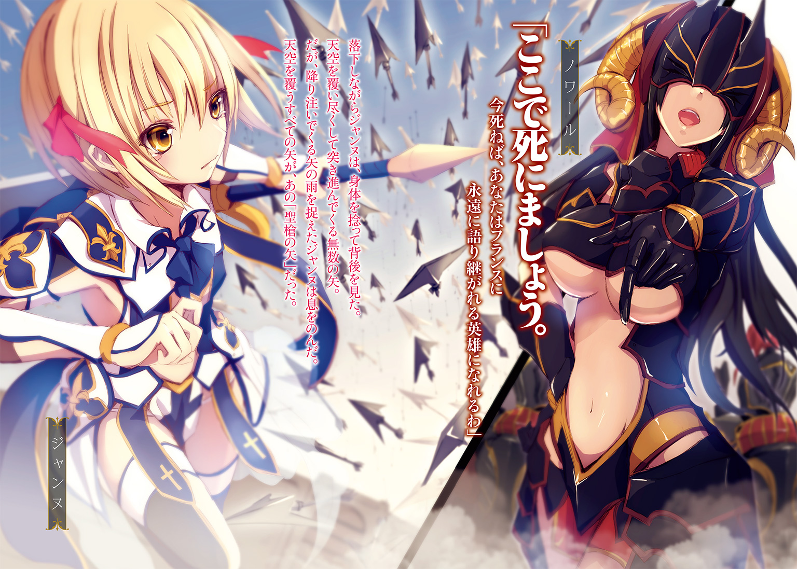

| ユリシーズ ジャンヌ・ダルクと錬金の騎士 2 | |
| 春日みかげ | |
この本は縦書きでレイアウトされています。
また、ご覧になる機種により、表示の差が認められることがあります。


 ダッシュエックス文庫DIGITAL
ダッシュエックス文庫DIGITAL
ユリシーズ
ジャンヌ・ダルクと錬金の騎士 Ⅱ
春日みかげ
【「アンガルタ、キガルシェ」 第五歌 イナンナ（承前）】
百柱余りの「大いなる神々の種族」アヌンナはかつて、エンリル派とエンキ派とに二分されていた。先代の「神々の会議」アヌンナキ議長を務めていた「神々の王」アンが崩御した後、その地位を継承する神は、「世界」すなわちキエンギの軍事を司る兄エンリルと、キエンギの「石」と技術を司る弟エンキのうちのいずれかだと誰もが考えていた。
しかし、エンキは神々のうちもっとも最後に生まれ、閑職につかされていたわたしに「メ」の管理権を譲ったのだった。エンキが所有していた莫大な権限のうち、その多くは「メ」に由来のものだったため、エンキは「神々の王」の候補者という立場から脱落した――。
思えばあの時からすでにエンキは、キエンギが重力禍によって滅びることを予測していたのだろう。なぜ自分自身でなく、わたしに「メ」と「適格者」のドゥムジを託したのかまでは、わからなかった。長年にわたる錬金術の実験作業の後遺症によって、自分自身の脳が他のアヌンナよりも早く損傷を受けるであろうことまで、彼は見通していたのだろうか。それとも。
「わが女神。ほぼすべてのアヌンナがエンリル側について、天船を駆って追撃してきます。エンキさまが亡くなられたことで、エンリルとエンキさまの派閥争いそのものが消滅したようです。これまで去就を決めかねていたお方たちも、雪崩を打ってエンリルにつくしかなかったのでしょう」
天空に聳え立つ七本の塔エ・テメン、その頂点にそびえる空中神殿エディン。暗黒の世界「冥界」に佇む、「メ」と「生命の水」の殿堂。地上へと伸びる塔を経由して、エディンから発される「メ」の力がキエンギの大地とそして宙へ送り込まれ、様々な設備を稼働させているのだ。
そのうち、エディンから「メ」が取り外されているエ・テメンが一本だけあった。
最古にして最大のエ・テメン、「エ・テメン・アン・キ」。
ドゥムジと「メ」を融合させて不死者へ進化させるというわたしとエンキの最終計画は、このエ・テメン・アン・キで行われる予定だった。
だが、天船マアンナをエ・テメン・アン・キの港へと乗り入れてエディンへ向かう余裕は、わたしたちには残されていなかった。
「ある程度の高度に達すると、重力は大幅に減衰する。奴らの船に追いつかれたようね」
エンリルが率いる天船の軍団が、急激にその速度を増して冥界圏へと到達し、いまやエ・テメン・アンキのエディンを包囲しはじめていた。エディンへと接近しているわたしたちを捕獲するつもりなのだ。
それぞれの天船が装備した大筒が、「メ」の力を凝縮して放ってくる。
とりわけ、エンリル自身が乗っている旗艦「漆黒の天船」の主砲は、おぞましい破壊力を誇っていた。ひとたび主砲を地上へと向ければ、天空からキエンギの諸都市を焼き尽くしてしまえるほどに強力な兵器なのだ。イギギと人間たちがエンリルを恐れ服従し続けたひとつの理由は、この「漆黒の天船」の存在にあった。
にもかかわらず、エディンにもこのマアンナにも致命的な直撃がないのは、わたしが手にしている七個目の――「余剰空間開閉」の能力を有している「メ」を喪失することを、そしてエディンを破壊してしまってエディンに充満している「メラム」を暗黒の空間に流出させることをエンリルが恐れているからだ。
漆黒の闇の中に、美しく青く輝くキエンギの大地と海が浮かび上がっていた。しかしその美しいはずの地上の世界では、大地震と大噴火がすでにはじまっていた。キエンギに築き上げられてきた文明のすべてを押し流してしまう破滅の大津波も、いつ発生してもおかしくない状況だった。エンリルは、焦っている。エディンも「メ」も無傷のまま接収して、このまま自らジウスドゥラになろうとしている。
「わが女神。マアンナを降りてエディンの神殿内に向かえば、おそらく移動中に敵に襲撃されます。ですが、移動する必要はありません。エディンとマアンナを連結したのち、マアンナの艦橋にエディンから直接『メラム』を注入します！ あらかじめ艦橋内の『気』を減圧することで、一気に溢れ出る『メラム』で艦橋を満たすことができます。『メラム』が流れてくるまでのあいだ、しばし呼吸を止めてください」
ドゥムジは、エンキが建造した天船マアンナの構造を細部にわたってすべて記憶している。彼は戦闘中にもかかわらず困難な操作を次々と押し進めた。エディンの港口との連結。「気」の減圧。エディンから艦橋内への「メラム」の注入。
「『メラム』濃度が上昇しています。成功です」
「『メ』を飲み込みなさい、ドゥムジ。ジウスドゥラになる時が来たわ。エンリルの旗艦がどんどん接近してくる――きっとマアンナに船を横付けして強引に突入するつもりだわ。急いで」
しかし、ドゥムジは最後の最後に、ためらった。
永遠の命を得て、キエンギ再生のためにいつ果てるとも知れない不死の身体とともに生き続けることを恐れたのではない。
「わが女神。あなたが『メ』を飲み込んでください」
「なにを言いだすの？ 『メ』に選ばれたのは、あなたなのよ。わたしもエンキも、生殖能力を喪失した滅び行くアヌンナ。イギギは群生を選択し、単性生殖に特化した。生物としての進化の可能性を持つ種族は、これからの環境激変にも耐えうる進化速度を保持する知的生物は、有性生殖機能を維持した人間しかない。エンキとわたしとあなたとの間ですでに合意し、結論は出ていたはず。しかも、他の人間では無理なの。『メ』の力を完全に取り込める適格者は、あなたしかいないのよ」
「それではあなたはどうなされるのです、わが女神」
「限りある命を、不死者となったあなたを補佐するために生きて、いずれわたしもエンキのもとへ還る。最初から、そういう計画でしょう？ なにをためらうの？」
「エンキさまは、わたくしに決して『命令』することのないお方でした。人間はアヌンナの奴隷ではない。常に選択権は人間自身にある、とエンキさまは仰せでした。もしも最後の最後、自分自身とイナンナさまのどちらかを選択しなければならない局面が来て、決断が揺らいだら――心が張り裂けそうに乱れたら、その時はわたくし自身の感情を優先して行動しろ。それがどのような結果になろうとも後悔を残すな、と」
「ドゥムジ、あなたは、なにを言って」
「わたくしにはわかります。エンキさまも、ほんとうは、あなたに生き延びてもらいたかったのです。ですから、あなたに『メ』を与え、『冥界』を与え、この天船マアンナを与えたのです。今、わたくしがここで自分の感情を押し殺してあなたの命令に従っても、それでは人間がアヌンナから自立したということにはならないのではないでしょうか？」
「わたしにはもう進化の可能性はなく、子孫を残す能力もなく、わたしの心には有性生殖に必要な愛という感情がないの！ それらをすべて持っている人間が生き延びるべきなの！」
「あなたがジウスドゥラになっても、人間を再生することはできます。このマアンナにはあらゆる生物の『種』と『卵』とが保存されていますから。それに――エンキさまは気づいておられました。あなたは他のアヌンナとは違い、重力の影響で生殖能力が涸れたのではない。いずれ時が来るまで、その能力を――女性としての器官をただ、眠らせているのだと。生まれながらに愛を知らないのではなく、ただ、まだ目覚める時が来ていないだけだと」
「ドゥムジ！ エンキは残念だけれど脳を損傷して錯乱していたのよ、あの男は......え、エンキは......生殖能力を失ってもなお途方もなく女好きの神だったから、わたしに勝手な希望を見出していただけ......！ そうよ。そんな話は、聞くに値しない感情論よ！ 錬金術師としてのエンキが出した客観的な結論はたったひとつでしょう！ 議論の余地なんてない！ エンリルが来てしまう！ 早くあなたがなすべきことをなさい！」
「ならばなぜ目に涙を浮かべて震えておられるのですか、お優しいイナンナさま」
「エンキやあなたの愚かさが腹立たしくて、涙が出てきたのよ！ それだけよ！」
人間がアヌンナから自立して大洪水後の世界を生きるというのならば、わたくしのこの感情と選択をわたくしは尊重しなければなりません、とドゥムジは強い口調で訴えた。従順で善良で公平無私な彼がわたしに逆らうことなど、いまだかつてなかった。
「わたくしは、どうしてもイナンナさまに生き延びてもらいたいのです。むろん、大洪水によって崩壊した世界でひとり取り残されて永遠の命を得るということは、生きながらにいつ終わるとも知れない刑罰を受け続けるのも同然です。身勝手極まりない言葉を吐いていることは承知の上です。しかし、それでも」
「どうして!? あなたは誰よりもわたしに忠実に仕えてきてくれた従者よ。人間でありながら家族も持たず、恋人も作らず、ひたすらにわたしとキエンギのために身を粉にして働き続けてきてくれたあなたがなぜ今になって、そんなことを言いだすの？」
「許しください、わが女神。それは――わたくしが、あなたを――」
「わたしを？」
「......いえ。これ以上の言葉を口にすることは、従者の領分を逸脱する行為でした。申し訳ありません、わが女神。わたくしは、あなたの従者でした。エンキさまとは立場も身分も誓うのです。いかなる感情、いかなる意志をわたくしが持っていようとも、主人であるあなたの意志を尊重するべきでしたね。不死者となって生きてほしいなどと勝手な願いを押しつけて、あなたを際限のない苦しみに陥れるところでした」
ドゥムジは、なにか言いたげにわたしを見つめていたが、ついに折れてくれた。なにかたいせつなものが見つかりそうだったのに、結局その宝物には触れられなかった。不意に、夢から覚めた。そんなふうな、胸が詰まるような形容しがたい感情に、わたしは襲われていた。
「では......『メ』を、もらってくれるのね？」
「了解です。わが女神。お優しい、イナンナさま」
わたしはドゥムジに「メ」を授ける儀式をはじめようとした――。
だが、「メ」を手渡す直前に、その聖なる儀式は中断された。
冥界の闇の空間の中を――生身のまま、エンリルが移動してきたからだった。エンリルはマアンナに接近させた自らの旗艦「漆黒の天船」から飛びだし、おそるべき寒さと高熱と光の毒を全身に浴びながら、それらすべてを耐え抜いてマアンナの艦橋に直接飛び込んできたのだ。
「愚かものどもめ！ 最後の最後に、人間とアヌンナとで仲間割れして手間取るとは！ エンキは――わが弟は、やはり選択を誤った！ 生き延びられる種族はひとつのみよ！」
エンリルの鋼鉄のように硬い豪腕によって艦橋の隔壁が破られ、気圧が減衰し、わたしとドゥムジの身体はそれぞれ巻き上げられて天井や床に激突していた。
わたしの手から離れた黄金の球体「メ」が、宙へと浮き上がっていた。
「少々漏れ出したが、この艦橋はなおも『メラム』に満ちている！ ジウスドゥラになる下準備は、すでに完了した！ 『メ』も永遠の命も、この俺がいただく！」
「エンリル!? 冥界の闇の中を、その翼で飛んできた......!? あの死の世界を!? 少しでも軌道を逸れて艦橋に乗り込めなかったら、永遠に闇を彷徨うことになるのに!?」
「そうとも！ ほんのわずかな時間ならば、俺は冥界の闇の中をも移動できるのだ！ 俺は、神々の王！ 全アヌンナの頂点に立つ男よ！ 貴様やエンキとは身体の造りも精神力も違う！ 俺こそがジウスドゥラに相応しい王者なのだッ！」
そんな。
まさか。
「ドゥムジ！ たいへんだわ！ あなた、致命傷を......早く、『メ』を......！」
床を蹴ったわたしは、エンリルの前に身を乗り出して、目の前を浮遊していた「メ」を摑み、天井に打ち付けられて胸から大量の赤い血を流していたドゥムジへと投げていた――適性者とはいえ、人間の肉体は物理的衝撃に弱い。ドゥムジの胸に、破損した隔壁の破片が深々と突き立っていた。「メ」を飲まなければ、ジウスドゥラにならなければ、ドゥムジはまもなく死んでしまうだろう。
「......わが女神......危険です......エンリルの面前に身を乗り出しては......いけません......！」
「もう遅いッ！ よくも人間の小僧などに『メ』を託したな！ この娼婦が！ アヌンナへの反逆者は、大洪水後の世界には連れていかぬ！ 人間もな！ 誰を生き残らせるかを選ぶのは俺だ、悔いながら死ぬがいいイナンナ！」
エンリルが、無防備に身体を伸ばしきったわたしめがけて、剣を突き出してくる。
わたしは艦橋内を浮遊しながら身体を反転し、背中の翼を広げて防ごうとした。わたしの翼は、剣の一撃程度ならばはじき返せるほどの強度を誇っているはずだった。しかし、無残にもわたしの翼は切り裂かれた。そのまま背中から腹部までを、貫かれた。
「......あ......あ......!?」
その剣の刃には、アヌンナの肉体組織を破壊する猛毒、エレシュキガルが塗られていた。
激痛。
翼は、ぼろぼろに破れていた。翼を覆っていた羽毛がすべて一瞬で解け失せ、翼の外骨格が無残に晒されていた。さらに、エレシュキガルは翼を経由してわたしの背中から全身へと回っていた。全身の組織が高熱を発し、溶けはじめているのがわかった。
肉体が、一刻も早く体内に入り込んだエレシュキガルを排出するために、その質量を空中へと放出しているのだ。
「わが女神!? やめろ、エンリル......！」
「人間の小僧！ 次は貴様だ！ 貴様の胸から汚らわしい血が溢れ出てちっぽけな心臓が止まるまでのわずかな時間も、生かさん！」
Ⅰ オルレアン
「ねえねえモンモランシ、これも『賢者の石』なの？ どこをどう見てもこれって剣だよねっ？」
「ああジャンヌ。剣だな。しかもかなりの年代物だ」
「錆びてるよね！ 研ぎ直さないと！」
「石や金属を綺麗にする作業なら、俺に任せておけ。錬金術師を廃業したら鍛冶屋にでもなるかな」
「あれ。モンモランシって、ほんとうは貴族さまなんでしょう？ 貴族さまに戻るんじゃないの？」
「実家には戻れないんだ。俺が貴族のほうがいいか？」
「ううん。職業がなんであっても、モンモランシはモンモランシだよ！」
「いい子だ。オルレアンに無事入城できたら、『高い高い』をやってやろう」
「えええ。わたし、もうお子さまじゃないよ？ ほぼ乙女だよ」
「そのさくらんぼうみたいな胸で乙女と言われてもな。妖精にしか見えない」
「ひっどーい！ 山羊のミルクを毎日飲んでるもん。モンモランシの周囲は胸の大きい美人の貴族さまばかりだもんね。わたしもリッシュモンさまやラ・イルみたいな立派な乙女に成長して、モンモランシを他の女の子に誘惑されないようにしないと！」
「なあジャンヌ。そんなイタリア人みたいなことを言わないでくれ。ここはフランスだぜ。小さい胸には、小さい胸にしか存在しない美ってのがあるんだよ」
時は十五世紀、舞台はフランス。
馬で山道を進みながら、白い甲冑に身を包んだ外見十二歳（自称おおむね十八歳）の少女ジャンヌと、そのジャンヌの兄貴分・黒衣の錬金術師モンモランシとが、掘り出したばかりの一本の剣について語り合っていた。
ジャンヌは北フランスの片田舎ドンレミ村で妖精たちに囲まれて羊飼いをしていた素朴な女の子だったが、村が傭兵たちに襲われた際に致命傷を負った。
村を訪れていた流れ錬金術師モンモランシは、ジャンヌとベーゼを交わして霊水「エリクシル」を注ぎ込み、自分が持っている「賢者の石」を二つに割って、片割れをジャンヌの身体に埋め込んで命を救った。
しかし賢者の石を装着して人間を超える存在「ユリス」へと変貌したジャンヌは、長い時間を老いず子供のままの姿で生きることになった。カトリック教会の聖職者に知れたらただちに「異端の魔女」と断罪されるという過酷な運命を背負ったのだ。
モンモランシは「イングランドをフランスから追い払って戦争を終わらせたい」と願うジャンヌの意志を尊重し、ジャンヌを滅亡寸前のフランスを救う「聖女」だと喧伝してフランス王家と接触。王都パリを追い出されて南フランスに逃れ、一度は王位に就くことをあきらめていた姫太子シャルロットもまた、ジャンヌに励まされて心を揺り動かされ、ジャンヌに王家の百合の旗を与えて最終防衛拠点オルレアンへ向かわせたのだった。
自称「自由七科博士」。知恵者を任じる手乗り羽つき妖精のアスタロトが、二人が手に入れたばかりの「剣」について解説を挟んだ。
アスタロトは長い黒髪と、妖精服に刺繡した五芒星が自慢の妖精だ。
空を舞う羽を持ち、他の妖精族から「妖精の女王」と呼ばれる羽つき妖精アスタロトは、かつては賢者の石を守護する神として「世界の再統一」という使命のために英雄たちを導いていたという。今では、キリスト教の唯一神を奉じる教会から魔族と呼ばれて狩られる境遇に落ちてしまったが――。
「モンモランシ、ジャンヌ。この賢者の石は、フランス史上最強の英雄シャルルマーニュが用いていた『聖剣』ジョワユーズ。錬金術師の手によって剣の形に成形されているの。こうして賢者の石を『剣』の形にすることにはいくつか利点があるの。最大の利点は、石が発現させる固有能力のレベルを数段引き上げられる上に、その能力を『攻撃』に特化できることよ」
「......じゃあ、この剣を装備しても胸が膨らんだりはしなくなるんだね......夢がないね......がっかりだよ！」
「あなたはもう賢者の石を持っているでしょジャンヌ。賢者の石は、一人につき一個しか装備できないわ。それがルールよ。もっとも、あなたは賢者の石を半分しか持っていないから、ジョワユーズの力を一瞬だけなら取り込めるけれど、それも一瞬だけよ。体内の賢者の石に拒絶されて、取り込んだジョワユーズの力はすぐに消えてしまう。戦場では使いものにならないわ」
「えーっ？ そうなんだあ？ じゃあもうわたしの胸は......」
「そもそも、剣型に加工した賢者の石の力を取り込むには、自分の身体を剣で貫かなければならないの。痛いわよ？ 我慢できる？」
「あうう、剣でお腹を貫かれるの、きらーい！ 我慢できそうにないよう。もう絶望しそう！ モンモランシ、エリクシルをちょうだい！」
朝にあげただろ、とモンモランシ。
ジャンヌは子供なので、賢者の石を丸ごと体内に入れることができなかった。それでモンモランシは仕方なく賢者の石を半分に割ってジャンヌのお腹に入れたのだが、この割り方が錬金術の作法を無視したものだったために、ジャンヌはユリスの力を使うたびにエリクシルを涸らしてしまうという制約を負ってしまった。本来ならば数年か数十年は保つはずのエリクシルが、ジャンヌの場合は一度消耗すると自然回復せず、しかもわずか三分で切れてしまう――だからエリクシルを、モンモランシが直接ベーゼを交わして与えなければならないのだ。
ジャンヌに毎朝毎晩エリクシルをまるで山羊のミルクのように求められるモンモランシは、（俺は子供になにをしているんだああ）と苦悩し懊悩し、げっそりとやつれていた。
賢者の石を剣や器などの『宝具』に造り変える利点はまだある。賢者の石の力を獲得するために石を体内に入れる必要がなくなるのだ。『宝具』ならば、力をいちど取り込めば、ある程度距離が離れても問題ない。体内のエリクシルが涸れるまで賢者の石の所有者であり続けられる。原石の状態のままでは、飲み込まなければならず、しかも適応できなければ死んでしまう。危険が大きいのだ。
「モンモランシとジャンヌが半分ずつ持っている賢者の石も、以前は指輪の形に成形されていたのだけれど、所有者だったソロモン王がみだりに後世の人間に石を使わせないように原石の形に戻したのよ。宝具を原石に戻せば、発現する固有能力のレベルも下げられるしね。指輪化された石が発現させる固有能力は、あまりにも強すぎたから......」
と、アスタロトが言った。
「もっとも、半ばは思慮深すぎたソロモン王の杞憂だと思うけれど。ソロモン王ほど賢者の石に適合できる資質を持つ人間など、そうめったに現れるものではないわ」
「え？ それじゃ俺とジャンヌの賢者の石は、『ソロモンの指輪』だったのか？ ソロモン王ってあのソロモン王だよな？ 古代エルサレムに神殿を築いて七十二柱の悪魔を使役したという、あの？」
「ええ、そうよ。ちなみにソロモンが建てた神殿はイスラエルの神のための神殿ではなく、このわたしに捧げられた神殿であり、巨石の力を利用してエリクシルを錬成するための神殿だったの。エジプトのピラミッドや、ヨーロッパのドルメン、メンヒルと同じよ。それにソロモンが使役した七十二柱は悪魔ではなく、キリスト教誕生以前の古き世界に君臨していた神々よ」
へえ。聖書にはそんなこと書かれてなかったぜ、後からローマ教会が筆を曲げて歴史を改ざんしたってことか、とモンモランシはうなった。
「よく聖書を読めば、ソロモン王は異教の神を祀って国を乱したって書かれているわよ？ もっとも、石を宝具に成形することにはデメリットもあるわ。ある程度の距離なら離れても問題ないのだけれど、あまりにも遠く離れてしまうと賢者の石の力を用いることができなくなるの。ソロモン王だって、指輪を盗まれた時は指輪の力を失って困っていたものよ」
「なるほどなあ。聞いたことあるぜ、その種の逸話。たしかに丸ごと飲み込んじまえば、まず失くさないもんな」
「それよりも今はジョワユーズの話。かつてこのジョワユーズで己の身体を貫き、ユリスの力を手に入れて分裂したヨーロッパを再統一し、フランク人の王として初の西ローマ皇帝となったシャルルマーニュは、自分が死ぬ際に剣を隠さねばならなかったのね。エリクシルが尽きてしまったから。そこでジョワユーズを秘密の場所に隠したんだわ」
「シャルルマーニュの世継ぎにエリクシルを与えてやれば、ヨーロッパの再分裂はなかったんじゃないのか？ アスタロトは賢者の石とエリクシルを英雄に与えて世界を再統一させるのが仕事だろう？」
「それがね。シャルルマーニュの死後、シャルルマーニュの帝国は三つに分裂したのよ。最終的にはシャルルマーニュの三人の孫がそれぞれ、今のフランス・ドイツ・イタリアに割拠したの。これは明らかな契約違反だわ。わたしは誰にも味方できず、誰にもエリクシルを与えなかった。ジョワユーズの力を失ったヨーロッパ世界はその結果、さらに分裂していったわけ」
アスタロトが、青空を舞いながら「せっかく賢者の石の力で世界を統一してもまたすぐに分裂する。人間ってほんとうに愚かだわ」と嘆いた。
「賢者の石の力を手にして皇帝になったのはいいが、世継ぎが仲違いしちまった、ってことか」
「ねえねえアスタロト！ 賢者の石って全部で七個あるんだよね？ 残りの五個はどこにあるの？ 教えて～！」
「ジェズュ・クリが所持していた『聖杯』は、わたしを無視して人間自身の手で賢者の石を制御しようという不届きな思想を掲げた『テンプル騎士団』がエルサレムで発掘してヨーロッパに持ち込んだわ。テンプル騎士団がヨーロッパ最大の権力と富を手に入れたのも、賢者の石の力よ。フランス王家が異端の嫌疑をかけてテンプル騎士団を壊滅させたのもきっと、聖杯とエリクシルが目当てだったのよ。結局、聖杯もエリクシルも見つからなかったのだけど」
「テンプル騎士団総長の末裔である俺の実家にもう一つの賢者の石があったのが、どうも引っかかるんだよなあ。フランス王家はともかく、テンプル騎士団の連中は、賢者の石を手に入れていながらその正体に気づかないような間抜けだろうか？ あいつらははるばるエルサレムまで遠征して、異教徒たちと斬った張ったの殺し合いを続けてきたんだぜ？ しかもアスタロト、お前を無視して自分たちで賢者の石を制御し、世界を統一しようとしていたくらい頭のいい連中だろう？ しかもソロモンの指輪って言えば、聖杯と並ぶ有名な宝具だぜ」
「危険な力を持つ指輪は、思慮深いソロモン自身によって原石の姿に戻されていた。だから賢者の石だと誰にも気づかれずにテンプル騎士団総長の子孫の家、つまりモンモランシの実家に埋もれたままになっていたんじゃなくて？」
「そうかなあ？ お前から見れば寿命の短い人間とはいえ、テンプル騎士団なんてたいそうな組織に入って暗躍してきた連中はそこまで愚かじゃねえと思うが......」
「ねえねえ。アスタロトは、七つの賢者の石すべてのありかを知っているの？」
「......正直言って、わからないもののほうが多いわ。まず古代エルサレム王国のソロモン神殿にあったはずの聖櫃。これは、はるか昔に消失してしまってもう見つかりそうにないわ。失われてから二千年以上が経過してしまったから」
「えええ。壊されちゃったのかなあ？」
「近年になって消失した賢者の石の代表は、例の聖杯よ。ジェズュ・クリを殺した『聖槍』も消えたわ。でも、賢者の石全部を揃える必要はないわ。どうせ一人につき一個しか装備できないのだし、エリクシルを錬成する方法を知っている者はわたしだけなのだから」
「そうなんだあ！ でも、アスタロト？ ねえねえ。聖櫃。指輪。聖剣。聖杯。聖槍。これでやっと五個だよ？ まだあと二個あるよね？」
「も、もういいじゃない。どうせわたしは守護者失格、神から魔族に堕落した落ち目の妖精よ！ そんなことよりもジャンヌ！ あなたは、いくら山羊の乳を飲んでも胸を膨らせることはできないわよ！」
「え、えええええっ？」
「賢者の石の力は、不老不死の力！ エリクシルを供給できる限りは老いない！ 老いないということはつまり、生物の身体の成長速度を遅くするのよ！ 寿命は格段に延びるけれど、子供が装着したら子供のままよ！ 貧乳が装着したら貧乳のまま！ あなたも、子供のままの姿で生きることを承知の上で賢者の石をお腹に入れたんでしょ？ どうして、都合良く胸だけ膨らむのよ？」
「そんなあ？ モンモランシぃ～！ 今すぐわたしのお腹に手を突っ込んで、石を取り出して！ お願い！ 痛いのは我慢するから！ どれほど痛いことされても、モンモランシならわたし、平気だよ！」
「ダメよジャンヌ！ あなたはいちどドンレミ村で致命傷を負って死亡確定していた身体なのよ！ 今は賢者の石の力で生きていられるの。賢者の石を取り出したら死んでしまうでしょ！」
「死んでもいいから、いちどくらいおっぱい大きくしてみたーい！ うえええええん！ もう自力で大きくするのはあきらめたよ！ こうなったら他力だよ！ ねえねえモンモランシ、胸を揉んでみて！ 触られたら大きくなるってラ・イルが言ってたよ！」
「ジャンヌ！ モンモランシになんてはしたない言葉を！ 男に胸を触らせるだなんていけないことよ！ 少しは大人になりなさいっ」
「子供だもんっ！ アスタロトが言ったんでしょっ」
「しーっ。ジャンヌもアスタロトもそろそろ気合いを入れろ。オルレアンは近いぜ。イングランド軍が包囲しているんだ、ここからは戦場だぞ。さあ、乙女義勇軍の野郎どもが追いついてきた」
後世「百年戦争」と呼ばれることになるイングランドとフランスの戦いは佳境を迎えていた。
ロワール川北岸にあるフランス王家の最終拠点オルレアンを、イングランド軍はすでに半年にわたって包囲している。
このオルレアンという古都は、イングランドが占領している北フランスと、フランス王家に残された南フランスとの境目という戦略的に重要な位置にある。パリよりも歴史が古いかつてのフランス王都で、古代の英雄カエサルがローマ軍を率いてガリア（フランス）を征服する際に拠点として選んだほどの要地だった。
このオルレアンを落とせば、イングランド軍はロワール川を越えて南フランスを一気に蹂躙することができる。
フランス王家の「王位継承者」シャルロット姫太子に忠誠と友情を誓うモンモランシとジャンヌは、今、わずかな義勇軍だけを率いてそのオルレアンの援軍に向かっていた。
モンモランシは貴族だが実家を廃嫡されて一文無し、ジャンヌは羊飼いの娘、お互いに兵力など集められない。幼いジャンヌの愛らしさにやられた市民の男たちが「乙女義勇軍」として集まってきたのだが、彼らはジャンヌへの忠誠心（というよりもいたいけな少女を守りたいというある種の宗教的情熱）に溢れているものの戦争には素人で、実戦でどれだけやれるかは未知数。数も百を少し超えた程度だ。
オルレアンを包囲するイングランド軍は六千を超えている。
オルレアンに籠城しているフランス軍は、二千というところだった。
「この数じゃ援軍にもなりゃしねえな......まあ兵糧だけは口八丁手八丁で調達できた。まずはオルレアンにどうやって兵糧を運び込むか、だな」
今は廃嫡されて錬金術師となっているが、貴族の家に生まれ育ったモンモランシには従軍経験がある。
ジャンヌのもとに集まってきた義勇兵たちをどうにかこうにか軍隊らしくまとめて行軍させているのは、モンモランシだった。
「錬金術師の旦那、強行突破しましょうぜ！」
「オルレアンは目の前だあ！」
「しかしロワール川の南岸は、イングランド軍が固めているよな」
南から進軍している乙女義勇軍が北岸のオルレアンへ入るには、このロワール川を渡らなければならない。
だがオルレアンへの最短距離にある正面の南岸には、イングランド軍が徹底的に防御力を強化している難攻不落のトゥーレル要塞がそびえ立っていた。
その上、トゥーレル要塞とオルレアンとの間にかけられていた『橋』は、イングランド軍が破壊してしまっている。
「恐れるな！ 俺たちには、ジャンヌちゃんがついている」
「回り道するんじゃねえ、最短距離を最速で、それがジャンヌちゃんの生き方！」
「このままイングランド軍が立てこもるトゥーレル要塞をぶん取って、そのまま川を渡って最速でオルレアンへ入城だああああ！」
乙女義勇軍の男たちはみな、猪突猛進主義であった。
「野郎ども！ 戦って死ねば」
「天国へ一足先に行けて、永遠の処女ジャンヌちゃんをお迎えできるんだ！」
「でもジャンヌちゃんが死ぬのはいやだああああ！」
「ジャンヌちゃんの敵・イングランド野郎どもを皆殺しだああああ！」
「お前ら、待て！ 無茶言うな！ 今は兵糧をオルレアンへ運んで市民を飢えから救うんだ！」
熱狂する乙女義勇軍の面々を馬上で眺めながら、うわあすごいね......と苦笑しているジャンヌをよそに、モンモランシは興奮する野郎どもを必死でなだめすかした。
「戦うのはオルレアンに籠城しているフランス軍本体と合流してからだ。先にオルレアンへの補給を実行する！ なによりも市民の命を最優先！ これがジャンヌの意志だ！」
「黙れうるせえんだよ、このうさんくさい錬金術師」
「ジャンヌちゃんの隣に兄として侍る権利を剝奪してやる！」
「うらやましい！ なんで俺じゃなくてお前なんだ！ 死ね！」
モンモランシの人徳はゼロに等しかった！
「はうう。義勇兵のみんな！ モンモランシの言うとおりに動いて！ みんなでバラバラに行動していたら、死んじゃうよう。ダメだよ、そんなの～！」
「了解しましたジャンヌさまあああ！」
「仰せのとおりに、われらが総大将！」
「俺たちみんなを心配してくれるジャンヌちゃんマジ天使！」
「そうと決まれば、兵糧をオルレアンへ搬入するための作戦を練ろうぜ！」
「乙女義勇軍が誇る一糸乱れぬ結束の固さを、英国の野郎どもに見せてやる！」
「さあジャンヌちゃんのために完璧な作戦を考えろ、錬金術師野郎！」
ジャンヌの一言で、義勇軍の面々は説得された！
「なんなんだよこいつら。俺の立場がねえだろうが！ だいたいだな、独身男ばかりなのになにが乙女義勇軍だ」
「はあ。ほんとうに人間の雄どもって愚かね」
飛び疲れたらしいアスタロトはモンモランシの手のひらの上に乗り、お気に入りの細長い指に抱きついて頰ずりしている。
「ねえねえモンモランシ、これからどうすればいいの？」
「南からの正面突破はこの兵力じゃ難しい。三分でケリを付けるためには周到な戦略が必要で、無策で突っ込めばジャンヌの体力が持たない」
「うん！ わたしがユリスになれる時間は三分だけだもんねっ」
「西の下流地域もイングランド勢力ががっちり固めていて、文字通りの地獄だ。そこで俺たちは比較的包囲が手薄な東へ迂回して、ロワール川上流から船で兵糧をオルレアンへ運ぶ。遠回りになるが、虎の子の兵糧を焼かれたらオルレアン市民は飢え死にだからな」
だがこのまま愚直に東へ迂回するだけでは、容易にイングランド軍に気取られて襲撃される。もしも兵糧を焼かれれば敗北だ。ジャンヌという切り札を持ってはいるが、戦闘は避けたいところだった。
「アスタロト、頼まれてくれるか。オルレアンの防衛隊長に伝令として会ってきてくれ」
「ふう。空を飛べるのも考えものね」
「俺たちは東門から入る。陽動部隊を東側の敵軍砦へ送って、少しの間だけイングランド軍を足止めしてくれ、と伝えてくれればいい」
「わかったわ。それで、オルレアンの防衛隊長って誰？ 本来の領主オルレアン公は、イングランドで人質生活中でしょ？」
先代のオルレアン公ルイは、先代ブルゴーニュ公ジャン無怖公に暗殺され、跡を継いだ嫡子のシャルルはイングランド軍に捕らわれてブリテン島に幽閉されているのだ。
「防衛隊長は今のオルレアン公の弟で、先代オルレアン公の庶子だ。通称もバタール。シャルロット姫太子の従弟だ。俺とは騎士養成学校で一緒に学んだ幼なじみだよ。庶子とはいえ王家の血筋の人間だから、失礼のないようにな。オルレアン陥落の悪夢を目前にして激しく落ち込んでいるらしい。愚かな人間め、は禁句だぞ」
「もうオルレアン公家には、先代当主が浮気してできた子しか残っていないわけね。だいじょうぶかしら？ ああ、そうね。だいじょうぶじゃないから、陥落しかけているのね」
気をつけてねアスタロト、とジャンヌがアスタロトの頭を撫でようとした。
アスタロトは「モンモランシ以外の人間はわたしに触らないで」とその指を突っついてから、ふわり、とモンモランシの手のひらの上から青空へと飛び立っていた。
「アスタロトにすっごく懐かれてるよね、モンモランシ。いいなあ！」
「懐かれてるんじゃなくて、あいつは俺を飼っているつもりなんだ」
「それを懐かれているっていうんだよー！ わたしだって、モンモランシに飼われてる気分だもん！ んー、エリクシルほしーい！」
ドンレミ村の妖精さんたちにも会いたいなあ、とジャンヌが寂しそうにつぶやいた。
モンモランシは「いつか会えるさ」と笑ってジャンヌの頭をぽんぽんと叩き、うらやましがる乙女義勇軍の面々から「触るな！」「死ね！」「兄だから殺さずに耐えてやってるんだ！」「ジャンヌちゃんを汚すな！」と呪詛の言葉をいっせいに浴びた。
「乙女義勇軍」は東へと迂回し、ロワール川の上流へと向かった。
「すっげえ遠回りだぜ、これ」
「錬金術師の野郎、やる気ねえのかよ」
「やっぱり堂々と正面突破すべきだよな」
モンモランシはジャンヌとともに馬を駆って北岸側へと渡り、戦意に溢れすぎて愚痴る義勇兵たちをなだめすかして兵糧を船に積み込ませた。
今はまだイングランド軍がジャンヌたち乙女義勇軍のもとへは到着していないが、敵もすぐに陽動策を見抜いてジャンヌを捕捉しようと兵を繰り出してくるだろう。
時間との戦いになる。
「ジャンヌも義勇兵どもも覚えていてくれ。戦争ってやつは、なにがなくとも兵糧の確保が最優先だ。飢えれば、結局は村を襲って食料を略奪するしかなくなる」
「モンモランシって、意外と戦争慣れしてるよね！ 頼りになるぅ～」
「さんざん略奪現場を見せられまくって、うんざりしていたのさ」
「ふう、お待たせ。オルレアンから兵を連れて迎えに来たわよ。守備隊長がぐちゃぐちゃ文句を言うから頰をつねって泣かせてやったわ」
空をぱたぱたと舞うアスタロトが、オルレアン防衛隊を先導して二人のもとへと駆けつけてきた。
そのアスタロトが引き連れている指揮官は、三人の騎士。
一人は、色白できゃしゃな、幼い姫騎士だった。
緑色を基調とした、華麗な甲冑を着ている。
年齢はジャンヌより二、三歳年上のようだ。
「ううう。皆さん、ボクが守備隊長のバタールです。モンモランシとは数年ぶりの再会ですねえ。ああ。ボク、オルレアンの外に出ちゃった。も、もう終わりだよぅ......イングランド軍に捕らわれちゃうよう。こ、この羽つきの小悪魔がおそろしくて、つい言いなりに......ううう」
バタールはぽろぽろと泣きながら、馬上で震えていた。
「か、かわいいじゃねえか！」
「この愛らしい女の子が、オルレアンの守備隊長？」
「ジャンヌちゃんに続いて、二人目の天使が来た！」
「これはますます士気が高まるぜ！」
船団に次々と兵糧を運んでいた汗みどろの義勇兵どもは盛り上がったが、バタールが、
「あ。ボクは男です。女装しているのは、幼い頃から従姉のシャルロットに強制されてきたからです。弟分なんて要らない、妹が欲しいとわがままを言われて......」
と申し訳なさそうに言いだしたので、歓声はたちまち怒号に変わった。
「ふざけんなあ！」
「男の姿に戻れ、まぎらわしいんだよ！」
「かわいいだけに悪質なんだよ！」
「俺たちの心の中で、妙な扉が開きそうになったじゃねえか！」
ジャンヌが「うわあ。かわいい～！ ほんとに男の子？」とはしゃいでバタールの手を握ろうとしたが、バタールは「ひいいいいいっ」と黄色い悲鳴をあげてジャンヌから逃げた。
「ややややめてください！ 女の子は苦手なんですっ！」
「ええ～どうして？」
「それはもちろん、シャルロットに物心ついた時からいじめられてきたからで......女装を解いたら必ずお仕置きでした......ボクはしょせんは庶子でしたから、誰もシャルロットの暴走を止めてくれず......って、ボクの心の闇をさらりと暴こうとしないでください！」
「うーん。シャルロットっていじめっ子だよねっ、モンモランシ！ わたしにはとっても優しいのに、どうしてだろ？」
「相手によるんじゃないか？ いじめっ子ってのは、相手が怯えれば怯えるほどいじめたくなるらしいからな」
「そそそういうわけで、じゃじゃじゃジャンヌさんはボクに触らないでください！ 恐怖で卒倒してしまいます！ あ、モンモランシなら触ってもいいですよ。殿方は怖くないですから、触られても平気なんですよう♪」
「誰が女装している男に触るか！ 俺にはそんな趣味はねえよ！」
なんてまぎらわしいんだ。こいつ、もうそろそろ男らしくなっているのかと思っていたがむしろ思春期を迎えて下手な女の子よりも女の子らしくなっている。一瞬ときめいてしまった。モンモランシは（やはり俺の身体にはジジイから......赤髭のジャンから受け継いだ変態の血が流れているのか）と悲しくなってきた。
「じゃ、ジャンヌさん、申し訳ありませんが正直言いましてこんな形ばかりの援軍は迷惑です。オルレアンはもう終わりなんです。下手に抵抗すれば、ボクはイングランドの捕虜にされてロンドンに送られてそこで女装している男の子をいじめるのが好きな変態貴族どもに蹂躙されて泣きながら余生を過ごすしかないんです。それだけは免れようと、必死でブルゴーニュ公国のフィリップ善良公女に『命ばかりはお助け』と泣きついて交渉しているところだったんです。フィリップとは騎士養成学校での同門ですからねえ。それをあなたたち無謀な神がかりの義勇軍がぶち壊しに」
フィリップ善良公女は、フランス王家の分家の血を引き、かつての宗主国だったフランス王家と対立しているブルゴーニュ公国の君主。
父親をフランス王家側の貴族に暗殺されたために、今はイングランドと同盟している。
フィリップ善良公女もまた泣き虫でいじめられっ子という点ではバタールに似ているが、ところがバタールの父の先代オルレアン公ルイを暗殺した犯人がフィリップ善良公女の父・先代ブルゴーニュ公ジャンなのだ。
つまり、オルレアン家とブルゴーニュ家にはフランス宮廷内で権力を奪い合ってお互いにお互いの首領を殺し合ってきたという過去がある。
この泥沼の派閥闘争が、イングランド圧勝という現状を生みだしていたのだ。
「バタール。いいから兵糧を船で輸送するのを手伝ってくれ。陽動で時間を稼いでいるとはいえ、イングランド軍はすぐに来るぞ」
「ひいいい。来ますよね？ やっぱり来ますよね！ もう終わりだ......ボクは戦場の血を見て興奮して『男の子でも構わん』と言いだしたイングランドの野蛮なサクソン兵どもに押し倒されて......うう。うううう。お母さあ～ん」
「乙女のように震えてないで戦え！ お前、一応は男なんだろ？」
アスタロトがバタールの頭の上に止まって、「もうオルレアン家にはこいつしか残っていないのよ。終わりよね」と呆れている。
「ぎゃああ！ 雌の悪魔がボクの頭の上に！ 触らないで！ 手乗りサイズとはいえ、雌は雌！ 女は女！ 女でしかも小悪魔だなんて、あまりにも呪わしい！ なんなんですこの子はっ」
「アスタロトは小悪魔じゃない。そいつは俺の飼い妖精だ」
「そうだよ。悪魔じゃないよう。モンモランシと仲良しの羽つき妖精さんだよ！」
「怖すぎますっ！ こんなのが窓からいきなり入ってきて......悪夢ですっ！ そもそもモンモランシは、フランス一の大富豪貴族ラヴァル＝モンモランシ家の正統後継者じゃなかったんですかあ？ それなのに、どうして素人義勇兵と羊飼いの女の子しか連れてきてくれないんです？」
「今の俺はジジイに廃嫡されていて、土地も財産もなにも持ってないんだよ。持っているのは賢者の石の片割れと、羽つき妖精だけだ。あと、棺桶に錬金術の道具を詰め込んでいる」
「完全に異端者じゃないですか！ しかも一文無しだなんて！ しくしく。モンモランシは小悪魔に幼女と、おそろしい災いをオルレアンへ運んできただけじゃないですかあ！ 神はボクを見放されました......」
そんなバタールの左右に侍っている二人の騎士は、どちらも確実に男だった。
「ふん。モンモランシ、とうとう幼女に走りましたか。血は争えませんね」
一人はフランス有数の美少年騎士と誉れ高い、アランソン。
ブルターニュ公の妹・姫騎士リッシュモンの従弟で、子供時代はやはり騎士学校でモンモランシたちと過ごしていた。
アランソンは礼儀正しく美しく気高い真の騎士としてフランス中の女性の憧れの的だが、従姉のリッシュモンに似て気位が高い。いつの間にかよくわからない境遇に身を落としているモンモランシを、思いっきり疑っている表情だった。
「きみには、あの女子供とて容赦せず拷問する赤髭のジャンの血が流れていますからね。あんな男の後継者であるきみには関わり合いになりたくなかったのですが......か弱い羊飼いの幼女を戦場に連れてくるとなると、騎士としてさすがに見過ごせません」
「おいおいアランソン。冷たいこと言うなよ、幼なじみだろう？ 俺にちょっと反撃を食らったらリッシュモンに『お姉ちゃ～ん』って泣きついていたやつが、ずいぶんと気障になったもんだ」
「僕の恥ずかしい過去をねつ造しないでくれますか！ 僕はリッシュモン姉上を『お姉ちゃん』と呼んだりはしていませんでしたよ！」
「そうか？ 呼びまくっていた記憶があるんだが？」
「きみの記憶違いです、噓はやめてください！ モンモランシ、きみとはいちど決着をつけなければなりませんね！」
「......なあアランソン。なんで俺に対してそんなにとげとげしいんだ？」
「きみのせいです！ 七年前、僕は姉上に強引にアザンクールの戦いに参戦させられて、イングランドに人質として連れ去られたんですよ！ きみが錬金術ごっこをしている間に！」
「いや、俺もアザンクールには行ったぜ？ 間に合わなくて悪かった」
リッシュモンが俺に怒っていたのと同じ理由か。そうか。アランソンも人質にされていたんだから怒られても仕方ねえ、しかもこいつは男だからそれほど悲惨な目には遭わないだろうと思ってリッシュモンほど心配してなかったしなあ、とモンモランシは少々反省した。
「その後がひどかったんです！ 姉上はロンドンに捕らわれた僕を思い切り放置して独断でイングランド側に寝返り、しかもあろうことか一人でブルターニュに戻ってフランス軍の元帥になってしまったんです！ 気が変わった、やっぱりイングランドと戦うとか言いだして！ このまま処刑されるんじゃないか、一生フランスに戻れないんじゃないか、と僕はロンドンでさんざん泣きましたよ！ それもこれもモンモランシ、すべてはきみのせいなんですよ！」
「いやあ、それはリッシュモンのせいだろ？」
「あの人は気位が高いからきみに救いを求める手紙など出したりはしませんでしたが、姉上はいつかきみが白馬に乗って自分を救いに来てくれると信じていたんですよ！ イングランドでは、さんざん八つ当たりされました！ それなのにきみは貴族の身分を捨てて、流れ錬金術師などに。しかも幼女趣味に走るだなんて。いったいなんなんですっ？」
「俺は黒い馬にしか乗らないんだがなあ」
「そういう話をしているんじゃないんですよモンモランシ！」
とにかく姉上とはそれ以来不仲なんです、僕は独り立ちすると決めたのです。ですから姉上がフランス宮廷から追放されようが、僕は僕個人としてオルレアンで戦い続けているんです、とアランソンはまくし立てた。
「あいつにだって深い事情があるんだ。ノルマンディの領主として封じられているお前と違って、フランス王国に統合されることを拒否し続けているブルターニュ公家を守る姫騎士という複雑な立場なんだから、リッシュモンを怒らないでやってくれよ」
「なら従弟の僕に一言くらい相談してくれればいいではないですか。姉上は昔から独断的すぎるんです。だからフランス宮廷でも孤立したんです」
リッシュモンとアランソンも和解させなきゃならなくなったな、とモンモランシは深いため息をついた。
「ねえねえ。モンモランシ、いつ幼女趣味に走ったの？」
「お前のことだぜジャンヌ」
「わたしは幼女じゃないよ、もう乙女と言ってもいいお年頃なんだよ。美形の騎士さま！」
「これは失敬しました、ジャンヌ。僕のことはアランソンとお呼びください。それでは以後は幼女扱いせず、《乙女》と呼ばせていただきます。ですが、幼いあなたが大天使からオルレアン解放の使命を与えられた聖女だとは信じられませんね。あなたはモンモランシにたばかられているのです。早く生まれ故郷の村にお帰りなさい。戦場は文字通りの地獄なんですよ」
さすがフランス一のモテ男、幼いとはいえ女の子のジャンヌに対しては礼儀正しい。だが、ジャンヌのことを「詐欺商売の種」だと断定しているあたりは全部この俺の印象が悪いせいだろうなあ、とモンモランシは頭をかいた。
「モンモランシ。きみが落魄するのは勝手ですが、なんですかその汚らしい魔術師のような格好は。乙女ジャンヌに失礼ですよ。顔に品性がないのは仕方がないとして、せめて髪を切るなり洗うなりしてくれませんか」
「アランソンさま、モンモランシはほんとはかっこいいんだよ！ 身なりを整えたら！ ......たぶん」
「もっと確信を持って俺を擁護してくれよ、ジャンヌ」
「ともかくジャンヌを村へ帰してあげなさい。貴族の家に生まれついた姫騎士ならばいざ知らず、羊飼いの少女に甲冑を着せて戦場へ放り込むなど騎士道精神に反します。イングランド軍と戦って死ぬのはモンモランシ、きみだけで充分です」
「どうして俺だけなんだよ？ アランソン、お前も俺と一緒に討ち死にしようぜ」
「お断りですね。錬金術師と運命をともにするなど、フランスの騎士としての恥になります。まったく。いったん貴族の世界を捨てたくせにおめおめと戻ってくるとは......」
バタールは悲観的でもうどうやっても負けると思いこんでいるし、アランソンは俺とジャンヌに懐疑的だしで、こりゃ苦労しそうだな、とモンモランシは思わず天を仰いだ。
「おっ。三人の指揮官の中に一人、新顔がいるじゃねえか！」
バタールの右に侍っているもう一人の騎士は、いや傭兵は、アランソンとは対照的に真っ黒く日焼けした筋肉質の伊達男だった。
歳はモンモランシと同じくらいか。
陽気な性格らしく、鎧、兜、旗、槍、すべてが派手派手しく傾いている。
南国ガスコーニュから来ている傭兵であることは、その姿や旗印からすぐにわかった。
傭兵は略奪・戦争を繰り返していくうちに次第に殺伐としてくるものだが、この男にはそういう影が感じられない。底抜けに人が好さそうな男だ。
モンモランシはこのガスコーニュ傭兵に希望を見出そうとした。
だが、その希望はすぐに打ち砕かれた。
その傭兵は、笑顔で「よう」と近づいたモンモランシの顔面を、いきなり拳で打ち抜いてきたのだった。
「ふぐええええっ？ なにするんだよ、てめえ？」
「腐れ錬金術師のモンモランシってのはてめえかあ～？ 俺のエチエンヌに手ぇ出しやがったそうじゃねえか！ ぶっ殺す！」
「モンモランシ......わたしの見ていないところで、浮気を......もう知らないよ」
「濡れ衣だジャンヌ！ エチエンヌって誰だよ！ どうして俺って四方八方敵ばかりなんだ？」
「名乗るのが遅れたな。俺は、ガスコーニュ傭兵団を率いるザントライユってんだ。ジャン・ポトン・ド・ザントライユ！ お年頃の女性と巨乳をなによりも愛する男！ 中でもエチエンヌのあの重量感溢れるひきしまった胸は神が人類に与えた至高の芸術品だああああ！ 大きさではシャルロット姫太子に一歩劣るが、密度！ 密度が違うッ！ 甲冑越しに一瞥しただけでわかるその重量感がな！ 従って錬金術師、エチエンヌを雇ってシノンまで一緒に仲良く旅をしたお前を有罪と見なあああ～す！」
「エチエンヌなんて知らん！ そんなすばらしい巨乳の持ち主を知っているならむしろ俺に紹介してくれ！ 俺は、うっかり貧乳にときめかない心を鍛えたいんだ！ 巨乳の世界に入門したい！」
「モンモランシ、嚙むよ！ がぶっ！」
「嚙んでから警告するんじゃないジャンヌ！」
「しらばっくれるな錬金術師！ エチエンヌとは、ラ・イルの本名だ！ てめえが文無しの分際で純真なエチエンヌを騙して雇ったんだろうがあ、このジャンヌちゃんをドンレミ村からシノンへ無事に連れてくるためによう？ 糞ボケがああああ～！」
ラ・イルが「通り名」なのは知っていたが、あいつ、そんなかわいい名前だったのか......モンモランシは意外に思った。
「エチエンヌは俺の恋人だ！ いずれそうなる予定なんだっ！ いちど夜這いをかけたら斬りかかられてそのまま傭兵団から追放されたが、あれはきっとあいつが度を超えた純情な恥ずかしがり屋さんだからだ！ すべては恋する乙女の照れ隠しよ！」
「ザントライユ。それはお前、ラ・イルにふられただけだぞ」
「黙れええええ、この腐れ外道が！ 決めたぞおおお！ てめえはここで今、殺す！」
味方同士で殴り合っている場合ではありませんよ、とアランソンが二人を止めた。
「まったく。ジャンヌの前でなんという醜態。もてない男同士のいがみ合いほど醜いものはありませんね。そもそも女性の胸の大きさにこだわるなど、騎士として最低です。女性の美というものは、その精神の気高さから生まれてくるものなのです」
「うっせえよ、この気障野郎があああ！ てめえには俺の悲しみがわからねえだろうよーっ！ オルレアンに籠城中、モテてモテて町の女どもから逃げ回ってるてめえにはよーっ！」
「フ。愛もないのに複数の女性と結ばれる趣味は僕にはありませんからね。今の僕は、自分が愛を捧げるに値するただ一人の貴婦人を探しているところです。だが、近頃の優秀な女性はすぐに姫騎士になってしまう......戦争は女性の仕事ではありません。貴婦人自身が戦士になってしまえば、騎士である僕が命を賭して守る意味がない。嘆かわしい」
「ガキの頃はさんざんリッシュモンに守ってもらっていたくせに、今更なにを言っているんだ」
「モンモランシ、きみは黙っていてください！」
「あのう......ボクも女の子たちから逃げ回っています......ううう......女の子怖いよう」
「けっ。どういうわけかオルレアンにはオカマ野郎のバタールがかわいくてたまらないと熱狂する女が多いからな。世の中間違ってる！ 女はすべからく、俺さまのひきしまった筋肉質の肉体に興奮すべきだろうが！ 見ろやああこの力こぶうう！」
「フフ。筋肉男が昔ほど女性にもてないのは、男まさりの姫騎士が流行っていることと関係しているのかもしれませんね、サントライユ」
「俺の名はザントライユだ！ 気障野郎！ ともかく錬金術師、愛しのエチエンヌといちゃいちゃしやがったてめえは許さねええええ！ 俺に殺されたくなければ兵糧だけ運んでとっとと立ち去れ！」
「あいつといちゃいちゃした記憶はないんだが......だがそう言われてみれば、ラ・イルは美人だしスタイルも抜群だしあれで優しいところもあるし、すげえいい女なような気がしてきた。日焼けしてるけれど、脱いだら肌が綺麗だしな。胸は真っ白だし」
「んもう～！ モンモランシって、優柔不断すぎるう！」
「錬金術師ィィ、死にやがれええ！ なあバタール、こいつを殺していいか？ いいよな？」
「だ、ダメですよう。仲間割れしている場合では......ああほら、来ちゃいましたよう。イングランド軍が！」
迫ってくるのは馬蹄の音――巻き上がる砂塵。
兵糧を積み終える前に、モンモランシたちはイングランド軍に捕捉されてしまった。
「早くも陽動作戦を見抜かれたようです。戦争に、無垢な女の子を巻き込みたくはありませんでしたが」
「もう終わりだあ！ やっぱりオルレアンから出るんじゃなかった！ ああ......ボクはまもなく、髭もじゃのサクソン男どもに押し倒されてあんなことやこんなことを......ひいいいいい～」
「腐れ錬金術師、てめえのせいだああああ！ だいいち風向きが逆じゃねえか、この西風じゃ積み荷をたっぷりと積んだ船はロワール川を進めねえ！ これじゃオルレアンへ兵糧を運べねえぞボケが！」
「はあ。合流早々、足並みを乱しすぎだぜ。道理でフランス軍は弱いわけだ」
「あなたの人徳のなさが主な原因じゃなくて、モンモランシ？」
「アスタロトは俺の肩に止まってろ。流れ矢に当たらないようにな」
「イングランド軍は五百はいるよ！ こっちはその半分もいなさそう。アスタロト、どうしよう？」
ジャンヌの問いかけに、アスタロトは「今こそユリスの力を示しなさい」と答えていた。
「ジャンヌ。風向きが変わるまで持ちこたえられなければ、なけなしの兵糧を焼かれる。いきなりすまないが、脅かして蹴散らしてくれ。少し暴れるだけでいい。興奮しすぎるなよ。頭を怪我するんじゃないぞ」
「うん！ オルレアンへ入城したら、エリクシルをいーっぱい補給してくれる？ それで、そのまま添い寝してくれる？ ご褒美欲しいな！」
「ああ。添い寝でもなんでもしてやる。ただし補給は、人目のない場所でな。乙女義勇軍の前で補給したら俺は殺されちまう」
「うん！」
ジャンヌはうなずきながら、白馬から飛び降りていた。
船への積み込み作業をけんめいに続けていた義勇兵たちが、
「ついに」
「ジャンヌちゃんが噂の『ユリス』に」
「この瞬間に立ち会うために」
「義勇兵に志願した！」
と、死地に追い詰められているにもかかわらずいっせいに雄叫びをあげていた。
ジャンヌが身につけている子供サイズの甲冑は、ジャンヌのユリスとしての能力である「加速」を活かすために極限まで軽量化されている。
肌との間に空間がなく、身体のラインに沿ってデザインされたもので、まるでドレスのように薄く、通常の騎士が身に纏う重量級の甲冑と比べれば防御力は極度に落ちる。
だがそのかわり、ジャンヌの「加速」を重量で相殺することがない。
忽然と、子供の騎士が馬から飛び降りて自分たちのもとへと単身突っ込んできた時、槍を担いで進軍していたイングランド兵たちはゲタゲタと笑った。
「とうとう、お子さまを戦場に連れてきやがった」
「哀れだな、オルレアンのフランス野郎ども」
「さすがは庶子に町を守らせるだけのことはあるぜ」
「かわいい男の子だ。捕らえてかわいがってやろうぜ」
「少年特有の小さな尻と平らな胸が、女とはまた違う色気を醸し出すのよ」
ユリスの力を解放したジャンヌは、イングランド兵たちの失言に激高した。
平らな胸――平らな胸だって!?
加速を開始すると同時に、サンカトリーヌ・ド・フィエルボワ教会から掘り出したばかりの錆びた剣を、鞘に収めたまま掲げていた。
「侵略者どもめ。下劣なサクソン人どもめ。貴様らは目が見えているのか？ わたしは男の子ではない！」
その声がイングランド兵たちの耳に届くよりも早く、ジャンヌの小柄な身体は敵の隊列の真ん中に出現し、聖剣で無礼者どもを薙ぎ払っていた。
鞘に収まったままの剣とはいえ、ユリスの力を得たジャンヌが振り下ろしあるいは突き入れると、一撃を食らった兵は装甲ごと骨を粉砕され、意識を奪われていく。
激怒しているジャンヌは、イングランド兵たちに悲鳴をあげる暇すら与えなかった。
一人。
二人。
三人。
四人。
五人。
まるで竜巻に巻き込まれたかのように、加速し高速移動してきたジャンヌの剣に触れたイングランド兵たちが宙へ飛ばされていく。
「あはははは！ 錆び付いていて鞘から抜けないが、でたらめにぶっ叩いても折れないな！ こいつはなかなかの剣だ！ 気に入った！」
いったいなにが起きていやがる？ と目を剝いたイングランド兵たちは、ジャンヌの動きを捕捉できない。
忽然と現れては剣の間合いに捉えた兵士をことごとく一撃で薙ぎ払い、次の瞬間にははるか先へと移動してまたも突風のように剣を振るう。
イングランド軍自慢の強力なロングボウも、ジャンヌの速すぎる動きの前には役に立たなかった。
ロングボウの射手が狙い撃ちするよりも先に、ジャンヌはありえない速度で移動してしまう。
たった一人の子供騎士の前に、五百のイングランド兵が手玉に取られていた。
「ははははは！ そこのセント・ジョージ・クロスの旗を持っているお前、お前が隊長か？ わたしは今、下品なイングランド兵に辱めを受けてひどく怒っている。貴様をブリテン島まで投げ返してやる！」
「ひいい。化け物め、こっちに来るなあああ！ 放て、放て！ 味方に当たっても構わん！」
恐慌を起こした隊長は、でたらめにロングボウを発射させた。
しかしジャンヌは、矢の雨をあざ笑うかのように、空高く跳躍していた。
「やめろ！ 俺たちに当たる！」
「これじゃ同士討ちじゃねえかあああ！」
「隊長おおおおお！」
味方の的にされた哀れなイングランド兵たちが阿鼻叫喚の悲鳴をあげている中――。
着地したジャンヌがどん、と再び加速して一直線に隊長のもとへと踏みこもうとした時。
加速を終えて制止したジャンヌの髪に結ばれている赤いリボンに、その一本が奇跡的にかすった。
「わたしのたいせつなリボンに触れるな！ 絶対に許さんぞ！」
「り、リボンをつけた騎士だとっ？」
「こ、こいつ、女だったのか？」
「胸が薄すぎて気がつかなかった！」
「くどい！ わたしは乙女だ！ わたしは貴様らイングランド人をフランスから永久に駆逐するために来た！ 二度と間違えるな、《乙女》ジャンヌだ！」
「それじゃこいつが、悪魔と契約して俺たちイングランド兵を皆殺しにすると誓ったという、噂の......」
「ドンレミの魔女だ！」
「ヴァンパイアだああああ！」
「ロングボウじゃ無理だ！ 修道士だ、修道士を連れてこい！」
イングランド兵とは対照的に、はじめてユリスとなって戦うジャンヌの勇姿を目撃した乙女義勇軍の野郎どもは、興奮の絶頂に達していた。
「うおおおおおおお！」
「聖女の降臨だああああああ！」
「ジャンヌ！ ジャンヌ！」
「噂以上だああ！ 強すぎるううううう！」
「だが待て、穢れなきジャンヌちゃんに人をあやめさせてはならない！」
「俺たちがジャンヌちゃんの代わりにその罪を背負おう！」
「サクソン野郎どもをぶっ倒せええええええ！」
「やっちまえええええええ！」
「進め、進め、乙女義勇軍！」
聖女ジャンヌの愛らしさに参って命を捧げた市民兵・乙女義勇軍。その数は百に満たない素人集団だが、ここに異様な熱気を帯びながら突進を開始した。
「なんだこいつら、目つきがおかしい？ 鎧も着けずに、平民服姿で突撃してきやがった!?」
「魔女にでも操られているのかっ？」
「ばっ、化け物を相手にこの兵数では勝負にならあああん！ 撤退だ、撤退する！」
「しかし隊長、兵糧を入れられればオルレアンが息を吹き返しますが」
「問題なああい！ 風向きが変わらぬ限り、こやつらは兵糧をオルレアンへは運べなああい！」
イングランド軍が撤退という名の潰走をはじめると同時に――。
「そろそろ頃合いだな。この時期、この時間帯には、ロワーヌ川沿いに季節風が吹く――強烈な東風が」
馬上のモンモランシが、目を細めながら青空を見上げた。
風向きが、反転した。
「ここはフランスだぜ。こっちには地の利があるんだ。わずかな時間だが東風が吹くことは、最初から織り込み済みだぜ」
ユリスの変身が、解けた。
「ううう......またわたし、傲慢な発言を......だ、だって、イングランド兵さんたちにまで胸が薄いとか男の子だとか......うううう」
と涙目になって震えながら、ジャンヌがそんなモンモランシの腕の中に飛びついてきた。
「モンモランシ。怖かったよう～。お腹もすいたよう。早くエリクシルほしーい！」
「よしよし。次からは敵も対策を練ってくるし、トゥーレル要塞は難攻不落だ。今後はこう簡単にはいかない。だがオルレアン防衛軍の面々が――バタールたちが俺とお前に協力してくれれば、きっとなんとかなる」
「うう。なんとかしてくれる？」
「何度か場数を踏んでわかってきたが、お前の加速の力には、制限があるらしい」
「うん。加速して走り出してから次の攻撃動作に移ろうとする際に、いったん止まらないといけないの。加速しながらの攻撃は、できないみたい」
「そう。加速中には直線移動以外の動作――『攻撃』や『方向転換』を同時に行うことはできない。だが、この制限にはすでにラ・イルが気づいていた。もうひとつある。今の戦闘で気づいたんだが、どうやら空から『落下』している間は加速できないらしい」
「ええ？ そうだっけ？ わからなかったよう？」
「ああ。お前が大地を蹴って飛び上がった姿は、俺の目には見えなかった。つまり加速の力が有効になっていた。だが、落下してくる時の速度はたしかに速かったが、俺の目にも落ちてくるお前の姿がかろうじて見えた。見えたと言っても、影が視界を一瞬横切る程度だがな」
「えええ？ 自分では気がつかなかったよ。どうしてかなあ？」
「俺にもよくわからない。『加速』と『落下』とは異なる動作だということだろうか？ 物体の落下原理ってやつは、錬金術の範囲外だしな。ともあれ、今後は注意することだ。宿屋に着いたら対策を練ろう」
「うん！」
バタール、アランソン、そしてザントライユの三人は、しばらく自分たちの目の前でなにが起きているのか把握しきれずにぽかんと口を開けて立ち尽くしていたが、ジャンヌがただ一人で五百のイングランド軍を文字通り蹴散らして撤退させたことを理解すると同時に、口々に叫びはじめていた。
「すすすすすごいです！ ほほほほんものの聖女だったなんて、信じられません！ 世の中には二種類の女しかいない。シャルロットのようないじめっ子の魔女か、そうでなければ姫太子のお母上イザボーさまのような悪女だと、ボクはずっと思いこんでいましたが――世界にはこんなすばらしい聖女さまもいたんですね！ ああ、庶子だバタールだ男の娘だと笑われながらも生きてきてよかったです！」
よほどシャルロットにいじめられていたらしい、とモンモランシはバタールをちょっとだけかわいそうに思った。
「わたしは男の子をいじめたりしないようバタール。お友達になる印として、握手していい？」
「そ、それは許してください！ やっぱり女の子に触られるのは怖いんです！」
バタールが後ずさって逃げたので行き場を失い、ぶらぶらと宙を舞っていたジャンヌの手を、ひしっとアランソンが握りしめていた。
「ああジャンヌ。あなたを疑ってすみませんでした。あなたは正真正銘の聖女です！ あなたほどの偉大な聖者であれば、滅亡の危機に瀕しているフランスを救うために自ら姫騎士になられたのも当然です。このアランソンは命ある限りジャンヌ、あなたの騎士として忠誠を誓います！ もう、あなたをぶしつけにも子供扱いしたり、姫騎士が流行っている風潮を嘆くような愚かな真似は二度としませんよ！」
「あ、う、うん。そ、その、あ、ありがと......」
「この突然の東風を呼び込んだのもジャンヌ、あなたの聖なる力なのですね！」
「いやアランソン、それは俺が風の流れを先読みしていたからだ。神頼みになっちまったら戦争には勝てないぞ？」
「きみは黙っていなさいモンモランシ！ ジャンヌの手柄を横取りしようだなんて、そうはいきませんよ！ 半年の間イングランド軍に包囲されて飢えに苦しみ絶望していたオルレアンの市民は、ジャンヌの出現によって救われますよ！」
「まあ、俺たちと歩調を合わせて共闘してくれるんなら、なんでもいいけどな」
「僕はジャンヌと共闘させていただくのです、モンモランシ。きみとではありません」
「ああ、そうかい。よろしく頼むぜ。ともかく今のうちに船を出して、兵糧をオルレアンへ入れよう」
乙女義勇軍の男たちが「ジャンヌちゃんから手を放せ、この気障野郎がーっ」「お兄さまであらせられるモンモランシ以外の雄が触っていいもんじゃねえ！」「ほんとうはモンモランシもうらやましいからブチ殺してえんだが、けんめいに耐えているってのによ！」「このきざ野郎をつるし上げろ、簀巻きにしてロワール川へぶち込め！」とアランソンのもとへ殺到して問答無用で袋だたきにしようとしたので、ジャンヌは「だめだよーう！」と慌てて乙女義勇軍の面々を止めなければならなくなった。
そんな騒ぎの中、直情的なザントライユは、ぼろぼろと涙を流してひたすらに感激していた。
「ジャンヌちゃんよう！ お前、胸は小さいが、すげえお嬢さんだぜーッ！ 俺のエチエンヌより強いんじゃねえか？ なにを食えばこんなに強くなれるんだ？ 教えてくれ！ そうだ。エチエンヌを一騎打ちで倒せば、結婚してくれるかもしれねえ！ どうか俺を武術の弟子に！」
胸が小さいは禁句だって言ってるのに、ううう、とモンモランシの腕の中でジャンヌはむくれている。
「ザントライユ。わたしのは武術じゃないよ。これは内緒の話だけど、わたしはモンモランシから錬金術の宝具・賢者の石をもらったの。それをお腹の中に入れてるから、ユリスに変身できるんだよ！ 神父さまに知られると魔女の疑いをかけられるから、ここだけの話だよ？」
「賢者の石いいい？ そいつを手に入れればエチエンヌと結婚できるのかあ？ モンモランシ、俺にも賢者の石をくれえええ！ 出し惜しみしてんじゃねえ。さっさとよこすんだよ、オラアアアアア！」
「ザントライユ。そんなに言うなら俺の持っている半球をやってもいいけど、飲み込んだら毒になって死ぬぜ？」
「ざけんな、そんな危険なもん要るかああああ！ 他の石はねえのかあああっ？」
「もうひとつあるが、これはラ・イルが欲しがってるし、シャルロットから預かってる貴重な聖剣だからな。まあ、お前がどうしてもって言うのならくれてやっても」
「待てやコラ！ エチエンヌが欲しがっているお宝を奪い取ったら、あいつに激怒されるじゃねえかこのボケええ！ 困ったぜ。今のままでもフランス最強三大騎士の一人エチエンヌが賢者の石を得たら、ますます強くなっちまって俺を相手にしてくれなくなっちまうぜええええ！」
「だいじょうぶだザントライユ。賢者の石の力を手に入れるには、俺とベーゼを交わさなきゃならねえ。ラ・イルが俺とベーゼを交わしてまで賢者の石を装着する可能性は絶対にないさ。売り飛ばして銀貨に替えるつもりのようだ」
「てめえとベーゼ？ マジかあああっ？ つーか、そんな強力なモン売っていいのかっ？ イングランドの連中の手に渡ったら、ことだぜえええええっ？」
乙女義勇軍の男たちが「まことの聖女！」「絶対に俺たちを裏切らない真の天使！」「ジャンヌばんざい！」と随喜の涙を流して聖歌を歌い踊る中、モンモランシは頭をかいた。
「まあ俺とベーゼしなきゃどうせ使えないわけだし、イングランド人の手に渡ったって問題ないんじゃねえか？」
「しかしエチエンヌに渡してもよう、売り飛ばされちまったら戦力減だぜえ？」
「だったらボクがユリスになりますよ、モンモランシ！ さあベーゼしましょう、ボクは平気ですっ！ はじめてのベーゼの相手がモンモランシなら構いませんよ！ むしろサクソン兵に唇を奪われる前に、一刻も早くモンモランシに捧げて」
「......バタール。俺が遠慮するわ、それは。後戻りできない世界への扉が開きそうだ」
アスタロトが、「ダメよ。モンモランシが体内で生成するエリクシルは、なぜかモンモランシ以外の男性には効かないみたい。正常なエリクシルならば、こんなおかしな性質は持たないのだけれど......」と首を振った。
「マジかアスタロト？ それは俺にとっては都合がいいような、悪いような？」
「あのブルゴーニュの間者ジラールが爆発した時に、妙だわと思って調べてみたの。あなたが賢者の石を口に含んでからジラールに投げ与えた時、空気に触れにくい石の窪みに、まだエリクシルが数滴ほど残っていたはず。それなのにジラールは耐性を持てなかった。しかもじわじわと毒に苦しんで死ぬのではなく、石を飲んだ瞬間にいきなり爆発してしまったでしょう？ 本来あんな死に方はあり得ないの。どうもモンモランシの身体がエリクシルを生みだす際に、自分以外の雄の個体を拒絶する因子が混入するみたい。生物の生殖本能ってやつかしら」
「ジラールに賢者の石を渡した時、エリクシルは蒸発しきってなかったのかよ。一歩間違えれば危なかったんだな！ ついてるな、俺は！」
「注意しなさいモンモランシ。あなたの身体は常にエリクシル過剰状態だから、賢者の石を飲んだら力が暴走して人間としての理性が崩壊してしまう。もしも暴走すればたいへんなことになるわ。いずれにせよ、男は賢者の石を用いることができないということね」
「そうか。ジョワユーズを委ねる相手から男は除外ってことだな......男とベーゼを交わしたら相手と結婚しないといけないと決めているラ・イルは俺とベーゼするはずがないし、リッシュモンは宝具や賢者の石には頼ろうとしないだろうな。やっぱり、ジョワユーズを用いてユリスになる者はシャルロットになるのかな。もともと王家の剣だしな」
「でもその場合、ラ・イルへの支払いをどうするかという問題が残っちゃうわよ？」
「踏み倒せないだろうなあ。ラ・イルのガスコーニュ傭兵団が来てくれれば、オルレアン戦線も打開できるんだが」
ザントライユが地団駄を踏んで吠えた。
「うわああああああ！ あんまりだああ！ 俺はユリスにはなれねえのかあ！ ラ・イルを一騎打ちで倒せたら『あたし、強い男は好きだぜ！』と惚れられて結婚してもらえると思ったのに、残念だぜえええ！」
「宝具の力で愛を押し通そうだなんて横着な考えはいけませんよサントライユ。さあ皆さん。オルレアンへ入りましょう。聖女の到着を、すべてのオルレアン市民が待っています」
アランソンが、号泣しているザントライユの肩を叩いた。
オルレアンへ入城するルートは、最短距離ではなかった。
ジャンヌ率いる乙女義勇軍とオルレアン守備軍は、モンモランシの提案で、イングランドの東方面の拠点サン・ルー砦の目の前を敢えて通過したのだ。
「魔女が襲ってきた」と恐慌状態に陥ったイングランドの守備兵たちは慌てて逃げ散り、モンモランシたちはサン・ルー砦をほとんど戦闘することなく奪回できた。
実際にはユリスの変身が解けたばかりのジャンヌはしばらく変身できないのだが、サン・ルー砦を守るイングランド兵たちが知るはずがなかった。
「食糧の補給、サン・ルー砦の奪回。これでドンレミの《乙女》がただの神がかりの聖女じゃないと証明できたな」
仕上げは、馬を自在に操るジャンヌの頭の周囲に神の御使い大天使ミシェル（正体はアスタロトだが）をぱたぱたと舞わせて「聖女と天使」の演出をばっちり見せる。
その日の夜、オルレアンの東門から百合の旗を掲げて入城してきたジャンヌたち一行を出迎えたオルレアン市民たちは、全員、熱狂していた。
彼らは男女の区別も、大人と子供の区別も、兵士と市民との区別すらなく、みな松明を手に掲げ、口々にジャンヌを讃える歓声をあげていた。
「聖女さま！」
「ドンレミの《乙女》！」
「ほんとうに天使さまを連れている！」
「まだ子供じゃないか......だが、そこがすばらしい！」
半年にわたり籠城戦を続け、もはやフランス王家にさえ見捨てられたと絶望していたオルレアン市民たちにとって、大天使ミシェルのお告げとともに忽然と現れたこの幼い羊飼いの少女は、まるで救世主ジェズュ・クリが少女に生まれ変わって地上に降臨したかのような存在に見えるのだった。
「モンモランシ。ここまで持ち上げられちゃうと、なんだか申し訳ないよう。わたし、ほんものの救世主じゃないのに。大天使ミシェルさまの正体だってほんとはアスタロトだよ？ わたし、天使さまに会ったことないよう～」
「いいんだ。今は熱狂が膨れあがるに任せておけ。そもそも、救世主なんて存在しないんだ。地上に存在する者は、救世主を待ち望む人間たちと、救世主役を引き受ける人間だけさ。たまたまお前が巡り合わせでその役割を担っているだけのことだ」
「救世主だなんて大それたものになりたいと思ったことはないけれど、オルレアンを解放できなかったらこの人たちをがっかりさせちゃうね」
「守備隊長バタールやアランソンもお前に忠誠を誓った。お前のユリスとしての力をうまく使えば、包囲を解かせてイングランド軍を撤退させられる。そこで俺の出番だ」
「うん！ 明日はがんばろうね、モンモランシ！ あと早くエリクシルをちょうだい！」
「ああ、任せておけ......あれ？ うわっっちちちち、火があああ？ 松明の火が俺のマントにいいいいいい！」
「もっ、モンモランシいいい～？ 燃えてる、燃えてるう！」
聖女ジャンヌに触れてご利益を得たいと押し寄せてきた群衆のうちの誰かが、間違ってジャンヌの隣を馬で進んでいるモンモランシのマントに火をつけてしまったらしい。
モンモランシは「ひいいいいい」と悲鳴をあげながら馬に乗ったままぐるぐるとその場を回り、アスタロトは優雅に炎を避けて飛びながら「愚かね」と苦笑し、そしてジャンヌは手にしていた軍旗を振り回してけんめいに消火活動に努めたのだった。
アランソンとザントライユ、そして守備隊長バタールの三人は燃えるモンモランシを放置して、馬上から市民たちに手を振っていた。
「昨日までは葬儀場のようだった町が、盛り上がっていますね。ジャンヌの存在は、人々に希望を与えてくれます」
「戦争でいちばん重要なのは士気なんだぜ。気合いってやつだあ！ シャルロット姫太子がやる気出さねーんでフランスはグダグダだったが、俄然なんとかなりそうな気がしてきたぜ！ あとは愛しのエチエンヌが参戦してくれたらよう、もう一度夜這いをかけて求婚し直すんだがよう」
「はわわ。皆さん、すごい熱狂ぶりです！ このご時世ですから姫騎士は珍しくないはずですが、幼いジャンヌちゃんは別格ですねっ！ 子供だけで聖地エルサレムを目指して旅立ったいにしえの子供十字軍を思い出しちゃいますね！ 子供十字軍の少年たちはみな奴隷商人に騙されて売り飛ばされて行方知れずになっちゃったんですけどね。ひいいいいいっ！ やっぱりオルレアンはもう終わりだああああ！」
※
その日の夜。
「ねえねえモンモランシ。そろそろエリクシルをちょうだい！ わたしもう我慢できないよう！ お願い、いっぱいベーゼして～！」
「きわどい発言はいけないと言ってるだろう？ やっと異端審問軍団への手配書を取り下げさせたのに、エリクシル補給の件が広まればこんどは子供をかどわかした罪で告発される。もしも乙女義勇軍の野郎どもに見られたらお互いに破滅だ」
「だいじょうぶ！ 誰も見てないよ！ んちゅっ！」
「......信仰心はないが、神に祈りたい気分だぜ......おお神よ。これはあくまでもエリクシルの補給なのです......おいおいジャンヌ、もういいだろ？」
「ぷはあ！ 生き返ったあ！ うう。もうわたし、モンモランシ中毒みたいになっちゃってるよう......」
オルレアン市内に常宿を定めて寝室のベッドに寝転がったモンモランシは、手のひらをベッド代わりに占拠しているアスタロトはともかく、ベーゼを交わしてエリクシルを補給した後も首にかじりついて離れないジャンヌの体温が気になって眠れそうになかった。
少しばかり尻をやけどして痛いというのもあったが。
「あー！ そうだ、モンモランシ！ ラ・イルが、胸は揉んだら成長するって言ってた件！ あれってどういう原理なのかなあ？ 手伝って、手伝って」
「手伝わない！ お前、少しは自分が女の子だと意識しろ！」
「意識してるよう？ 他の殿方にはこんな恥ずかしいこと頼まないよ？ も、モンモランシは......その......特別だよ？」
「柄にもなく照れるんじゃねえ！」
モンモランシは舌打ちしたくなった。くそ。俺としたことが、日に日にジャンヌに妙な感情を抱きはじめている気がする。純粋に妹を愛でるという正しい兄の精神が、次第に揺らいできている気がする！
「うう。また、お腹が熱くなってきた......苦しいよう......モンモランシ、エリクシルが足りないみたい。もっとベーゼして！」
「エリクシルなら今たっぷりやっただろう？ 賢者の石の副作用で身体がほてっているだけだ、もう寝ろ。な？」
ユリスに変身して感情を高ぶらせ、体内のエリクシルを使い果たすたびに、ジャンヌは心身ともに激しく消耗し、不安定になる。
だからユリスになった日の夜は、いつもこうしてモンモランシがエリクシルを補給してやって添い寝するのだが、イングランド軍とはじめての戦闘を行ったこの夜のジャンヌはいつにもましてモンモランシにくっついて離れない。
（あんまりジャンヌが胸が小さい小さいってしつっこいものだから、こいつのあるんだかないんだか微妙な胸が当たる感触が変に気になっちまう。『胸がでかいのが女で、胸が小さいのが妹』。そうやって完全に両者を切り分けて清らかに生きてきたこの『兄の中の兄』モンモランシさまともあろう者が）
まずい。
戦場に着いてイングランド軍と戦ったためだろうか。モンモランシは、今夜はジャンヌだけでなく自分も妙に高揚していて、いつものやる気がないぼんやりした流れ錬金術師の精神を見失いかけていることに気づいた。
（これからもこうして毎晩ジャンヌにくっつかれ続けると、俺は自分がわからなくなりそうだ。なにしろあの鬼畜野郎、赤髭のジャンの孫だからな、俺は......）
「あうー。モンモランシ、おしっこ行きたい。きっとエリクシルの飲み過ぎだね！ すりすり......くぅ......」
「こら、はしたない！ 足を絡めてこすりつけるな！ って、眠っちまったのか？」
モンモランシは、眠りに落ちたジャンヌの髪をそっと撫でながら、「身体がほてる。暑くて眠れねえ」とうめいた。
モンモランシの手のひらの中で「......すう、すう......モンモランシ、あなたはほんとうに愚かだわ......もう春なのにそんな仰々しいマントを被っているから火だるまになるのよ？ 手間がかかって仕方がないわね......ふふふ」と寝言をつぶやいていたアスタロトが、「んもう。ベッドの上で悶々としないで頂戴。寝苦しいじゃないの！」と目を覚まし、ぱたぱたと羽を羽ばたかせて汗みどろになっているモンモランシの顔に風を送ってくれた。
「モンモランシ？ あなたが今感じているもやもやとした感情は、生物として自然な衝動よ。ジャンヌだって本来ならば、そろそろ乙女になるお年頃だもの。ベーゼを重ねていくうちにお互いを異性として意識しはじめているんだわ」
「おいおい。異性って、ジャンヌは子供だぜ？ しかも、これからもずっと子供だ」
「でも、あなたの実の妹ではないわ」
「やめてくれ、アスタロト！ ジャンヌは俺の妹なんだ！ そうだろう？」
アスタロトはモンモランシの指に頰ずりしながらため息をついた。
「モンモランシ。人間には雄と雌が存在するのよ。身体は子供のままでも、精神は成長する。いつまでも子供のままでは生きてはいけないの。そもそも種を保存したいという衝動は、あらゆる生物の根源的な欲求なのよ」
「わかってるよ。わかっている。だがジャンヌは永遠に子供なんだ。これ以上ベーゼを続けていたら絶対にまずい。今から解決策を考える！」
「解決策ならあるわ。わたしが以前、見せてあげたでしょう？ 錬金術をさらにきわめて、『世界最高の美少女』を手に入れなさい。彼女をその手に抱くことができればもう、人間の女の子への興味なんてなくなるわ」
賢者の石の半球に、かつてアスタロトが見せてくれた「世界最高の美少女」の像が浮かび上がった。
「アスタロト。たしかにこの女の子の像はたとえようもなく美しい。胸もふくよかだし腰もくびれている。なによりも、腹筋が柔らかそうでかつほどよくひきしまっていて、いい感じだ。しかしな、ともに時間を過ごさなければ、本物の愛は生まれない。だいいち、この幻の女の子には、どうすれば出会えるんだ？ 賢者の石とエリクシルを手に入れてもまだ、出会えないぞ」
「......わたしの口からその手順を説明することはできないの。それがルールだから。ただ、いまだかつて彼女を手に入れた者はいないわ。残念ながら」
「なぜだ？」
「ユリスになった英雄は、みな、戦いの途中でこの幻の少女のことを忘れてしまう。華々しい戦果と、目の前で花開く恋とに夢中になってしまうのね。きっと」
アスタロトは、ひどく悲しげだった。
モンモランシはそんなアスタロトをそっと枕の上に載せ、ジャンヌの腕の中から自分の首を抜いて、ベッドから下りていた。
ジャンヌは元気がありあまっているのか、寝相が悪い。
寝間着がはだけて、小さな胸が見えていた。
うおっ見ちまった、とモンモランシはめまいを覚えて思わずふらついていた。
「リッシュモンが梨、ラ・イルがメロンでシャルロットがエジプトで採れるスイカなら、ジャンヌの胸はさくらんぼう......とは言ったものの、これはこれで咲きかけのつぼみのような愛らしさに溢れている。熟れきった胸にはない独特の魅力があるような、目覚めて咲き誇る瞬間を眠りながら待っている幼さが得も言われぬ魔力を放っているような......って、俺はいつから妹の薄い胸に目覚めちまったんだ？ どうして不気味な言葉を並べてジャンヌの胸を論評しているんだ？ ダメだ！ 俺は、俺はお兄ちゃん失格だ！」
「そうやって自分の衝動を抑圧しようとするから、かえって倒錯していくのよ？ 人間ってほんとうに愚かだわ」
モンモランシはジャンヌの細い肩に布団を掛けながらしばらく赤くなったり青くなったりしてうめいていたが、もう作戦会議開催の時間が過ぎていることにやっと気づき、隣の部屋へと向かった。
（冗談だろ。毎晩こんな思いをさせられるのか、俺は？ このままじゃジャンヌが危ない！）
隣室では、バタール、アランソン、ザントライユの三将がオルレアンの地図を広げて戦略を練っていた。
オルレアンは孤立している。東・北・西・南の四方にイングランド軍の砦が築かれていて、とりわけロワール川を挟んだ南岸にそびえ立つトゥーレル要塞の存在がもっとも厄介だった。
このトゥーレル要塞がある限り、ロワール川北岸に位置するオルレアンから川の南岸へ連なる橋を通れない。援軍や補給が滞るのも、トゥーレル要塞が邪魔をしているためだ。
「市民と兵士たちの士気は聖女ジャンヌの降臨によって高まっています。今こそ反撃の時です。だが、兵力差はあまりに圧倒的。イングランド軍の包囲が手薄な東側の攻略からはじめましょう。まずは戦果をあげることです」
「アランソン、てめえは慎重すぎるんだよ。トゥーレル要塞を落としてオルレアンと王都シノンの間に道をつなげなきゃあ、イングランド軍は撤退しねえぜえ」
「僕は慎重なのではなく、現実主義者なのですよサントライユ。気合いだけで戦争に勝てれば誰も苦労はしません。『人間が想像しうる限りの最悪の事態が、戦場では常に起こる』――これが姉上から教え込まれた僕の戦場哲学です」
「俺の名はザントライユだこのボケッ！」
「トゥーレル要塞奪回は無理ですよう、ザントライユ。陥落させるには、三倍の兵力が必要ですよう。ボクたちはもう終わりなんだあ......」
「バタール、てめえは慎重を通り越して敗北主義者だあああ！ いいからまぎらわしい女装をやめろおお！ かわいすぎて襲いたくなるじゃねえかよう！」
「......お、女の子に襲われるくらいなら、まだ殿方に押し倒されたほうがましかもしれませんね。ぽっ」
「一人前に照れてるんじゃねえボケが！ 誘ってるのかてめええ～！ 殺すぞ！」
「モンモランシが来ませんね。最初からあてにはしていませんが、なにをやっているんだか」
「あの野郎、ジャンヌちゃんと床の中でいちゃいちゃしてるんじゃねえだろうなあ？ まさか兄妹以上の関係なのかよう？ 市民たちに見られたら暴動が起きるぜえ」
「ま、まさか。聖女ジャンヌによこしまな真似をするなど許されませんよ。だとしたら、僕はジャンヌに忠誠を誓う騎士として彼を殺さねばなりません」
「ま、それは冗談だがよ、ジャンヌはモンモランシに懐いてるからなあー。もしかして賢者の石か。賢者の石とかいう贈り物のおかげか？ 俺もエチエンヌに賢者の石を贈れば......ゴクリ」
「しっ。賢者の石の話をみだりにしてはなりませんよサントライユ。司教や神父たちの耳に入ったら面倒です」
「でも、久々に再会したモンモランシって陽気な中にも愁いを帯びた心の傷のようなものが見え隠れしていて、かっこいいですよね......ボクもモンモランシの弟になりたいです。ぽっ」
「恥じらう乙女みてえな表情作ってんじゃねえぞ、このオカマ野郎があー！ ときめいちまったじゃねえか！」
モンモランシが「遅れた」と部屋に入ってきた時には、泥酔したザントライユがべそをかいているバタールを押し倒している最中だった。
「......悪い。お前らがそういう仲だったとは......ま、男同士とはいえずっと一緒に籠城してりゃあ、そういうこともあるかもな」
「待てやこらモンモランシ！ 誤解だ！ 俺はエチエンヌ一筋だぜえええ！」
「モンモランシ、助けてください。どうせいじめられるなら優しい殿方のほうがいいです。しくしくしく」
「遅いですよモンモランシ。よもや聖女ジャンヌにいかがわしいことをして遅れたのではないでしょうね？」
「んだとおお？ やっぱりか？ てめえ、いったいどんな変態じみた真似をおお？」
こんどは、モンモランシがザントライユに締め上げられてうめく番だった。
「ない、ない。ジャンヌは無垢なままだ。放してくれ」
「ドンレミ村を旅立ってから、てめえは毎晩のようにジャンヌちゃんと一緒の床で寝てるそうじゃねえか？ エチエンヌと一緒に寝られるよりはずっとマシだがよお。なんつーか、あやしいんだよおおお！」
「あ、ああ。たしかにこのままだとまずい。ザントライユ。この俺を弟子にしてくれ。巨乳の魅力に入門させてくれ！」
「ああん？」
「薄い胸には決してときめかない、巨乳でなきゃダメだ、そういう体質に俺はなりたいんだよ！ ってか、ならないといけなくなった！ こいつは切実な問題なんだ！」
「へえーっ。モンモランシおめえ、話がわかるじゃねえか！ そうなんだよ、女の最高の魅力は胸だぜえ！ ってまさかてめえ、エチエンヌの胸の魅力に目覚めたんじゃねえのかああ？ え、え、エチエンヌのあのメロンのようなでかい胸を、な、な、生で見たとか......だったら生かしちゃおけねええええ！」
ううう。モンモランシ、薄い胸のほうが愛らしいんですよ？ 巨乳なんて生々しくて女臭くておぞましいだけじゃないですかぁとバタールが涙目で抗議してきた。その仕草が妙にかわいいので、「お前は胸が薄いんじゃなくて、最初から胸がないんだ！」とモンモランシは慌ててかぶりを振った。
「ボクは巨乳は大嫌いですね。あれは悪魔が人間を誘惑するために女の子に与えた腐った果実ですよ。シャルロットの偉そうな胸とかほんとうに許しがたいですよね。シャルロットがいじめっ子になったのも、あの傲慢な胸のせいですよ！ あのぱんぱんに膨れあがった乳房の中には七つの悪徳が詰まっているんです！」
「バタールお前、シャルロットにいったいどんな目に遭わされてきたんだ......？」
「あ。女の子と言っても、ジャンヌは別ですよ！ あの子には悪徳がこれっぽっちもありません。胸が薄いのがその証拠ですよ！ ジャンヌは神さまが哀れなボクをお救いになってくださるために地上へ遣わされた聖女、ほんものの天使です！ たとえモンモランシでも、ジャンヌに手を出されたら困ります！ 薄い胸の魅力に目覚めそうなのでしたら、このボクをジャンヌの代わりに慰み者に」
「断る！」
「どうしてですか～？ くすん、くすん」
「かわいい声で泣くな！」
「まあ飲めよおモンモランシ！ 軍議ってのは酒で酔っ払ってなんぼだぜ！ アランソンのようなしらふ野郎には、敵をあっと驚かせる奇策なんて思い浮かびやしねえんだああ！ オラ飲め！ そして、巨乳の魅力について語り明かそうぜ！」
ザントライユが、モンモランシに強引に酒を勧めてきた。
「ダメだぜえ。貧乳の魅力に憑かれたら、男の娘まで一直線だぜモンモランシ。バタールが天使に見えてくる病にかかっちまうぜえ。最近のフランス貴族はよう、貴婦人に奴隷としてお仕えする間抜けな騎士道精神すら通り越しちまって、古代ギリシャで流行った少年愛こそ至高だなんてほざく阿呆が増えていてよう。そんな退廃したことを抜かすからイングランドに勝てねえんだ！ 違うか？ 戦いに勝つためにはよう、野獣に戻るんだよおお！ 戦士に必要なものは、女と剣と酒だああ！」
「頼りにしてるぜ巨乳師匠。俺はその三つの道のどれにも疎くてな。賢者の石、妖精、妹って感じの人生を過ごしてきたもんで」
「そりゃあまた浮き世離れした生き様だなあ。任せておけ！ エチエンヌに内緒にしてくれるってんなら、今から酒場で巨乳狩りだ！ なにごとも実地訓練だぜ！ 今なら俺たちはオルレアンに聖女を連れてきたってことでモテモテだぜ、きっと」
「はあ。呆れ果てますね。巨乳入門だとかくだらないことを言っていないで、明日からの戦略を考えたらどうなんですかモンモランシ」
アランソンが作戦会議を仕切り直し、モンモランシに席を与えた。
「残念ながらモンモランシ。きみには正常な恋愛など無理です。あの赤髭のジャンに育てられたんですからね。性癖や嗜好というものは、幼少時に確定してしまうものなんですよ。せめて聖女ジャンヌに淫らな心を抱かぬよう、厳しく己を律することを心がけてください」
「うるせえよアランソン。俺は俺、ジジイはジジイだ。そもそも幼少時に性癖が決まってしまうってんなら、お前はさしずめ生涯リッシュモンに頭があがらない、度を超えたお姉ちゃん至上主義者ということになるぜ？」
「し、失敬なことを言わないでください！ 僕はもうリッシュモン姉上とは絶縁状態なんですよ！ 姉上が僕をイングランドに置き去りにして以来、当然のごとく不仲なんですっ」
「はあ。たいへんそうだな。お前もバタールも」
「それでモンモランシ、きみの考えは？ どうやって包囲網を突き崩します？ 手薄な東側から攻略しますか、それとも難攻不落のトゥーレル要塞に挑みますか？」
「俺さまは右の胸からだな。なにしろ右利きだからよう～」
「サントライユは黙っていてください！ 水を浴びて酔いを覚ましなさい！」
「兵力差は圧倒的だから、正攻法は困難だ。それに、切り札のジャンヌがユリスになれる時間は限られている。一度なってしまえば、次にユリスに変身できるようになるまで半日はかかるしな。だらだらと長期戦をやるのはまずい。防備が手薄になった砦を狙い、一瞬で決着をつけてさっと退却するという短期決戦戦法で一つずつ砦を奪回していく必要があるな......」
いわゆるゲリラ戦法を採り、イングランド軍に次に襲撃する砦を悟らせず、奇襲を繰り返して徐々に包囲網を破っていく。それがモンモランシの策だった。
「なるほど。攻略先は、その時その時に決めるということですか。それならば情報漏れの恐れはありませんが、誰が攻略先を決めるんです？ きみが直感で決めるとか言いだすんじゃないでしょうね？」
「小ずるいぜモンモランシ。正々堂々と果たし状を送りつけて決戦するのが戦ってもんだぜえ？ てめえの戦法は、いわば誰にも見つからないように神出鬼没の痴漢となって女の胸を触るだけ触って逃げ回ろうって言ってるようなもんだ」
「大会戦を避けたいのには理由があるんだ。ジャンヌは、ひとたびユリスになれば賢者の石の副作用で感情が高ぶって猪突猛進しちまう。もしも敵の大軍勢のまっただ中で時間切れになっちまったらジャンヌは破滅する。強いからといってジャンヌを突出させちゃダメだ。どうかあいつを頼むぜ、みんな」
モンモランシは、三人に向かって深々と頭を下げた。
「あいつに賢者の石を与えてユリスにしたのは俺なんだ。だから俺はなにを犠牲にしてでも、あいつを守らなければならないんだ。勝手な言い分だが、頼まれてくれないか」
その声が震えていることに気づいた三人は、次々とモンモランシの背中を叩いて彼をはげました。
とりわけ、（あの万事適当な男だったモンモランシが......）と驚いたアランソンは、少しばかりモンモランシを見直したらしい。
「......きみのそんな真剣な表情ははじめて見ますよ。わかりましたモンモランシ。頼まれなくても、貴婦人を守るのは騎士の義務です」
「はい！ 聖女ジャンヌは、モンモランシのたいせつな妹分ですもんね！ 撤退、逃亡、脱出ならこのボクに任せてください！ 伊達に女の子たちから逃げ続けていません！」
「俺にも任されろや！ あんな年端もいかない子供を戦争の犠牲にするわけにはいかねえもんなあーっ！ 子供好きのエチエンヌにも叱られちまう！ 俺は、この先なにがあってもジャンヌを守り抜くぜえ！」
......
「というわけで、男同士で友情を深める宴会だあああ！ オラ飲めーっ、モンモランシぃぃ！ 俺さまの酒が飲めねーってのかぁ!?」
「......もう寝ようぜ......宿屋でジャンヌが目を覚ましたら騒がれそうだ」
「僕が酒場に同行しているのは、ザントライユとモンモランシが羽目を外して女性たちに淫らな真似をしないように監視するためですからね」
「明日からは決戦ですからねえ。今夜くらい、ぱーっと行きましょう。最後の晩餐ですよぉ。男だけで宴会っていいですねえ心が安らぎますね！」
作戦会議の終了後。
「サクソン野郎どもとの決戦を控えて、目が冴えて眠れねーっての！」とザントライユがモンモランシを強引に引っ張って、町の酒場に陣取っていた。
「まったく。こんなことをしている余裕はないんですよ」と呆れ顔のアランソンと「不安ですからもう少し皆さんと一緒にいたいですう」と涙顔のバタールもついてきている。
イングランド軍に包囲されて籠城中のオルレアンだが、派手に着飾った美女たちと酒を目当てに無頼の男どもが毎晩押し寄せてきているこの酒場には、異様とも言える活気があった。
その上、聖女ジャンヌの参戦によって、酒場はすでに「戦勝前夜祭」の様相を呈していた。
「美味しいチーズでちゅ、お兄さんたち」
「わたちたちの自家製チーズを買ってでちゅ！」
酒場には町暮らしの野良フェイまでが住み着いていて、踊り子や売り子の女たちの足下をちょろちょろと走り回り、頭の上に皿ごと載せたチーズやパンを売り歩いている。
ドンレミ村の泉で踊っていたフェイ族と同種のはずだが、町暮らしのフェイ族は髪や服がやけに黒っぽかった。
自由に水浴びできない都市の環境では、フェイ族自慢の金髪も煤けて黒くなってしまうらしいな、とモンモランシは思った。
こういう酒場には神父や修道士の手合いは寄りつかないからよう、野良妖精どももこっそり忍び込んで小遣い稼ぎできるってわけだ、とザントライユが肉料理をほおばりながら笑った。
「......しかし野郎だけで飲み会と言うわりには、踊り子とか、ずいぶん女が多い酒場だな......」
「あったりまえだろうが！ おめー、巨乳の世界に入門したいって言っていたよなあ、モンモランシ？ こ、こ、この店には、きょ、巨乳の娘がいっぱい集まっているからよう！」
「マジでっ!?」
「マジだぜえええ！ エチエンヌに会えない寂しさをまぎらわすためによう、俺はオルレアンに来てから毎晩この店に通ってちょっとでもエチエンヌに似たおっぱいを持っている女の子を見つけては口説いているんだけど、うまくいかねーんだよなーっ！ やっぱ、愛がないからだぜえ！ 俺って浮気できねー性格なんだよう！ その点、アランソンとバタールは異様にモテやがる！ しかもこいつら！ 想い人もいねーくせに、言い寄ってくる女の子をふりまくってやがんの！ チキショーッ！」
「まあ美形のアランソンはわかるが、バタールが女にモテるって世の中ちょっとおかしいよな......長引く戦争が、人々の心を退廃させているのだろうか」
「どうしてですかモンモランシ。ボクだってかわいいですよ？ まあ、女の子にモテても怖いだけなんですけどねえ！」
「こんなふしだらな酒場では、貴婦人とは出会えませんよ。そもそも巨乳入門ってなんなんですか、モンモランシ？ きみはこのオルレアン解放戦の重要性を理解しているのですか？ もしもこの町が陥落したらフランスは終わりなんですからね」
「だからさ。ジャンヌとずっと一緒に旅をしているうちに、いずれ俺は妙な嗜好に目覚めかねないんだよ。なにしろユリスになったジャンヌはずっと子供のままだからな......子供に対しておかしな性癖を開眼してしまう前に、俺はお年頃の普通の女の子に興味を持ちたいんだって」
と、強引に飲まされるうちに半ば酔ってきたモンモランシが口を滑らせまくる。
そもそもモンモランシは酒などほとんど飲んだことがないので、アルコールに弱かった。
「マジかよお～。ジャンヌちゃんとだけじゃなくて、てめーはあの美人で巨乳で清らかなエチエンヌともずっと旅してきたんだろう？ ほんとうにてめえ、エチエンヌとはなにもなかったってのか？ 恋に落ちたりしなかったのか？」
「ああ。友情は深まったが、恋には落ちなかったと思うぜ」
「ウッソだろ？ エチエンヌはあんなに美人で巨乳、しかも純潔の乙女だぜ。最高の女だぜ」
「そうなんだよなあ。どうも俺は、女の子のお腹にしか惹かれない妙なたちでな。女の子の胸の魅力にいまいち疎い。いや、ぜんぜんなにも感じないわけじゃないんだが、女の子のお腹に抱いている執着に比べると、どうも胸に対しては感受性に乏しい気がする」
女の子の膨らんだおっぱいは七つの大罪が詰まっている邪悪な袋ですからね、とバタール。
きみたちはいったいなにを真剣に語り合っているんです。戦局を打開するために語り合ってくださいよ、とアランソン。
「うっせーよ気障野郎！ 互いに背中を預ける戦友同士、酒場で友情の絆を深め合うのも大事なことだろうがよーっ！ だがよ、お前は本格的にまずいぜモンモランシいいいい！ エチエンヌのあの質量・質感・形状ともにまるで女神のそれのように完璧な胸を毎日拝んでいながら、巨乳の美に開眼できねえってことはよ！」
「ってことは？」
「お前はかなりの重症だぜ！ おめーの魂には、男色趣味か、あるいは幼女趣味か、下手すりゃ幼い男の子が好きというおぞましい嗜好が潜んでいるかもしれねええええ！ ソドムの男になっちまうぜええええ！」
「げえっ!?」
「これも定めですよモンモランシ。ボクと、友情の絆を超えたもっと深い絆を結びましょう！」
「じょっ、冗談じゃねえ！ なんとかしてくれザントライユ！」
「おう！ 巨乳入門講座を開いてやろうッ！」
ザントライユは、根は純情でラ・イル一筋の男だが、それはそれ、これはこれ！
みなぎる筋肉！ 有り余る体力と気力！ 戦場でいくら暴れても収まらない荒ぶる魂と精力の持ち主だった！
ラ・イルとの恋を成就できず、「どこかにエチエンヌみてーな女の子はいねーものかよう」と各地の酒場を放浪しているうちに、ザントライユは一目で女の子の胸の大きさや形や性質を服の上から見抜いてしまう「巨乳観察眼」とも言うべき特殊能力を身につけていた――いや、賢者の石を手に入れてユリスになったのではない。
執念だ。
おっぱいへの執念が、ザントライユに神の領域とも言える「技術」を修得させたのだ。
人間には、無限の可能性があるッ！
アランソンが「その執念と情熱をもうちょっと戦術方面にも振り分けてほしいですね」と愚痴をこぼすが、ザントライユは聞いていない。ザントライユの「巨乳の世界」に入門しようとしているモンモランシも大真面目だ。なにしろジャンヌを兄として守るために、己の嗜好を正しい道へと矯正しなければならないのだから。
「俺さまが導いてやるぜモンモランシ！ 人間の男が歩むべき、黄金の輝きに満ちた正義の道を――！ 男にとっての正義の道とは、すなわち、巨乳への道だッ！ 幼女でも男の子でもなく、適齢期のお嬢さんを愛することのできるまっとうな男としての生き様を追い求めること――これこそが罪深き俺たち人間の男の前に開かれた、唯一絶対の正義の道なんだッ！」
そう激しく語るザントライユには、なにやら後光が射しているかのように、モンモランシには見えた。
「そもそもモンモランシよう。一口に巨乳と括っていることじたいが間違いなんだ。人間の顔や性格や髪の色にいろいろな種類があるように、巨乳にもさまざまな個性があるんだぜ。まさしく、十人十色だ！」
「女の子の胸の形に個性があることは俺も気づいているぜ。なにしろ、美人ってのはみんな同じような顔に見えるんだよな。目鼻立ちが整っていて、左右が対称になっていて......だからかなあ。俺は、女の子を顔ではなく胸の形で見分けることにしている。そっちのほうが早いし、間違いないんだ」
「......それはそれで貴婦人に対して失礼なんじゃないですか？ リッシュモン姉上に聞かれたら殺されますよ、きみは。そもそも騎士養成学校時代からきみは女の子たちの自分への態度に対して鈍感でしたからね」
「しょーがねーだろうが、アランソン。女の子たちの俺への態度ってなんだよ？」
「ですから、そういうところですよ。きみは、恋愛に対して自分の心の中で勝手に一線を引いて、決してその一線を踏み越えないようにしている節がありますからね。昔からそうでしたが、あの頃はまだきみは子供でしたからまあいいでしょう。でも、さすがにその歳になって貴婦人の胸の形を、顔の代わりに識別記号として扱っているだなんて、ちょっとヘンですよ」
「そうかなあ？ 俺が自分から恋愛に対して一線を引いている......？ なにしろ、ずっと錬金術に夢中だったからなあ......」
「でもまあ、女の子がおしっこを漏らしている姿じゃなきゃダメなんだ、とかそういう面倒臭い方向に進まなくてよかったじゃないですかモンモランシ。なにしろ騎士養成学校ではフィリップのお世話係をやらされていましたから、もしかしてそーゆー人になっちゃうんじゃないかと、当時はちょっとだけ心配でしたよう！」
「バタール。そういうのは妹の世話で慣れていたから、問題ねーんだよ」
「それですよモンモランシ。きみは妹に対してものすごく引っかかりがありますから、それがきみを恋愛から遠ざけている気がするんですよ」
「それはお前のことじゃないのかアランソン？ おっかない従姉に支配されてきたからな」
「僕のことはいいんですよ！ 恋愛や異性に対する理想も嗜好も僕は正常ですからね。そういう意味では、僕にぬぐえない心の傷を与えてくれたリッシュモン姉上が『正義の人』――正常なほどに正常すぎる真人間だったのは幸運でした。きみの場合は、その......なにしろ、お爺さまのことがありますからね......」
アランソンが「いや、これはつい言い過ぎましたね。申し訳ありません」と頭を下げ、モンモランシが「いいんだ。事実だからな。たしかに、あのジジイのせいで俺は......なんというか、大人の男になることをどこかで拒否してきたのかもしれないな......先日シノンで再会したリッシュモンにも、そんな風なことを言われた」と唇を嚙みしめていた。
「......モンモランシ。おそらく姉上は、幼い頃から、きみのことを」
「......どのみち、身分違いだぜ。それに俺はジャンヌに騎士として仕え、生涯独身を誓った。巨乳入門と言いだしたのは、ジャンヌに妙な感情を抱きたくないからだ。嫁を探しているんじゃねえ」
「きみはもう、もしかしてジャンヌに恋愛感情を抱いてしまっているのではないですか？」
「まさか。俺のジャンヌに対する感情は、騎士としての忠誠心と、そして兄としての――」
場が、次第に微妙な空気になってきた。
バタールが慌てて、
「ボクがねじ曲がったのは、ボクにぬぐえない心の傷を植え付けたシャルロットが真性のいじめっ子だったからですよう！ 今さら、普通の男の子には戻れませんっ！ シャルロットから解放されても、女装癖を捨てられないんですよう！」
と話を戻した。
「ほらほら。ザントライユもなにか言ってくださいよう！ 今夜から、モンモランシの師匠でしょう～？」
ああ。騎士養成学校の話をされても育ちの悪い俺はそんなたいそーなものに通ってなかったからよう、話に入れなくなっちまったぜ、とザントライユが頭をかいた。
「いい傾向だぜモンモランシ。女の子の胸の形状を識別できる眼力があるのならよ。だったらおめーにも、俺と同等の『巨乳観察眼』能力を手に入れる素質はある！ 身体のほうはたしかな正義の道を歩んでいるぜ。おめーが惑っているのは、心のほう、魂のほうだ！」
「魂のほう、か」
「フランスで有名な巨乳のお嬢さんと言えば、まずエチエンヌ。次に、シャルロット姫太子。そして、アランソンの天敵リッシュモン元帥だ。俺もエチエンヌもよう、一緒に戦場に出た時にはリッシュモンにずいぶんと叱られたもんだよう。ちょっとでも村を略奪したら激怒するからな、あのお堅い女は。モンモランシ？ おめーは、どうやって三人の胸を見分けている？」
「そうだな。ラ・イルは丸く大きくて形が美しいメロン。シャルロットはたわわに実って自重を支えきれなくなりつつあるスイカ。リッシュモンは、元気に前方へ尖った梨だな。大砲の筒にも見える。なんというか、三人それぞれ、胸の形に性格が反映しているような......」
アランソンが「ほんとうに、姉上に聞かれなければいいんですけどねえ」といよいよ呆れてため息をつき、バタールが「うう......さくらんぼうの種というのも乙なものですよ。でもしょせん種は種。実がありませんよねえ」となぜか肩を落とす。
そしてザントライユは、「お兄さんお兄さん。はちみつたっぷりのパンでちゅう」と皿を頭に載せてよちよちと歩いてきた野良フェイに銀貨を渡し、買ったばかりのパンをかじりながら膝を打っていた。
「おお、ブラボ――――――!! そこまできっちりと見分けがつくのなら、モンモランシ、お前は間違いなく正義の道を歩めるぜっ！ なにも心配はない！ それどころかお前には、巨乳マスターになれる才能があるっ！」
「マジでっ!?」
「マジだぜっ！ 俺はバカだからよう。学がねーから、はっきりとした理論こそ確立できてねえが、女の子の性格と胸の形には相関関係があるはずだぜっ！ たとえば、リッシュモンは性格が尖っているから胸も尖っているに違いねーんだっ！」
ザントライユは、女の子の胸を数種類に分類して記憶していた。本当はさらに細かく数百種類に分類しているそうだが、入門編としてはおおざっぱな基本形のパターンを覚えればいい、とのことであった。
ザントライユ、かく語りき――。
「リッシュモンのように、前方に長く尖っている形が、円錐型。胸の底辺の長さよりも、胸の高さのほうが長い分、その胸の形の比率は完璧ではない。しかし、高く、高く伸びようとするその尖った胸は、生命力と意志の強さを感じさせてくれるという意味では素晴らしい。トレビアンである。
エチエンヌのような、胸の底辺の長さと、胸の高さとがほぼ同じというバランスの取れた形が、半球型。俺は、エチエンヌの半球型の胸こそを『黄金の胸』と呼び、神と大自然とが地上に創りたもうたあらゆる自然物のうち、もっとも美しい形であると崇拝してはばからない。
シャルロットは、釣鐘型。エチエンヌの半球型とリッシュモンの円錐型の両方の特徴を兼ね備え、かつ巨大なサイズを誇り、その存在感は他の追随を許さないが、半球型・円錐型の胸と比べると肉の『密度』が薄く、比較的柔らかなため、触りごこちは最高のはずだが将来的には大地に引かれてその重みで垂れてくる危険性を孕んでいる――」
なぜか、女性のおっぱいについて長々と語っている時だけは、粗野なはずのザントライユの口調があたかも神学講義をしている大賢人司祭のように知的になるのだった。
それほど彼が真剣に女性の胸を崇拝しているということであろうか。
「なるほど。シャルロットの胸はたしかに柔らかそうだ。一方、ラ・イルとリッシュモンは見るからに硬そうだな。胸の形状と柔らかさにも関連性があったのか。勉強になるぜ師匠！」
「なんだかザントライユの澄んだ瞳が神々しく見えてきましたよ、アランソン」
「......ええ。ここまで真摯に語られると、茶々を入れられませんね」
「この他にも、皿型、三角型、山羊型という基本形があるんだぜモンモランシ。皿型ってのは、まあ、ありていに言えばジャンヌちゃんみてーな薄い胸のこったな。三角型ってのは、円錐型とちょっとばかり似ているが、ピラミッドみてーな三角形の形状をしている胸だ。下から見上げると、区別がつきやすいぜえ。ピラミッドのあの幾何学的な形状には実は神秘的な霊力があるというし、もしかしたら神に選ばれた特別なお嬢さんだけが三角型の胸を持つことができるのかもよ。山羊型ってのは、まあ、あれだ。俺の口からは言いづらいんだがよう。大地に引かれてしまった後の胸のことだぜえ......」
バタールが、「ボクの胸にはそういう心配はありませんが、どうして女の子の胸って『下に』垂れるんですかね？」と首をひねった。
「ああ？ どういうことだよバタールよぉ？ 垂れるってのは下へ向かうことに決まってるじゃねーかよ？」
「シャルロットの胸の成長を見ていて謎だったんですが、おっぱいが『上に』垂れることって、絶対にないじゃないですか？ 必ず下へ向かうでしょう？ それが不思議なんですよねえ」
「そりゃあおめえ、木に生ったたわわな林檎の実が、重みで木から落ちて空へ飛んでいったらおかしいじゃねーかよう？ 地面に落ちるに決まってるぜえ！ 重いんだからよ！ 林檎に羽が生えていて、林檎が自力で羽ばたけるのなら別だけどなーっ！」
「ですから、ザントライユ。なぜ、林檎も女の子の胸も、『重い』と『下に』落ちるんです？」
アランソンが「意外と難解な問題ですよそれは」とうなり、モンモランシも「言われてみればジャンヌの身体も、大地へ『落ちて』いる間は加速できないな......」とつぶやいた。
「ああ？ なにが難解なんだよてめーら？ 騎士養成学校では、重いおっぱいが下へ垂れる謎について勉強してこなかったのかーっ!?」
「だってザントライユ。空が『上』で大地が『下』と、誰が決めたんです？ 上へ飛ぶには翼や羽や加速の力が必要ですが、下へ落ちるには力を必要としません。重みのあるものはおっぱいであれ林檎であれ、勝手に落ちます。これって不思議ですよう？」
「だから不思議じゃねーっての！ そりゃあ、あれよ。俺さまの説その一！ おっぱいの重みそのものが『力』なのよ！ 重ければ重いほど、自ら下へ落ちていこうとするんだ！ なぜなら、重さを支えるのが大変だからだよう！ 言ってみれば、おっぱいの『重さ』自体が『重力』という力を持っているってことよ！ 俺がエチエンヌの胸に惹かれるのもその力のせいよ！」
「重みそのものが『力』......なるほど～。シャルロットの胸とジャンヌやボクの胸の差は、重みですねえ！ 軽い胸は軽いから落ちず、重い胸は重いからこそ大地へ落ちようとする......なんとなく理屈は合っている気がしますよう！ でも、なぜ、空にではなく、大地に落ちるんです？ やっぱりそこがわかりませんよう」
「おいおいおいバタール！ その疑問に対する答えは、俺さまの第一の説から導き出せるだろーがよう。おっぱいや林檎が、『自分よりも重いものに引き寄せられる』んだよ。おっぱいよりも強い『重力』を持つ物体にな！」
「おっぱいよりも重いもの？」
「そうだぜえ。俺たちが暮らしているこの大地。つまり『地球』だっ！ 林檎やおっぱいよりも『地球』のほうが圧倒的に重いだろうがッ！ なーっ、簡単なこったろうが！ エチエンヌの胸が揺れている姿を見た瞬間に、俺さまはこの説を閃いたんだぜーッ！」
アランソンが「足下の地球には引かれて、天上の月には引っ張られないのはなぜです？」と疑問を抱いたが、ザントライユは「ああ？ そりゃあおめえ、地球のほうが月より重いからじゃねーかよ。たとえて言えば、地球をエチエンヌのおっぱいとすれば、月はせいぜいバタールの......あ、いや、野郎の胸をたとえにするのは不気味だな......そうだな、ジャンヌちゃんの慎ましやかな胸くらいの重さだってことだぜ。な？ 簡単な理屈だぜえ」とドヤ顔でうなずいている。
「待ってくださいよサントライユ。きみの理屈はヘンです。それじゃ、月はなぜ地球の圧倒的な重力とやらに引っ張られて地上に落ちてこず、天上に制止していられるんです？ 月は天上で毎日移動していますが、決して地上に落ちてきたり、地球に接近してきたりはしていないはずですよ」
「俺の名前はザントライユだーっ！」
「ですよねえ。重いおっぱいが軽いおっぱいを引っ張るのであれば、ジャンヌのおっぱいは、いずれシャルロットのおっぱいに寄せつけられちゃうはずですよねえ？」
「そ、そりゃあ、あれだよあれ！ げふんげふん！ 月と地球、お互いの力がぎりぎりのところで拮抗した結果、月は今の位置にとどまってるんだぜえ！ 二つの星が綱引きしている結果なんだよ！ 力の拮抗が崩れちまった時には、くっつくんじゃねーか？ ジャンヌちゃんがシャルロットに吸い寄せられて二人が抱き合って離れなくなっちまう可能性もないではないがよぉ、ジャンヌちゃんにも一応胸はあるからな。だからシャルロットの胸に吸い寄せられそうなぎりぎりのところで踏みとどまっていられるんだろうぜえ」
「それって、ボクがジャンヌの背中をとんと突いたら、ジャンヌがシャルロットに突進してむぎゅーと抱き合っちゃうってことじゃないですか？ 女の子同士でそんな。うわあ」
「も、モンモランシ？ 錬金術師であるてめーのほうが占星術には詳しいはずだぜ。俺さまの偉大な学説を支えろや！」
『重力』か......月が落ちてこない理由の説明はどうにも怪しいがジャンヌの加速の力も、地球の巨大な重力に常に干渉されているから、地球へ向かって落下している時には加速の力が相殺されてしまって効かなくなってしまうと考えれば辻褄が合わないでもない、とモンモランシは思った。
「ザントライユ、案外お前の珍説は人類の学問史上に残る偉大な発見かもしれねーな。今は証明する手立てがないが、いずれ錬金術師や占星術師が用いている天体観測の道具がもっと発達すれば、あるいは天空に重力とやらの存在の証拠が見つかるかもしれねえな」
「マジかよーっモンモランシッ!? ほうれ見たことかアランソン！ エチエンヌのおっぱいが揺れる瞬間に『重力』というアイデアを閃いた俺さまは天才だぜーっ！ いずれ俺さまは『重力』の謎を解き明かして、エチエンヌの胸を永遠に垂れさせずに美しい形を保ち続けさせる秘術を発見してみせるぜえーっ！」
「それじゃまるっきり不老不死の秘薬を作る錬金術師じゃないですか、サントライユ」
「ザントライユだーっ！ モンモランシが錬金術師になった理由も、わかる気がするぜえ！ 愛する女性の、若く美しいおっぱいの形を永久不滅のものに！ こいつは男ならば誰もが考える夢だっ！」
そうさ。人間ってのはやがて命が尽きていくものなんだ。おっぱいにもまた寿命がある......悲しいぜ俺は！ ああ、あの地上のなによりも美しいエチエンヌの胸を永遠に美しいまま保存し続ける方法はねーものか！ とザントライユはぼろぼろと泣いた。
「ま、滅びていく定めだからこそ、その一瞬一瞬のおっぱいを瞼に焼き付けることに意味があるのかもしれねーがな！」
「そういえば騎士養成学校出身の女の子たちの中でも、フィリップの胸は相変わらず皿型ですよね、アランソン」
「しーっ。お年頃の貴婦人に対して失礼ですよバタール。もしかしたらフィリップも気にしているかもしれませんし......」
「フィリップは、行きがかり上フランスと敵対しちゃっていますけれど、いい子ですよね！ ブルゴーニュ軍をオルレアン包囲網から退いてくれて助かっていますよう。もしもブルゴーニュ軍が離脱していなければ」
「ええ。オルレアンの東側の包囲も完璧になっていたでしょうから、ジャンヌとモンモランシたちもそう容易にはオルレアンに入れなかったかもしれません」
「......フィリップか......たしかにフィリップだけは七年経ってもジャンヌみたいなお皿型の胸のままだな。しかし、あの唐突なベーゼにはいったいなんの意味が」
男どもの賑やかな宴は、ここで中断されることとなった。
ここから先は、地獄であった。
「......誰の胸が皿みたいって？ 唐突なベーゼってなに？ モンモランシ？」
「じゃっ、ジャンヌっ!? お前っ！ こんな夜中にユリスの力を発動してっ......明日からの作戦に差し支えがあったらっ......!?」
「わたしをベッドに放置して、こーんな酒場で女の子たちを侍らせておっぱいの話に夢中になってるなんて。許せなーい！」
「侍らせてない、侍らせてない！ おいザントライユ、助けろっ！」
「ザントライユなら、激怒しているジャンヌの顔を見るなり、そそくさと逃げだしちゃいましたよう～。ボクよりも逃げ足が速かったですっ！」
「ぎゃーっ！ 戦場で背中を預け合う男の友情を深めるという話はなんだったんだーっ！ 落ち着けジャンヌううううう！」
「どうかお怒りをお鎮めくださいジャンヌ！ モンモランシはあなたの貞操を守るために敢えて巨乳の世界に入門しようと――」
「なんの世界っ!? きょにゅ～の世界っ？ なにそれ、なにそれっ！ も、も、もう、ぜーったいに許せないよっ！」
アランソンの言葉が引き金となり、ジャンヌはユリスの力を解き放って大暴れしはじめた。酒場は大混乱に陥り、頭にお皿を載せた野良フェイたちが「ぴええええ」と逃げ惑い、そしてモンモランシは「ねえモンモランシ？ 右の頰をぶたれたら左の頰もぶたれなさいって神父さまの言葉を知っているよね？」とジャンヌにとっ捕まってびんたを食らうのだった。
「いてっ、いてっ！ 加速の力を使って俺を捕らえるなーっ！ またエリクシルが涸れちまうじゃねーかっ！」
「モンモランシが悪いんでしょっ！ 後でまたいっぱいベーゼしてくれるよねっ！ それとも、皿型のおっぱいの女の子とベーゼしても楽しくない!?」
「いやそうじゃねえんだジャンヌ！ 俺はだなあ......ああ。兄の心、妹に伝わらず、だぜ！」
「モンモランシの、ばかあ～！」
――この夜のモンモランシの記憶は、そこで途切れた。
※
オルレアンから北上すると、パリへ突き当たる。
本来のフランスの王都。
廃嫡されたシャルロット姫太子とその一派を南フランスのシノンへ追放したイングランド軍は、このパリを本拠として北フランスの大部分......ノルマンディ、ピカルディ、シャンパーニュなどを統治していた。
フランス王家の派閥争いに翻弄され迷惑を被ってきたパリ大学の聖職者たちやパリ市民のほとんどが、いまやイングランド王ヘンリー六世を新たな王として支持している。
そして今、幼いイングランド王に代わって摂政としてパリに居座り、イングランド軍を指揮している若い男が――イングランド王の叔父・ベドフォード公だ。
この夜もベドフォード公はかつてリッシュモンにはねのけられた書斎でお気に入りの長椅子に寝転がり、黒眼鏡を布で磨いていた。
「オルレアンにユリシーズが現れた」という報告を聞きながら。
ユリスを英国式に発音すると、ユリシーズ、となる。
「ユリシーズ。別名をヴァンパイア。あるいは人狼。あるいは不死者。ついに化け物が現れたか。このだらだらと続く英仏戦争は人間と人間との戦争のままで片付けたかったが、フランスの自称騎士どもを少々追い詰めすぎたらしい。騎士道精神に固執してわがイングランド軍の集団戦法に蹴散らされてきた連中が、よもや化け物を戦線に投入してくるとはな。あは。アハハハハ」
実に愚かだ、フランス人どもという生き物は、とベドフォード公は薄笑いを止められない。
そのベドフォード公の背後には、司教座都市ランスからルーアンを訪れていたランス司教、ピエール・コーションが控えていた。司教には聖者と俗人との二種類がいる。世俗から隔絶して禁欲を保つ司教は、やせこけている。一方の、世俗に塗れた司教はたいてい、コーションのように酷く太った男である。
パリ大学をも実質的に支配しているピエール・コーションは長らく先代ブルゴーニュ公ジャンと共闘してきた、ブルゴーニュ派を代表する聖職者だった。シャルロット姫太子派にとっては仇敵であり、当然イングランドとも気脈を通じている。
「ベドフォード公。ユリスの出現はゆゆしき事態ですぞ。ギリシャの英雄の名を冠しているが、あれの実体は忌まわしき化け物ルー・ガルーです。かつてヨーロッパには、妖精族だけでなく、神とも悪魔ともつかぬ得体の知れない化け物どもが充ち満ちていた。異教徒の末裔どもです。それをわれら教会が『唯一神』の名のもとにようやく鎮圧することができたのです」
「フフフ。コーション、そう鼻息を荒くするな。世界各地に土着する異教の神々を封殺して大地を人間の資産に変えていくことが、貴様ら聖職者の真の役割だからな。ユリシーズを狩りたくてたまらんだろうが、戦場のことは軍人に任せておけ」
「誰もが、旧約聖書に描かれたエデンの園、失われた過去の楽園に惹かれる。それが間違いなのです。無数の神々が跋扈していた古代文明世界の叡智が、人類にいったいなにを授けてくれたか？ 大洪水とバベルの塔の崩壊、そして破滅です。キリスト教登場以前の古代文明の痕跡、異教徒どもが『叡智』と呼ぶ邪法の数々を、われら教会は唯一神の名の下に片っ端から根絶してきました。あれら忌まわしい旧支配者どもの術がある限り、人間は神々から自由にはなれぬからです。人間が人間の世界を築くためには神はただ一人でなければならず、しかも男性でなければならんのです」
「女神は勝手に子を産み繁殖するからな。それでは、神の下僕たる貴様ら司教や修道士などは不必要になる。そしてヨーロッパは古来、女神だらけの世界だ。狩っても狩ってもどうしても女神信仰を滅ぼせなかった貴様らは、ついには庶民どもの聖母マリア信仰を渋々認めねばならなくなった。『神と精霊と息子の三位一体』という詭弁を発明して神々の世界から女神を排除し、ようやく人間と神を同じ枠へはめ込んだと思ったら、次はその息子の母親が聖母として崇拝されるようになってしまった。今ではフランスの至る所に『聖母マリア』へ捧げられた大聖堂や教会が建ち並んでいる。歴代のフランス王が戴冠するランスの大聖堂もまた、ノートルダムに捧げられたものではないか。ランス司教どの？ ずいぶんと妥協した一神教もあったものだフフフ」
「相変わらずの皮肉屋ですなベドフォード公。こたび現れたユリスも、女と聞きます。古代の邪教の亡霊ですぞ。ユリスを捕らえたら、その後はこのコーションにお任せください。必ずやユリスの心を折り、異端の魔女として火あぶりに処し、その聖性を奪い取ってみせましょう。二度とフランスが賢者の石を持ちだして偽りの救世主を担ぎ上げられぬように、徹底的にニセ聖女を汚してご覧に入れます」
「そのためには捕虜の処女を奪うことも性的な陵辱も性器への拷問をも辞さないのだろう。まったく貴様は屑だな、コーション。豚の皮を被った豚だ。反吐が出る。アハハ」
「はたして、戦場でユリスの息の根を止められますかな」
「もうランスへ戻れ。私はこれから、戦争をはじめなければならない。戦争はいいな。貴様らのような偽善がない。古き神々を抑圧して人間の世を築くために唯一神を崇拝してみせるというような倒錯した詐術を必要としない。戦場での決着はただ生か死か、二つに一つだ」
コーションは「それではまた、オルレアンが片付いた頃に伺いましょう」と一礼して、去っていった。
磨き終えた黒眼鏡を鷲鼻にひっかけながら、ベドフォード公は手許の鈴を鳴らした。
「われわれイングランド人にとって、闘争の歴史とは化け物退治の歴史だ。ブリテン島は化け物が支配する世界だったからな。妖精族。幽霊。精霊。ピクト人。ドルイドども。すべてはイングランド人が化け物の国ブリテン島を支配し強奪し簒奪するために打ち倒した種族でありすべてはわれわれがすでに通った道だ。ゆえにイングランド軍の化け物対策はすでに万全だ。これより英仏戦争は人間と人間との戦争の段階を超えて、次の段階へ進む。最悪の段階へだ。フランス人は愚かにもパンドラの箱を開いた。来い。『ユリシーズ殺し』。いや、おフランス風に『ユリスを狩る者』と呼んだほうがいいかな？」
巨大な黄金のクロスボウを背負った一人の騎士が、ベドフォード公の背後にいつしか立っていた。
「そうか。俺の出番が来てしまったのか。ベドフォードさんよ、ユリシーズの始末は高くつくぜ？ ふふ。フフフフ」
「構わないともグラスデール。オルレアンが落ちれば、フランス全土はすみやかにイングランドのものとなる。恩賞など大盤振る舞いだ。コーションなどに活躍の場を与えるな。オルレアンへ、行け。お前の相棒も、すぐに駆けつける」
「相棒？ ああ、あいつか。素顔を隠すようなやつは、信用できねえんだがな。あいつはそもそも何者なんだ？」
「私が対フランス戦用に見つけてきた化け物さ。『ユリスを狩る者』グラスデール、お前ならばあの忌まわしい化け物を使いこなせる」
「化け物には化け物を、か。えげつないな、お前さんも」
「やれ。フランス人が何人死のうが構わん。イングランド王家が求めているものはフランス人ではなく、フランスの王権と肥沃な土地だ。そしてこの私が探しているものは、フランスに散らばっているであろう賢者の石だ――賢者の石こそが、わが偉大なる兄ヘンリー五世が成し遂げられなかった英仏統合の鍵となる。例の予言を知っているだろう？ かのリッシュモン卿が手にする前に、イングランドが、この私が『あれ』を手にしなければならない。偉大なる兄を、越えるために」
「オルレアンは任せろ。俺が封じられる都市だが、カレーを所望するぜ」
「ああ、グラスデール。ユリシーズは追い詰められたフランス王家にとって最後の希望だ。狩れば、恩賞は望みのままだ」
※
宿の外で大歓声と怒号が飛び交う中、モンモランシは目を覚ましていた。
隣室での作戦会議のあと、モンモランシは「巨乳入門だあああ」と怪気炎をあげるザントライユと連れ立って酒場へ行ったはずだったが、その酒場に乱入してきたジャンヌが激怒して暴れていた姿が最後の記憶だった。目覚めると、もとの部屋でジャンヌを腕まくらしていた。
「......酒場で飲んでいた途中からの記憶がない。俺はまさか酔っ払ってジャンヌに妙な真似をしていないだろうな？」
モンモランシの手のひらの上で眠そうにあくびしているアスタロトが、呆れたように答えた。
「ええ。あなたはゆうべ、泥酔して前後不覚になっていたけれど、ジャンヌは無事よ。きちんと、妹としてたいせつに扱っていたわ。ジャンヌにねだられて、何度もベーゼを重ねていたけれど......むしろ、あなたのほうがジャンヌに何度もびんたされて頰が腫れ上がっているわ」
「......道理で、なんだか顔面がひりひりするぜ」
小さな手でけんめいに窓を開けながら、アスタロトが「今はそれどころじゃないわよ」とモンモランシに部屋の外を見るようにうながす。
「聖女ジャンヌの到来で盛り上がる市民たちが暴発したわ。手に手に武具を持って、門を内側から開き、難攻不落のトゥーレル要塞へと向かっているの」
「なんだって？ 昨夜の作戦では、守りが手薄な砦から順番に奇襲で落としていくと決めたはずだ」
「その戦術を採ったことは市民たちにまでは伝わっていないわ。聖女ジャンヌ到来の演出がうまくいきすぎて、士気を高めすぎたのね。明らかに、暴発。人間の感情は萎れてしまえば行動力を削いでしまうし、高ぶりすぎると理性を見失って暴走する。厄介なものね」
「まずいぞ。トゥーレル要塞にはもともとイングランド軍の主力が集結している。うかつに攻撃すれば、敵兵はいよいよトゥーレル要塞に集まるぞ」
バタールとアランソンが寝室に駆け込んできた。
「モンモランシ～！ みんな聖女が来たからには負けるわけがないと盛り上がりすぎて、ボクの命令を聞いてくれませえん！ もう終わりですよう！」
「こうなってはやむを得ません。騎士道精神には反しますがトゥーレル要塞へ向かった市民兵を囮として、僕たちは他の砦を可能な限り攻略しましょう。彼らの犠牲を無駄にはできませんからね」
アランソンの意見はさすがに合理的だった。
リッシュモンに弟分として鍛えられてきただけのことはある。
もっとも、愚直なリッシュモンならばトゥーレル要塞へ突撃していく市民兵たちを守るために玉砕する道を選ぶだろうが。
「うー。ダメだよアランソンさま、モンモランシ。わたしたちも、トゥーレル要塞へ向かわないと！」
モンモランシの腕の中で「ううう」とうなりながら眠い目をこすっていたジャンヌが、「味方を囮にして戦うなんて絶対にダメだよ」と猛抗議しはじめた。
「わたしたちはオルレアンの人たちを救出するために来たのに！ みんなを囮にしようなんて！ それじゃ意味ないよう！」
「まあ落ち着けジャンヌ。山羊のミルクを飲め！」
「うー！ エリクシルちょうだい！」
「だーっ、それはダメだ！ ゆうべやっただろうがっ！」
「ケチ！ とにかくー！ モンモランシっ！ アランソンさま！ バタール！ わたしは、トゥーレル要塞に行くから！ みんな、わたしを信じて立ち上がってくれたのに！ 見捨てるなんて絶対にできないよっ！」
「ですがジャンヌ、あなたを危険に晒すわけにはいきません。トゥーレル要塞を守る敵主力と正面から激突するには、僕たちの兵力は不足しています」
「そ、そうですよう。ジャンヌが死んじゃったら、ほんとうにオルレアンはもうおしまいなんですよう。命と身体をたいせつにしてください～」
暴れるジャンヌを、モンモランシがけんめいに取り押さえる。
「戦争には軍律や作戦が必要なんだ、ジャンヌ。その場の感情に任せて暴れていては各個撃破されるだけなんだ。市民の暴発については、俺が責任を取る。だから落ち着け......熱っ？」
「モンモランシ、止めないで！ わたしの力を使ってトゥーレル要塞を攻略する戦術を考えて！ がるるる！」
「あちちちちちっ！ ジャンヌ、お前？ 身体が炎のように......」
「わたしは、トゥーレル要塞に行くから！」
「ジャンヌ！」
ジャンヌの感情が、体内の賢者の石と共鳴して暴走しはじめていた。
ユリスに変身するたびに、ジャンヌの感情の起伏は激しくなっているようだった。
「モンモランシ。あきらめなさい」
アスタロトも感情を高ぶらせて全身から高熱を放っているジャンヌに近づけず、ぱたぱたと羽ばたいて熱風を避けるように宙を舞っている。
「しょうがねえな。だが素人集団とジャンヌを死地へと特攻させるわけにはいかねえ。バタール、アランソン。主力軍を率いてトゥーレル要塞へ急行しよう。攻略方法は、行軍しながら考える！」
「市民を囮にすることを潔しとしないジャンヌはほんとうの聖女です。僕も、まだ真の騎士にはなりきれていないのかもしれません......ですが、トゥーレル要塞の防衛力は圧倒的なのですよ。ジャンヌと市民をともに守る方法はあるのですか」
「すぐにひらめけば苦労しねえよ！ こういう時はな、部屋にこもって椅子に座っていても無駄なんだ。とにかく身体を動かすんだ！ 身体を動かせば、頭も動く！ 馬に乗るぜ！」
「やれやれ。智将ぶってはいるがザントライユと似たタイプですね、きみは」
「うわあああ。ぼ、ボクもトゥーレル要塞へ行くんですよねえ？ むざむざ死にに行くようなものですよう......で、でも、ジャンヌが死んだらオルレアンは終わりですから、宿屋で怯えながら死ぬかトゥーレル要塞へ向かいながら死ぬかの違いですよね！ だったらボクは！」
「そうだ、あきらめるなバタール！ 立ち止まるくらいなら前進するんだ！」
「......宿屋に隠れていて、いいですか？」
「あああああ！ お前がこの町の守備隊長だろうが、ついてこい！」
「そうなりますよねえ。うえええええん」
暴徒と化したオルレアン市民兵たちは船に乗ってロワール川を押し渡り、南岸へと上陸した。
視界に入るイングランド側の小規模な砦を襲撃しながら、目指すトゥーレル要塞へと猛然と向かったのだ。
単なる暴徒集団ならば、これほど統制の取れた行軍はできないはずだった。
実は、聖女ジャンヌのご加護がある、戦って死ねば永遠の処女たちが待っている天国へ行ける、と盛り上がっている集団を「ひゃっはああああ！」と煽りながら、馬上から颯爽と指揮している男がいたのだ。
「行け、行け！ 燃やせええええ！ サクソン野郎どものねぐらと兵糧を燃やし尽くせ！ イングランド軍め、ざまあああ！」
言うまでもなく、ザントライユだった。
ジャンヌに従ってシノンに集まった乙女義勇軍も、ザントライユと合流して「われらが天使ジャンヌちゃんがすやすや眠っている朝のうちにいいいい！」「俺たちがこの戦争を終わらせる！」「乙女義勇軍、行け行け！ 死してのち止まれえええ！」と咆哮しながらトゥーレル要塞を目指して駆けていた。
モンモランシが昨夜考えていた「唐突な奇襲」策は、期せずして実行されていたといえる。
なにしろオルレアン軍を指揮するはずのモンモランシもバタールもアランソンも、この突発的な奇襲作戦を知らされていなかったのだから、イングランド軍が察知できるはずもなかった。
半年の間包囲され籠城され飢えていた市民たちの感情が、爆発していた。
彼らの通り道に位置する砦の守備兵たちは、次々と我先にトゥーレル要塞へと走った。
ジャンヌとモンモランシ、そしてバタール率いる正規のオルレアン守備軍の兵士たちは、この先行する暴徒の群れにようやく追いついた。
「モンモランシ、ザントライユが先頭に立って斧を振り回してるよ！ うわあ。敵兵さんの頭が兜ごとひしゃげてるけど、あれって......だいじょうぶなのかな......」
「あまり見るなジャンヌ。騎士ならば、即死はしねえさ。甲冑と馬に全財産をつぎ込んでるんだからな。お前は頭をやられるな。ユリスの弱点は頭だ。いいな」
「うん！」
「ひいい。即死しないにしてもあんな斧を食らっちゃ、どれほど強固な甲冑で身を守っていても無事じゃ済みませんよう。くわばらくわばらですううう！」
バタールががたがたと震えている。
「アランソン。俺は『頭を動かしたいなら身体を動かせ』と頭で考えてから馬に乗る男だが、ザントライユはなにも考えずに馬に乗って暴れられる男らしい」
「その分、きみよりもサントライユのほうが一足早いわけですね」
「不意を打たれて逃げだしたイングランド軍の兵士どもがかたっぱしからトゥーレル要塞に集結しちまっているから、トゥーレル要塞の防備はいよいよ堅くなってるぜ。さて。尻ぬぐいっていうか、ここから帳尻を合わせるのが俺の役目だ」
そう。
状況はモンモランシの思惑を外れ、トゥーレル要塞を巡る英仏両軍主力の全面対決という展開になってしまっていた。
トゥーレル要塞に集結したイングランド軍は、三千を超えているようだ。
こちらは「ジャンヌ！ ジャンヌ！」と雄叫びをあげている暴徒たちを含めれば千ほどになるが、正規兵は五百にも満たない。
やはり、数が足りない。
「ジャンヌ。お前の持ち時間は三分だ。いちど持ち時間を使い切れば、回復には半日はかかる。無駄遣いはできない。俺が行けと言うまでは戦場に出るな。いいな」
「うん！ どうすればいいの、モンモランシ？」
「いくらユリスでも、三千の兵士を蹴散らす時間はない。だから槍兵や弓兵たちには構うな。お前の加速の力を使い、敵の守備隊長を捕らえて人質にするんだ。戦況が膠着すればいずれ守備隊長が前線に出てくる。俺が合図する」
「わかった！」
「できれば正面から戦わずにイングランド軍の士気をそぎ落としたかったが......ここで躊躇すれば俺たちはより苦境に追い込まれる。お前の能力とその限界をイングランド側に知られる前に、決着をつけよう。頭だけは守れよ。いいな」
「ごめんね、モンモランシ。トゥーレル要塞を攻めるだなんてわがまま言って」
「いいんだ。勝手に暴れている市民なんて無視してこのまま囮にしちゃおうよ！ なんてお前に笑顔で言われたほうが困る」
「あはは。そうだよね！」
石の力を受けて高揚しているのか、それともはじめての本格的な戦場に怯えているのか。
ジャンヌの震える手を、モンモランシはそっと握っていた。
イングランド軍自慢のロングボウ部隊がいっせいに矢を放つと同時に、オルレアン暴徒軍の前進は止まった。
フランス軍が騎士道精神にのっとって無謀な突撃を繰り返すのに対し、組織戦を主とするイングランド軍は常に「受け」に回る。ロングボウを操るウェールズ人部隊が、決死の覚悟で突進してくるフランス兵の足を止める。イングランド軍のいつもの戦法だ。
そしてこの戦法は、フランスの騎士だけでなく、暴徒にも有効だった。
いや、むしろ騎士と違って暴徒たちは徒歩で駆けてくるので、いよいよロングボウで狙いやすい。
だが、ロングボウに狙い撃ちされ続けている最前線のフランス男たちの表情が、いつもとは違った。
「《乙女》ばんざーい！」
「生まれ変わったら俺、ジャンヌちゃんのお兄ちゃんになるんだ、ぐはっ！」
「オルレアンの勇者ども、人間の盾となれええええ！」
この異様な暴徒たちの表情を見ているうちに、矢を浴びせているイングランド兵たちのほうが次第に後ずさりはじめた。
「矢を浴びているのに、こいつら笑っていやがる！」
「いつものひ弱いフランス人とは違うぞ」
「もしや不死身か？」
「魔女だ。ドンレミの魔女の力だ！」
「魔女に生き血を吸われて、こいつら全員不死者になってやがるんだ！」
イングランド軍の兵士たちは、フランス軍に加わった「魔女」の存在に怯えていた。
ひとたび「魔女」の噂が広まった今、ジャンヌ本人を投入しなくても、彼らはなにかあれば魔女の気配を感じて恐怖する心理状態に陥っている。
「バタール、見てください。イングランド軍の連中の表情がいつもと違います。恐怖に震えていますよ！」
「ですねアランソン。まるでイングランド軍の面々がみんなボクになったみたいですよ！ ははは！ あの、池に落ちた犬みたいな表情！ なんと無様な負け犬どもか！ ざまあみやがれ、ですよ！ 池に落ちた犬は棒でつついて底まで沈めてやらないと！」
「バタール、きみは......いや、なんでもありません」
戦力と地の利ではトゥーレル要塞を押さえているイングランド軍が圧倒している。
だが、士気ではフランス側に分があった。彼らはジャンヌの加護を信じて熱狂状態にあったし、逆にイングランド兵たちは人智を超越した魔女の出現に心から怯えていた。
右翼をアランソンが、左翼をバタールが指揮することで、次第にオルレアンの正規兵と市民兵たちとが歩調を合わせはじめた。
前線は、膠着した。
モンモランシ！ と後方で待機しているジャンヌが悲鳴をあげるが、モンモランシは「まだだ、敵の守備隊長が姿を見せるまで耐えろ」と懸命にジャンヌを引き留めていた。
「いやっほおおおお！ 来やがったな、お前ら！ 遅いじゃねーかよう！ なにか悪知恵を出せやモンモランシ！ このままじゃいつも通りにロングボウの的だぜえーっ！」
馬上で斧を軽々と振り回しながら、ザントライユがジャンヌとモンモランシのもとまで駆けてきた。
「敵将は誰だ、ザントライユ！ 総大将のタルボットか？ あいつならば歴戦の勇士でしかも腰が重い、そう簡単には前線へ引っ張り出せないぞ！」
「いや違う。タルボットは後方の砦に下がって守りを固めている。トゥーレル要塞は、今朝到着した新手の騎士が指揮しているようだぜえ！」
「唐突に配置換えか？ 誰が守備隊長だ？」
「俺が知るかよおおお！」
トゥーレル要塞の守備隊長の名前を、しかし、モンモランシたちはすぐに知ることになった。
砦の扉を開き、守備隊長自身が馬を駆って最前線へと突進してきたからだった。
その騎士は自分の身長よりも巨大な、黄金のクロスボウを構えていた。
一撃必殺の射手のようだった――だが、あまりにもクロスボウが大きすぎる。
たしかに貫通力はあるだろうが、あんな怪物のような弓から矢を放って動く的を正確に射抜けるはずがない、とモンモランシもザントライユも確信していた。
「グラスデール。ウィリアム・グラスデールだ。この世の名残に貴様を殺す者の名前を覚えておけ、魔女よ、ユリシーズよ。人間の敵よ、滅び去るべき種族よ、人間と人間の戦争に恥知らずにも割り込んできた哀れむべき化け物よ。この俺が今、死に損ないのてめえを灰に帰してやるぜ！」
狭いシャルロットの寝室で暗殺者と戦った時とは違う。
広大な野戦場ならば、ジャンヌは自らの加速の能力を縦横に駆使することができる。
ただ、後方から一気に加速して敵将の懐へ飛び込む戦術を採った場合、前方に展開している味方の兵に衝突する危険性がある。
そこでモンモランシから合図を受けたバタールが、ジャンヌを戦線へ投入する直前に白百合の旗を振り、兵を割って「道」を作っていた。
訓練されていない暴徒市民たちは、バタールが「待避してくださあああい」と必死で振り回す旗の意味が理解できなかったが、一緒に暴れていた乙女義勇軍の面々に首根っこを摑まれて次々と左右へ待避させられていった。
「ドンレミの《乙女》、ジャンヌちゃんのお通りだあああ！」
「道を空けろおおおお！」
「衝突したら吹き飛ばされるぞおおお！」
イングランド兵たちも、この時ばかりは俊敏だった。
「魔女」ジャンヌが人間の目では追いきれない速度で駆けることは、すでにイングランド軍の全員に知れ渡っている。
ジャンヌが来る！ と予感した瞬間に逃げだす心の準備は、できていた。
フランス兵の真似をして、いっせいに道を空けた。
仏英両軍の兵士たちが左右に割れて作った細い道の上を一直線に突き進むジャンヌと、トゥーレル要塞を背負いながら馬上で黄金のクロスボウを構えるグラスデールとの間に、何者もいない時間が、わずかながら生まれた。
馬上からほんとうに放てるのか誰もが疑問を感じざるを得ないほどに巨大な弓。
このような白兵戦では役に立ちそうもないその得物に、しかし、グラスデールは絶対的な信頼を置いているらしかった。
口元を吊り上げて自信ありげに笑いながら、視界から忽然と消えたジャンヌの気配を肌で感じ取っている。
「ひひっ。俺さまのクロスボウは連射ってのができねえのよね。ちとでかく造りすぎたんでな――」
モンモランシは、（ほんとうにあの巨大なクロスボウで戦うつもりか。こいつ、只者じゃねえぞ）と不安に襲われていた。
（いや、あの超重量級のクロスボウではジャンヌの速度についていけない。奴は、直線移動するジャンヌの軌道上へ射手としての勘だけを頼りに矢を放つつもりだろう。ラ・イルとの実戦を経て対策は済ませてある！）
モンモランシは、グラスデールの放つ初弾の直撃を防ぐことさえできれば、それで決着がつく、と判断してジャンヌの耳元に唇を寄せて「戦術」を授け、ジャンヌを投入した。
行け、ジャンヌ、とモンモランシに耳元に囁かれた刹那に、ユリスの力を解放したジャンヌの身体はモンモランシの腕の中から消えていた。
初弾を外せば、二本目の矢を弓床へ設置して構え直す時間はもう、グラスデールにはない。
勝てる、とモンモランシは判断した。そのはずだった。
そしてグラスデールは、ジャンヌが加速してその姿を消すと同時に、長大な矢を躊躇なく放っていた。
「ようフランスのお嬢ちゃん。ユリシーズになるってのはどんな気分だ？ 死すべき定めに抗って不死者として地を彷徨う気分は？ 楽にしてやるぜ。灰は灰に還してやるさ。この、俺がよ――」
ドンッ!!
見えないジャンヌに、矢を命中させたと確信していたのか。
グラスデールの長口上は、忽然と至近距離に出現したジャンヌの肩タックルによって中断させられていた。
ジャンヌは、グラスデールがその幻を追っていた直線上からではなく、空中を高々と舞ってグラスデールの頭上へと飛び降りてきたのだ。
「わたしが大地の上をまっすぐに駆けてくると思い込んでいたな！ グラスデール、お前の負けだ！」
「う、うおおおおおおっ？ 舌を嚙んじまった！ いてええええええ！」
ジャンヌの右肩に激突されたグラスデールの鎧の胸の部分は、無残に変形していた。
後方から、ジャンヌが空中からグラスデールに激突した瞬間を確認したモンモランシは、（杞憂だったか）と安堵のため息を漏らした。
グラスデールが放った初弾が、そんなモンモランシの鼻先をかすめて後方へと消えていった。
もしも加速中のジャンヌの頭に直撃すれば、問答無用で頭をもぎ取られていただろう、それほどの威力だった。
グラスデールの射手としての集中力に、モンモランシは賭けていた。
この、どこか野卑でやさぐれた無名の騎士の射手としての能力をモンモランシは知らなかった。だが、馬上で操るにはあまりにも巨大すぎる黄金のクロスボウを自信ありげに構えている姿を見て瞬時に「こいつはできる」とグラスデールの集中力を高く評価した。
その集中力を、モンモランシは逆手に取った。
ジャンヌが空中から落下する時には加速は効かなくなる。だから跳躍して宙へ飛べば加速は失われジャンヌの姿は敵の視界に捉えられることになるが、このまばたきもできない極限状態ではグラスデールの目は地上を走ってくるはずのジャンヌの影を追うことしかできない。頭上は完全に死角になる。それに、加速中にあの巨大な矢が頭に激突すればジャンヌといえど助からない。だから加速を途中で殺すことになるとわかっていても空中へと跳躍させて、上方へと軌道を曲げさせた――。
ジャンヌにあらかじめ練習させてきた「戦術」のうちの一つを、モンモランシは瞬時に選び取り、実行させたのだ。
集中力が散漫な射手が相手ならば、加速が止まり空からの落下がはじまった瞬間にジャンヌの姿を視界に捉えられてしまう。
しかしグラスデールほどの弓の達人が一撃必殺の初弾にすべてを賭けて前方に精神を集中させていれば、逆に虚を衝ける。
諸刃の剣のような禁じ手だったが、不利な得物を手にしながら自信たっぷりに現れたグラスデールの薄ら笑いが虚勢ではないと判断したモンモランシの直感は正しかった。
「ははは！ わたしとモンモランシの勝ちだぞ。お前は人質だ、グラスデール！ もっとも、下手に暴れれば殺してしまうかもな！」
「げはっ！ てめえ、汚いぞ！ 空から落ちてくるんじゃねえ！ 最後まで俺にしゃべらせやがれえええ！」
いまやジャンヌに頭を摑まれ、馬から地上へと落とされようとしているグラスデール。
フランス兵たちがいっせいに雄叫びをあげ、イングランド兵たちは「終わりだあああ！」「隊長が魔女に突き落とされるうう！」「満を持して最前線に登場したのに！」「あっけねえええ！」と絶望の悲鳴を漏らした。
だが、ジャンヌがグラスデールの身体を大地に叩きつけることはなかった。
「なあ、ユリシーズのお嬢ちゃん？ 俺が一人でのこのこ出てくると思ったか？ 甘いぜ。初弾を放つ瞬間に無防備になる俺のような大物使いの射手にはな、相方がいるのよ！ リカバーしてくれるやつがよ！」
「なに？」
いったいなにが起きたのか、モンモランシにも、アランソンたちにも、仏英両軍の兵士たちにも見えなかった。
馬上でグラスデールの身体の上にのしかかり、完全に制圧しようとしていたジャンヌ。
その小柄な身体が、戦場で彼女を凝視していた兵士たちの前から忽然とかき消えていた。
大地の引力に引かれ、馬上から大地に落ちた者は、グラスデールだけだった。
ただ一人、なにが起きているかをその肉眼で見ることのできる者がいた。
ジャンヌ自身だ。
「まさか？ 貴様は？」
「捕まえた――グラスデールは囮よ。あなたは『自分自身』の身体しか『加速』できない。『他者』と接触しようとすればその直前であなたの『加速』は止まる。それが『加速』の能力のルール。孤独な力ね。『加速』していないあなたを捕らえるのは容易かったわ――白いユリス」
漆黒の鎧に身を固めたもう一人の《黒いユリス》が、ジャンヌの細い身体に絡みつきながら、流星のような速さで宙を突き進んでいた。
今まで出会ったことのない女だった。
凄絶な色香を放ち、甲冑越しにもわかる豊満な胸を持つ若い女だった。
唇がおそろしいほどに紅い。
目と鼻を覆った異形の兜の奥から、肉食の獣のような獰猛な視線でジャンヌを凝視している。
（こいつは？ リッシュモンと同い年くらいの女か？ なぜユリスがもう一人？ これは加速の力ではない。ユリスとしての身体能力だけで跳躍している――とてつもない力だ。このまま押し切られれば、トゥーレル要塞の分厚い城壁にぶつかる！）
モンモランシ！ と不意に恐怖に駆られたジャンヌは叫んだが、黒いユリスはジャンヌの四肢に自分の手足を絡みつけて、外させない。反撃を許さない。一瞬のうちに、四肢の関節を極められてしまっていた。
「放せ！ ユリスといえども、この速度で城壁に衝突すればただではすま......」
「灰は灰に。死すべき者は死の世界に。死になさいねえ、ジャンヌ」
トゥーレル要塞の城壁に、ジャンヌを抱きしめたまま黒いユリスの身体が激突していた。
ジャンヌは自分の全身の骨が砕けていく音を聞きながら、血を吐いていた。
ジャンヌの身体を抱きしめたまま城壁に突っ込んでようやく停止した黒いユリス。
その細い首が、九十度近く、ねじ曲がっていた。
（めちゃくちゃだ！ こいつ、自分も死ぬつもりでっ？）
ジャンヌは震えながら、見た。黒いユリスの紅い唇が、微笑んでいた。
「『灰は灰に』――そいつは俺が愛用するこのクロスボウの名前だぜ、ユリス・ノワール。フランスのお嬢ちゃん、悪いが初弾はフェイクだ。ただの鉄でできた普通の矢だ。今から撃つこの銀の矢こそが俺のほんとうの武器でね。俺の本職はよ、戦争屋じゃねえ。俺は――『ユリスを狩る者』だぜ」
起き上がったグラスデールは、ジャンヌに激突されながらも決して手放さなかったクロスボウに銀色に輝く矢を装着し終えていた。
「さあ、終わらない悪夢はこれで終わりだ。お嬢ちゃん、どうしてまたユリスなんぞになっちまったんだ？ 死にたくても死ねねえ化け物なんぞによ。さあ、死者が落ちるべき地獄へ俺が送ってやるぜ。あばよ」
モンモランシはようやく、グラスデールという無名の騎士がなぜ今朝になって突如トゥーレル要塞へ配備されたかを悟ったが、その時にはすでにグラスデールは銀の矢を放とうとしていた――黒いユリスに抱かれながら城壁の奥深くに埋まっているジャンヌの小さな身体をめがけて。
「いけない！ まさかイングランド人が所有していただなんて？ あの矢は――」
連日の奮闘で疲れ果てていたらしく、モンモランシの胸元ですやすやと眠っていたアスタロトが、突然ぱちりと目を覚まして飛びだしてきた。
「ジャンヌ、その矢を避けるのよ！ かすらせてもダメよ！」
グラスデールが放とうとしている銀の矢の軌道は、黒いユリスに絡みつかれたまま城壁に埋もれていたジャンヌへとまっすぐに向かっている。
「あの矢は――いったいなんだ？」
ぞくり、とジャンヌの背筋が粟立っていた。
ユリスとて、頭を撃ち抜かれれば脳を壊されて死ぬ。
瀕死の黒いユリスに関節を固められて動けない今、ジャンヌは矢の直撃を避けられない。
「くそっ。貫かれる！ だが、頭さえ守れば......！ 痛みには耐えられる！」
首から下は動かせない。
それでも頸椎を自分でへし折り、首をずらせば脳への直撃だけは免れる。
ジャンヌは、自分の首を、ごきん、と折って強引に曲げていた。
すでに首が折れていた黒いユリスと、正面から睨み合うことになった。
仮面のような異形の兜の向こうから、黒いユリスはジャンヌを見つめている。
「ダメよ、ジャンヌ。あなたは今ここで死ぬのよ。これって理想的な最期じゃないかしら？ 大好きなモンモランシに看取られながら、純潔のまま死んでいけるのよ？ 野獣のようなイングランド兵どもに犯されることもなく、綺麗な処女の身体のままで。私って慈悲深い女でしょう？」
「貴様っ......!?」
グラスデールが、ついに矢を放った。
速い。
ただの人間が放った矢とは思えぬほどに加速し、発熱し、轟音を発し、モンモランシたちの視界から完全に消えていた。
加速の力を発動させているジャンヌだけが、この矢の軌道を目で追うことができた。
ジャンヌを救出するためにモンモランシたちは馬に鞭を入れて急行したが、音の速度を超えた矢のほうがはるかに速かった。
矢は、二人のユリスの身体をまとめて貫く軌道をとっていた。
ジャンヌに覆い被さっている黒いユリスの背中から、ジャンヌの「胸」へと。
（胸に？ なぜだ？ なぜ頭を狙わない？）
たとえ胸を撃たれてもユリスは死なない、そのはずだったが――。
ジャンヌは、「死」を直感していた。
どんっ。
黒いユリスの背中を貫通した矢は、ジャンヌの胸に突き刺さり、そのままトゥーレル要塞の城壁を突破して地上すれすれを突き進むと、突如軌道を曲げて百八十度反転した。
「ふはっ。ユリス・ノワールちゃんよ、あんた最高の相方だぜ！ 俺が狙ったのはよう、頭じゃないんだなああ！ ドンレミの魔女の心臓、いただきいいいい！」
雄叫びをあげているグラスデールが片腕を振り上げ、主人の下へと舞い戻ってきた銀の矢を摑んでいた。
その鏃には、二個の紅い肉の塊が刺さっている。
「こいつがユリシーズの心臓。さすが化け物だ、まだ生きて動いていやがる。だがよ、この銀の矢はよう――イエスを殺したアンティオキアの聖槍から拝借した『賢者の石』だぜええ！」
アンティオキアの聖槍。
世界に七つ存在する「賢者の石」の一つ。
かつて不死身のイエス・キリスト――ジェズュ・クリを「殺した」と伝えられている、忌まわしい宝具。
「うひっ。なにごとにも抜け道、裏道ってものがある。たとえ身体能力では化け物にかなわなくとも、人間の知恵ってのは果てしない。たとえ賢者の石に選ばれずとも、エリクシルを飲まずとも、人間であることを捨てずとも、賢者の石そのものをユリシーズ殺しの『武器』として操ることはできる。気が遠くなるような修練によって、技術の習得によってなあああ！」
誰もが一瞬息をのみ、沈黙し、動きを止め、戦場のまっただ中に立ちジャンヌの心臓を掲げたグラスデールを凝視していた。
「こいつは、古代ローマ帝国の提督ピラトが考えだした化け物殺しの最終兵器だ。賢者の石に守られたユリシーズを殺すには、同じ賢者の石を用いればいい。どこぞの精霊だか大天使ミシェルだかから授かった聖杯の力に守護され、ローマ帝国の支配体制をぶち壊そうとした扇動家イエスを完全に殺すために、不死者と称するイエスがしょせんは忌まわしき人外の化生にすぎないことを証明するために、ローマ帝国の技術者たちが賢者の石を素材に造りあげた聖槍！ こいつを十字架上に磔にしたイエスのどてっ腹に食らわせたピラトはこう叫んだというぜ。『呪われた不死者に死を。灰は灰に還れ』とな」
モンモランシの肩の上でアスタロトが「人間め......！」と忌々しげに、悔しげに叫んでいた。
モンモランシは、信じがたい光景を前にして、声が出てこなかった。
ジャンヌまでの距離も、グラスデールまでの距離も、あまりにも遠い。
城壁に埋め込まれた、ジャンヌの身体。
グラスデールの手には、ジャンヌの心臓。
どう反応すればいいのか、わからない。
どちらへ走ればいいのか、わからない。
ただ一つ明らかなことがあった――モンモランシがどちらのもとへ馬で駆けようとも、もう間に合わない、ということだ。
「イングランドの歴史は先住民族征服の歴史、化け物退治の歴史だ。お前ら大陸に土着してきたフランス人どもには理解できまい。賢者の石を操る資質もエリクシルも持たないただの人間であっても、矢を射る技術は習得できる。聖槍を人間の武器として操り、不死者を死の世界へ還し、人間の世界から滅び去るべき化け物を駆逐する、それがこの俺。『ユリスを狩る者』よ」
グラスデールは「ジャンヌを死なせるなあああ！」と激怒して殺到してくるオルレアン軍の面々を眺めながら笑っていた。
「教えてやる。ユリシーズは脳以外ならばどの部位であろうが再生するが、この聖槍につけられた傷は治らない。こいつに奪われた臓器は、再生しない。ユリシーズの習性で脳を守るために思わず頭をかばったのが命取りよ。これで終わりだ。ありがとよ、ユリス・ノワール。てめえの胸にもでっかい風穴を開けちまったがな。アハ」
黒いユリス――ユリス・ノワールは、血にまみれた身体を引きつらせながら、なおもジャンヌに絡みついている。
「うふ。見て、私も致命傷を負っちゃった。モンモランシとの永遠の別れ、すなわち死を恐怖しているあなたと、自分自身の死を待ち望んでいる私とでは、最初から勝負にならなかったわね。不死者の身体を手に入れておきながら死を望まないなんて、死を恐れるだなんて、ユリス失格だわ。不死者は、化け物は、自らの死を願う存在なのよ。自らの死を恐怖しない。それこそがユリスの強さなのに。さようなら、ジャンヌちゃん」
胸元に開いた傷口からおびただしい血を流しながら、ユリス・ノワールはうなだれ、ジャンヌを抱きしめたまま動かなくなった。
もう動けない。ジャンヌは焦点が合わなくなった瞳で、モンモランシの姿を探していた。
「......モンモランシ......」
肺から喉へ血が溢れ続けてきて、その声は声にならなかった。
傷口が塞がらない。
血が止まらない。
賢者の石の力が、ユリスの力が、消えていく。
だがモンモランシには、ジャンヌが自分の名前を叫んでいることがわかった。
「やめろおおおお！ ジャンヌ！ ジャンヌ！」
モンモランシの目前で、またしても「妹」が殺されようとしていた。
「......モンモランシ。モンモランシ。モン――」
ばんっ！
グラスデールの両手が、挟み込んだ二つの心臓を躊躇なく破裂させた。
血と肉片が、戦場に飛び散った。
黒いユリスの亡骸もまた、はじけ飛んでいた。
城壁の中にめり込んだまま残されたジャンヌの身体が、がくん、と激しく痙攣した。
瞳孔は開ききり、呼吸は止まり、胸に穴を開けられた肉体はすぐにその痙攣を止めた。
「獲ったぜ。ドレミの《乙女》の命。オルレアンの諸君、救世主の幻想に酔いしれている時間はもう終わりだ。貴様らが神の子だと信じていた娘がただのヴァンパイア崩れの化け物だったと証明されて悔しいだろうが、せいぜいジャンヌを崇める教団でも創って『聖女はオルレアンで死ななかった、三日後に復活した』というお涙ちょうだいの夢物語をでっちあげてくれたまえ。さあ、神頼み悪魔頼みの時間は終わった。ここからは泥臭くてつまらない人間と人間の戦争に戻ろうじゃないか。アハ。アハハハハハ」
イングランド兵たちが、いっせいに鬨の声をあげた。
「勇猛なるイングランド兵の諸君！ 城壁に埋まっている魔女の死体を奪え、五体を解剖して賢者の石を取り出せ！ そいつを奪った者には、爵位をくれてやるぞ！」
馬上で青ざめているモンモランシは、声も出ない。
感情が麻痺してしまったかのように、なにも感じられない。なにも考えられない。
ザントライユにも、アランソンにも、バタールにも、今のモンモランシにかける言葉が見つからなかった。
だが、ここは戦場の中央だ。
しかも、壊滅的な敗北を喫したばかりだ。
モンモランシにも、ザントライユたちにも、ただ呆然と立ち尽くしている余裕などない。
「............」
「うおおおおお！ ジャンヌをイングランド軍のやつらに触れさせるなあああ！ ちっくしょおおおおおおお！ モンモランシ、こらっお前なんとか言ええええ！」
「聞こえていますね？ モンモランシ、いいですね？ 殿は僕が引き受けます、グラスデールの追撃はこの命に代えて食い止めます！ あなたに回収したジャンヌの身体を任せますからすみやかに撤退してください！ まだ心を折られるには早いですよ、目を覚ますんです！」
「............」
「モンモランシいいいい！ 目ぇ覚ましやがれ、こらあああああ！」
「ザントライユ、モンモランシの精神力を信じましょう！ ジャンヌの身体はモンモランシ、あなたに託します！ それであなたは目覚める！ 撤退戦の指揮はバタールが執ります！」
「は、はいいい！ アランソン、逃げ戦ならこのボクに任せてください！ みなさあああん！ ジャンヌの身体を急ぎ収容したら、一目散に撤退です！ 待機先はトゥーレル要塞の向かいにそびえるオーギュスタン砦です！」
オルレアン軍は、経験したことのない絶望に包まれていた。
フランス最後の希望を、文字通り粉砕されたのだ。
「いきなり黒い魔女が現れて、ジャンヌを......」
「《乙女》が死んだ！」
「ジャンヌちゃんが殺された！」
「そんな馬鹿なああああ！」
「もう終わりだああああ！」
オルレアン軍は、敗走した。
「いいえ。まだ、終わりではありません。《乙女》はまだ死んではいない。僕は最後までジャンヌの騎士として戦い、そして死にます」
殿としてただ一騎、アランソンは敵軍の正面へと押し出していた。
アランソンはかつて「アザンクールの戦い」に駆り出され、イングランド軍の捕虜となった過去がある。
こんどこそ逃げない。最後まで踏みとどまって戦う。たとえ戦死しようとも後悔はない。むしろ本望だ――アランソンは、ずっとこのような時が来ることをどこかで待ち望んでいたのかもしれない。戦場から逃げだそうとした臆病な自分を否定するその時を。
「アザンクールでは戦争がただただ恐ろしくて、僕はなにもできませんでした。父上は僕の目の前で討ち死にし、僕はリッシュモン姉上の背中に隠れて泣いていただけだった......姉上が僕をイングランドに放置して一人でフランス軍に復帰したと知った時には、もう生涯イングランドから出られないのかと絶望して泣き叫びました。姉上お助けください、どうして僕を見捨てられたのですか、と......しかし、ジャンヌとともに戦った今の僕は違う！ 姉上に頼らずに、一人の騎士として戦場で堂々と戦えます！」
「なんだ、てめえは!? フランス軍はもう総崩れだぜ！ なぜ降伏しねえ？ 殺されてえのか！」
勢いづいて追撃してきたグラスデールの前に、アランソンが立ちはだかった。馬上で、膝が震えた。捕虜として軟禁されていた時代に衰弱した体力は回復しきっていない。咳き込んでいた。それでも、アランソンは騎士として、自らの名を名乗っていた。
「わが名はジャン二世・ド・ヴァロワ。爵位は、アランソン公。ジャンヌに仕える騎士です。グラスデール、きみとの一騎打ちを所望します！」
「けっ。噂の、フランスの女どもが夢中になっている美形の騎士様か。ずいぶんと同情されて人気者だそうだな。そういう野郎を見るとよう、俺は虫ずが走るんだよなあ！ 人間との戦いは俺の専門外だが、てめえのような軟弱者ならば俺にだって殺れるぜ！」
グラスデールは、アランソンを侮って突進した。すぐさま馬首を翻して逃げるだろう、と思っていた。だが、アランソンは逃げない。
「まことの貴婦人への忠誠心というものを知った僕は、今までの僕とは違います！ 死ぬことよりも、恐怖に負けてジャンヌに対して恥ずべき裏切りを犯すことのほうがずっと怖いからです！ 僕は、一歩も退きません！」
もはや生きては帰れないだろう。だが、恐怖はなかった。アランソンはかつて父親がそうしたように、戦場で玉砕する覚悟だった。自分自身の防備を捨てて、グラスデールの喉元を狙ってランスを掲げ、イングランド軍のただ中へと馬を駆けさせた。
「てっ、てめえ！ 討ち死に上等で無理矢理相打ちに持ち込むつもりかっ？ 野蛮人め！」
「野蛮人はあなたのほうです！ あなたなど、ジャンヌが戦場で殺人を犯すことを辞さない少女であればとっくに死んでいます！ その償いは、ここでしていただく！」
「......やれやれ。俺ぁ『ユリスを狩る者』だぜ。死ぬ覚悟を決めた騎士とは命のやりとりをしたくねえのよ、専門じゃねえしよ。面倒臭ぇ！」
イングランド軍の兵士たちはみな、アランソンを、従姉のリッシュモンがイングランド軍を離脱した際に置き去りにされた哀れでひ弱な貴公子だと侮っていた。だが、今のアランソンは手負いの獅子だった。目の前でジャンヌの心臓を奪われた怒り、ジャンヌを守れなかった憤りが、彼を「騎士」へと一変させていたのだった。
タルボットの野郎の仕事だろうがよ、こういう手合いと戦うのはよう、と愚痴りながら、グラスデールは必死で逃げた。
指揮官を失ったイングランド軍はそれでもなお、敗走するフランス軍を追った。だが、バタールとザントライユが混乱する自軍の兵士をよくとりまとめていた。
ザントライユが「勝手に逃げ散るんじゃねえコラッ！ 斬り殺すぞっ」と叫ぶ隣で、オルレアンの総指揮官であるバタールは「こんなのって......ジャンヌが......ジャンヌがかわいそうですよう」と馬上でずっと泣いていた。なんとか泣き止んで敗走軍の指揮を執らなければと心が焦るが、焦るほどにジャンヌが心臓を奪われた光景が蘇ってきて、涙が止まらなくなった。
姫騎士の姿をしているとはいえ中身は少年のバタールだが、兵士たちや市民たちの間では、ジャンヌに次いで男性人気が高い。その人気の理由は少女と見まがう愛らしい外見だけでなく、先代オルレアン公の息子でありながらまったく飾らないその性格にあった。
バタールは、先代オルレアン公が身分の低い愛人と浮気して儲た子供。シャルロット姫太子の幼なじみとはいえ、本来ならばオルレアン軍の総指揮官になれる身分ではなかった。父が殺され、兄がイングランド軍に囚われたために、オルレアン市民に担ぎ上げられたのだ。バタールはオルレアン市民によく尽くしたが、戦争はからきしだったし、なにか悲しいことがあればすぐに泣いた。戦に負ければ泣き、誰かが死ねば泣いた。オルレアン市民がかろうじて崩壊を免れてイングランド軍に抗戦し続けられたのは、バタールというひ弱い少年を総指揮官として戴いていたからかもしれない。彼を捨ててはおけないと心を動かされる市民が、大勢いたのだ。バタール――「私生児」という彼の呼び名も、蔑称ではなく、「貴族でありながらわれわれ市民に近しいお方」という親しみを込めて呼ばれるものだった――。
「ザントライユ。イングランド軍が迫ってきましたよう。もう終わりです。ボクもアランソンとともに討ち死にします！」
「わーっ！ 落ち着け！ 普通ならば指揮官がそんな弱音を吐いたら全軍崩壊なんだがよ、てめーの場合は別だ！ 見ろや、バタール。今のてめーを放置してはおけねえ、とむしろ続々と敗残兵が集結してきたぜえ！」
「な、なぜですか？ みなさん、ボクのお尻を狙っているんですよねえ......ぶるぶる......」
「まあ一部、そういう趣味の男もいるかもしれねーが、おめーの可愛げと人徳ってやつだぜえ。こいつは筋骨たくましい鋼鉄の男たる俺にはねえもんだな！ ともかくジャンヌちゃんの身体は回収できた、砦へ待避して籠城するぜえ！」
「そ、そうですか！ ジャンヌはまだ死んでいないんですね！」
「......たぶんな......いや、生きている。そう信じる！ ジャンヌちゃんが死んじまったらよう、エチエンヌがどれだけ激怒するか......きっと、胸の傷を癒やす方法は、あるっ！」
「ですね！ 目が覚めましたようザントライユ！ ジャンヌを見捨てるわけにはいきませんっ！ ボクだって一応は男ですっ！」
フランス軍の残兵たちのうち半数はジャンヌ敗北の衝撃で逃亡したが、半数はこの総大将のバタールを守りながら、オーギュスタン砦を目指して陣形を組み直し、整然と行軍した。
※
トゥーレル要塞から敗走したオルレアン軍は、トゥーレル要塞と向かい合ったもう一つの要地・オーギュスタン砦へと立てこもった。
ジャンヌの身体はモンモランシの腕に抱かれ、乙女義勇軍の野郎どもが「うおおおお」と咆哮しながら厳重に警備している廊下を通り、寝室へと運び込まれた。
「野郎ども、奇跡を信じろ！」
「聖女ジャンヌが死ぬとしたらそれは処女を失った時だけだ、たかが心臓の一つや二つを失ったくらい問題ない！」
「俺たちが信じたジャンヌを信じろ！」
「頼むぜモンモランシ！」
聖女ジャンヌが、グラスデールが放った「聖槍の矢」に「黒いユリス」ごと貫かれて心臓を奪われ、息絶えた。
あまりの惨劇に衝撃を受けた市民兵の半数は逃げ散ってオルレアンの町へと舞い戻ってしまったが、ジャンヌにすべてを捧げている乙女義勇軍の士気はなおも高かった。
「そうだ。モンモランシの兄貴が、なんとかしてくれる！」
「錬金術の秘術でジャンヌを再生してくれるはずだ！」
「そうとも。今こそモンモランシが本気を出す時だ。そうでなければ兄貴分としてジャンヌに侍っていた値打ちがねえ！」
そのモンモランシは、ジャンヌをベッドの上に横たえた後も、まだ放心状態で言葉が出てこない。
かろうじて、本能だけでジャンヌを抱いてかばい、ここまで辿り着いた。
「モンモランシいいい？ あの黒い仮面のユリスはなんだったんだよう？ あの魔女はよう、最初からジャンヌと無理心中するつもりだったぜえええ？ グラスデールに矢を当てさせるために、てめえの身体を生贄にしやがった！ あの黒いユリスはグラスデールの矢の力を知っていたはずだ、てめえの身体が食らった傷が回復しないこともよ。ありえねえぜえ！」
オルレアン軍の四散消滅を食い止めて、踏みとどまった兵たちをかろうじてオーギュスタン砦へと誘導したザントライユは、「俺ぁエチエンヌに殺される！ 幼い子供を戦場に駆り出して死なせちまったら、言い訳できねえ！ モンモランシ、なんとかしてくれよう！」と泣きながら壁を殴り続けていた。
「イングランド軍に聖槍使いがいたことも想定外でしたが、少なくともあのユリス・ノワールさえ出現していなければ、ジャンヌは加速の能力を使って矢を避けられたはず......自分の無力さに身震いがするほど無念です。グラスデールは人間の身でありながら、聖槍を武具として使いこなしているというのに。それなのに、この僕は。やはり姉上のような完璧な騎士にはなれないのか......」
アランソンは、こんな時こそ自分だけでも平静であり続けようと耐えていた。
「うわあああ。モンモランシ。ジャンヌを救ってあげてくださあああい！ まだ子供なのに、こんなのかわいそうすぎますよう。うぐっ......ひぐっ」
バタールは、傷つきた倒れたジャンヌを目の当たりにして、悲しみを爆発させていた。いくら戦争とはいえあまりにも残酷すぎる。こんなに幼い女の子を戦場に立たせたのは、指揮官であるこのボクだ、と悔いていた。
「ああ。どうして仮にも男であるボクがユリスにならなかったんでしょう。ううん、今からでも遅くないですよね！ 妖精さん。残っている賢者の石をボクに！」
「待ちなさいバタール。あなたって女の子にしか見えないけれど、男なのでしょう？ 男には、モンモランシのエリクシルは効かないわ！」
「うああ、そうでした！ どうしてボクは男なんかに生まれてしまったんだ～！」
「ジョワユーズはもともとが『攻撃』の属性を帯びた石だし、その上、剣として宝具化されているから完全に『攻撃』の能力に特化している。モンモランシが持っている半球は、『攻撃』の能力を発現させたジャンヌの石と対になっている。おそらく『防御』の能力を発現させる石よ。いずれにしても『治癒』の力は使えない。誰がユリスになったところで、ジャンヌは救えないわ」
「えっ？ ジャンヌを？ 救う？ 妖精さん、ジャンヌはまだ生きてるんですか？ ボクはそういう意図で言ったんじゃないのですが......まだ、ジャンヌの『命』を救えるんですか？」
モンモランシの手のひらの上にちょこんと座っているアスタロトが、ジャンヌの冷たくなった顔を眺めながら「ええ、この子はまだ生きている」とうなずいた。
「......ほんとうか？」
モンモランシが、目の前でジャンヌが心臓を奪われて以来、はじめて口を開いた。
不意に見つかったかすかな望みが、モンモランシの意識を呼び戻していたのだ。
「心臓は失われてしまったし、ユリスといえども聖槍につけられた傷は回復しない。あの聖槍は、賢者の石の力を相殺するための武器として特化された賢者の石なの。ジャンヌはもう動けない。心臓がないのだから血液も循環していない。でも、体内に賢者の石を埋め込んでいるから、賢者の石が心臓に代わって身体の生命力をかろうじて維持してくれている。幸いにも、脳はまだ生きている。ジャンヌは今、完全な死を先伸ばしするための仮死状態にあるのよ」
「アスタロト？ それじゃあジャンヌは、生きているのか!?」
「ええ。でもあと五日ほどで石の力が尽きて、身体が腐りはじめるわ。ほんとうの死がはじまる」
「救う方法は？ そうか！ わかったぞアスタロト。ジャンヌの傷を癒やせる『治癒』の能力を発現させる性質を持った賢者の石が、まだ世界のどこかにあるってことだな！」
「ええ、あるわ」
モンモランシはアスタロトの小さな身体をぎゅーと握りしめて「どこにある」と声を荒らげていた。
「く、苦しい。モンモランシ。力を緩めなさい！」
「治癒の能力を持つ石は、どこだ？」
「一つは、治癒の能力に特化した『聖杯』。そう、かつて古代ローマ帝国の圧政から民を解放しようと活動していたジェズュ・クリが所有していた器型の石よ。聖槍と対をなす宝具。これは聖杯を所有していたテンプル騎士団が解体されて以後、行方がわからない」
「五日以内に発見するのは無理そうだな。下手すりゃ聖槍同様、すでに聖杯もイングランドの手に落ちている。少なくとも賢者の石をあと一つ持っているんだ、あのユリス・ノワールが。あいつが聖杯を手にしたユリスだとすれば、あの自殺同然の捨て身の戦法にも説明がつく！ 脳以外の部分ならば、聖槍に傷つけられても再生できるんだからな！ エリクシルをどこで手に入れたのかが、わからねえが......」
だとすればイングランド軍にはなおもあのユリス・ノワールが健在ということだ、ジャンヌ抜きで打ち破るのは不可能だ、とモンモランシは歯ぎしりした。
「そもそもあいつは、どうして突然参戦したんだ。今までの仏英戦争には、あんなやつは関わっていなかった」
「だいじょうぶよモンモランシ。もしもユリス・ノワールが聖杯を所有しているとしても、聖槍の矢で射られてあれほどの傷を負ったのだからしばらくは動けないわ」
「そうか。しかしジャンヌはあと五日しかもたないのに、向こうは回復するのか。不公平だぜ」
「治癒力を持つもう一つの賢者の石は、ブルターニュに。あなたの故郷にあるわ。『魔剣』エスカリボールよ」
「エスカリボールってのは騎士道物語に登場する円卓の騎士の王アルチュールが持っていた剣だろう。リッシュモンの母上が、エスカリボールがブルターニュにあると言っていたそうだが――実在するのか？」
「ええ。たしかに実在するわよ。その前身は、古代アイルランドの戦士クー・フーリンが所持していた魔槍ゲイボルグ。その魔槍をさらに強化し、剣として再鋳造したものが、後にブリテン島の戦士、円卓の騎士の王アルチュールの手に渡った。それが魔剣カレトヴルッフ。このカレトヴルッフが、ある理由によって『エスカリボール』と呼ばれるようになったのよ」
「ブリテン島のアルチュール王が持っていたエスカリボールがなぜ、ブルターニュに？」
「ブルトン人がサクソン人に追われて海を渡りブルターニュへ移住する際、円卓の騎士の伝説とともにエスカリボールも一緒に持ち込んだとも、戦場で瀕死の傷を負ったアルチュール王自身からエスカリボールを返還された妖精がブルターニュに持ち去ったとも言われているわ。『剣』が今どこにあるかはわたしにもわからないけれど、少なくとも『鞘』は確実にブルターニュにある」
「鞘？」
「ええ。エスカリボールは、一つの賢者の石を『鞘』と『剣』に分割して鋳造されている。分割して石の力を二分することで、魔剣が持つ本来の危険すぎる固有能力を『使用困難』にすると同時に、用いることができる固有能力の数を増やしたの。剣が『攻撃』特化、鞘が『治癒』特化よ。だから、今回は鞘こそが必要なの」
「分割しちまったら、ユリスになるたびにエリクシルが涸れちまうんじゃないのか？」
それは素人が原石を適当に割った時の話よ、一流の錬金術師が宝具として加工すればそんなことにはならないの、とアスタロトがモンモランシの頭をはたいた。
「しかし俺の半球は『防御』なのに、エスカリボールの鞘は『治癒』かよ。なんでなんだ」
「元の賢者の石の性質の違いよ、あきらめなさい。でもある意味、ジャンヌは幸運だわ。賢者の石には『一人のユリスに一つの賢者の石』というルールがあるけれど、ジャンヌは賢者の石を半分しか所有していない。一瞬だけなら、もう一つの賢者の石の力を取り込むことができる。だからジャンヌの傷口に鞘を接触させれば、治癒するはずよ」
「そうか！ 希望が見えてきたじゃないか！ そのエスカリボールの鞘は、まだイングランドに奪われてはいないのか？」
「急げば、まだ間に合うはずよ。ただ、敵は聖槍と、もしかしたら聖杯をすでに手にしている。エスカリボールの捜索もすでに開始しているかもしれない。これまでのイングランド軍とはまるで異なる動きだわ！」
「よし。エスカリボールの鞘を確保しよう。ブルターニュへ行こう！」
「ブルターニュのブロセリアンドの森のどこかにあるはず。ただ、探さないといけないわよ」
「アスタロト、空からの捜索はお前の得意分野だろう？」
「ふう。こんなことになるのなら、もっと早く探しておけばよかったわね」
イングランド軍にも錬金術の深い知識を持ち、賢者の石を集めている者がいるのかもしれない、だとすればこの仏英戦争は国土の奪い合い・王権の奪い合いだけでなく、賢者の石の奪い合いに発展しつつあるわ、とアスタロトは細い眉をひそめた。
「そいつはただフランスを併合するだけではなく、フランスに散らばっている賢者の石をかたっぱしから集めるつもりかもしれないわ。人間の分際で......！」
「賢者の石をすべて集める必要はないんじゃないか？ どうせ一人一個しか使えない」
「賢者の石に対抗するために特化された賢者の石――アンティオキアの聖槍のような厄介なものもある。それらをことごとく回収してしまえば、もはやフランスはイングランドに抗えなくなる。実際、わたしたちは切り札だったジャンヌを聖槍の力でこうして封じられた」
「......俺たちですべての賢者の石を集めておくべきだったな」
「気は進まないわね。賢者の石の奪い合いをはじめてしまえば、戦局はますます泥沼になるわよ。人間と人間の戦争の範疇を、越えてはならない一線を越えてしまうわ。それに、エスカリボールの鞘と剣は決して一カ所に揃えてはならないの」
「なぜ？」
「エスカリボールは、あまりにも強力すぎるの。もしも強大な資質を持つユリスが鞘と剣の力をともに手にすれば、禁断の『固有能力』が解放されてしまう」
「一人のユリスに一つの賢者の石、じゃなかったのか？」
「同じ石を分割したものであれば、両方の力を手に入れることも可能なのよ。よほどの資質を持つものに限られるけれども......鞘と剣が揃えば、おそろしい厄災をこの世にもたらすわ。ユリスには、特定の感情が増幅されるという副作用があるでしょう？ ひとたびエスカリボールの所有者が暴走して使い道を誤れば、二度と取り返しがつかない。だからこそ、わたしは......」
なんだよそれ。俺がソロモンの指輪を割った時には叱りつけたくせに、とモンモランシはアスタロトの頭をぐりぐりと撫でた。
「やめなさい、やめなさいモンモランシ！」
「いずれにせよ、やつらが戦場に聖槍を投入してジャンヌの心臓を奪った時点でもう一線を越えてしまっている。アスタロト、賢者の石に関しては自由七科博士のお前だけが頼りだ」
「ふう。あなたがジャンヌを失った衝撃で廃人になってしまったら、わたしに餌をくれる下僕がいなくなるものね。戦争を継続しつつ、折を見て集められるだけ集めましょう。ただしエスカリボールの鞘と剣を揃えるのは禁止ね。逆に考えれば、イングランドがあの二つを揃える事態だけは、避けなければ」
「ありがとうアスタロト。今からでも遅くない、と俺は信じたい」
オルレアン軍と市民の士気はひとえに聖女ジャンヌの存在によって保たれているのです。ジャンヌが死んでしまえばオルレアン軍はもう維持できません、陥落するしかありません、とアランソンが言いづらい現実をモンモランシに告げた。
「仮にジャンヌが奇跡的に再生したとしても、もう彼我の兵力差はどうしようもないものになってしまっています。あの惨劇を目の当たりにして、市民兵が逃げ散ったのはもちろん、かなりの正規兵が逃亡してしまいました」
「......生涯悪夢に出てきそうな光景だったからな......仕方ねえ。むしろ、今まだ戦線に踏みとどまっていられるやつらの精神力が半端じゃねえんだ」
エスカリボールの鞘はジャンヌの治癒に用いるとして、半球になったソロモンの指輪とジョワユーズ。この二つの賢者の石をどう活用するか、誰をユリスにするかを、モンモランシは考えて決断しなければならない。
半球になってしまったソロモンの指輪は「エリクシルをその都度補給する必要」があるし、宝具の形に加工されていない原石だから口から飲み込まねばならない。つまり、一回限りでエリクシルが尽きる半球だからといって「使い回し」はできない。
また、ジョワユーズを用いることができる者は一人だけだ。フランス王位をうかがうシャルロットにとって重要なものでもある。
だが今は、ジャンヌだ。ジャンヌを救うことが最優先だ、とモンモランシはつぶやいた。
「ジャンヌの命を救うことと、最低でも二千の援軍を入れること。この二つを急いで成し遂げなければ、僕たちはこのオーギュスタン砦から動けません。自壊を待つのみになります。ジャンヌの身体が腐敗をはじめる五日後には、すべての終わりが到来します」
「最後の一兵になっても俺は戦うけどよう、悔しいが多勢に無勢だぜ！ あのグラスデールの野郎は狡猾でよ、絶対に一騎打ちに応じたりはしねえしよう！ 一騎打ちをやれば、一発逆転があるからよう」
ザントライユは「こんな時にエチエンヌが加勢してくれたらなあーっ！」と目に涙を浮かべて吠えている。
「宮廷には傭兵を雇う金がないんだ。本来のフランス軍主力であるブルトン人騎士団を率いるリッシュモンは宮廷から追放されたままだし、もう大規模な援軍は誰も出せない。ただ一人を除いて......」
「......そのただ一人とは『あなた自身』ですね、モンモランシ。いえ、ジル・ド・レ」
アランソンがうなずいていた。
「ああ。赤髭のジャンが俺に突きつけている『ある要求』を飲めば、俺は家督を取り戻せる。どうせ賢者の石を求めてブルターニュへ行くのならば、家督を奪回して兵を手に入れてくる。だが、ジャンヌとの約束を破ることになっちまうな」
リッシュモンも......とは、アランソンの前では口にはできなかった。
「約束よりもジャンヌの命です、モンモランシ。貴婦人が死んでしまえば、誓いもなにもありません。たとえあなたとジャンヌの間に取り返しのつかない溝が生まれるとしても、それもジャンヌが生きていてこそです。二人の関係を美しいままにとどめてこのままジャンヌを死なせるか、あるいはあなたが救い出したジャンヌに裏切り者と罵られるか、きみが選べる道は二つに一つですよ」
「だったら、迷う必要はねえな。アスタロトのおかげで、罵倒されるのは慣れている」
「そういうことです。茨の道になるでしょうが、きみが真の騎士ならば耐えられますよ。きみが赤髭のジャンの呪縛から逃れられないと言ったこと、謝ります」
「逃れられるかどうかはまだわからないぜ。これから俺はあいつと直接対決する羽目になるんだからな。アスタロト、エスカリボールの鞘は確実にブルターニュのブロセリアンドの森にあるんだな？」
「そっちはわたしが責任を持って引き受けるわ。聖槍がイングランド軍の手に渡っていたことに気づかなかったのはわたしの手抜かりだもの。あなたは、祖父・赤髭のジャンと交渉して家督と兵権を取り戻してちょうだい」
「よし。アランソン、ザントライユ。俺とアスタロトとで、ブルターニュへ行ってくる。俺は赤髭のジャンの居城へ、アスタロトはブロセリアンドの森へ」
だったらボクが妖精さんを護衛します！ お、女の子はおっかないですが、今はそれどころじゃありませんからね！ とバタールが手をあげて同行を名乗り出た。
「僕も行きましょう。ブルターニュはリッシュモン姉上の祖国ですから、土地勘があるんです」
「お、そうか。頼んだぜバタール、アランソン」
「おいおい。俺さまだけ放置されるのかよ―――っ？」
「ザントライユはこのオーギュスタン砦を死守し、グラスデールをトゥーレル要塞に釘付けにしておいてください。猛将ザントライユが踏ん張ってくれればグラスデールは恐れをなして強攻してきませんよ！」
「ユリスと賢者の石に精通しているグラスデールは、賢者の石をまだ体内に残しているジャンヌがなんらかの方法で奇跡的に復活してジェズュ・クリの再来になることを警戒している。ジャンヌの身体が腐りはじめる五日目までは待つだろうな。そうでなきゃ、今頃グラスデールは司令官タルボットを動かして全軍でこのオーギュスタン砦に攻めかかっている」
賢者の石に精通しているということは二手三手先を読めるということだ。知恵ゆえにかえって慎重になりすぎるということでもあるわけだな？ とザントライユが大きくうなずいた。
「そういうことだ。ただ、刺客には潜入されるなよザントライユ。刺客がジャンヌにとどめを刺しに来る可能性がある。五日で俺たちが戻らなければ、降伏するなり解散するなりしてくれ」
「わかったぜ！ エチエンヌに賢者の石を渡す機会があれば、俺がオルレアンで大活躍して素敵すぎると一言褒めておけよおおお！」
「急ぎましょう。もしも間に合わなければ、僕は騎士の身分を捨て、『ジャンヌは復活して昇天された』と唱えて回る修道士になりますよ。ジェズュ・クリは古代ローマ帝国に敗れ去りましたが、彼を神の子と信奉する教団は最終的に武力ではなく信仰の力で古代ローマ帝国を征服し勝利しました。僕も同じ道を目指します。このままでは悔しすぎる」
「縁起でもねえこと言うなよアランソン。俺はよ、どれほどグラスデールに挑発されても砦へすっこんで守りを固めるぜ！ 刺客を警戒して決して開門しねえ。俺の流儀じゃねえがよう。五日間ならば、なんとか耐えて持ちこたえてみせるぜ！ 俺さまに任せておけえ！」
「頼むぜ、ザントライユ。ラ・イルに会ったらお前を褒め称えておく」
「おめぇって意外といいやつだなあ、モンモランシいいい！」
ベッドに仰向けに寝かされているジャンヌに「戻ってくる」と小さく告げて、モンモランシは出発準備をはじめた。
仮死状態に陥っているジャンヌに意識はないはずだが、ぴくり、とその指先が動いた。
まるで、モンモランシを求めるかのように。
（ジャンヌ。お前は最後の最後まで、俺の名前を呼んでいたな。どんな気持ちで俺の名を叫んでいたんだ？ ごめんな......）
過去が、追いかけてくる。
（声が聞こえる。もう一度「妹」を失え、無力さを味わえ。生きる限りお前は自分の過去を乗り越えられない、いちど人生を投げ出した人間は決して自分に勝てない。誰かがそう耳元で囁いてくる）
モンモランシ自身がいちど捨てたはずの過去が追いかけ、そして追いつき、今モンモランシを完全に飲み込もうとしている。
だが、モンモランシは自分自身の過去の記憶に搦め捕られながらも、前へ進もうとする意識を手放すことはもうなかった。
リッシュモンの声が、聞こえてきた。
（モンモランシ。きみが選んだ道、きみが信じた正義だ。ひとたびブルターニュの騎士として決断したからには、ジャンヌを守り抜くんだ。この先に、なにがあろうとも。なにを犠牲にしようとも）
モンモランシは、（リッシュモン。またお前を悲しませることになると思うが、すまない。俺は、行けるところまで行く。いつかお前の道と、合流する時が来る。そう信じている）とうなずいていた。
（ジャンヌを救う道は残されている。俺の心が折れれば、そこでジャンヌの命も尽きてしまう）
その思いだけが、今にも錯乱しそうなぎりぎりのところに追い詰められているモンモランシを支えている。
モンモランシはジャンヌの耳元で、「必ず戻る」と再び告げていた。
（あれほど胸が薄いといつも気にしていたお前が、その胸に風穴を開けられちまって......冗談にもならねえ。必ず、俺がこの傷口を塞いでやるからな。待っていてくれ）
ジャンヌの身体には、もう傷口から溢れ出す血すら残っていなかった。
モンモランシは、いたたまれなかった。
なぜ、いつも俺じゃなくジャンヌが。
幼いジャンヌを戦場に送り出す以外の方法を、俺は考えるべきだった。
俺はジャンヌを生かすために賢者の石を与えたはずだったのに、こうしてジャンヌをより深い苦しみと二度目の「死」へ導いただけなのか。
後悔と喪失感とで、胸が張り裂けそうだった。
いや。まだだ。
過去が俺を飲み込もうというのなら、俺はもっと先へと突っ走ってやる。
過去が絶対に追いつけない地平まで、俺は駆ける。
ジャンヌの命を救うためなら、俺はもういかなる代償をも厭わない、どんな種類の後悔もしない、この手を罪に汚すことも厭わない、魔王にならなきゃジャンヌを救えないというのなら魔王にだってなってやる。
宙を舞うアスタロトが、そんな決意を胸に秘めて立ち上がったモンモランシの横顔を、心配そうに見つめている。
「......バタール。ジャンヌのまぶたを閉じさせてやってくれ。このままじゃ目が乾いて、いずれ割れちまう。以前にそうなった子供を見たことがある......」
「わ、わかりました！ でも、家督を取り戻せばジャンヌとの間に溝が生まれるって、いったい」
「いいんだ。そのことは、ジャンヌを救えた時に考える。出立を急ぐぞ」
【「アンガルタ、キガルシェ」 第六歌 エ・テメン倒壊】
キエンギの諸都市は、神殿を中心に形成されている。その神殿に、都市の住人である多くの人間たちとイギギたちが、絶望と嘆きの声を上げながら押し寄せていた。
永遠不滅と信じられていた「石」の力によって作られたキエンギの高層建築群は次々と倒壊し、乾いた都市へと恵みの水を供給してきた水道設備は崩壊し、清浄だった大気は火山から噴き出される毒の黒煙に汚染され尽くされていた。
「われらをお救いください。イナンナさま......！」
「キエンギをお見捨てになられるのですか、エンリルさま」
「天空を見ろ！」
「キエンギを支えてきた、エ・テメンの塔たちが......」
「波のように揺れている。倒壊する！」
「大いなる神々の空中神殿が、倒れる」
「清浄な『メ』の力を生みだし続けてきたエディンが、失われる」
「天が落ちてくる！」
彼らはもはやイギギも人間も区別なく、お互いに抱き合い、その目に映し出されている「世界の終わり」を震えながら凝視するしかなかった。
わたしはその時、エ・テメン・アン・キのエディンに接続された天船マアンナの艦橋にいた。致死性の毒エレシュキガルに侵食された身体を溶かしながら、痛みに耐えきれず転がりまわっていた。
もはやわたしの身体はイギギよりも小さくなっていた。その美しかった翼は、羽毛を失い、みすぼらしく破れ傷んでいた。まもなく、命が尽きる。もう、キエンギの終わり、世界の崩壊を前にしてわたしたちアヌンナの神々の名を叫んでいるであろう人間たちやイギギたちを救うことはできなかった。いや、すでにわたしは彼ら全員を救うことをあきらめていたのだ――わたしはエンキとともに精一杯の計画を準備した。だがその計画では、全キエンギの諸都市で生きている人間やイギギを救うことは、そもそもできなかった。限られた時間と条件の下で「絶滅」を回避する方法をわたしたちはいくつも検討したが、余剰空間内が知的生物の保存に適さないと判明した以上、生きたまま救える者は『不死者』だけなのだ。
残りの生物は天船の容量の問題で、「種」と「卵」の状態でなければならなかった。わたしは、死ぬべき運命の生命と生きるべき運命の生命とを「選ばなければ」ならなかった。
愛を知っている者に、このような残酷な選択ができただろうか？ できるはずがないのだ。エンキがエンリルと戦って囮として死ぬ役目を選んだのは、彼にはただ一人をジウスドゥラとして生かし、残りの生命全てを捨てるという最終的な選択が「できない」からだ。だがわたしならば、できる。わたしの心には愛がない。それがどれほど残虐な選択であっても、生物全体の利益を優先した「正しい」選択を成し遂げることができる――はずだった。
エンリルは、胸から血を流しているドゥムジにとどめを刺そうと跳躍した。しかしこの時、激しい揺れが、艦橋を襲った。ドゥムジの身体は吹き飛ばされて、エンリルが振りあげた拳の範囲外へと流されていった。
「ちっ。マアンナが、エ・テメン・アン・キから強制射出されたか！ こんな時に、エ・テメンに限界が来たか！」
ドゥムジにとどめを刺し損ねたエンリルは天井に拳を突き立てて、自分の巨体をかろうじて安定させた。もう、限界に近い量の組織を溶かして失っていたわたしの身体はドゥムジよりも小さくなってしまっている。アヌンナだった時の姿をかろうじて留めてはいるが、エンリルにとってはもはや羽虫程度の存在でしかなかった。まるで物語に登場する「妖精」のように矮小な存在になってしまったわたしの目にはエンリルが、抗いがたい絶対的な力を持つおぞましい巨人に見えた。
身体が小さいということは――自分よりも巨大な肉体を持つ生物を前にするということは、これほどに恐ろしいことだったのか。人間やイギギがどれほど過酷な扱いを受けてもアヌンナを懸命に崇めてきた理由の一端を、わたしははじめて理解した。
「全エディンが機能を停止するぞ！ 『メ』の力の供給は断たれた！ わが艦隊の天船はことごとく墜落する！ 各船、『空気の壁』を突破して地上へと軟着陸せよ！」
天船は、エ・テメンが生成している「メ」の力によって浮力を得ている。その浮力が、いっせいに消失していた。わたしたちが乗っている天船マアンナもまた、例外ではない。地上から離脱する際にマアンナを直接動かしていた「メ」は、ドゥムジとの融合を果たすために再び取り外されていたからだ。その「メ」を、エンリルは目を血走らせうなり声を上げながら必死で探していた。艦橋のどこかに浮かんでいるはずだった。わたしが、ドゥムジに渡そうとして投げて以来、「メ」はその姿を見せない。エンリルはその拳を次々と打ち付けて、艦橋の壁を、天井を破壊しながら、「メ」がどこにあるか、探し続け、そして気づいた。
「どこだッ!? どこへ行った!? そうか！ ドゥムジ、貴様が――隠しているなッ!?」
ドゥムジは瀕死の重傷を負い、天井に「仰向けに」倒れていた。冥界を浮遊していたマアンナは「メ」の浮力を喪失するとともに大地の重力に捕まえられ、「空気の壁」の圏内へと落下しはじめている。墜ちていく船団の中には、炎に包まれて爆発していく船もあった。
しかし桁外れの出力を誇るエンリルの旗艦「漆黒の天船」だけは、重力に引かれて地上へ落ちる運命に抗い、最後の「メ」の力を推進力として用いてさらなる上昇を試みていた。その結果、「冥界」圏をも離脱した「漆黒の天船」はついにわたしたちの視界から外れ、闇の彼方へと消えていった。
「フン！ わが旗艦が、『空気の壁』を恐れて俺の命令を無視し、重力からの逃亡を試みて宇宙の闇へと飲み込まれてしまったか――他の天船とはものが違うのだ。『漆黒の天船』ならば確実に『空気の壁』を突破して地上へ降りられたものを。愚かな艦長代行もいたものだ！」
エンリルが、吐き捨てるように怒鳴っていた。
エンキがすべての技術を投じて建造したこの最新鋭の天船マアンナも、エンリル軍との戦闘によって破損している。「空気の壁」の中を落下する際に発生する太陽の如き灼熱に耐えきれるかどうかはわからなかった。
「これも貴様が無駄な抵抗を続けたせいだぞ、ドゥムジ！ 貴様の五体をわが拳で打ち砕いてやる！ 『メ』はいただいたぞ！ わが肉体にはすでに、『生命の水』が充ち満ちている！ 条件は整った！ 俺が、ジウスドゥラになるのだあああ！」
巨大な拳が、ドゥムジの小さな身体を一撃で破壊しようと振り下ろされた。
その時、眠ったように動かなかったドゥムジが、目を見開いていた。
エンリルの拳に、静かに小さな手を添えていた。
エンリルの右腕、その手首から先の部分――ドゥムジの指が触れた巨大な拳が、一撃で、吹き飛んでいた。
「......う......うおおおおおお!? きっ、貴様っ!?」
「――『メ』との融合は、成功しました。わたくしは『メ』の力を取り込みました。たいへん失礼しましたエンリルさま。今のわたくしが少々乱暴なのは、『メ』の副作用が現れているからのようです。なんと言えばいいのでしょうか......少々、わたくしの心の内側に潜む傲慢の感情が増幅されているような......」
ドゥムジは、自分の胸に突き刺さっていた金属片を抜き取って、捨てた。胸の傷が、瞬時に塞がっていった。
「黙れええええ！ 許さん、許さんぞおおお！ よくも俺の拳を！ 人間ごときがジウスドゥラになれるはずがないいいいい！ まだだ。まだ融合は完全ではないはずだ、今ならば奪い返せるッ！ 貴様のはらわたを『メ』ごとえぐり取ってやるううう！」
「そうです。融合はまだ完了していません。『メ』はわたくしの体内でどろどろに溶けて、『メラム』と入り交じりながらわたくしの身体と同化しようとしています。今のわたしは、虫の蛹の体のような、未分化な状態なのです。今ならば――朽ち果てていく命を、つなぎ止めることができる。この身体の中で人間の血と『メ』と『メラム』とが溶け合って、生命創造の瞬間の原始の海に等しい状態になっている今だけは」
「溶けている、だと......くそっ......ならば、血を......その血を......よこせっ......！」
失血のあまり意識を失ったのだろう。エンリルが、片膝を突いてそのまま崩れ落ちていた。
ドゥムジが再生する姿を見届けたわたしは（ジウスドゥラが誕生した。生命は、未来へと託された。これでわたしの役目は終わったのね、エンキ）とつぶやき、静かに目を閉じようとした。だが、なにかが足りなかった。わたしの心にはまだ、自分がほんとうに成し遂げたかったことを成し遂げられなかったという悲しみと痛みが、溢れていた。それがなんだったのかも、わからなかった。
気がついた時には、わたしの冷たくなった身体はドゥムジの手のひらの上に、そっと寝かされていた。
「わが女神。あなたはもう、このわたくしの手のひらに収まってしまうほどに縮んでしまわれた。知性を司る脳の高次機能は無傷ですが、記憶容量が犠牲になったようです。そして、身体機能はかつてのあなたとは比べるべくもない。そんなあなたをジウスドゥラにしてしまうことをお許しください。わたくしの血が、あなたの命をつなぎ止めます。『メ』と『メラム』とが高濃度で溶け合った、完全な『永遠の命の水』です」
「......ドゥムジ？ やめなさい！ あなたはせっかく手に入れた『メ』の一部を体外に流出させているのよ！」
「いいえ。『メ』が半分も残れば、わたしの小柄な身体には十分です」
「誤魔化しても無駄よ。『メ』を損なえば、ジウスドゥラとしての力が弱まるわ！ 体内の『メラム』だって大幅に減ってしまう！ エ・テメンが崩壊した以上、重力が十分に減衰するまで『メラム』を生成する方法はないのよ!? それまでに『メラム』が涸れてしまえばあなたは不死性を失う！ 『メ』の力が毒になって、死ぬのよ！」
「他にあなたを救う方法がないのです。わたくしは自分の不死性よりも、あなたの命を救うことを選択します」
「......どうして、そこまでするの。エンキも、あなたも。わたしには、理解できない」
「では、どうか生きてください。わが女神。いずれ、あなたにもわかります。そのはずです。その時は、きっと来ます」
ドゥムジが自らの生命を、不死性を削りそぎ落としながら注いでくれる「永遠の生命の血」を浴びながら、わたしは見た。
冥界に聳え立っていた七本のエ・テメンのすべてが倒壊していく光景を。
それはまさに「世界の終わり」そのものだった。「メ」をその内部に設置されたすべてのエディンが、それぞれの塔の先端から滑り落ちて、大地の重力に引かれて、おぞましい熱を発する「空気の壁」の中を墜ちていく。天から来た星々のように、激しく燃え上がりながら。
まるで「メ」がはじめてキエンギの大地へと降ってきた時のように。エディンから飛びだした六つの「メ」が、再び世界へと散らばっていく。わたしとエンキの計算予測よりも、遙かに広い範囲へ。
いつかドゥムジは、全世界へと拡散していくあれらの「メ」を回収できるのだろうか。知的生物が築く文明は、「メ」の力から生まれる。文明がいまだ存在しない未踏の地へと流れていくあの複数の「メ」をすべて回収し管理しなければ。「メ」を分散させたまま大地に生命を復興させれば、人間という種族はきっと複数の部族に分裂してしまうだろう。アヌンナはもう彼らを導けないのだから。言語も文明の様式も、崇める神々さえも、別個のものになってしまうだろう。そうなれば、エンリルが予見していたように、人間という種族同士での果てしのない争いが続くことになってしまうのではないか――。
しかし、もう、止められない。わたしは、キエンギの神殿に集結しながらアヌンナたちに救いを求めて震えているであろうすべての人間とイギギたちを思って、涙を流した。キエンギの文明世界は今、終焉を迎えた。エ・テメンが、大気を突破できずに爆発した天船の残骸が、海へと、そして大地へと次々と激突する。「メ」の力によって巨大な「水の山脈」を形成していた海が、決壊する。キエンギを飲み尽くす大洪水。すべてが洗い流されていく。
わたしの名を叫びながら、同じ顔を持ったイギギの親子が濁流に呑み込まれて息絶えていく姿を、わたしはありありと想像した。わたしは彼女たちを救えなかった。救う計画すら、立てられなかった。わたしは、生命を選択しようとした。罪を背負ったのだ。わたしがこんな虫けらのようなひ弱い身体の生物に貶められて、なおもジウスドゥラとして永遠に生きなければならなくなったのは、偶然ではない。きっと、愛を知らず冷たく傲慢だったわたしに対して罰がくだされたのだ。ごめんなさい、とわたしは怯えながら泣いていた。
「罰などではありません、わが女神。今、わたくしの身体の中で再び『メ』が固まりました。しかしすでに、あなたに十分な量の『メ』を注げました。これであなたの命をこの星に留めることができました。どうやら、わたくしは自分で想像するよりも傲慢になっているようです......『メ』の副作用のせいには、したくありません。偽らざるわたし自身の感情を、剝き出しにしてしまったのです。勝手な真似を、いたしました」
ドゥムジの口調は優しかった。しかし、ドゥムジの犬歯が長く太く変形していることに、わたしは気づいた。どこか狼を思わせるような危険さに満ちた表情。黒かった瞳が、金色に輝いている。『メ』の副作用――人間の身体は変化に適応しやすい。過剰適応しているのかもしれない。
「今のわたくしの心は暴力衝動に充ち満ちているようです。ですが問題ありません、わが女神。だいじょうぶです、どれほど副作用が強まろうとも決してあなたに危害を加えるような真似はいたしません。いずれ体内の『メラム』が涸れれば、もとのわたくしに戻ることができるでしょう」
「いいえ。涸らしてはいけないわ。これ以上、『メラム』を消耗させてはいけない。涸らせばあなたは死んでしまうのよ」
そして、あの男の怨念と怒りに満ちた声が、聞こえた。
「......イナンナ......よくも......虫けらの如き貴様がこの俺を出し抜いて永遠の命を得た、だと!? ならば貴様を、永遠に殺し続けてやる！」
燃えながら海へと落下していくマアンナの艦橋内。恐るべき速度で迫ってきたエンリルは、わたしに「永遠の生命の血」すなわち自分自身の血液を注いで激しく衰弱していたドゥムジの身体を、残された左の拳で撃ち抜いていた。背中から胸にかけて。
「ドゥムジ!?」
「自ら勝手に弱体化しおって、馬鹿がッ！ 不死の身体を手に入れておきながら、俺のように性根から傲慢になりきれぬ貴様の負けよ！」
ドゥムジの身体が宙を舞った。彼の手のひらからこぼれ落ちたわたしは、飛ぼうとした。背中の翼はぼろぼろに傷ついていたけれど、ドゥムジから生命の水を与えられたわたしは再び翼を動かせるはずだった。
しかし、なにかがわたしの小さな身体を握りしめていた。全身の骨が粉々に砕けていく音が、わたしの耳元を襲った。
「捕まえたぞ、イナンナ！ いや、もはやただの死に損ないの小動物か」
これが死......とわたしが薄れていく意識の中で「死」を味わい恐怖し震えているその時、マアンナが着水した。天は、暗黒に覆われていた。海は、荒れ狂っていた。天も地も海も、死の世界だった。一面の、黒い嵐だった。
「ドゥムジの腹から『メ』を引きずり出してもよかったのだが、ドゥムジにはまだ用事があるんでな。死なない捕虜というのは存外に便利だな！ 貴様を何度殺せば、ドゥムジは俺に屈服するのかな？」
Ⅱ ブルターニュ
オルレアンからブルターニュへ。
モンモランシたちはロワール川の下流へと、船で突き進んだ。
赤髭のジャンの居城シャントセは、ロワール川の北岸。ブルターニュ公国の都ナントからほど近い距離にある。
シャントセに到着したモンモランシは、船から下り、単身赤髭のジャンが待ち構えている城へ駆けていった。
その背中を見送る余裕もなく、アランソンは再び船を出航させ、バタールとアスタロトとともにナントへ向かった。
シャントセ城は、モンモランシが生まれた城だった。
三歳の頃まで、モンモランシはこのシャントセ城にある《黒の塔》で育てられた。
鬱蒼と茂った薄暗い森の中に、その城はひっそりと建っていた。
湿気が多く、城の周辺は泥地に覆われていて、またこの森には黒い烏や狼がよく出没する。
シャントセの領主・赤髭のジャン――ジャン・ド・クランは、「敵に襲撃された時に守りやすい」との理由でこの鬱蒼とした森を管理せず、泥地を放置し、烏も狼も狩ろうとはしなかった。
そんなシャントセ城は、幽霊城、と地元の人々から薄気味悪がられていた。
とりわけ、赤髭のジャンの孫モンモランシが生まれ育てられた《黒の塔》は、漆黒の石のみを用いて築き上げられた禍々しい建築物で、魔術の儀式に用いられているとか夜な夜な悪魔が降臨するとかいった不吉な噂が絶えなかった。
愛馬を全力で突進させてシャントセ城へ風のように帰還したモンモランシは、旅の疲れを癒やす時間も惜しんで祖父赤髭のジャンと対面した。
躊躇している暇も、忌まわしい過去に怯えている時間も、今のモンモランシにはない。
赤髭のジャンのほうが「戻ってきたのか」と意外すぎる孫の帰還に驚いて、身支度が間に合わなかったほどだった。
放蕩孫の帰還である。家臣団が慌ててはじめた晩餐の準備も終わらないうちに、モンモランシは大食堂に乗り込んでジャンの前に現れていた。
「てめえの思惑通りだろうが。てめえがオルレアンへ兵をよこさないのなら、俺が兵を率いてオルレアンへ加勢する。家督と兵権を全部、今すぐ耳を揃えて俺に返せ！」
身一つで流れ錬金術師として放浪してきたモンモランシは、かつての青白いひ弱な少年貴族ではなくなっていた。
ずいぶんたくましくなられた、と室内に整列した執事たちが囁き合う中、老貴族・赤髭のジャンはボルドーから取り寄せたワインを飲みながら、口を開けた。
「カトリーヌとの結婚に同意するというのなら、わがクラン家、お前の父のモンモランシ＝ラヴァル家、お前の母のレ家、お前の妻カトリーヌのトアール家。それらすべての所領と財産と兵権はお前のものだ。これでお前はついにフランス一の大富豪貴族となる。ジルよ。わが孫よ」
ジャンはワインをこよなく愛する男で、食事をしていない時でも常にワインを口にしている。とりわけボルドーの赤ワインを偏愛していた。そのため、いつも口元の髭を赤く染めている――これゆえに彼は「赤髭のジャン」と呼ばれるようになったわけだが、むろんこのあだ名には裏の意味もある。
野心家・赤髭のジャンは血を厭わない、むしろ血を好む。
クラン家の所領を増やすために、クラン家をフランス最大最強の富豪貴族へとのし上げるために、彼は次々と強引な政略結婚を強行した。
所領を奪うために裕福な貴族の女を強引に妻としてきたが、それだけでは足りなかった。複数の妻を同時に娶れないためだ。カトリックの掟である「一夫一妻制度」が邪魔になった。
そこで、孫のモンモランシに次々と幼い「妻」を押しつけたのだ。
哀れな彼女たちは、裕福だが男子の跡取りがいない貴族の家から誘拐していた幼女たちだった。彼女たちは家督継承権を持ってしまったがゆえに、赤髭のジャンに目を付けられてモンモランシの「妻」にされてしまったのだ。
しかし、この忌まわしい幼女と少年との婚姻劇は常に「早世」という結末で終わる定めだった。お家に帰りたいと泣き続けていた最初の「妻」ジャンヌはわずか四歳で病を得て死に、二番目の「妻」も死んだ。三番目の「妻」も。四番目も。
生まれつき心根が優しかったモンモランシはこの哀れな「妻」たちを「妹」と呼んで慰め、励まし、森の妖精たちのもとへ連れていって元気づけてきたが、その努力は一度たりとも報われなかった。
赤髭のジャンは息子をアザンクールの戦いで失った後、モンモランシの従妹で長年「妹」として彼とともに育てられてきたカトリーヌの財産にも目を付けるようになっていたが、二人の婚姻は教会で禁止されている「近親婚」にあたるため、なかなか強行できずにいた。しかし、モンモランシの「妻」候補がことごとく死んでしまったために、ついにモンモランシとカトリーヌの近親婚を強行した。
（どういうわけか、俺の「妻」になった者はみな幼くして死ぬ定めだ。次は、カトリーヌが死ぬ番かもしれない）
モンモランシは、妹として一緒に過ごしてきたカトリーヌを自分の妻とすることを断固として拒絶し、家督廃嫡から放浪への道を選んでブルターニュを飛びだしたのだった。
「ジルよ、わしを恨んでいるか。しかしわがクラン家を継ぐ者はもうお前しかいないのだ。世継ぎとなるはずのわが息子アモーリはアザンクールの戦いでイングランド軍に敗れて死んだ。お前の父親に嫁がせた娘も、お前の父親も、死んだ。これらの死は一年のうちに揃って訪れた。なぜかわかるか？ お前だ。お前以外の者は、決してわが家督を相続できないのだ。そういう運命なのだ。わが孫ジルよ、お前がこの赤髭のジャンが悪逆の限りを尽くして増やし続けてきた財産と家名のすべてを相続するのだ。そして、現世の富と栄光と快楽のすべてを味わい尽くすがいい」
勝手な理屈を言いやがって、相変わらず少しおかしいぜこのジジイは、とモンモランシは机をひっくり返してやりたい衝動に駆られていた。
モンモランシは、赤髭のジャンの娘マリーが産んだ長男だった。
モンモランシは父方の旧姓だ。
本名はジル。
母マリーは、モンモランシが幼い頃に謎の死を遂げた。実の母がどのような死に方をしたのか、モンモランシは教えられていない。
父ギも、母の後を追うように、狩りの途中で狼に襲われて、無残な死を遂げた。
さらに同じ年に赤髭のジャンの息子、つまり本来ジャンの家督を相続するはずだったモンモランシの伯父アモーリがイングランド軍とのアザンクールの戦いで戦死した。まだ若かったので、子供はいなかった。
こうしてたった一年のうちに赤髭のジャンの家族が次々と死んだため、赤髭のジャンが強引な婚姻政策によって増やし続けていた所領と資産のすべてを、突如として幼いモンモランシが継ぐことになったのだ。
「だからよ、家督を相続してやると言っているだろう。今のてめえは俺の財産管理人だ。シャルロット姫太子の使者に対して、自分でそう言っただろうが！」
「もはや貴様がどこでなにをしようがわしは関知せん。錬金術でもなんでも耽るがいい。戦場で放火と略奪と殺人に酔いしれる生き方のほうが望ましいがな。ジルよ、フランス一の資産を貴様の好きなように使って自由に生きるがいい。ただし、カトリーヌと結婚し、レ家の資産と家督を相続すると誓え。妻はただ一人しか娶れない。婚姻で資産を増やす機会は一度きりだ。カトリーヌを娶れ。レ家の膨大な資産を手に入れることで、お前はフランス王家やブルゴーニュ公家を超えるフランス一の資産家に成り上がれるのだ。フランス一だぞ。一番だ。二番や三番では意味がないのだ、一番でなければな！ それが唯一の条件だ」
「けっ。そこまでして成り上がって、その先になにがあるってんだ？」
「世が世なれば、お前とブルターニュ公の妹リッシュモンを結婚させられれば最善だったのだが、今は戦乱の世。リッシュモンには自分の土地がなく、収入もない。領地をイングランドに占領されてしまっているからな。あの娘が率いているブルトン兵団は、みな、兄からの借り物だ。ゆえに、お前の妻はリッシュモンではなくカトリーヌでなければならない」
ジルをフランスで一番の資産家にする、王家を超える最高の富豪にする。
わが孫ジルに、現世の富と快楽のすべてを与える。
赤髭のジャンはいつの頃からか、うわごとのようにこの言葉を繰り返すようになっていた。
いったいどういうつもりなんだ、と生来財産や金貨財宝などに淡泊なモンモランシにはまるで理解できなかった。
赤髭のジャンは、財産を奪い取るために多くの罪もない幼女を誘拐してきて、脅迫や拷問をも厭わずにモンモランシの「妻」に仕立てあげようとした。
だが誘拐してきた「妻」にことごとく死なれてしまった赤髭のジャンはある日、「このままではジルをフランス一の富豪にできん！」と錯乱した。
そして、言いだした。
「近親婚にあたるために一度は断念したが、やはりジルとカトリーヌを結婚させるしかない。あの娘は生来病弱だが、ジルと同居しながらずっと生き延びている。しかも、相続することになっているレ家の資産は膨大なものだ！」
年頃の乙女に育っていたカトリーヌの辿った運命は、あまりにも哀れだった。
「ジルとカトリーヌは兄妹も同然ではないですか」と真っ向から結婚反対を唱えたカトリーヌの母ベアトリスは、激怒した赤髭のジャンに誘拐され、この「幽霊城」ことシャントセ城の地下室に閉じ込められ、娘カトリーヌの見ている前で拷問された。
身体を台の上に固定され、ひたすら口から水を飲まされ続けたのだ。
単純だが、おぞましい拷問だった。
人体が一度に摂取できる水の量には上限がある。どれほどの精神力、意志の力をもってして耐えたとしても、臓器が先にやられてしまう。長時間の水責めには、いかなる人間であろうとも耐えられない。
ベアトリスが耐えきれずに娘とモンモランシの結婚を認めるよりも先に、カトリーヌが泣きながら叫んでいた。
「わたし、お兄さまと結婚します。お兄さまの妻になります。わたしにお兄さまの赤ちゃんを産ませてください。お爺さま、どうかこれ以上母上にひどいことをしないでください」
カトリーヌは、赤髭のジャンにすがりつくしかなかった。
カトリーヌを救いたい一心で、モンモランシは祖父を殺そうと闇討ちを仕掛けたが、この用心深く剣術や格闘術に精通した怪物のような老貴族を少年の細腕で倒せるはずもなかった。
カトリーヌとの新婚初夜当日、「赤髭のジャンの孫は毎晩自分の城にこもって錬金術に耽っている異端者だ」という噂がブルターニュ中に流れはじめていたことを口実として、モンモランシは自らカトリーヌのもとを永遠に去ることにしたのだ。
モンモランシに逃げられた赤髭のジャンは、「孫はわし自身が廃嫡した」と言いつくろった。
赤髭のジャンの気分次第ではいつでもモンモランシが家督相続権を回復できる、そういう含みを周囲に、そしてモンモランシ自身に持たせるためだった。
「ジジイよ。人間ってのは、儚いもんだ。死んだらすべて終わりなんだぜ。財産も家名も栄誉も、墓場には持っていけねえんだ。なぜそこまで『フランス一の富豪』にこだわる？ いいかげんにしやがれ」
モンモランシはもうカトリーヌとの結婚を認める覚悟を背負ってここに来ているが、どうしても一言言わなければ納得できなかった。
赤髭のジャンがモンモランシに莫大な財産を与えようとするその執念の異常さは、モンモランシ自身にとっても、彼の「妻」たちにとっても、苦痛と絶望と悲しみ、そして死しかもたらさなかったのだ。
「ほう。わしの目を睨みながらはっきりとものを言うか、ジル。身体のほうも一回りでかくなったか。なにかあったのか。いちどはわしの前から逃げだして人生を捨てたお前を、そこまで本気にさせるような出会いでもあったか」
「俺のことはいいんだよ！ ジジイ、てめえの強欲こそがこの家にまとわりついている『死』の元凶なんだ！」
「言うようになったわ」
「いいか。俺が家督を取り返した暁にはよう、てめえが他人の血を吸い上げて集めてきた財産のすべてを残らず使い果たしてやるぜ！ 無駄なんだよ、財産なんぞ溜め込めば溜め込むほど王家や教皇に付け狙われるだけなんだ。テンプル騎士団の末路を忘れたのか？ ヨーロッパの富のことごとくを手に入れた結果、なにもかもをフランス王家に巻き上げられちまった。ソロモンの指輪以外はすべてな！」
「わしにもそれくらいはわかっているわ。テンプル騎士団の失敗は、無尽蔵の富を手にしておきながら総長自ら王にならなかったことだ。わが孫よ。フランス一の資産を手に入れた次は、王座を奪い取れ。国を奪い取れ」
「はあ？ 馬鹿言ってんじゃねーぞ？」
「戦わなければ、手に入れたものすべてが失われる。ゆえに持てる者はさらなる高みへと上昇し続けるしかない。戦いを拒みいったん堕ちはじめれば、地の底までも堕ちる。人間はな、溺れている犬をさらに溺れさせる。流れ錬金術師に身をやつしたお前ならわかるだろう。これがこの世界を支配する絶対の法則だ。忘れるな」
「てめえの孫は俺だけじゃねえ。俺には弟がいるだろうが！ 弟のルネが！ あいつに財産を全部くれてやればいいだろうが！ あいつは俺と違ってまじめなやつだ、財産を錬金術で蕩尽したりはしねえ！ どうして俺なんだよ？」
「お前でなければダメなのだ、ジル。カトリーヌはすでに、お前を夫にする準備を終えて《黒い塔》の寝室で待っているぞ」
いいな。今夜こそカトリーヌと新婚初夜を過ごせ。明朝、家督を返す、と赤髭のジャンは厳しい口調で言い放っていた。
「男に二度目の逃走はないぞ、ジル。次に逃げれば、お前は生涯負け犬だ」
「ジジイ。これだけは教えろ。なぜここまでして、この俺に膨大な資産を押しつけようとする、なぜだ。俺に、孫へ対するまともな愛情があるとも思えねえ。てめえは正気じゃねえぜ！」
「その理由は、墓場まで持っていく」
「ふざけんなよ！ てめえ、これ以上身勝手な真似をしやがったら、殺すぞ！」
モンモランシは一歩前へ踏み出し、赤髭のジャンの鼻先へ磨き上げた聖剣ジョワユーズを抜いて突きつけた。
「こいつは、シャルロットとドンレミの《乙女》ジャンヌの剣だぜ。俺はな、ジャンヌのためなら鬼畜にでも悪魔にでもなると決めたのさ」
赤髭のジャンほどの強者が、この時、動けなかった。
技量の差は圧倒的なはずだった。歴戦の勇者・赤髭のジャンが、剣技でモンモランシに劣るはずがない。
ただ、モンモランシが放つ圧倒的なまでの「殺意」に気圧されたのだ。
もしもモンモランシがそのままジョワユーズの切っ先を押し込んでいれば、赤髭のジャンは脳を貫かれて即死していただろう。
「......その目つき......ジル。お前は今、本気でわしを殺すつもりだったな？」
「ああそうだ。俺はブルターニュを飛びだした時のモンモランシとは違うんだ、今ならば躊躇なくてめえを殺せるぜ！」
「......やめておけジル。いかなる悪逆に手を染めても構わぬが、祖父殺しの悪名は着るな。貴族といえども尊属殺人は言い訳が効かない重罪だ。取り返しがつかなくなる」
「あいにくだが、てめえの孫だというだけで取り返しがつかない悪名だぜ！」
「お前に現世のあらゆる富と快楽を与えねばならない理由、それはわしが鬼畜の悪名とともに背負っていけばそれで済む話だ。お前は、なにも知らなくてもよい。知ったところで、もう一度己の運命から逃げだそうとするだけだ」
「なんだと？ いつ、てめえが俺に富と快楽なんぞを与えた？ てめえが俺に与えたものは『妹』たちの不幸な死だけ、苦痛と後悔だけだ！」
「ジルよ。《赤髭のジャン》が築き上げてきた悪名以外のなにもかもを、さっさと持っていくがいい」
赤髭のジャンの心中は相変わらず、モンモランシには理解不能だった。孫と祖父との関係は、断絶していた。ただ、赤髭のジャンの異常とも言えるこれまでの行動を「妄執」の一言で片づけてしまえるほど、モンモランシは鈍感ではなかった。
モンモランシがカトリーヌの待つ塔へと去ったあと。
赤髭のジャンは、モンモランシが初めて見せた「殺人鬼の視線」に呆然とし、そして脱力していた。
※
バタール一行はナントから馬に乗り換えて街道を北上し、闇夜の中をブロセリアンドの森へと急行していた。
ブルターニュ公国は今、イングランドとフランス、どちらにもつかずに日和見をしている。敵軍に捕捉される恐れはない。
それどころか、アランソンはブルターニュ公の従弟にあたる御曹司なので、移動にあたってはブルターニュの兵士たちが全面的にアランソンに協力してくれた。
二人の騎士と一匹の妖精は、考えられる限り最短の時間でブロセリアンドの森の入り口へと到達した。
「す、すごい人気でしたね。アランソンの旗印を見ると、皆さん道を空けてくれますね！ アランソンを慕う女の子たちから食料の付け届けも続々です！ おかげで信じられない速さで森の入り口に到着できました！」
「ええ。僕は長らくイングランドの捕虜となっていて、最近解放されたばかりですからね。不在時代に、少しばかり実体よりも美化されて噂が伝わっていたようです。すべてはリッシュモン姉上が僕をイングランドに置き去りにしたおかげですがね」
「お互いに、従姉の女の子にはひどい目に遭わされていますよね！ あいつらはかわいい顔をしていますが本性は男を苦しめる悪魔ですよ！ 反女同盟を結成しましょうよ、アランソン！ 男だけの聖域を造りましょう！」
「遠慮しますバタール。僕は女性を敬愛していますよ。ただ、姉上はいろいろと複雑な葛藤を抱えている人なので、なにをやらかすか僕にも予測できないんです。独断でイングランドに降伏したり、それなのに突然出奔したり、フランス宮廷に乗り込んで奸臣をかたっぱしから逮捕投獄したり、フランスに忠誠を誓いつつもブルターニュは永久に独立国だと言い張るしで。おかげで今では仏英両国とも姉上の敵みたいなものです。姉上自身は正義を貫いているつもりだし実際不正を働くようなことは決してしない人ですから、説得もできませんよ」
「まだいいじゃないですか！ シャルロットは自分が正義だとはこれっぽっちも思っていない上に幼いボクをおもちゃにしてめちゃくちゃしたんですよ？ 男の友達なんて要らないから女の子になれとか、ボクの身体には要らない器官があるからちょんぎれとか、あわ。あわわわわ......しゃ、シャルロット、やめてくださあい......ちょんぎっちゃダメですううう......」
「やれやれ。この種の話は、きみの前ではあまりしないほうがいいようですね、バタール」
フランスの貴族界を代表する美男アランソンと、美少女よりも愛らしいと噂の男の娘騎士バタールだが、顔を合わせると「女の子被害者同盟」の話が尽きなくなるらしい。
あなたたちは顔だけねえ。ザントライユもラ・イルに頭が上がらないらしいし、フランスの男って女の尻に敷かれる連中ばかりなのかしら、イングランドに勝てないはずねと空を舞うアスタロトは呆れていた。
「いえいえ妖精さん、ジャンヌは別ですよう！ ジャンヌは人間の限界や性別をも超越した天使さまです、精霊さまです！」
「そこまで素っ頓狂になりたいのなら、素直に妖精の女王であるわたしを崇めなさいよ！」
「アスタロトはどちらかというと悪魔っぽいんですよう。その服に刺繡してある五芒星とか。だいいちアスタロトって悪魔界四天王の一角を占める魔王の名前じゃないですか～」
「悪魔界なんてどこにも存在しないわ。聖職者どもが妄想しているだけのおとぎ話よ。そもそも、名前などにこだわるなんて愚かね。名前なんて時代や国によってすぐに変わるものよ。イングランドを征服してブリテン島に王朝を開いたノルマンディ公ウィリアムが、祖国フランスではギョームと呼ばれていたようにね。わたしにも複数の名前があるのよ？」
「アスタロト、バタール。どれほど急いでも行きに二日、帰還に二日かかります。鞘の捜索に割ける時間は、今日一日しかありませんよ。急ぎましょう」
一行は、人間が立ち入らない森の最奥部へと入り込んでいた。
アスタロトが道案内をしてくれなければ、たちどころに遭難してしまいそうな深い森だ。
「それにしてもブロセリアンドの森は広いですね。治癒の力を持つ賢者の石は森のどのあたりにあるのでしょうか」
「アランソン？ 今ボクたちが探している賢者の石って、あの魔剣エスカリボールなんですよね！ 伝説のブリテン島の王にして円卓の騎士団を率いていた英雄アルチュールが装備していたという無敵の魔剣。もう名前からして強そうですね！」
「ええ。アルチュール王はブリテンの王たる証であるエスカリボールを湖の妖精から受け取り、死に臨んで湖に剣を投げ込ませて再び湖の妖精へ返却したと伝えられていますね」
「あれ？ アルチュール王は、石に刺さった剣を抜いたんじゃなかったんでしたっけ？」
「エスカリボールの入手経路は、伝説によって異なるんですよ。湖の妖精から授かった説と、石から抜いた説、どちらもあるんです」
「なるほど。ブルトンものの騎士道物語にも、いろいろありますからねえ。フランス生まれの騎士ランスロが初登場したのは、たしかフランスで書かれた物語でしたっけ？ イングランドの連中は、ランスロなど実在しない、フランス人がでっちあげた騎士だと言っていますよねえ」
「ですが、どの騎士道物語でも共通していることがあります。アルチュール王が最後に戦って傷つき倒れた場所は大陸のブルターニュではありません。ブリテン島のカムランという戦場です。アルチュール王――イングランドで『アーサー王』と呼ばれる英雄はあくまでも祖国ブリテン島で謀反軍と戦い、その生涯を終えたんです。ですから、彼が瀕死の重傷を負って湖の妖精に返却したというエスカリボールがブルターニュに持ち込まれているかどうかは、微妙なところですね」
「こういう話、懐かしいなあ。なんだか騎士養成学校を思い出しますねえ！」
アスタロトが「ふりふり」とかぶりを振った。
「忘れたの？ 今わたしたちが探している賢者の石は、魔剣エスカリボールの『剣』のほうじゃないのよ。治癒の力を持つものは、エスカリボールの『鞘』のほうなのよ」
「そうでしたねアスタロト。しかし、治癒の力を持つエスカリボールの『鞘』の伝説というものを、僕は聞いたことがないのですが......同じ治癒能力を持つ宝具でも、アルチュール王が探していたものはジェズュ・クリの血を受けた聖遺物、『聖杯』だったはずですよ。円卓の騎士が聖杯を探索したという伝説は、無数に語られています。ですが聖杯というものがいったいなんなのか、今まで僕にはよくわかりませんでした。もしもほんとうに聖杯に治癒能力があるのならば、一国の王が探し求めても不思議ではありませんが......」
「ジェズュ・クリは神の子ですから、聖杯に治癒の力があることは納得できますよ～。でも、悪魔の眷属とも言われる妖精族が持っていた魔剣の鞘に、どうして聖杯と同等の力が？」
「バタール。それは、妖精族とはヨーロッパに先住していた『神々』が教会の連中によって聖性を剝奪されて貶められたものだからよ。古代の神は、一柱ではなかったの」
アスタロトが、「愚かな人間どもめ」といつもの口癖を漏らしていた。
「アルチュールから鞘を奪ってブロセリアンドの森に捨てた者も、妖精なのよ。無敵の戦士だったアルチュールが不死でなくなってしまったのは、鞘を失ったから。これまでエスカリボールを捜索した者は大勢いたけれど、みんな剣の捜索に夢中で、鞘にも賢者の石の力が、それも治癒の力が宿っていることに注目した者はいなかった。だから、鞘はまだこの森にあるはず」
「普通、剣と聞けば刃のほうにしか興味が向かいませんからね。僕もそうでした」
「アランソン？ 騎士道物語って、妖精族がずいぶんと絡んできますよね？ 魔剣を王に与えた者も湖の妖精、王から魔剣を返却された者も湖の妖精なんですね？ さらに、鞘を盗んで捨てた者も妖精。今の世界でちんまりと暮らしている妖精族を見てみると、とてもそんな大それた力を持っていたとは思えないんですけどねえ」
「それどころかバタール。円卓騎士団における最高の騎士だったランスロは子供の頃、このブロセリアンドの森で湖の妖精に育てられたといいますよ。もっとも、彼女がエスカリボールをアルチュールに授けた湖の妖精と同じ妖精かどうかは、わかりませんけれどもね。アルチュール王伝説に登場する妖精たちは、一般名詞で登場したり、時によってニミュエとかヴィヴィアンとか、いろいろと名を変えるんですよ」
「賢者の石と円卓の騎士の陰に常に妖精族あり、って感じですね！ 妖精族っていったいなんなんでしょうねえ？」
バタールが首をかしげたが、アスタロトはその疑問には答えなかった。
バタールとアランソンもまた、それ以上「妖精族とはなにか」という問いかけを掘り下げることはできなかった。
気がつけば森の奥に仕掛けられた罠に、馬ごと飲み込まれていたからだ。
「いけない！ こんなところに罠があったなんて、すっかり忘れていたわ！」
突如として二騎と一匹を包む空間が歪み、樫の木と巨石とが四方に迫り、逃げる暇もなく包囲されていたのだ。
渦巻き模様が刻印された巨石が、輪になってアスタロトたちを囲んでいた。しかも、上空は樫の木の枝に覆われている。脱出できない。
「うわあああ、巨石どもがどんどん包囲の輪を狭めてきますううう！ 速いです！ このままじゃボクたちは潰されちゃいますよう、もう終わりだああああ！」
「アスタロト、これはいったいなんです？ 見たところ、巨石遺跡のようですが？」
「これは、鞘を探しに来た騎士を退けるために湖の妖精が仕掛けていた罠のひとつよ！ わたしたちは気づかないうちに巨石の結界に入り込んでしまったんだわ！」
「うええええん。やっぱり女と一緒に冒険すると必ずこうなるんですよう！」
「あら。わたしみたいな手乗りサイズのちび妖精を女扱いしてくれてありがとう、バタール。モンモランシってば、わたしを小動物扱いするのよ。目の前でわたしが大胆に着替えていても水浴びをしてもぜんぜん無関心だし、わたしの恥ずかしい下着を見ても興奮したことがないの。貴婦人に対して失礼でしょう？ せめてわたしに凡俗のフェイ族程度の身体の大きさがあればいいんだけれど」
「今はそんなのんきなこと言っている場合じゃありませええええん！ 見てくださいよ、これが女という生き物ですよ！ やっぱり反女同盟を結成しましょうようアランソン！」
「泣いていては潰されてしまいますよバタール、剣をつっかえ棒にして巨石の突進を止めるんです！ 時間を稼いでください！ この罠から脱出する方法はないのですか、アスタロト！」
※
「カトリーヌ。悪いな。結局、こうなっちまった」
赤髭のジャンの居城・シャントセ城。
深夜、《黒い塔》最上階の手狭な寝室で久しぶりにカトリーヌと再会したモンモランシは、彼女がいつのうちにか年頃の美しい乙女に成長していることに戸惑っていた。
今でもカトリーヌはモンモランシにとって「実の妹」であり、次々と幼くして死んでいった「妹」たちの最後の生き残りでもあったからだ。
「こんな形になってしまったけれど、もう一度お会いしたかったわ。オルレアンへ援軍として入られるんですってね、お兄さま」
カトリーヌは成長していたとはいえ、子供の頃と同様に肺を病んでいるのではないかと心配になるほどに瘦せたままだった。
額が広く、瞳が大きい。
はじめて出会った時から、目を離したらどこかへと消えてしまいそうな儚げな少女だった。
カトリーヌは生まれつき身体が弱いために、親元を離れて、空気が綺麗なモンモランシの居城マシュクールで療養していたのだ。
それでもカトリーヌは、何度も命の危機に直面した。
モンモランシがつきっきりで徹夜の看病をしたことも数え切れない。
実の妹以外のなにものでもなかった。
まだ母親を赤髭のジャンに拷問されるという未来も知らなかった頃から、彼女はなぜか悲しそうに微笑む癖があった。
今夜もそうだった。
「ずいぶん背が伸びたな、カトリーヌ。俺の思い出の中では、お前はまだ妖精と同じくらいの背丈だったが」
「そんな。いくらなんでも小さすぎるわ、お兄さま」
「身体の具合はどうだ？」
「おかげさまで、ここしばらくはずいぶん体力がついたの。元気だったわ」
「そうか、それはよかった」
「お兄さまがたいせつにしていた写本類は、きちんと管理しているからだいじょうぶよ。司教さまに袖の下を渡して、見逃してもらっているから」
「けっこうたくましくなったな、カトリーヌ」
「それはもう。なにしろ表向きは、夫の帰還を待ちながら城を切り盛りする妻だもの。お兄さまがいつ帰ってきても困らないように、あれこれ手配りしてきたわ。泣いている暇なんて、なかったわ」
「ありがとうな。さっそくだが、噓発見だ。涙がこぼれてるぞ。拭いてやる」
「......えっと、これは......その、お兄さまに再会できたら、急に......そのっ」
モンモランシはしばらくの間、涙が止まらなくなってしまったカトリーヌをそっと抱いて、昔のようにあやした。
そうして、どれだけの時間が過ぎただろうか。
カトリーヌのほうから、言いだしづらい話題を切りだしていた。
「ねえ、お兄さま。お爺さまがこれほどまでにお兄さまに現世の富と快楽と栄光のすべてを与えようと狂奔しているのには、きっと人に言えない深い理由があると思うの。わたし、お爺さまが悪夢にうなされている声を聞いたことがあるの。あの人は見えないなにかに、ひどく怯えているわ」
カトリーヌは強くなった、とモンモランシは思った。
「ジジイがそんなタマかよ。お前の母親を拉致してきて水責めした男だぜ？ カトリーヌ、お前は昔からお人好しすぎるんだ」
「こうしてお兄さまが戻ってきたからには、よほどの理由があるのね。噂ではお兄さまは、ドンレミの聖女につきっきりでその子を守っているのだとか」
「まあ、当たらずとも遠からずだ。俺はドンレミ村から連れてきたジャンヌを死なせたくない一心で、賢者の石をあいつの身体に埋め込んでしまったんだ」
「賢者の石を？ それじゃあアスタロトの知恵を借りてついにエリクシルを錬成したのね、お兄さま」
「......カトリーヌ。俺のやったことは間違っていたかもしれない。ジャンヌはドンレミ村で傭兵の手にかかって死ぬべき定めだったんだ。だが俺は、賢者の石の力でジャンヌの運命をねじ曲げて、強引に生き返らせた。その結果、あいつはオルレアンでもう一度殺されることになった。より残虐な形で。ジェズュ・クリを殺した聖槍で心臓を貫かれて――」
「お兄さま」
「それなのに俺はなおもジャンヌを生き返らせようとあがいている。こうしてお前のもとに戻ってまで。俺もまた、赤髭のジャンと同じように妄執に憑かれて人間以外のなにかになっちまってるんじゃないだろうか？ ジャンヌのためと言いながら、俺自身の心に澱む薄暗いなにかのためにジャンヌを弄んでいるだけなんじゃないか？」
ここまで、飲まず食わずの強行軍だった。
不意に、全身を支えてきた力が抜けてしまっていることに、モンモランシは気づいた。
ベッドの上に頽れたモンモランシの背中を、そっとカトリーヌが抱きしめていた。
「......俺は、どうすればいい。お前を妻にはできない。カトリーヌ。お前は俺の妹なんだ。俺はジジイのような鬼畜野郎にはなりたくない」
「お兄さま。なにも考えずに、今夜はゆっくりと休みましょう。夜が明けたら、行かなければならないのでしょう。オルレアンへ」
「......ジャンヌをまた生かすことが、許されるのか。心臓を奪われたあいつが蘇れば、イングランド軍だけでなく教会も、ジャンヌをほんものの魔女だと恐れるようになる。俺が無理を重ねれば重ねるほど、あいつの運命は過酷になっていく。あいつは、俺の玩具じゃないんだ......」
カトリーヌはモンモランシの頭を膝の上に載せると、黙ってモンモランシの髪を撫で続けた。
「お兄さま。わたしの母上がこの城で水責めの拷問を受けた時、わたしがお爺さまに屈服して『お兄さまと結婚します』と言ったことを、まだ怒っていらっしゃるの？」
「ジジイの横暴には怒っているさ。お前を俺の妻にはできない。だって、俺の妻にされた者はみな死んじまう。われながら呪われているとしか思えねえ。だいいち教会から禁じられている罪深い近親婚じゃねえか。俺には信仰心などないが、自分の妹をはらませようだなんて悪徳だけは耐えられねえな」
「オルレアンの聖女ジャンヌは、乗り越えたのね。お兄さまの妹となっても、死を克服して蘇ったのね。そして今また、ジャンヌはお兄さまの愛情を受けて二度目の死をも克服しようとしているのね。お兄さまのお顔を拝見しただけでわかったわ。お兄さまはジャンヌと出会ったことで、一歩前へと進みはじめたんだわ」
「......変わったのか？ 俺が？」
だからわたしも一歩前へと歩みだすことにする、とカトリーヌはなにかを決意したかのように表情をひきしめていた。
「ねえ、お兄さま。お兄さまが出奔して以来、ずっと考えていた。わたしは、お爺さまに強要されたからお兄さまと結婚すると承諾したわけじゃないの。たとえ神さまに裁かれて地獄へ落とされる運命に陥るとしても、わたし......お兄さまの、赤ちゃんが欲しいわ」
「な、なんだって？ カトリーヌ？ お前」
「わたし、お兄さまの寵愛が欲しいの。他の殿方に純潔を奪われてしまうのは嫌。お兄さまが好きなの」
「待てよ、おい！ お前は久しぶりに俺と会って動揺してるだけだ、あるいは俺とお前を強引に結婚させようとしつこいあのジジイに洗脳でもされてるんだ！ カトリーヌ、お前は俺の妹だろう？」
「血の問題を言っているのならば、わたしたちは従兄妹同士だけれど、ほんとうの兄妹ではないわ」
「だが、心は実の兄妹だ」
「ええ。でも、妹が兄を愛していけない理由はないわ。わたしはそれほどの愛情を、お兄さまからいただいてきたのだから。わたしがこうして生きていられるのもすべてはお兄さまの愛情のおかげなの......お兄さまは、わたしを愛してはくださらないの？」
「か、カトリーヌ！ どうしちまったんだ？ 落ち着け！ 泣き止め！」
「また、わたしを捨ててどこかへ行ってしまうの？ もう、一人にしないで。お兄さま......」
モンモランシが予想していない事態が起きていた。
新婚初夜に自分を置いて故郷を飛びだしてしまったモンモランシを想い続けるあまり、カトリーヌのモンモランシへの感情は妹が兄へ抱く家族への愛情を越えるほどに強くなっていたのだ。
モンモランシは、口にしてはならない言葉を叫んでしまった自分に怯えて号泣するカトリーヌの細い肩を抱いて、けんめいにあやした。
（捨てたはずの過去は、形を変えて俺に追いついてくる。これが、俺がすべてを捨ててしまってカトリーヌに孤独を味わわせた結果なのか。カトリーヌ。俺がお前を捨てたと思ったのか、それほどに寂しかったのか。傷ついていたのか。すまなかった、カトリーヌ......）
幼い頃のカトリーヌは、身体が弱く、滅多に起き上がることもできない子供だった。
自分はもうあまり長く生きられないのだろう、と悟っているところがあった。
親元を離れ、親族が暮らすマシュクール城へと移り住んだのも、静養のためだった。
マシュクール城は妖精族が暮らすという清浄な森に近く、空気が澄んでいることで知られていたのだ。
ただ、若いマシュクール城主ギ・ド・レの評判はすこぶる良かったが、ギ・ド・レの義父にあたる赤髭のジャンが悪評高いことだけが両親には気がかりだった。
母ベアトリスはカトリーヌが出立する際、「赤髭のジャンにだけは気をつけなさい。心を許してはダメ」と言い含めたくらいだった。
怯えながらマシュクール城に着いたカトリーヌは、しかし、歳の近い少年に出会った。
小脇に貴重なグリモワールを抱えている、背の高い瘦せた男の子。
モンモランシ。
マシュクール城では、御曹司の彼は「ジル」と呼ばれていた。
カトリーヌが抱いた第一印象は、（魔道書を持ち歩いているなんて。あやしい男の子だわ）だった。
「俺は今日からお前のお兄ちゃんだ。よろしく。部屋で寝ていると気が滅入るだろう？ 俺が妖精の森に連れていってやるよ」
見ず知らずの男の子に、今日からお前の兄だなんて言われても困るわ、とカトリーヌはなんだか恥ずかしくなった。
「妖精の森？」
「お前、生きているほんものの妖精族を見たことあるか？」
「......ううん。ないわ。おとぎ話で聞かされたことがあるだけ」
「森に古い巨石遺跡がある。そこが妖精族の巣だ。城から近いんだ。俺が背負っていくよ」
「さ、触らないで。いや」
「遠慮するな。妖精たちは警戒心が強くて初対面の人間には気を許さない連中だが、俺が顔を見せればすぐに寄ってくるんだ。あいつらと陽の光を浴びながら遊んでいれば、そのうち元気も出てくる」
こんなわけのわからない男の子に触られて、おぶられてしまった。わたしもう、お嫁に行けないのかしら......どうせ、大人になる前に病気で死んじゃうんだろうけど、でも、こんなの嫌だわ。
カトリーヌはべそをかきながら、いまいち女の子の気持ちに鈍感なモンモランシに背負われて森の中を進んでいった。
モンモランシは息を切らしながら、薄暗い緑の中を駆けていく。
「うう。やめて。降ろして。こ、こんなところにわたしを連れてきて、な、なにするの？」
「着いたぞ！ ここがブルターニュの先住民族たちが築いた巨石遺跡だぜ。見ろよ、でかい石がずらりと突き立ってるだろ！ そしてここは、妖精コリガン族の集落だ！」
部屋からほとんど出たことのなかったカトリーヌは、目を見張っていた。
日光を遮るものがなにもない広い草原は、どこまでもまぶしかった。
山から吹き下ろしてくる風が涼しかった。
太陽を目指しているのだろうか、カトリーヌの何倍もの高さを誇る巨石が、列をなして草原に屹立していた。
そして、カトリーヌの膝のあたりまでしか身長がない、小さな妖精たち。
「モンモランシ！」
「モンモランシだよ！」
「モンモランシが来たよ！」
「モンモランシが、新しい妹を連れてきたよ！」
「モンモランシ～！ モンモランシ～！」
「ああそうだ、カトリーヌ。モンモランシってのは俺の親父のもとの姓なんだ、今はギ・ド・レと名乗っているが、レ家にはジジイの要請で養子として入ったのさ。だが親父は本音では今でもモンモランシの姓を名乗りたいらしいぜ」
「ま、まあ」
「だから俺もこの妖精の森ではジル・ド・レではなく『モンモランシ』さ。ここは人間の社会とは無縁な妖精族の世界だからな」
「頭を撫でて、モンモランシ～！」
「とってもかわいい妹さんだねっ！」
「喉ごろごろして！ モンモランシ～！」
「よしよし。って、いったい何匹いるんだよお前ら。順番だぞ」
「な、懐かれてるのね......」
「まあな。俺は昔からなぜか妖精族には懐かれるんだ。人間には懐かれないんだけどな。やはり顔か？ 俺の顔にはなにか致命的な問題が？」
「か、顔はかっこいいわ！ へ、ヘンな魔道書を持ち歩いているせいじゃないかしら？」
コリガン族と呼ばれるブルターニュ固有の妖精は、番を作って行動する。
生まれた時の赤ちゃんコリガンや、幼い子コリガンは、みな雌だ。
年頃になって仲のよい者同士が番を作ると、片方が雄の役割を担うようになる。
雌のまま成長して番になったコリガンは白い布を頭から被って巣を守りながら静かに暮らすのだが、雄役を引き受けたコリガンは野ねずみや野ウサギから手に入れたふさふさの毛皮を身にまとい、お手製の熊手を抱えて家族の餌を採るために一日中森を駆け回るのだ。
「モンモランシの妹さんなら、仲良くしなくちゃね」
「そうだよね」
「妹さん。ねえねえ。登っていい？」
「いいよね？」
「え、ええ？ い、いいわよ」
わらわらわら。
たちまち、草原の上にお尻を下ろして座りこんだカトリーヌは、大勢のコリガンたちに覆われてしまった。
視界が、もふもふの毛皮と白い布とで埋め尽くされる。
「きゃ、きゃああああああ？」
「カトリーヌ～！」
「くんかくんか。カトリーヌっていい匂い！」
「カトリーヌ～！ お餌をちょうだい！」
「きゃあああああああ！ きゃああああああああ！」
妖精の群れに襲われて悲鳴をあげているカトリーヌの隣では、それだけ大騒ぎできるならだいじょうぶそうだな、とモンモランシが苦笑していた。
野生の妖精たちはお日さまの匂いがするというちょっとした事実を、カトリーヌははじめて知った。
カトリーヌは妖精たちにのしかかられて仰向けに倒れながら、このちょっととぼけたところのある妙な少年を「お兄さま」と呼ぶことに決めていた。
なぜか彼が「妹」を欲しがっている、となんとなくわかったからだ。
カトリーヌの健康状態は、妖精の森に連れてこられたこの日を境に、急激に良くなっていった。
だが――カトリーヌの身体が回復していくのとは裏腹に、モンモランシにつきまとう「死」の影は、いっそう濃厚なものになっていったのだ。
あのアザンクールの戦いが起きた年が、運命の転機だった。
両親と大勢の「妹」たちを次々と「死」に奪われ、錬金術の工房から出てこようとしなくなったモンモランシを妖精たちの森へ連れていくことが、いつかカトリーヌの仕事になった。
その日、森の巨石遺跡を斎場として、番と子供を残して死んだコリガンの埋葬が行われていた。
狩りの最中に狼に頭からかじられて、即死したのだ。
日頃陽気なコリガンたちも、みなで列を作ってしくしくと泣いている。
俺の親父もあの妖精と同じ死に方をしたんだぜ、温厚で善良な大貴族としてみなに愛されていた親父が狼の餌になって、鬼畜外道三昧のジジイはなかなか死にそうにねえ、生きた者勝ちなんだよとモンモランシはつぶやいていた。
父を失い、母を失い、多くの「妻」――彼にとっては守るべき「妹」たちを失った。
お兄さまを慰めてあげられるのならわたしはなんでもする、とカトリーヌは神に誓っていた。
「カトリーヌ。死んでしまった者の魂が救われたかどうかなんて、誰にもわからないだろう。生き物ってやつは、死んだら無に還るんだ。死ねば、見ることも聞くことも触れることも味わうことも、なにもできなくなる」
モンモランシは心のどこかで、自分の妻になればカトリーヌもまた死んでしまう、と理屈抜きに確信していたのだ。
しかし、そのことにカトリーヌが思い至ったのは、モンモランシが新婚初夜の晩にブルターニュからアスタロト一匹を連れて出奔してしまってからのことだった。
カトリーヌは日々、モンモランシの無事と帰還を神に祈り続けた。
（「お兄さまと結婚します」とわたしが口走らなければ、お兄さまは出奔だけは思いとどまってくれたかもしれない。でもお兄さま。妻を娶ったら死なせてしまうから独りぼっちで生きるだなんて、そんな悲しい生き方は絶対にだめ。明るくて陽気なお兄さまには、ふさわしくないわ。あなたの周囲で次々と家族が死んでいったのは、あなたのせいじゃない。わたしは死なないわ。ずっとお兄さまの隣にいる。お兄さまよりも一日でも長く生きる。どんな療法だって試みて、必ず健康になるわ。お兄さまを孤独から救うためなら、お兄さまのお嫁さんにだってなれるわ。お爺さまに強制されたからではなく、自分自身の意志でお兄さまのもとへ嫁ぐわ。たとえ教会が認めてくれなくても。だから、戻ってきて――）
※
「愚か者ども！ この賢者の石が見えないの？ 翳されなければ感知することもできないほどに、お前たちは衰えてしまったの!?」
ブロセリアンドの森では、バタールの頭の上に立ったアスタロトがソロモンの指輪の半球を掲げていた。
バタール一行を押し潰そうとしていた巨石の進行が止まった。
罠は、解除された。
ゆっくりと巨石の輪が再び広がり、バタールたちは圧死を免れた。
巨石の背後から、ぞろぞろと、小さな妖精たちが顔を出してきた。
金髪に白い肌、そしていずれの妖精たちも白い布を頭から被っている者と毛皮をつけて熊手を抱えている者とが一体ずつ番になっている。
ブルターニュの固有種、コリガン族だ。
「ソロモンの指輪だね」
「原石の姿に復元したんだね」
「でも半分しかないよ？」
「どうしちゃったのかな？」
アスタロトが「わかったら、わたしの質問に答えなさい。ブロセリアンドの番人ども」と声高に言い放つと、コリガンたちは震えながら「魔女だ！」「魔女だよ！」「魔女が来ちゃったよ！」と騒ぎはじめた。
「人聞きの悪いことを言わないで。お前たちに森を守るよう言いつけたのは、このわたしでしょう？」
「そうだったかな？」
「覚えてないや」
「わたしたち、代替わりしちゃったから」
「コリガン族って、妖精の女王さまと違って寿命短いよねえ」
「番を作って子を産み育てるかららしいよ」
「子作りと子育てで、命を使い切っちゃうんだって」
「わたし、番になれて幸せだから、短命でもいい」
「わたしも！」
「わたちたちも優しいママたちのもとに生まれてこられて幸せ～」
番の親コリガンたちがたいせつそうに抱きかかえている子コリガンたちがぴぃぴぃ鳴きはじめたので、アスタロトはいらっときてコリガンたちを怒鳴りつけた。
「静かになさい！ 今、わたしはエスカリボールの鞘を探しているの！ こんな物騒な罠があるということは、鞘も近いはずよ！」
「忘れたんだ」
「忘れちゃったんだね」
「すっかり鞘のありかを忘れたんだね」
「お前たち、妖精の女王に対してなんて言いぐさなの。蹴散らされたいの？ わたしは、幸せそうな家族や子供を育てている親妖精を見ると機嫌が悪くなるのよ！」
コリガンたちは「女王は怖いよね」「独身暮らしが長すぎて心が曲がってるよね」「女王さまのお名前、なんだっけ？」「忘れちゃった」「代替わりしたからね」と笑顔で囁き合いながら、わらわらと草の上を駆けはじめた。
「やれやれ、アスタロトがいてくれて助かりましたね。あなたが妖精の女王と自称していたのは、伊達ではなかったんですね」
「当然よ、アランソン。今更褒めても、なにもあげないわよ」
「なるほど～。アスタロトは幸福な家庭や家族を見るとやおら魔性に目覚めるんですね！ それって女の嫉妬ですよね！ おそろしい事実を知ってしまいましたよう。やはり手乗りサイズでも性根は女そのものですね！」
「あなたは黙りなさい、この女のなりそこない！」
「せめて男のなりそこない、と言ってくださいよう～」
「わ、わたしは高貴な妖精の女王よ。生殖などという無駄な機能に生命力を使う必要がないの。生殖なんて、自分が不完全な生物だから次世代に夢を託すしか道がない哀れな下等生物のやることでしょう。最高峰の知性を誇る完全な生物たるわたしに次世代など不要。妖精族なら妖精族らしく雌だけで清らかに単性生殖でもしていればいいものを、人間みたいに雄と雌に役割分担して番になるだなんて、コリガンどもは落ちぶれ果てて妖精族の誇りを忘れてしまったのよっ」
「でもコリガン族の番たちは幸せそうですよねえ。子供たちはかわいいですねえ。生きることの意味って、家族を作って養ってともに生きてともに死んでいく、そういうことなんじゃないでしょうか？ いくら長生きしても、ぼっちは寂しいですよう」
「やめなさい！ 激しく落ち込みそうだわ！ モンモランシには小動物扱いされ続けるし......屈辱だわ！」
「二人とも、口げんかしている場合ではありませんよ。しかし、肝心の妖精たちにも鞘の在り処はわからないようですが......」
女王さまとっても不機嫌だねっとくすくす微笑んでいるコリガンたちに、アスタロトはソロモンの指輪の半球を再び掲げてみせた。
「この森に、長老はいるかしら？ 数世代分を生き続けているコリガンは？ 長老ならば、鞘を隠した場所を記憶しているはずよ」
老いさらばえてもう歩くこともままならない一匹のコリガンが、若い同族たちに肩を支えられながらよちよちと歩み出てきた。
「......長老なら、わしじゃよ。ふがふが」
へええ。妖精さんっていつまでも幼いと思っていたのに、コリガン族って意外と歳を取るんですねえ、とバタールが声をあげた。
コリガン族は基本的に短命だけれど、生殖という無駄な行為に生命力を使わなければ途方もない長命を保てるのよ。ただし代償として老化はするけど、とアスタロトはそっけない。
「わしの名はそうじゃのう、たしか、『モルガン』じゃったかのう......ふがふが......」
ええっ、モルガンなんですか、あなたが!? と、アランソンが思わず叫んでいた。
「モルガンと言えば、アルチュール王伝説に登場する伝説の女神じゃないですか。海の彼方に存在する楽園、アヴァロンの島の女王なのでしたね。アルチュール王がカムランの戦いで重傷を負った際に、船に乗って忽然と現れ、アルチュール王をアヴァロンへと連れ去ったのだとか。アルチュール王は実はカムランの戦いで死んではおらず、アヴァロンで傷を癒やしているだけで、いずれブリテン島に帰ってくる――という古い時代のアルチュール王伝説では、女神モルガンは決して欠かせない重要人物ですよ。いえ、人間ではなく女神ですが......！」
アルチュール王伝説の生き証人じゃないですか！ とバタールも思わず目を輝かせた。
「ブリテン島のグラストンベリーでアルチュール王の墓が発見されたために、今ではアルチュール王はアヴァロンへ去ったあと回復せずにほどなく死んだと信じられていますが、実際はどうだったのですか？ あなたがほんもののモルガンなら、アルチュール王の最期をその目で見たはずです！」
「いいえ違うわ、アランソン。こいつはコリガン族の長老よ。モルガンではないわ。ちょっと、長老！ わたしの質問に答えるまではもうろくしないでちょうだい」
「......おお、そうじゃった。わしは妖精の女王さまから栄えあるバルドのお役目を授かって、これまで番を作ることをせず生きながらえておったんじゃったのう。ふがふが」
「お前ならば、いにしえの妖精族が伝えてきたエスカリボールの鞘が埋められた場所を正確に記憶しているはず。案内しなさい」
アランソンはこの時、ある疑問を抱いていた。
（今まで深く考えなかったが......この世にも珍しい羽つき妖精は、いったい何者なのだろう？ なぜこの小さな妖精が、「賢者の石の守護者」なのだろう？ どこから来て、なにをしようとしているんだ？）
だが、声を発することで体力を消耗した長老が激しく咳き込みはじめたので、アランソンは妖精同士の会話を中断しないことにした。
「おやおや、妖精の女王さま。お忘れになられたのかの。そうやって小さな身体で大空を羽ばたいて活動し続けるあなたは、すべての記憶を一人で背負ってはおられぬのじゃのう。だからこそ妖精族にはわしのような語り部が必要とされたんじゃのう......」
「わたしの身体が、全世界の記録を保持し続けるには小さすぎるのがいけないのよ。さあ、早く案内しなさい」
長老が、ゆっくりとうなずいていた。
アスタロトたちはコリガンたちとともに、エスカリボールの鞘が埋まっているという「帰らずの谷」に急行した。
「帰らずの谷」は、アヴァロンの女王モルガンが、浮気をした円卓の騎士たちを閉じ込めてしまうために設置した「妖精魔術」の罠があるが、それはもう作動しないのだという。
「モルガンさまは、不実な騎士を憎んでおられましたからの。かつては、大勢の円卓の騎士が不貞を働いては帰らずの谷に飲み込まれて幽閉されておりましたわい。ふごふご」
「帰らずの谷ねえ。そういえばそんなものもあったかしら」
「ですが、誰よりもモルガンさまのお怒りを買ったのは、自らの片腕である騎士ランスロと対立したりしたアルチュール王ですじゃ。アルチュール王が寝ている隙にエスカリボールの鞘を盗んだモルガンさまは、帰らずの谷に鞘を捨てて隠してしまったのですじゃ。それ以来、誰も鞘を発見することはできなんだ。円卓の騎士は、アルチュール王がエスカリボールの鞘を失い無敵ではなくなった時に滅ぶ定めだったのですじゃ」
アランソンが思わず、口を挟んでいた。
「待ってください。くだんの鞘を捨てた妖精が、女神モルガンだったとは？ 瀕死のアルチュール王を救うためにアヴァロンへと王を運んだ女神が、なぜ？ 話が錯綜していますよ。女神モルガンはアルチュール王の味方だったのですか、敵だったのですか？」
「......アルチュールは、愚かな王だったのよ......」
「羽つき妖精さんは、モルガンと面識があるんですね？ そりゃそうですよね、妖精の女王ですもんね！ 幼いのに、ずいぶん長生きしてるんですねえ～」
「......どうかしらね、バタール。わたしが記憶できる分量には限りがあるから、古い記憶はたいてい妖精族に口述して渡してしまうのよ......ほんとうに大切な記憶、以外は」
「ふごふご。アルチュール王とランスロの関係はまことに複雑なものですじゃ。ともに戦場を戦ってきた王と騎士の間には、われら妖精族には理解しがたい感情が生まれたのでしょうな。戦場で相棒に自分の背中を預け、互いに命を委ね合った英雄同士ですからのう」
「......ともあれモルガンが鞘を捨てたのは、世に伝わっているような『騎士ランスロと王妃の不貞』が理由ではないわ。ソロモン王が『指輪』型に加工させた賢者の石があまりにも強力になりすぎて発現させてはならない『固有能力』を目覚めさせてしまったのと同様に、エスカリボールもまた剣と鞘とが揃うことで人間に許される限界を超えた禁断の『固有能力』を発現させてしまった。激情に突き動かされてしまうアルチュールに持たせていては危険だった。剣と鞘とが、一カ所に揃っていてはいけなかったのよ」
「ふぉっふぉっ、そうでしたな。妖精の女王さまは、賢者の石をすべて集めようと努力してこられた。人間たちに、分裂した世界を統合させるために。じゃが女神モルガンさまは、同じ賢者の石から造られた二つの宝具を敢えて引き離して遠ざけた。人間たちが錬金術を研鑽し技術を進化させた結果、賢者の石が世界の滅びを招きかねない強力なものになってしもうたのですな。歴史とはずいぶんと皮肉なものですのう、ふぉっふぉっ」
コリガン族の長老とアスタロトの会話を聞きながら馬に鞭を入れていたアランソンとバタールが顔を見合わせた。
「あ、アスタロト。その、帰らずの谷という場所では」
「もしモルガンの魔術の罠がまだ生きていたらどうなるんです？ うわあ、行きたくないですう！」
「あら。あなたたちは不逞を働いたことがあるのかしら？ たとえば浮気とか。行きずりの村娘に乱暴したとか」
「ありませんね。僕は理想の騎士道を追い求めている紳士ですよ？ そもそもそんな真似をすれば、姉上に殺されてしまいます。たとえ絶縁していても、姉上から教わった騎士道をないがしろにするつもりはありませんからね」
「ボクだってありませんよう！ そんなおそろしいことをすれば、シャルロットに殺されます！ ちょんぎられます！」
「じゃあ万が一、罠が作動しても問題ないわ。わたしが知っている限り、これまで帰らずの谷を突破した騎士はランスロただ一人だけれど、あなたたちはデュ・ゲクランが創立した騎士養成学校の出身だものね。人間にもたまには利口者がいるものだわ」
「峡谷が見えてきましたのじゃ。あの鬱蒼と茂った森の奥に、一本のオークの大樹がございますじゃ。その大樹の幹の中に、鞘が封じられておりますですじゃ」
待ってくださいアスタロト。あなたはもしかして？ あなたこそが、アルチュール王とランスロを導いた、あの......とアランソンが馬で駆けながら尋ねようとしたその時。
バタールが、「ひいい！ あそこ！ 見てください！ 鞘を、何者かが抱えています！ 敵に奪われちゃってますう！」と悲鳴をあげていた。
帰らずの谷の中心。天を覆い尽くさんとばかりに高々と伸びたオークの大樹の枝の上。
眼鏡をかけた小柄な姫騎士が、「はわわ。見つかっちゃいました？ 意外と早かったですね～」と鞘をたいせつそうに抱きながら苦笑していた。
「わたしは、トマスと申します。イングランド宰相ベドフォード卿直属の『賢者の石捜索隊』隊長！ そしてウェールズの姫騎士ですぅ。ウェールズってご存じですか？ ブリテン島の端っこにある小国ですが、海の向こうからやってきた異民族が建てたイングランドとは違うのですよ、イングランドとは！ アーサー王を先祖に持つブリテン人の国なんですよ！ まあ、今ではイングランドに併合されちゃいましたけどね！ 悔し～いっ！」
「人間め！」と切れたアスタロトが「奪い返しなさい！」と怒鳴り、アランソンとバタールが慌ててトマスを捕らえるべく木に登りはじめた。
トマスはひょいっと鞘を背負うと、手にしていたロングボウの矢を軽やかに放った。
ひい、とバタールが矢をかろうじて避けて木から落ちた。
アランソンは（まずい。正確な射撃だ、木を登ることはできない。両手が塞がっていては、避けようがない）と気づき、登る途中で手を止めた。
「もともとロングボウは、ウェールズ軍の必殺兵器なんです。ですからイングランド軍が誇るロングボウ部隊は、ウェールズ人たちによって編制されていまあす。本来は山岳地帯に立てこもってイングランド軍の騎馬部隊をかたっぱしから射殺すために開発した武器なんですよ？」
「鞘を返しなさい、小娘！ そもそもたかが人間ふぜいが、どうしてここにエスカリボールの鞘があると知っているのっ？」
そうです。鞘の伝説など僕たちフランス人は聞いたことがありません！ とアランソンも思わずトマスに問いかけていた。
「怒らないでください、妖精さあん。わたしは英仏戦争に興味ないですしフランスにも個人的な恨みはありませんがあ、アーサー王の宝具は返してもらわないといけませんからねっ！ わたしサー・トマス・マロリーは、アーサー王伝説に取り憑かれている『アーサー王博士』なんですっ！ アーサー王はウェールズ人の誇りですから！ 祖国をイングランドに併合されちゃったウェールズ人にとって、アーサー王伝説の保存と研究と残された謎の解明こそが果たすべき使命！ ですからたっぷりと研究しましたっ！ 青春のすべてを！ アーサー王伝説に！ 捧げましたっ！ ドンッ！」
サー・トマス・マロリーは、ウェールズの下級貴族の娘として生まれた。
ブリテン島の先住民族であるブルトン人（英語では『ブリテン人』）は、古代ローマ帝国が島の防衛を放棄した後、ゲルマン系のアングル人やサクソン人の侵略を受け、次第に島の中央部から排除されていった――伝説のアルチュール王（英語では『アーサー王』）の活躍によって一時的に侵略は食い止められたが、王の死後、ブルトン人は苦境に立たされた。
島を捨てて大陸に渡ったブルトン人移民がブルターニュを建国し、島を捨てずに山岳地帯のウェールズ地方に踏みとどまったブルトン人がウェールズ人となったのだ。
フランス人がイングランドを征服したかのノルマン・コンクエストの際にも、ウェールズ人は頑強に抵抗し独立を保った。
しかし、十三世紀にいたって、ついにウェールズはイングランドに併合されるに至った――。
が、中世初期の暗黒時代にもサクソン人に屈服せず長く独立を保ってきたウェールズには、アルチュール王伝説をはじめとするブリテン島固有の古い神話伝承が、ほとんど原形のままの形で残っていたのである。
そして当時のイングランドは、フランスから渡ってきた「異民族」ノルマン人が王家として君臨するようになっていた。
フランスからの独立性を主張したいイングランド王家は、フランス王家が自国の建国英雄として掲げていた伝説の王シャルルマーニュに対抗できる、イングランドを建国したいにしえの英雄を探した――むろん、「異民族」であるノルマン人の英雄をイングランド建国の祖にするわけにはいかない。ブルトン人の英雄でなければならなかった。
白羽の矢が立てられた英雄が、ブルトン人の英雄アルチュール王だった。
ブリテン島のグラストンベリーにアルチュール王の墓が発見されたのも、政治的な理由である。イングランド王朝は、中世暗黒時代を経て伝説の彼方に消えたアルチュール王の「実在性」を主張したかったのだ。
しかし、暗黒時代を経験したイングランド本国におけるアルチュール王の伝説は、残念ながらほとんど原形を留めていなかった。
その上、大陸のブルターニュに移民したブルトン人たちが、ライバルであるフランス国内において次々と「ブルトンもの」つまりアルチュール王と円卓の騎士を描いた「騎士道物語」を流布しはじめ、気がつけばアルチュール王伝説をフランス人が文化的に乗っ取りつつあった。
ブルターニュ生まれの騎士「ランスロ」は、十二世紀フランスの騎士道物語において初登場した騎士である。
ウェールズ人として祖国の英雄アルチュール王を敬愛し、ウェールズに保存されている古い時代のアルチュール王伝説を調査してきた自称「アーサー王博士」のトマスが、ベドフォード公から資金と人材を与えられてブルターニュにおけるアルチュール王伝説の調査とエスカリボール（英語では『エクスカリバー』）の捜索という任務を与えられた理由は、ひとつには「フランスに乗っ取られつつあるアーサー王伝説の奪回＝イングランド・ウェールズ版の『完全なるアーサー王伝説』物語の執筆」、もうひとつは「エスカリボール（エクスカリバー）という名の賢者の石の発見」だった。
トマスは内心（イングランド人とウェールズ人を一緒にしないでほしいですよね。フランス人もイングランド人もわれわれウェールズ人から見れば同じよそ者ですのに。『アーサー王』はウェールズ人の英雄なんですよ）とベドフォード公の厚かましさや、アルチュール王伝説を政治的宣伝に利用しようとする彼のやり方に不満も抱いたが、ともあれ予算は使い放題。国庫負担で謎に満ちたブルターニュのアルチュール王伝説にまつわる遺構を探索できるとあって、やる気まんまんだった。
もうひとつトマスがイングランド王朝に対して不満を感じているのは、イングランド王朝が「われわれこそ、サクソン人と戦ってブリテン島を守ってきた英雄アーサー王の真の後継者である。われらはアーサー王の血を受け継ぐ子孫であり、王の志を継いで、侵略者サクソン人の王朝を打倒しブリテン島に真の平和を取り戻したのだ」と自らの王朝の正当性をアルチュール王の血統を詐称することに依拠しながら、「ブリテン島の諸君はアーサー王はいずれアヴァロンから戻ってきて再び王位に就くと信じているが、それは噓だ。アーサー王はすでにカムランの戦いで死んだのだ。モルガンがアーサー王をアヴァロンの島へ連れ去った時にはもう、王は致命傷を負っていた。アーサー王は死んだ」と伝説を書き換えたことにあった。
イングランド王朝は、イングランド人の支持を得るためにアルチュール王の末裔だの後継者だのを自称してはいるが、なにしろ彼らは明らかにノルマン人でありフランス人である。だから、本家本元のブルトン人の王であるアルチュール王に戻ってこられれば困るのである。
むろん、数百年も昔の人間であるアルチュール王が生きているはずはないが、アルチュール王のほんものの「子孫」や「生まれ変わり」などに名乗りをあげられてイングランドの王権を主張されるとまずいのだ。
だからこそ、イングランド王朝はグラストンベリーに「アーサー王の墓」を発見したと言い張り、「アーサー王はカムランの戦いで死んだ。もう戻ってこない」とイングランド人たちに刷り込み、伝説を改竄したのだ。
「アーサー＝アルチュールという名を持つブルターニュの英雄がイングランドを滅ぼす」という予言が信じられていたのも、イングランド王家が一種のアルチュール王恐怖症に取りつかれていたためだろう。そしてその恐怖は、アルチュール王と円卓の騎士たちの末裔である「ほんもののブルトン人」の国、ブルターニュと密接に繫がっていた。
「フランス騎士の皆さ～ん！ なぜわたしがエクスカリバーの鞘の存在に気づいたのか、その素晴らしい推理過程を披露してあげますね！ 納得していただけると、思いま～すっ！」
ロングボウで接近する者を追い払いながら、トマスはとくとくとアランソンたちに向かって独自の「学説」を開陳しはじめた。
「わがウェールズに伝わる古いアーサー王伝説『キルッフとオルウェン』によれば、魔剣エクスカリバーのもともとの名前は『カレトヴルッフ』でした！ イングランド語風に発音すれば『カリバーン』ですね！ つまり、当初、魔剣には『Ex』という接頭語がくっついてなかったわけです！」
この姫騎士の言葉には妙な迫力があってつい聞き入ってしまいそうです、とアランソンが戸惑い、バタールもまたうなずいている。
いいから鞘を奪いなさいっとアスタロトがきいきい騒ぐが、ロングボウを木の上から構えて絶対安全圏を確保しているトマスは余裕たっぷりだった。
「さて！ アーサー王伝説がブリテン島からフランスに奪われたきっかけは、十二世紀にワースというフランス人が、ブリテン島の歴史書『ブリタニア列王史』を下敷きにして、『フランス語』のブリテン島歴史書『ブリュ物語』を書いちゃったことなんですね！ これによって、アーサー王伝説がフランス語で語られるようになり、フランス訛でアルチュール王などとくっさい名前で呼ばれるように！ あ～っ！ ただし！ ワースは、アーサー王伝説をフランス本土へ持っていったんじゃないんですよ。そうです。フランス人が建てたイングランド王家が、自分が統治することになったブリテン島の歴史と伝説を知りたがったためなんです。ワースは、イングランド王に頼まれてアーサー王伝説をフランス語に翻訳したんです！ なにしろその頃のイングランド王は、フランス語しかしゃべれませんでしたからっ！」
なのでワースさんにわたしは恨みはありませんっ！ とトマスは笑った。笑ったが、眼鏡の奥の目は笑っていない――ここから先、ウェールズ人にとっては度しがたい話になるらしい。
「ところが、フランス語で書かれた『ブリュ物語』は、ドーバー海峡を渡ってフランス本土へ輸入されたんですね。当然といえば当然の成り行きです。そして、どーゆーわけかフランスの貴婦人と吟遊詩人の間でアーサー王伝説が、当時のフランスで流行していた騎士道精神だの宮廷愛だのといったくっさいくっさい文学的テーマと結びつけられて、空前の大人気にッ！ 当然、ブルターニュ人どもの宣伝活動もあったに違いありませんっ！ しかし！ 『ブリュ物語』だけ読んでいればいいものをフランスの吟遊詩人どもは、度しがたいことにわたしたちウェールズ人の許可も取らず、勝手に自前のアーサー王と円卓の騎士の物語......『騎士道物語』を大量に書き散らしはじめたんです！ ブルターニュ人の騎士ランスロットがアーサ王伝説に登場したのも、この頃ですっ！ ウェールズの伝説にはランスロットなんていませんっ！ しかもランスロットこそが円卓の騎士の中で最高の騎士だったとか、ウェールズが誇る英雄にして最強の騎士ガウェインよりも、ランスロットのほうが一騎打ちでははるかに強かったとか、それはもう書きたい放題っ！ お前らはわたしのアーサー王さまの伝説を汚して、徹底したフランスあげ、ウェールズさげを行ったんです～っ！ わたしはぁ！ フランス人が改竄したアーサー王伝説を正しい姿に復元したいんですう！ そのためにアーサー王研究家になったんです！」
「ふえええ。すさまじい圧力と情熱です、演説を止められそうにありませんねえ。ランスロットって誰でしたっけ？」とバタールがたずね、アランソンが「ランスロのことをイングランドではランスロットと呼ぶんですよ。洗練された言語であるフランス語では、語尾のｔは発音しないんですよ」と答えた。
しかーし！ と、トマスは姫騎士離れした大声をあげた。
「フランス産の大量の騎士道物語のすべてが噓・捏造・改竄というわけではありません！ 丁寧に調査していけば、一見荒唐無稽な騎士道物語であっても、真実の歴史をちゃんと伝えているのです！ むしろ、ウェールズの古い伝承には書き残されていない真実がばっちり語られていたりするんですっ！ これはたぶんブルターニュ人の伝承がフランスの騎士道物語に採り入れられたからでしょうね。悔しいですがっ！ 大量の関連文献を抱えてこのブルターニュに乗り込み、現地調査を続けながら、わたしは数々の発見をしました！」
トマスいわく。
十二世紀にフランスで花開いた騎士道物語は、ウェールズとブリテン島にはすでに残っていないアルチュール王に関する重大な真実をいくつか再発見し、記述している。
ひとつは、ブルターニュで生まれ育った騎士ランスロの存在。ランスロは、ウェールズの伝説からは完全に抹消されている。ランスロが「外国人」だったからであろう。しかしアルチュール王が破滅した経緯は、ブリテン島の古い伝承においても「アーサー王がブリテン島を留守にしてフランス（またはブルターニュ）に遠征を行っていた際に本国で謀反が起き、そこからカムランの戦いへとなだれ込んでアーサー王と彼の王国は滅びた」とされており、アルチュール王が軍を率いてブリテン島を出てフランス遠征を行っていたことは確実なのだ。
「英邁なアーサー王が、なんの準備も目算もなく無謀な海外遠征を行ったとは考えづらいです！ ブルターニュの騎士ランスロットとは、ですから、おそらくはアーサー王に仕えていたブルターニュ生まれの戦士！ アーサー王政権下でブルターニュの拠点を任されていた高名な将軍だったと思われます！ ブリテン人のブルターニュへの移民は、実はアーサー王存命の頃からすでにはじまっていたというわけですね！ しかしこの遠征が亡国とアーサー王の破滅の原因となったために、ブリテン島におけるアーサー王伝説からブルターニュ移民の話とランスロットの存在が抹消されてしまったのだと思われまあす！ でも、ご当地のブルターニュにはランスロットの伝承がかろうじて残っていたんですね！ この『帰らずの谷』にもランスロットにまつわる逸話が伝えられていましたからね！ それを当時のフランスの吟遊詩人クレティアン・ド・トロワが拾い上げて、物語に登場させたというわけです。すごい！ わたしって公明正大！」
そして――フランス騎士道物語が成し遂げたふたつめの「再発見」は、「聖杯」である。
これもまた、ランスロットを初めて物語に登場させたフランス吟遊詩人クレティアン・ド・トロワがはじめて書いた、謎の宝具であった。
「トロワは、仕えた主君の嗜好に合わせていろいろな騎士道物語を書いた才人です！ 騎士ランスロットとアーサー王の王妃との禁断の恋愛を描いた『荷車の騎士ランスロ』は、当時トロワが仕えていた女主人マリー・ド・フランスの宮廷愛趣味に応じて書かれたものでしたが、トロワが晩年に書いた『聖杯の騎士ペルスヴァル』は、最後に仕えたフランドル伯の要請に応えたものでした！ フランドルはフランスとドイツの狭間に位置する都市連合で、ドイツ人の影響が強いせいか、東方世界の聖遺物や神秘的な魔術・異教に強く惹かれる土地柄ですからね！ かくしてトロワは、謎めいた宝具である聖杯――グラール――を騎士道物語に登場させたのです！ それは純粋な黄金で造られている物体で、人間の身体の傷を癒やすことができる不思議な能力を持っている宝具です。しかし、一方ではこの聖杯とセットで、癒やすことのできない傷を人体に負わせる銀の槍という宝具も登場するんですね！ ともあれ、トロワが書いたグラールとは、いったいなんなのか、この時点でははっきりとは明かされていなかったのです！ というのは、トロワが『聖杯の騎士ペルスヴァル』を完結させる前に死んでしまったからです！ ヨーロッパ初の聖杯の物語は、聖杯の謎が解かれる前に未完に終わりました！」
バタールとアランソンが「ええ？ 最初の聖杯物語では、聖杯と一緒に、癒やせない傷をつける銀の槍が登場していたんですか？」「それはもしかしてアンティオキアの聖槍なのでは？」と顔を見合わせているのは、完全にトマスの大演説の迫力に呑まれてしまったからだろう。
「よくぞ気づきましたねっ！ そうです、かつて聖杯と聖槍は対で存在したんです！ 聖槍のほうはいつの間にか消えてしまったんですけどね！ こういう古代の秘教や東方聖遺物の謎に強いのは、なんといってもドイツ人です！ なにしろフランス人は騎士道と宮廷愛ばっかりですからねっ！ というわけでトロワの死後、ドイツ人のヴォルフラムが聖杯の謎について独自に探求し、聖杯物語の続編『パルツィバル』を書き残したんですっ！ 聖杯――グラール――の正体をヴォルフラムは突き止めました！ 『パルツィバル』に描かれた聖杯の形状は盃ではなく、『ラプシト・エクシリス』――つまり『魔法の石』でした！ 石です！ 石だったんです！ 時には盃の形に加工されることもあったかもしれませんが、原形は石なんです！ それも、ただの石ではありません！ 地上の石ではなく、『神と堕天使とが戦った時に天からもたらされた石』なんです！ そしてその石の固有能力は、『治癒の力』！ 二百年も昔にドイツ人が書き残した『パルツィバル』にはっきりと、そう書かれているんですっ！ あなたたちフランス人は知らなかったかもしれませんけどねっ！」
アランソンは、「アスタロトが言っていたことと奇妙なまでに一致している！」と驚いていた。
「僕たちは今まで聖杯を、ジェズュ・クリの血を受けた盃だとばかり思っていました！ だがその盃はもともとは、天から飛来した石だったということですか!? つまり聖杯の正体は......治癒の力を持つ、賢者の石!?」
「正解でーす！ 聖杯がイエス・キリストの血を受けた聖遺物だという話は、さらに後世になってヨーロッパに空前の聖遺物ブームが到来した時代に語られたものなんです！ むろん、それもまた真実だと思いますけどね！ 賢者の石はしばしば錬金術師の手で加工されて宝具の形を取りますからね！ しかし、ここにもうひとつ重大な真実があるんです。ヴォルフラムは、こうも書いています。かかる聖杯を所有している者こそが、純潔の騎士の一族――『テンプル騎士団』だと！」
「テンプル騎士団っ!? フランス王家に弾圧されて歴史から抹殺された、あの!?」
「そうですアランソンさん！ テンプル騎士団が実際に弾圧されて組織が解体されるよりも百年も昔に、ドイツの神秘主義詩人が聖杯とテンプル騎士団にまつわる真相を騎士道物語という形で書き残して公表していたわけなんですよっ！ フランス王家が聖杯を奪う目的でテンプル騎士団を弾圧し解体したという噂は事実だったんです！ あるいは、このヴォルフラムの『パルツィバル』からフランス王家はテンプル騎士団が聖杯を所持していることを確信し、テンプル騎士団を大弾圧したのかもしれませんねっ！ こうしてみると、最初にフランドル伯の要請で騎士道物語に聖杯を登場させたトロワは、あるいは聖杯の秘密を守ろうとしたテンプル騎士団に暗殺されたのかもしれないです～！」
「ですが、なぜ彼らは聖杯にまつわる秘密を、敢えて騎士道物語として書いたのです？」
「ですから、そのまんま『これが真実でーす』って世間に発表したらテンプル騎士団に消されちゃうからじゃないですかあ？ テンプル騎士団にとっては聖杯の秘密保持は死活問題ですからねっ！ 実際、ドイツ人に秘密を漏らされちゃった結果、フランス王家に潰されちゃったでしょ～？ かのニコラ・フラメルが書いた錬金術書が暗号と象徴に満ちていて素人には解読できないのと同じですよ～」
一連の「騎士道物語」に関するトマスの調査結果は、長らく眠っていたアスタロトも詳しくは知らない話だったらしい。
「......人間どもは、わたしの意向を無視して余計なことばかり。ドイツ人の神秘主義かぶれには困ったものだわ！ あなた、いつまでそんな話ばかり語っているのよ！ 愚かな人間どもが知らないはずのエスカリボールの鞘の存在になぜ気づいたのか、まったく説明していないじゃない！ 鞘の存在は、当時のアルチュール王をはじめとするごくわずかな人間と、そして妖精族しか知らないはずだわ！」
「う、ふ、ふ。それが、わたしが発見したみっつめの真実なんですよ～。羽つき妖精のアスタロトさん。いいえ――あなたこそ、鞘をアーサー王のもとから盗んでブロセリアンドの森に捨てた張本人なのです。あなたのその衣装に刻印された五芒星を見ると、わたしたちはつい古代エルサレム王国のソロモン王を連想してしまいますが、イングランドの騎士道物語『ガウェインと緑の騎士』によれば、実は五芒星は女神モルガンの象徴だったと言います。そのモルガンが統治していた伝説の島アヴァロンは、『林檎の島』とも呼ばれていました。そしてこの林檎の果実を切ると、五芒星の形をした芯が現れます。すなわちアヴァロンは『五芒星の島』なんです。あなたの衣装の五芒星は、あなたがかつてモルガンと呼ばれていた証なのですね！ すなわち、あなたこそが女神モルガンなのです！ わたしの推理に間違いはありません。あなたは、アーサー王から不死性を奪ってアーサー王を破滅させておきながら、そのアーサー王がカムランの戦いで瀕死の重傷を負った際には王を戦場から救い出してアヴァロン島へと迎え入れたアヴァロンの女王モルガン。全世界に散らばってしまったすべての賢者の石をかつて管理していた者。アーサー王にエクスカリバーの剣と鞘を与え、ドルイドのマーリンなる軍師を王に付けて、混迷するブリテン島と全ヨーロッパの再統一を命じた者。キリスト教が隆盛を極め人間が大地を謳歌する今でこそ悪魔の眷属に分類される立場に凋落してしまいましたが、あなたの本質は、森住まいの妖精族にちやほやされている無力な羽つき妖精などではなく――わたしたち人類の歴史を見守り、そして賢者の石を用いて背後から動かしてきたもの――《全世界の支配者なる運命の女神》です!!」
アランソンとバタールが、声を失って、宙を飛んでいるアスタロトの小さな姿を凝視していた――。
トマスは「いよいよ佳境に入りました！ わたしがこの森にエクスカリバーの鞘があり、その鞘に聖杯と同等の治癒の能力があると結論した経緯を教えてあげちゃいます！ アーサー王がなぜ戦争の真っ最中に、兵力を大幅に割いてまで聖杯を探求したか？ これこそが、秘密を解く鍵なんです！」と陽気な声をあげていた。
トマスは言う。
アルチュール王の魔剣については、伝えられている伝承に奇妙な「二重性」があると。
「まず、魔剣の名前そのものが二種類あるんですよ！ すでにお話ししましたように、『ブリタニア列王史』をはじめとするもともとのブリテン島の伝説では、魔剣はカレトヴルッフとかカリバーンと呼ばれていたはずでした！ 最初にアーサー王伝説をフランス語に訳したくだんの『ブリュ物語』でも、魔剣はカリブールと直訳されていました！ それがですね。伝説がブリテン島からフランス本土へと渡り、フランスで騎士物語が量産されはじめると、なぜか魔剣の名前に『Es』という起源のわからない接頭語が追加され、エスカリボールと呼ばれるようになっちゃったんです！ 一説ではランスロットや聖杯をはじめて騎士道物語に導入した例の吟遊詩人クレティアン・ド・トロワがエスカリボールという名に改めたとも言われていますが、もしかしたらもっと古い起源があるかもしれません。が、トロワはなにしろ聖杯というテンプル騎士団の秘密を騎士道物語の中で暴いちゃった人ですから、意味もなく魔剣の名前に『Es』をくっつけたはずはないんです！ なにか意味があるんです。トロワは魔剣の伝承を調べていくうちに、魔剣の名前に『Es』をつけ加える必然性を見出したはずなんです！ トロワの騎士道物語はとにかく大人気でしたから、以後、フランスでは魔剣をエスカリボールと呼ぶことになったわけです！ しかも、フランスだけでは留まらず、フランス産の騎士物語がイングランドに逆輸入された際にこのフランス語の『Es』に相当する『Ex』が頭につけられて、エクスカリバーと呼び名が変わってしまったんですね～。これが、魔剣が持つ第一の『二重性』です！」
トロワが魔剣に与えたとおぼしき、由来不明の「Es」――そのトロワは、ランスロと聖杯という、古ウェールズ伝承では語られていなかったアルチュール王伝説の重要な要素を発見して書き留めているというのだ。
アランソンがうなっていた。
「......トロワは魔剣の名前をうっかり書き間違えたのではなく、なんらかの事実を前提にして、『Es』を付け加えたということですか？」
「あったりまえです！ 聖杯の秘密を暴いちゃうような人が、重要な魔剣の名前をうっかり間違えたりするはずがありませーん！」
そして、トマスが主張する魔剣の二重性は、もうひとつあった。
「そうです。現在、さまざまな騎士道物語で語られている魔剣の由来にも、二つの伝承が残されているんですよっ！ ひとつが、『石に刺さっていて誰も抜けない剣を、アーサー王が引き抜いた』という伝承！ もうひとつが、『湖の妖精から剣を与えられた』という伝承です！ これ、おかしくないですか？ 石から自分で抜いたのか、湖の妖精からもらったのか、どっちなんですか？ 魔剣は一本しかないはずなのに、アーサー王が魔剣エクスカリバーを入手した経路が、二つあるんですねえ～！」
「トマスさん！ 鞘を奪い合う戦いの最中なのに、そんなもったいぶったことを言われたらどうしても気になっちゃいますよう！ 石から魔剣を抜く話と、妖精から魔剣をもらう話。どっちが古い伝承なんですか～？」
「バタールさん、よくぞ聞いてくださいましたっ！ 満点をあげちゃいます！ あなたは最高の生徒です！ アーサー王が石から剣を抜いた伝承の初出は、わたしが調べた限りでは、十二世紀の終盤から十三世紀の初頭あたりにフランス・ブルゴーニュの詩人ロベール・ド・ボロンが書いた騎士道物語だと思われま～す！ この時点では、石に刺さっていた剣の名前は書かれていなかったのですが、この剣こそが魔剣エクスカリバーなんですよ！ ロベール・ド・ボロンは、聖杯とはイエス・キリスト......あなた方が言うところのジェズュ・クリの血を受けた聖遺物であると、騎士道物語中で最初に言及した筋金入りのアーサー王研究者です。女神モルガンが統治していた海の彼方の理想郷アヴァロンもまた、実は東方から持ち込まれた聖杯の力によって築き上げられた世界だったと彼は書き記しています。聖杯が賢者の石であれば、これも当然といえますよね！ アヴァロンの女神モルガンの正体は、わたしの推理では、そこで今きいきい叫びながらぱたぱたと飛んでいる羽つき妖精アスタロトなんですからっ！ 賢者の石の管理人が、かつて、聖杯と呼ばれる賢者の石をたしかに持っていた。その賢者の石の力を用いて妖精族たちとともにアヴァロンという世界を統治していた――カムランの戦いで重傷を負ったアーサー王をモルガンがアヴァロンへ連れていって治癒を試みたという古い伝承も、ですから、アヴァロンにかつて聖杯が存在したのだとすればすべて辻褄が合うんですっ！」
アスタロトが「もういいから、お黙りなさいっ！」と怒鳴るが、トマスは聞いていない。恍惚とした表情で、自説を展開し続ける。
「ロベール・ド・ボロンはエクスカリバーの由来が『石』だという事実をもなんらかの形で知ったのだと思われます！ もっとも、石に直接刺さっていた剣というのは錬金術の秘密を隠すための比喩的表現で、ほんとうは石から――賢者の石から加工した、宝具としての剣だったのではないでしょうか？ 錬金術の秘密を世間に暴くと命が危ないですからね！ そんなわけで、このあと十三世紀初期にフランスで書かれた作者不詳の騎士道物語五部作では、アーサー王が石から抜いたこの剣こそがエクスカリバーだということになったんです！」
「では、湖の妖精から魔剣を受け取ったという伝承のほうが、新しいんですね？」
バタールが問いかける。
「はいっ！ この後、一二三〇年から一二四〇年頃にフランスでもう一度、何者かの筆によってやはり五部作の騎士道物語が新たに書かれているんですが、こちらではアーサー王は湖の乙女、すなわち湖の妖精からエクスカリバーを授けられているんです！ つまり、石に刺さっていた剣の伝承のほうが少しだけ古くて、後から『魔剣・湖の妖精由来説』が書かれたということになります！ ですが......そうだったんだ、と納得してしまうのではまだまだ皆さんもアーサー王博士とは言えませんよ。この『魔剣・湖の妖精由来説』は、実は......ふ、ふ、ふ」
「なんですかあ!? 気になりますう！」
「覚えていますか？ 十二世紀のイングランドで、史上初のアーサー王のまとまった列伝として書かれた『ブリタニア列王史』を！ 『ブリュ物語』の元ネタとなった、アーサー王伝説と騎士道物語の原点とも言える貴重な書籍です！」
「また話が遡るのですかっ!?」
「そうです。この『ブリタニア列王史』を書いた人はジェフリー・オブ・モンマスというブリテン島在住の歴史学者なんですが、『ブリタニア列王史』によれば――実は魔剣エクスカリバーは......この時点ではまだエクスという接頭語はつけられていませんでしたが......海の彼方の島アヴァロンで造られたもの、と記されているのです！ ということは、妖精がアーサー王に魔剣を授けたという伝承のほうが、石の剣の伝承よりも古いわけです！」
「アヴァロン!? 聖杯だけでなく、魔剣も......エスカリボールもまたアヴァロン由来だということですか!? では石の剣の伝承のほうは、後世の創作......？」
「アランソンさん。あなたは落第です！ ここまでのわたしの話を聞いて理解していれば、その結論にはなりませんっ！ いいですか、よく考えてください。ジェフリー・オブ・モンマスは『マーリンの生涯』という著作をも書いているんです。マーリン。フランス語でメルラン。アーサー王に仕えた魔法使い、予言者、ヨーロッパ先住民族が崇めていたドルイドとも言われていますね。さてこの『マーリンの生涯』に、はじめてアヴァロンの女王・女神モルガンが登場して、瀕死のアーサー王をアヴァロンに迎え入れて治療する逸話が収録されているんですね！ 当時のアヴァロンには聖杯があったんだから、治療だってできるはずですよね！」
アランソンは「つまりあなたは、アヴァロンの女神モルガンが賢者の石から魔剣エスカリボールを作り、アルチュール王に与えたと、そう言っているのですね」とうなずいていた。
「当たりです。ジェフリー・オブ・モンマスによれば、モルガンは治癒の能力に卓越していたそうです。これは治癒の力を持つ賢者の石つまり聖杯を持っていたからでしょうね。さらに、モルガンは翼を広げて空を飛ぶこともできたのだそうです。フランスのシャルトルなどへもひとっ飛びで飛んでいくことができたのだと！ すなわち、モルガンは希少な羽つき妖精なんです！ これも、アスタロトが実はかつてアヴァロンを統治していた女王モルガンだったというわたしの推理の傍証のひとつです！」
「それではトマス。あなたの推理では......石に刺さった剣と、湖の妖精が渡した剣とは、いずれも同じ賢者の石から加工された剣。魔剣エスカリボールだったということですね？」
「合格です！ 正確に言えば、一個の賢者の石を分割して加工した二つの宝具。魔剣エクスカリバーの『剣』と『鞘』です！ 魔剣が賢者の石から造られたという史実が、石に刺さった剣の伝承となり、女神モルガンがアーサー王に直接魔剣を授けたという史実が、湖の妖精が王に剣を与えたという伝承になったんです！ 妖精とは、キリスト教以前の古い土着の神が聖性を剝奪されて凋落した存在の呼び名ですからね！ キリスト教は一神教ですから、そのキリスト教が全土を支配したヨーロッパではモルガンを女神とは呼べなくなり、フェイ族などと同種の妖精と呼ばねばならなくなったんです！ というわけで！ フランスの吟遊詩人クレティアン・ド・トロワが魔剣の名前に付け加えた『Es』の正体は――『鞘』です！」
アスタロトは、無言だった。もうなにを言ってもトマスの口を封じることはできないとあきらめたのかもしれない。
トマスは、魔剣の顚末についても推理済みだった。
「フランスの騎士道物語によれば、剣本体のほうは、カムランの戦いが終わった時、重傷を負ったアーサー王が家臣に命じて湖に投げ込ませました。湖から妖精の手が伸びてきて、その魔剣を受け取り、再び湖の中へと消え去ったといいます。いずれにしても、もとの所有者に返還したわけです。ですが、鞘がどうなったかは、どこにも記されていません。鞘はどこへ消えたのでしょう？ そもそも、女神モルガンから魔剣を与えられたアーサー王は戦場では無敵だったはずです。あなた方がユリスと呼んでいる超越的な存在だったはずです。ベドフォード卿によれば、ユリシーズと呼ぶ化け物ですけどね～。その無敵のユリシーズだったはずのアーサー王が、どうしてカムランの戦いで瀕死の重傷を負ったのでしょう？ そもそも、なぜアーサー王は戦争の最中に、わざわざ兵力を割いて聖杯を探求しなければならなかったのでしょう？ 無敵の魔剣があればそれで十分なはずです。エクスカリバーは、四百七十人のサクソン兵をただの一撃で皆殺しにした、とまで言われる完全な反則兵器ですよ？ それに、賢者の石は一人につき一個しか使えませんしね！ さて、長々と謎解きさせていただきましてありがとうございます、感謝します！ ここからが、いよいよわたしの話も佳境です！」
これまでの推理から導き出される結論は、こうです、とトマスが笑った。
アルチュール王は、同じ賢者の石から造られた魔剣とその鞘の二つをともにアヴァロンの女神モルガンから与えられて、ブリテン島の守護者――ユリスとなり侵略者のサクソン人に勝利した。
だがある時、そのモルガンが魔剣の鞘のほうをアルチュール王から奪って隠した。
その結果、アルチュール王のユリスとしての力は、おそらく半減した。もしくは、激減した。
アルチュール王は家臣たちに命じて、「治癒の力」を持つもう一つの賢者の石、聖杯を探索させた。
しかし聖杯はアルチュール王のものにはならなかった。今まで数々の聖杯探索伝説が書かれているが、騎士が探険の果てに聖杯に到達したという物語はあっても、「アルチュール王自身が聖杯の所有者となった」という結末を迎えた物語はない。
その後、アルチュール王のユリスとしての弱体化が原因でブリテン島に不穏な空気が流れていたにもかかわらず、アルチュール王は兵を率い、海を渡ってフランス（おそらくはブルターニュ）へと遠征した。
その遠征先のブルターニュで、現地の総督だった家臣ランスロとの間でなにか揉め事が起きた。王妃とランスロとの不倫が原因だとも、両者はついに戦争に及んだとも言われているが、ブルターニュにかろうじて残っているランスロの伝説は多くが散逸しあるいは後世に書かれた騎士道物語の影響で変形しているため、トマスにもランスロの実像はまだ摑めていない。
ともあれ、アルチュール王の不在を狙って、ブリテン島で反乱が起きた。
アルチュール王はブリテン島に引き返し、カムランの戦いが行われ、アルチュール王は瀕死の重傷を負った。魔剣を湖の女神に返却し、アルチュール王自身は船に乗せられてアヴァロンの女神モルガンに迎えられて、アヴァロンの島へと去った――そして死んだ、あるいはアヴァロンの島でモルガンの「治療」を受けた。
「鍵はランスロットです。この謎に満ちたブルターニュの騎士ランスロットは、別名を『湖の騎士』といいます。それはランスロットが、このブロセリアンドの森で、湖の貴婦人こと湖の妖精によって育てられたからです！ もうおわかりでしょうが、湖の妖精とはキリスト教以前の世界から存在していた女神が、教会によってその聖性を剝奪され、凋落させられた果てに与えられた呼び名です。ブリテン島の彼方の海の果てにあるアヴァロン島を統治し、瀕死のアーサー王をアヴァロンへと連れ去った女神モルガン。アーサー王に魔剣を与え、またアーサー王から魔剣の返却を受けた湖の妖精。アーサー王に仕える最高の騎士としてランスロットを森と湖の中で育成した湖の貴婦人。これらはすべて、同一の存在なんです。みな、モルガンです。これらの湖の妖精のうち、伝承に最初に登場している妖精は、いえ女神は、モルガンと呼ばれていました。このモルガンという名は、ヨーロッパの先住民族......ブリテン人やアイルランドのゲール人たちが崇めていた古代の女神『モリガン』に由来します。この先住民族が伝えてきた女神モリガンと、アーサー王伝説に登場する女神モルガンは、同じ女神であるはずです。時代が流れ、教会の力が増大し、地上に女神などいてはならないということになっていくに従って、騎士道物語内においても除々に先住民族の女神を想起させるモルガンという固有名詞が剝奪されて、彼女は湖の妖精や湖の貴婦人といった一般名詞で呼ばれるようになったのではないでしょうか――先住民族の女神モルガンがアーサー王を影から操って大活躍していてはまずいのです。ですから、徐々に物語内において、魔術師マーリンの比重が高まっていったんです。マーリンもまた魔術師という反キリスト教的な立場であることは変わりませんが、マーリンは『男』ですし、『神』ではありませんからね！」
アランソンとバタールは、「鞘の謎」の真相にぎりぎりまで迫っていた。
アルチュール王が失った「鞘」は、「治癒の能力」を持っていた。
剣が攻撃の能力を、鞘が治癒の能力をそれぞれ帯びていた。
だからこそアルチュール王は、鞘と同等の治癒の能力を持つ聖杯を、探した。
なぜモルガンが鞘を隠したのかは、アスタロトの言葉から類推できる。剣と鞘が揃っていれば、さらなる「固有能力」が――決して用いてはならない危険な能力が発動してしまうのだ。
トマスも、「そうそう。剣と鞘とが二つ揃っていると、もう一つ新たな力が使えたんだと思いますよっ！ 四百七十人のサクソン兵を一撃で殺すとか、普通じゃないですもんね！」と真相にきわめて近い考えを付け加えてきた。
アルチュール王はその禁断の力を戦争に用いようとしたのかもしれない。あるいは、用いてしまったのかもしれない。
だから、モルガンは、やむを得ず鞘を隠した。
最後にアルチュール王は、聖杯がブルターニュにあると知って、軍を編制してブルターニュ遠征を強行した――女神モルガンに育てられたランスロは、アルチュール王とモルガンとの間で板挟みとなって苦しんだ。ランスロとアルチュール王の戦いとは、実は、聖杯を巡るアヴァロンとブルトン人との戦い、妖精族と人間との戦いだったのだ。王妃もまた、両軍の激突を食い止めるためにランスロのもとに和平の使者として向かったのだろう。それが「ランスロと王妃の不貞」という民間伝承としてブルターニュに残ったのだろう。
そして、アルチュール王はこのブルターニュ遠征の最中にブリテン島で反乱を起こされ、ブリテン島へと引き返し、カムランの戦いで傷つき倒れた。
モルガンはアルチュール王を救うため、アヴァロンへとアルチュール王を連れていき、聖杯による治癒をおそらくは試みた――。
「そういうことだったんですねえ！ ですが、なぜブルターニュなんです？ 聖杯はアヴァロン島にあるんじゃなかったんですか!? 鞘だって、モルガンが隠したのであれば、アヴァロン島に隠したはずですよう？」
「ええ。これまで多くの人々が伝説のアヴァロン島を探してきましたが、見つけられた者は誰もいませんでしたよ」
「ですから～。そのアヴァロン島が、このブルターニュのブロセリアンドの森、なんですっ！ ブルターニュは島ではありませんが、大陸から突出していまして、かつては『アルモリカ半島』と呼ばれていた地域ですよ！ 霧に覆われた海峡を挟んだブリテン島から見れば、ブルターニュは島に見えていたはずなんですっ！ ブロセリアンドの森は、人間が土地を切り開いたために今でこそ小さくなっていますが、かつてはアルモリカ半島のほとんどすべてを緑の森が覆い尽くしていたと言われています！ 湖の騎士ランスロットはおそらく、アヴァロンの森で暮らしていた妖精族たちと、ブリテン島の人間たちとの間の『橋渡し役』としてモルガンに育てられ、アーサー王のもとへ派遣されていたんですよ！ ランスロットがアーサー王政権下でブルターニュの総督を務めていたのも、ブリテン島からブルターニュへの人間の移民を進めると同時に、ブロセリアンドの森に住み着いていた妖精族の世界を守るためだったはずです！ モルガンは人間と妖精族の共存を夢見ていたのでしょう！ まあ、そのランスロットとアーサー王の関係がなんらかの理由で破綻したために、アーサー王の王国とアヴァロンとの共生関係は崩壊してしまったんですけどね！ 理想的な主従であり、偉大な王と高潔な騎士であり、王国の両輪であったアーサー王とランスロットの関係がなぜそれほどまで抜き差しならないところまでこじれてしまったのかはわかりませんが、下手したらアーサー王はランスロットが立て籠もったアヴァロンを魔剣の真の力で焼き尽くしかねませんでしたからねっ！ 敵兵たちが正面決戦に応じず、森や山に潜んだら厄介ですからね～！ それはウェールズ人であるわたしはよーく知っていますよ～！ だとすれば、人間と妖精族との共存というモルガンの理想から逸脱しつつあったアーサー王は、モルガンに魔剣の鞘を奪われても仕方なかったんですね！」
......アルチュール......ランスロ......どうして......とアスタロトが悲しげに呟いていた。
「トマス。あなたはよくぞここまで調査と推理を重ねて、鞘そのものに辿り着いたものです。敵ながら、賞賛せざるを得ません。ですが、アスタロトがとても悲しんでいます。アルチュール王の悲劇的な過去を掘り起こして彼女をこれ以上悲しませないでくださいますか？」
「は、はいいっ、アランソンさんっ！ あなたって美男子ですねっ！ でもわたしはアーサー王と魂で結婚して、この生涯をアーサー王伝説の調査と決定版の執筆に捧げちゃいましたのでっ、求婚されたらお断りせざるを得ませんっ！」
しばし悄然としていたアスタロトが、
「ああもう！ 余計な長口上を！ どんどんジャンヌの貴重な残り時間が失われていくわ！」
と怒鳴っていた。
「アランソン、バタール！ おしゃべりはもういいでしょうっ！ この眼鏡騎士の語っている言葉はすべて、過去の物語なのよ！」
「アスタロト、申し訳ありません。僕たちは騎士養成学校時代からアルチュール王伝説について語り合う習慣があったので、つい聞き入ってしまいました」
「ご褒美に、わたしの推理が全部大当たりと言ってください、アスタロトさーんっ！」
「黙りなさい、このチビ眼鏡！ お前は物語作家でもやっていなさい！ アランソン！ 鞘は燃えないわ！ オークの大樹ごと眼鏡騎士を焼き尽くしなさいっ」
「そ、そんな野蛮な。森の大部分も焼けてしまいますよ、アスタロト」
「鞘を奪われれば終わりよ！ わたしはもう、二度とためらわないと決めたの！ たとえどのような結末が待っていようとも！ モンモランシをこのまま人生の負け犬で終わらせないで！ お願い！」
「......アスタロト。あなたはやはり、瀕死のアルチュール王をアヴァロンへと連れていった女神モルガンなのですね」
「そうかもしれない。けれど、今はそんな昔の話をしている場合ではないわ。いちど過ぎ去ってしまった時間は、決して巻き戻せない。わたしたちは『今この瞬間』を生きるしかないの！」
「わかりました、アスタロト。あなたとトマスの会話から推察するに、エスカリボールの鞘と剣を揃えると、とてつもなく忌まわしいことが起こるようですね。あなたが鞘を捨てたのも、アルチュールを邪魔するためなどではなかったのでしょう。あなたのその覚悟を、僕も背負いましょう」
「ふ、ふ、ふ。ここはボクが焼いちゃいますよ！ それ～、悪い姫騎士は駆除だあああ～！」
しかし、トマスは単身でブロセリアンドの森へ乗り込んでいたのではなかった。
峡谷の前後から、アルチュール王の象徴である「赤い龍」――ウェールズの旗を掲げた「賢者の石捜索隊」の騎士たちが続々と突進してきた。
「すみませえん。実はですねえ。わたしのすばらしすぎる推理を聞いてもらいたくて演説していたんじゃないんですう。いえ、誰でもいいからとにかくわたしのアーサー王蘊蓄を聞いてもらいたかったのは事実ですが。あなたたちがここをかぎつけるのが予想より早かったんで、長話で時間を稼いでいたんですね～。谷の入り口と出口から挟み撃ちでっすう！」
大樹の枝の上で、トマスが「てへ」と微笑みながら舌を出した。
「ひええ～。どいつもこいつもロングボウを装備してます！ 百人はいますよアランソン！ こっちは二人です！ 残りは、吹けば飛ぶような妖精さんばかり！ もうダメだあ！」
「あきらめてはなりません、バタール。幸い、狭い森の中です。注意すべきは大樹に登っているトマスが放つ矢だけです。斬って斬って斬りまくるんです！ 鞘を奪い返して、モンモランシのもとへ届けなければ！」
「アランソンって窮地に追い詰められると強いですねえ～。感動しちゃいます！ ボクも今こそアランソンを見習って、男になりますよ！」
「僕は幼い頃から窮地には慣れていますしね、あの無謀な姉上のおかげで。それにアスタロトの目に浮かんだ涙が、僕に力を与えてくれたんですよ。たとえ身体は手乗りサイズの小さな妖精でも、あなたには『貴婦人』という呼び名がふさわしい。アスタロト」
「アランソン、わたしを口説いてもなにも出ないわよ？ 見てのとおり、ちんちくりんの妖精だもの」
この時、アランソンはアスタロトの悲しげな表情の中に、彼が「妖精族」という存在に抱いている「永遠の子供」というイメージとは違うなにかを、見つけた気がした。
（アスタロトは、もしかしてモンモランシを――永遠に成熟した貴婦人にはなれない、小さな妖精の身体に閉じ込められていながら？ アスタロトはもしかしたら、フェイ族のように成熟しない種族ではなく、本来は人間と同じように「成長する」存在なのでは？）
※
オルレアン。
残存兵を率いてオーギュスタン砦に立てこもったザントライユは、トゥーレル要塞から繰り出されてくるイングランド軍を必死に防いでいた。
トゥーレル要塞の守備隊長グラスデールは、「五日間だ。五日が経過すればジャンヌ再生の可能性はなくなる。フランスの命運は尽きる」と焦らずにじわじわとオーギュスタン砦を締め付け続けた。
ザントライユは少ない兵力でよく守ったが、なにしろグラスデールは正体不明のユリス・ノワールを隠し持っている。
グラスデールもジャンヌの万一の復活を用心して慎重を期していたが、オーギュスタン砦の残存兵たちはそれ以上にユリス・ノワールに怯えていた。
「もうユリス・ノワールは死んでいるに違いない。ジャンヌとともに聖槍の矢で心臓を奪われたんだ」
「いや。あの魔女はきっと生きている。俺たちが砦から打って出る瞬間を待っているんだ」
「シャルロット姫太子からの援軍はもう来ないのか？ オルレアンはもう捨て殺しか？」
「宮廷は金がないから傭兵を雇えない。その上、貴族たちが抗戦派と和平派とで争っていて、身動きが取れないとか。宮廷から姫太子が離れれば、和平派の貴族たちが勝手にオルレアンをイングランドに売り渡しかねないんだ」
「あの戦嫌いのラ・トレムイユが、頑強に抵抗しているらしい。援軍どころか、俺たち抗戦派を討伐するために私財を投じて傭兵を雇ったという噂もあるくらいだ」
「ラ・トレムイユの野郎！ そんな無駄金があるならば、このオルレアンに援軍を送れ！ 畜生め！ あいつこそ亡国の徒だ！」
「ジャンヌちゃんがかわいそうすぎる！ モンモランシの旦那たちはいつ戻ってくるんだ？」
「モンモランシはラ・トレムイユに目の敵にされている。戻ってこられないかもなあ」
誰もが疑心暗鬼だった。
戦場に立てばいっさい悩まないザントライユが「うだうだ考えるんじゃねえ！ ノワールは出てこないぜえ！ 出てこられるのならとっくに出てきてらあ！ グラスデールに踊らされるなああ！」と鼓舞したが、ユリス・ノワールがジャンヌを道連れに自爆した光景は兵士たちにとって文字通りの悪夢であり心の傷となっていた。
「くっそー！ ジャンヌちゃん復活の可能性をちらつかせてグラスデールを封じておけると思っていたが、むしろグラスデールはなにもしていねえのにオーギュスタン砦の兵数と士気が削られ続けていやがる！ 戦況が八方塞がりで、みんな浮き足だっちまっているんだ！ 不利すぎるぜえ！ もう我慢できねえ！ こうなりゃ一か八かで打って出るか......!?」
ザントライユは（エチエンヌならこんな時、どうするよ？）と迷いながら、ジャンヌの寝室を訪れた。
「......ジャンヌちゃんよう。お前みたいな幼い子供に戦わせちまって、申し訳ねえ。ああ、リボンに血がついちまって......だがいちどリボンをほどいたら俺にはつけなおせねえからよう、モンモランシの帰りを待つとするぜ。ああちくしょう、エチエンヌが来てくれればなあ」
ジャンヌは目を閉じて動かないが、顔を拭いて髪をとかしてやった。もう死んでいるようにしか見えないが、それでもまだジャンヌは生きている。魂は、まだオルレアンにある。戦っている。
ザントライユは考えた――たとえユリスの力を手にしていたとはいえ、この幼い羊飼いの少女は、なぜ勇気を奮い起こして戦えたのだろうかと。なぜ、ジェズュ・クリのような救世主の役目を背負うことができたのだろうか、と。
「......ジャンヌ。お前は、そこまでモンモランシを信頼していたんだよなあ。どれほどの危険が降り掛かっても、たとえ何者になろうとも、モンモランシとずっと旅をしていたかったんだろう？ ずっと小さな子供の身体のまんまになっちまったにもかかわらず、お前は......うおおおおおお！ ジャンヌが背負わされ、そして引き受けた運命に比べればよう。たった五日間の籠城くらい、なんだってんだ！」
俺は耐えるぜ、ジャンヌ。
ジャンヌの枕元にひざまずきながら、エチエンヌことラ・イルの寝室に夜這いをかけた時のことをザントライユは述懐しはじめていた。
ラ・イルとザントライユはともに南フランスのガスコーニュで傭兵働きをしていた「商売仲間」だった。
ザントライユ自身は、イングランドにもフランスにも忠誠心はなかった。戦争でガスコーニュが荒れ果て、彼とその一族も食い詰めていたので、食うために傭兵になっただけである。頭を動かすよりも暴れるほうが得意な性分だったから、傭兵稼業は天職だった。戦争の大義や理由など、難しいことは考えたこともなかった。騎士道精神？ なにそれ、食えるのか？ そんな粗暴な男だった。
だが、フランス王室に雇われてイングランド軍と戦うようになってから、同郷ということでラ・イルの傭兵部隊と行動を共にすることが増えた。そして、それまで戦争と一騎打ちに明け暮れていたザントライユは、突然の春を迎えた。フス戦争帰りの褐色の少女傭兵・ラ・イルに一目惚れしたのだった。どれほど入れあげたかといえば、ラ・イルの傭兵団に子分を引き連れて丸ごと入団してしまったくらいだ。
「......俺がはじめて出会った、真に強い女だった！ 見た目はまるっきり娘っ子だ。しなやかで細いのに、一騎打ちをやらせても俺と互角！ すげえ娘だと俺は衝撃を受けた！ だが、エチエンヌは夜を迎えるごとに、なにかに怯えていた。鈍い俺ですら、さすがに気づいたぜ。寝室には、決して他人をよせつけねえ。どうやら、亡霊に憑かれているらしい」
当時のザントライユはずいぶんと荒っぽかった。ラ・イルの恐怖の根源を解決するためには、誰か「生きた人間」が寝室に突撃して、亡霊がどうのこうのという彼女の悩みをさっぱり忘れさせればいい！ つまり！ 夜這いをかける！ これぞ恋！ と、盛りのついた雄そのまんまの行動に出た。ウジウジするのは彼の性には合わない。恋をしたならしたで速攻で成就させねば男として、傭兵としてダメになる、腐ってしまう！ と少々焦っていたのかもしれなかった。
そして、例のカウベルの罠にあっさりと引っかかって、返り討ちにあった。
「この馬鹿！ 女はてめえの戦利品じゃねえぞ！ 出ていけ、さもなきゃマスケット銃でブッ殺す！」
「まままま待てエチエンヌ！ 無理矢理襲おうとしたんじゃねえ、おめーが亡霊にうなされねーようにだなあ」
「噓つけっ！ そのみっともない股間はなんだっ!? そのズボンの盛り上がりは......」
「あれっ？ きゃあああ、見ないでえええ！ その、若いんだから仕方ねえんだよう～！」
「てめーが乙女みたいな叫び声をあげてどうするんだ馬鹿ッ！ 叫びたいのはあたしだっ！」
「あああ。俺はよう、エチエンヌに惑って暴走していたんだなあ～。悪かった。もう襲わないから、朝まで愛を語らおうぜ！ 俺を信じてくれよう！」
「ザントライユ！ こんなところを部下どもに見られたら、あたしは終わりだ！ 女傭兵が隊長をやるってことは、いっさいの男どもに舐められないで最強の傭兵として君臨し続けるってことなんだ！ 部下と寝る女だなんて思われたらあたしは傭兵連中に滅茶苦茶にされちまう！ あたしは結婚するまでは純潔を守ると決めているんだっ！ ひとたび殿方とベーゼを交わしたら、生涯その相手と添い遂げなきゃならないんだっ！ 血なまぐさい傭兵稼業に身をやつしても、清らかな乙女の心だけは絶対に捨てない！ この純潔の誓いだけが、傭兵になっちまったあたしと死んだ兄さんとを繫いでくれる唯一の絆なんだっ！」
「う......うおお!? そんな泣ける理由があっててめえ、突っ張ってたのかあ！ 知らなかった。若く美しい女が傭兵をやるってことの厳しさを、知らなかった......俺が若かったぜえ～！」
「いいから、出ていけって言ってるだろっ！」
「ああ、わかったぜえ！ 俺はいつかきっとおめーに相応しい傭兵の中の傭兵に、いや、いっそフランス王国の元帥に上り詰めて堂々とおめえを迎えに行くからよう！ 待っていてくれエチエンヌ～！」
「......えっと......あたしは元帥のお嫁さんなんて大げさなものにはなりたくないんだけれど」
「いやっ、お前に相応しい夫はそれくらいの勇者でなきゃあダメなんだあああ！」
「おい待てよ、ザントライユ？ 元帥になったからって夜這いをかけたらダメなんだぜ？」
ラ・イルは実は、死んだ兄を想って純潔を守り続けている乙女で、男に免疫がなく、むしろ荒っぽい男たちに怯えている。そもそも女傭兵隊長は、部下と寝ると思われれば終わり。そういう厳しいラ・イルの立場を、恋にうなされていた当時のザントライユは気づけなかったのだ。
ラ・イル傭兵団から追い出されたザントライユは走りながら、叫んでいた。
「だあ～っ、俺はなんて馬鹿だったんだあああ！ もっともっと、いわゆる『騎士道精神』ってやつを学んでおけば、今夜みてーな童貞臭い真似は！ 今まで脇目も振らずに傭兵稼業にのめり込んできた俺はガキすぎたんだよなあ～！ エチエンヌよう、俺はいつかお前に相応しい騎士の中の騎士に、元帥になってみせるぜえええ！」
それからのザントライユは騎士の中の騎士を目指して、一心不乱に戦い続けた。絶望的なオルレアン包囲戦にも、不利なフランス軍側の傭兵として、堂々と参戦した――。
「......というわけであれから俺はあちこちの戦場を戦い抜いてきたが、どうにも騎士にはなりきれてねえ。いまだに、騎士道精神なにそれ食えるのか？ ってガサツな男のままだしよう。とにかくよう。俺は決めたんだ。文字もまともに書けねえ傭兵の俺が『フランス軍元帥』を目指しているだなんて、恥ずかしいからモンモランシたちには秘密だけどよう。強い女には、強い男が似合う。夜這いなんて、二度とかけねえ。いつかエチエンヌに相応しい最強の戦士になってみせる、俺の伴侶となったエチエンヌが男どもに決して見くびられないような、立派な騎士に――だが、いったいどれくらい出世すりゃーいいのか頭の悪い俺にはよくわからねえから、いっそフランス軍の頂点に立ってやると！ そして堂々とあいつに求婚するってな！」
ザントライユは、ジャンヌに頭を下げて詫びていた。悪かった。お前が寝ているからって、つい、こんなお子さま向けじゃない話を告白してしまった。もし聞こえていたとしたら、モンモランシたちには内緒にしておいてくれと。
「ジャンヌ。お前たちのおかげで、俺にもやっと騎士道精神ってやつがうっすらとわかりかけてきた気がするぜ。モンモランシとエチエンヌの代わりに、約束の五日間、必ずジャンヌを守り抜いてみせる。こいつは、ジャンヌの命を守る戦いだぜ！」
ザントライユは、モンモランシの帰還を、信じた。ジャンヌが信じているように、自分も信じようと決めた。
※
夜が、明けていた。
《黒い塔》の寝室の採光窓から、太陽の光が差し込み、カトリーヌを目覚めさせていた。
気がつくとカトリーヌは、ベッドの上で仰向けに横たわっていた。
モンモランシは、泣き続けていたカトリーヌの肩に手を回したまま、深い眠りに落ちていた。
ああ。お兄さまがただ一日だけ、わたしのもとへ戻ってきてくれた。
わたしが胸に秘めていた想いをお兄さまに告白することもできた。
神さまはわたしの祈りを聞き届けてくださった。
でももう、夜が明けてしまった。
お兄さまは再び遠くへ行ってしまう。
オルレアンの聖女のもとへ。
カトリーヌはモンモランシの腕の中で、静かに涙を流した。
モンモランシとの再会がかない告白を果たせた喜びのためなのか、兄妹という壁を越えて愛を告白したのに恋人とは認めてもらえず赤ちゃんを授けてもくれなかったことへの悲しみのためなのか、あるいはモンモランシに抱いているこの感情が決して神に許されることのないおそろしい罪深さに満ちていることへの恐れなのか。
カトリーヌ自身にも、わからなかった。
ただはっきりしていることは、モンモランシがこの先もオルレアンの聖女とともに旅を続けることになろうとも、ひとたびカトリーヌ自身の中で燃え上がったこの「愛」は捨てることも忘れることもできない、ということだけだった。
だが今は、モンモランシを送り出してあげなければならない。
自らの死よりもはるかに辛い試練に、モンモランシは正面からぶつかろうとしている。
「妹の死」という困難を、追いすがってくる過去を、モンモランシは突破しようとあがき続けているのだ。
妹として、世界の誰よりも誇らしい兄だった。
わたしはどうしてお兄さまを異性として愛してしまったのだろう、お兄さまを苦しめることにしかならないのに。そう思うと、また胸の奥が鋭く痛んだ。
しかし、モンモランシをこれ以上引き留めることはできない。これほどの危機に追い詰められているモンモランシに甘え、困らせて、嫌われたくはなかった。
「お兄さま、起きて。オルレアンへ出陣する朝が来たわ」
モンモランシが、目覚めた。
「俺は......そうか。ゆうべ、眠ってしまったのか？」
「戦と旅の疲れが出たのよ。お兄さま」
「カトリーヌ......。俺は背は伸びたが、どうやらまだ心は子供の頃とたいして変わっていないらしい。お前を『妹』として愛しているが、『男』が『女』に捧げる愛情というやつは、俺にはまだよくわからないんだ」
「いいのよ。誰も見ていないわ。既成事実はあった、ほんものの夫婦になった、ということにしておきましょう。お爺さまから家督を取り戻し、兵権を手に入れるために」
「仮面夫婦になるのか？ そんな関係でお前は満足できるのか、カトリーヌ？」
「満足はしないわ。いつかほんとうの夫婦になれると信じているわ。ただ、お兄さまは、相手が誰であれ伴侶を得るためには――多くの婚約者を、『妹』を失ってきた過去を乗り越えなければならない。今、お兄さまはそのために戦っている」
「......そうかもしれないな」
「今はわたしのことよりも、迷わずに兵を率いて。お兄さまは、『妹』を救うことができるわ。ジャンヌを救うの。その時こそお兄さまの止まっていた時間は、再び動きはじめるわ」
カトリーヌは、あくまでも毅然としていた。
「もう、わたしを置いて故郷を出ていく必要もないわ。お兄さまの妻として、いつまでも待っている」
「......俺が七年も錬金工房にこもっているうちに、気がつけばカトリーヌ、お前のほうが大人になっちまったんだな」
戸惑うモンモランシの頭の上に、なにかが乗ってきた。
アスタロトだった。
「モンモランシ！ あなた、わたしたちがブロセリアンドの森でどれだけ苦労したかわかってるの？ カトリーヌと結婚しなければ家督を返さない、とあの爺さんに言われたからって、律儀に一泊している余裕なんてあるのかしら？」
「アスタロト？ いつの間に入ってきた？ 鞘はどうなった？」
「説明してあげるから、急いで赤髭のジャンのもとへ行きなさい！ オルレアンへ兵を連れて進軍するのよ！」
「アスタロト。あなたははじめて会った時から変わらないのね」
カトリーヌは久々に再会したアスタロトの頭を撫でようと指を伸ばしたが、「モンモランシ以外の人間はわたしに触らないで頂戴」とアスタロトは相変わらずけんもほろろだった。
「お兄さまを守ってくれてありがとう。礼を言うわ」
「モンモランシの妻として？ 形ばかりの『初夜』を過ごしたからって勝ち誇らないでほしいわねカトリーヌ。モンモランシはわたしの下僕なの。法律上の妻があなただからって、そんなことはたいした問題じゃない。モンモランシの魂はわたしがいただいていくわ。最後には必ず」
「もう。性格のほうも変わらないのね。口が悪いんだから」
「ともかく鞘は手に入ったんだな。ジジイのもとへ行くぞ！」
アスタロトは、モンモランシの頭の上を飛びながら、昨夜起きたことの経緯を語った。
※
ブロセリアンドの森で、ウェールズの姫騎士トマス率いるイングランド軍の「賢者の石捜索隊」に挟撃されたアスタロトとアランソン、バタールは、一時は鞘の奪回どころか圧倒的多数の敵兵に討ち取られる窮地に陥った。
「捕らえちゃって。アスタロトを捕らえちゃって。エリクシルの正確な錬成法を知っているただ一人の妖精！ あらゆる時代に時折出現する謎の存在！ 英雄ユリシーズたちに賢者の石とエリクシルを与え、世界の統一という見果てぬ夢を追わせてきたとびっきりの悪魔！ あるいはヨーロッパの歴史を左右してきた運命の女神！ 戦闘力も防御力も雀程度しかないけれど、不老不死なの！ 焼いても煮ても切り刻んでも絶対に死なないから、遠慮なくボッコボコにして捕らえてちょうだいっ！ 痛みは感じるらしいけど～死なないのならば問題ないっしょ！」
トマスは容赦なかった。
「エリクシルはどうでもいいんですけどお！ わたしが今執筆しているアーサー王伝説の集大成的超大作を最高の騎士道物語に仕上げるためにぃ、伝説の語り部たるアスタロトが必要なんですよっ！ なにしろその子はアーサー王やランスロットのあれやこれやをその目で見ているに違いない、歴史の生き証人なんだから！ とりわけ、湖の騎士ランスロットにはまだまだ謎があるんですよっ！ だからアスタロトちゃ～ん！ とっ捕まえて鉄籠に入れてずーっとだいじに飼ってあげる！ うふ、うふふふふ」
青春を騎士道物語に捧げたアーサー王マニアは、自ら集大成的な作品を手がけている最中だ。そしてその作品を完璧なものにするために、アスタロトを捕らえようとしているらしい。
「その他の騎士と妖精は、降伏するなら捕虜に！ 抵抗するならみんな殺しちゃっても構いませえん！ すべてはロマンスのためでええええす！」
しかし、包囲網を縮めてくる賢者の石捜索隊は、忽然と崖の上から馬を駆って谷底へと逆落としをかけてきた騎馬軍団によって、蹴散らされることになった。
「あれは......ラ・イルだわ！」
赤マントにぶらさげた無数のカウベルをチリチリと鳴らしながら、ラ・イルが救援に駆けつけたのだ。
「あなた、タダで働くなんて......どうかしたのっ？ 悪いものでも食べた？」
「うう。妖精さんのあたしに対する印象は最悪だな。颯爽と援軍にかけつけても懐かれないのかよ......どうすればいいんだ？ まあいい！ あ、あたしは対価を取り立てに来たんだ！ ジョワユーズがダメならその魔剣の鞘を対価として支払え、アスタロト！」
「姉御ってば素直じゃねえよなあ」
「ジャンヌの危機と聞いていてもたってもいられなくなってはせ参じた、って素直に言えよなあ」
ガスコーニュ傭兵団の男たちが笑いながら、賢者の石捜索隊を蹴散らしはじめた。
賢者の石捜索隊は、遺跡の発掘に特化した部隊だ。戦場で暴れることを生業にしているガスコーニュ傭兵団と比べれば、武力は低い。
不意を打たれたトマスは「なに？ なんなの？ ラ・イルは報酬の不払いが不満で戦線から離脱したんじゃなかったの？」と困惑している。
「あのおっかない姫騎士が噂のラ・イルですかあ。見てくださいよ、あの狼みたいな精悍な目つきを。斧とマスケット銃の二刀流ですよ、アランソン！ 接近戦も遠距離戦もこなす容赦のなさ！ やっぱり女の子って怖いですねえ！」
「ええ。あの目は完全に盗賊の目ですよ、バタール。戦場では鬼神のごとき猛威を振るう上に、略奪働きが本職ですからね。道理で姉上とケンカばかりしていたはずです」
「う、うるせえぞてめえら！ あたしが助けに来てやったのに、感謝ぐらいしろよっ！ おい、そこの眼鏡娘！ 逃げるなら鞘を置いていけっ！ さもなくばマスケット銃でてめえの背中をぶち抜く！ 妖精族をいじめるようなやつは――女の子のうちには数えねえ！」
「ひえっ？ らららラ・イルが切れてる？ こここれはまずい展開ですよ？」
トマスは大慌てで、やむを得ず泣く泣くエスカリボールの鞘を沼に投げ込ませた。逃げる時間を稼ぐためだった。
「今のうちに全軍撤収！ 戦略的撤退！ これで終わりではないですよう、次こそは！ わたしトマスは、完璧なアーサー王ロマンスを完成させるためならば神とだって悪魔とだって戦いますからっ！ 見ていなさい！ アスタロト、いいえ女神モルガン！ 覚えてなさい！ あんたはわたしが完成させるアーサー王ロマンスでは女神でも妖精でもなく、教会に狩られるべきくっさいくっさい邪悪な存在にしちゃうから！ 汚れた魔女として描いてやるからっ！ それも、モルガン・ル・フェイ（妖精モルガン）というしょっぼい名前の魔女よ！ 全編にわたってとことん悪役扱いだから～っ！ 鞘を捨てたのも、あんたの性根が邪悪だからってことにしてやるから！ あんたがアーサー王のためにやってくれた『善いこと』は全部、別の妖精がやったことにしちゃうんだから！ ランスロットを育てたことも魔剣をアーサー王に与えたことも、全部よ！ あ、でも、船に乗ったモルガンが瀕死のアーサー王を救いに来て海の彼方のアヴァロンに連れていくラストシーンだけは、どうやったって筆を曲げるわけにはいかないわ！ だって......アーサー王伝説の中で、あそここそが最高に感動的な永遠の名場面なんだもんっ！ あの場面で筆を曲げたら、わたしは憧れのアーサー王さまを汚した裏切り者になっちゃう！ ううう。設定に矛盾が出ちゃうけど、悔しい～っ！」
鞘を捨てさせられたことが悔しいのか、いくらアスタロトを貶めたくてもアーサー王ロマンスのラストシーンを改竄できない自分自身のアーサー王マニアぶりが悔しいのか、半泣きになっているトマス率いる賢者の石捜索隊がいっせいに退却していった。
「助かったわラ・イル。ほんとうに、意外ね」
「シャルロット姫太子から依頼されたんだ。ジャンヌを救出して、ってな。ジョワユーズでもなんでも持っていっていいから、って」
「シャルロットに？」
「ああ」
ラ・イルはすでに「ジャンヌをシノンのシャルロット姫太子のもとへ送り届ける」というモンモランシから依頼された仕事を達成していた。
しかし、文無しだったモンモランシが報酬として約束していた「聖剣」ジョワユーズの所有権は、実際にはシャルロット姫太子にあった。
モンモランシもアスタロトも、ジョワユーズはすでにフランス王家から忘れ去られていた剣だと思っていたが、歴代のフランス王と王位継承者だけはジョワユーズの存在とその在り処、そしてその正体が「賢者の石」だという秘密を知っていたのだ。
ジョワユーズこそは、フランス王位の正当性を示す証そのものだった。
そのため、シャルロットはジョワユーズをラ・イルに与えることができなかった。かといって、宮廷にはもう支払える銀貨もなかった。
ラ・イルは「傭兵の掟」として、モンモランシあるいはシャルロットから報酬を受け取るまで次の仕事を請けることができない。つまりオルレアン解放戦に参加することができず、ガスコーニュ傭兵団とともにシノンへ留まったのだった。
だが――。
「オルレアンでジャンヌが心臓を貫かれて倒れた、という悲報でシノンの町が動揺と悲しみに包まれた時、あたしは激しく後悔した。傭兵どもを連れていくことはできずとも、自分一人だけでもオルレアンへジャンヌとともに向かっていれば防げた悲劇なのではないかと。そんな矢先だった。シャルロットが、あたしをいきなり自分の寝室へと呼び出したんだ。あたしが寝室を訪れた時、シャルロットは部屋の片隅にうずくまって壊れてしまったかのように泣きはらしていた」
「あの子が？ ジャンヌが心臓を奪われたと聞いて、よほど衝撃だったのね」
「ああ。あたしは、とても見ていられなかったぜ。『シャルのせいなの。シャルが、ラ・イルやリッシュモンに意地悪して、結局参戦させなかったから......フィリップと仲直りしなかったから......ジャンヌが......ジャンヌが、死んでしまう』ってずっと泣いていた。いったいどれほど泣き続けてきたんだ、とあたしは胸を詰まらせた。思わず、『姫太子さまのせいじゃない』と泣き止まないシャルロットを抱きしめちまった」
ラ・イルは、驕慢な姫太子としての顔の裏に隠している、シャルロットのほんとうの姿を見てしまったのだ。あまりにも繊細で、孤独で、誰かに支えられていなければすぐに崩れおちてしまいそうなシャルロットの素顔を。
――助けて。お願い。ブルターニュに戻ったリッシュモンとは連絡がつかないの。兵を集めて謀反するという噂で宮廷はもちきりよ。フィリップもまだブルゴーニュ公国に戻っていないの。ラ・イル、ジャンヌを助けて。ジョワユーズを持っていっていい。もうフランスの王位なんて要らない。ジャンヌのためならば、なにも要らない。シャルが与えられるものなら、なんでも差し出すから。魂だって、なんだってあなたにあげる。だから、ジャンヌを助けて。お願い。もうジャンヌを戦わせないで！ 二度と！ いや、絶対にいや！――。
「あんなふうに泣かれちまって、ほっておけるかよ。あたしは、シャルロットにこう言ったんだ。『魂を差し出す必要はない、お姫さま。あたしもあんたも、ジャンヌのユリスとしての力を過信していた。敵がユリス対策を準備していたなんて、予想もできなかったから。あたしも、すごく後悔している。必ずジャンヌを救いオルレアンを解放するから、もう泣くな』ってな」
ラ・イルとアスタロトの会話からシャルロットとラ・イルの契約の経緯を知ったアランソンとバタールは、シャルロットのあまりの憔悴ぶりを知って言葉を失っていた。
「二人とも、そんな暗い顔をするな。あたしが来たからにはもうだいじょうぶだ。姫太子は、落ち着きを取り戻しているさ」
あの気位の高いシャルロットがそんなふうになりふり構わず救いを求めるだなんて......ジャンヌのためなら魂だって差し出す、なんて。これはもう愛ですねえ、とバタールがつぶやく。
男性不信のシャルロットはずっと姫騎士に憧れていましたからね、ジャンヌを分かちがたいパートナーだと思い定めているのでしょう、とアランソンがうなずいた。
「......ただ......少しばかりジャンヌへの愛情が常軌を逸しているようで、シャルロットの今後が心配ですが。彼女は情熱的かと思えば突然冷め切ったりと、極端ですから」
「アランソン、だったか？ 女の子同士の友情なんだから、なにも問題ねえよ」
美人だけれどおっかない目つきの女ですねえ、とバタールが怯えてアランソンの背中に隠れた。
「お前ら、恋人同士か？ そうそうアスタロト。オルレアン解放戦という新しい仕事を請けた以上、請求する対価はさらに増えているが、支払えるか？ 本格的な戦争は値が張るぜ」
アスタロトはため息をついた。
「仕方ないわね。ただし、鞘はダメよ。エスカリボールの鞘はわたしが管理する。これはとても危険なものだから。剣と対で揃えた時、大きな厄災を起こすことになりかねないの」
「それほどに？」
「ええ。単体ならば、治癒の能力を発揮してくれる貴重なものだけれど。モンモランシが掘り返したジョワユーズを持っていきなさい。今は、モンモランシが持っているわ」
「モンモランシが素直に渡さなければ？」
「斬りつけて半殺しにでもなさい。モンモランシは家督を取り戻すために新妻カトリーヌと『初夜』を過ごしているはず」
「しょ、しょ、初夜ああああああっ!? どっ、どういうことだよっ!?」
「どうせなにもせずに眠っちゃうでしょうけど。朝になればモンモランシはフランス一の大富豪。銀貨で支払うことも可能になるわ」
「じゃあ銀貨で直接受け取ったほうがいいかもな。いくらシャルロットから許可が出たとはいえ、フランス王室ゆかりのジョワユーズを持っていったら、あとあと問題が起きそうだからな......でもよ、たしかモンモランシはジャンヌに生涯独身を誓っていたんじゃなかったか？ 誓いを破っていいのかよ？ そもそもあいつ、あ、あ、あたしの裸を見ておいて......」
「他に、兵権を奪回する方法がなかったのよ。血がつながった祖父を殺すわけにはいかないもの」
「ジャンヌが目を覚ました後、揉めそうだな。まったく、あの野郎は」
「さあラ・イル。鞘は手に入ったから、トマスは放置でいいわ。アランソンとバタールを伴って、今すぐオルレアンへ行きなさい！」
「わかった。でもアスタロトは？」
「鞘を手に入れたことを、モンモランシに知らせに行くわ。赤髭のジャンはわたしを苦手にしているから、わたしが現れればモンモランシをすみやかに送り出すはず。羽があればシャントセ城まではひとっ飛びよ」
※
アスタロトから昨夜の経緯を聞かされたモンモランシは「シャルロットが。そうか」とうなずいていた。
「しかし、ラ・イルが森に来てくれなければ危なかったじゃないか。さらに、オルレアンへの加勢まで引き受けてくれたとなれば、銀貨で支払うにしても相当な額になるぜ、これは」
「でも、鞘は手に入れたわ。あとはあなたが兵を率いてオルレアンへ戻るだけ」
「兵を補充してジャンヌを再生しただけじゃ勝てねえ。自爆してくるユリス・ノワールと、聖槍の矢を放つグラスデール。あの二人を倒す戦術を練りながらの急行軍になるな。ノワールに出てこられる前に勝つのが最善手だが......それにしても時間がない。ジャンヌの身体に限界が来るまでに鞘を届けねえと！」
モンモランシはカトリーヌとともに赤髭のジャンが待ち受けている広間へと向かった。
赤髭のジャンは、一睡もせずに椅子に腰を下ろし、モンモランシとカトリーヌを待っていたらしい。アスタロトの姿を見て、ぴくり、と頰を歪めた。
「まだ、その悪魔を連れておったのか!?」
アスタロトはすかさず「わたしは悪魔ではないわ。教会の連中がわたしを悪魔におとしめただけ。わたしは賢者の石の守護者、世が世なればわたしは『神』よ」と抗議した。
赤髭のジャンは、アスタロトから目をそらした。
「ジル。寝室で昨夜、なにがあったのかは聞かん。カトリーヌを生涯の妻と認めるならば、それでいい。これで俺が生涯を懸けて手に入れた資産のすべてはお前のものだ」
「俺は資産なんてどうでもいい。てめえが勝手に使い切れ、ジジイ。兵だ。兵をよこせ！」
「ゆうべのうちに選りぬきの騎士と傭兵二千。俺とお前、カトリーヌの領地からかき集められるだけかき集めた。貴様がフランス一の大富豪になったことを世に知らしめるために連中には華美に着飾らせてあるが、見せかけの兵団ではない。練度も士気も高い。やつらはすでに出立の時を待っている。《ジル・ド・レ騎士団》とでも名付けるがいい」
「二千か。崩壊寸前の戦線を維持するには充分な数だ。あとは鞘さえ手に入れれば――」
「鞘とはなんだ？ よいか。今後は錬金術や賢者の石には頼るな、ジル。傭兵を雇う資金ならばいくらでもある。あくまでも兵力で押し切れ。救国の英雄になれ。煌びやかな騎士団を率いてイングランド軍を破り、民衆を味方につけ、衰退したヴァロワ家に代わってフランスの王位を奪え。この世の快楽と栄光を極め尽くす王の道への、第一歩だ」
「ジジイ。今は時間が惜しい。てめえとサシで話し合うのは、オルレアンを解放した後だ。もう俺は行くぜ」
「カトリーヌを置き捨てるな。オルレアンを解放したら、新妻のもとへと戻ってこい」
カトリーヌは、モンモランシの手をそっと握りしめて、そして気丈にも微笑んでいた。
「わたしのことはいいの。お兄さま、ジャンヌを救って。七年間、お兄さまはご自身の運命を乗り越えるために錬金工房にこもり、すべてを捧げてきた。今こそ、お兄さまご自身が追い求めてきた自分に――『妹を守れる兄』になる時よ。すべては、そこからはじまるの」
「ありがとう、カトリーヌ」
モンモランシはカトリーヌのてのひらに唇を押し当てると、広間を飛びだしていた。
庭園に、音楽隊や演劇隊を引き連れた賑やかな騎士団が集結していた。
「今から戦争に行くってのに陽気な連中だな」
モンモランシは苦笑した。
みな、顔見知りの連中ばかりである。
幼くして両親を失い、「妹」を次々と失ってきた少年時代のモンモランシに一途に付き従い、モンモランシを支えようと心を砕いてきた家臣たちだった。
「ご主君の帰還だ！」
「ジルお坊ちゃまが、帰還なされた！」
「相変わらず、青白くて瘦せておられるが......」
「立派になられたもんだ！」
「われらが主はこれより、救国の英雄になられる！」
「騎士養成学校で史上最低の成績を晒した過去は、なかったことになる！」
「そのとおり！ 坊ちゃまは実戦派よ！」
モンモランシは頭をかきながら、お気に入りの黒馬に飛び乗っていた。
「騎士ども！ 傭兵ども！ 行くぜ！ 戦場は、陥落寸前のオルレアンだ！ 地獄のようだなんて言って泣くなよ！」
おおおお、と男たちの雄叫びがあがった。
赤髭のジャンはカトリーヌに寄り添われながら、そんな孫の姿を無言で見守っていた。
しかし、ロワール川沿いの街道を急行するジル・ド・レ騎士団は、途中でその進軍を阻まれた。
他ならぬフランスの傭兵部隊によって――。
先頭に立って指揮を執る男は、あの宰相ラ・トレムイユだった。
モンモランシの従兄弟にして仇敵。
妖精博士を目指していた少年時代に、偶然見かけたアスタロトの美しさに目を奪われ、捕らえて剝製にしようとしてモンモランシを激怒させて以来、ラ・トレムイユはモンモランシを目の敵にしていた。
その政治力と陰謀を駆使してフランス亡命宮廷の宰相に抜擢されたラ・トレムイユは、イングランドおよびブルゴーニュとの和平（という名の降伏）交渉を進めていた。政治的な駆け引きと陰謀によってのみフランスは救われる、戦争ではフランスはイングランドには勝てない、ブルゴーニュを独立させて「緩衝地帯」として利用する。それが彼の持論だった。
そのラ・トレムイユは、宿敵とも言えるモンモランシがフランスの救世主として掲げた羊飼いの少女ジャンヌを暗殺しようとして失敗し、シャルロット姫太子の不興を買って謹慎していたはずだったが――。
「国庫は空っぽじゃあなかったのか、ラ・トレムイユ？ なんだてめえ、その大部隊は？」
モンモランシは、道を塞いだラ・トレムイユの前に躍り出て、怒鳴った。
「わたくしの私財すべてを投入して編制した！ モンモランシ、貴様をフランス王国に対する謀反人として討伐する！」
「ざけんじゃねえ！ 時間がねえんだ、さっさと道を譲れ！ 俺はシャルロットからジャンヌの副官に任じられている。俺が率いる騎士団は正規軍だ！ てめえのほうが私軍じゃねえか！」
「ふん！ 貴様を片づければ、貴様の謀反の証拠などいくらでも出てくる。撃破できぬまでも、貴様を足止めしてオルレアン解放を阻止する！ オルレアンが解放されれば、宮廷は抗戦派が牛耳り、姫さまはランスへ向かってしまう！ それではイングランドとの和平の好機を永久に逃す！」
「うぜえんだよ、敗北主義者が！」
「黙れ、野蛮な錬金術師め！ フランスがイングランドに勝てるわけがないっ！ アザンクールの愚をまた犯すつもりか？ 偽救世主ジャンヌは傷つき倒れたと聞いたぞ！ 国家間の戦争にあのようないかがわしい魔女などを持ち込んだ貴様は、それだけで死刑に値する！」
ジル・ド・レ騎士団の騎士たちは「またしてもあのラ・トレムイユか」「われらの主のやることなすことを邪魔しやがる」と激高し、ラ・トレムイユが雇った傭兵たちも負けじと吠える。
両軍の距離は一気に詰まり、一触即発となった。
「みんな、待て！ 挑発に乗るんじゃねえ！ 今はラ・トレムイユと戦っている場合じゃねえ、ジャンヌを救いにオルレアンへ一刻も早く――」
モンモランシはけんめいに耐えた。
ラ・トレムイユの喉笛を搔き切ってやりたい衝動に、ジル・ド・レ騎士団を突進させてラ・トレムイユ率いる傭兵部隊を皆殺しにしてやりたい怒りに。
しかも、モンモランシの行軍さえ阻止すれば目的を達成できるラ・トレムイユは、馬上でモンモランシを挑発し続ける。
「野蛮人の貴様を救国の英雄などにはさせん！ わたくしに人生最初の挫折を、傷を与えた貴様などが！ フランスを救うのはわたくしの政治力と知略だ！」
「うるせえよ、いつまでガキの頃の話を引きずってんだてめえ！ いいから通せ！」
ラ・トレムイユは、にたりとは虫類のような冷たい笑顔を見せた。
「......そうだなあ。通りたくば、アスタロトをよこせ。アスタロトだ。ジャンヌとアスタロト、どちらを救うかお前が選べばいい。胸に風穴を開けられたジャンヌをこのままひからびさせるか、アスタロトをわたくしに引き渡すかだ。ンン～。やはりお前は『妹』ジャンヌを救うのだろうなあ～、モンモランシ。これ以上迷っていれば、結局どちらも救えないものなあ～。リッシュモンも『妹』も救えなかったアザンクールの合戦の時のようになあ～。どうする？ どうするう？ また、七年間錬金工房にひきこもるか？」
「ダメよ、挑発に乗らないで！」
モンモランシの肩の上に止まっていたアスタロトが声をあげたが、モンモランシは切れた。
「ラ・トレムイユ！ てめえ、これ以上減らず口を叩くなら――ブッ殺すぞ！」
「ふん。それだよ、その魔王のような顔だよ。そいつがお前の素顔だ、モンモランシ。やっと本性を現したな。故郷の農民どもに貴様がなんと呼ばれているか知っているのか？ 貴様は、赤髭のジャンとともに次々と子供を『妻』として攫っては財産を横領して死なせていく怪物だと恐れられているぞ。この『花嫁殺しの青髭』め――」
愚かにもラ・トレムイユは、絶対に口にしてはならない言葉を、言い放った。
モンモランシの理性が決壊する――。
わたしの小さな身体では、もう、モンモランシを止めることができない。
アスタロトが自分の非力さを嘆き悲しみ、涙を浮かべたその時。
「そのような愚か者に引きずられて自分を忘れてはいけないぞ、モンモランシ！ きみは今こそアザンクールでの挫折を乗り越えて、真の騎士になるんだ！」
無数の馬蹄の音とともに、オコジョの紋章をあしらった国旗を掲げた第三の騎士団が姿を現していた。
「リッシュモン？」
「フランス軍元帥アルチュール・ド・リッシュモンはラ・トレムイユへの私怨により、ここに戦闘を開始する！ 敵はラ・トレムイユ！ モンモランシの騎士団は無視して通せ。繰り返す、これはあくまでも私闘だ！」
ラ・トレムイユの陰謀にはまり、宮廷から追放されたフランス軍元帥。ブルターニュ公の妹・リッシュモンが、ブルターニュの精鋭ブルトン人軍団を率いてラ・トレムイユの傭兵軍団へと攻めかかっていた。
貴様ああああ？ とラ・トレムイユが激高したが、リッシュモン率いるブルトン人軍団の展開は速い。フランス王国軍最強の名は、伊達ではなかった。今から撤退しようとも、すでに手遅れだった。
乱戦がはじまった。
ジル・ド・レ騎士団の前に、再び道が開けた。
「リッシュモン。お前。追放中の身なのに、ラ・トレムイユと私闘って......こんな無茶な真似をすれば、もう宮廷には復帰できなくなっちまうぞ！」
「私のことはいい。行くんだ、モンモランシ！ きみは幼いジャンヌを生かし続ける選択を行い、あの子を戦場へ投じた。騎士ならば決して、このままジャンヌを死なせてはいけない！」
「しかし......これじゃお前は、兵を率いてフランス王室に謀反したと解釈されちまうぞ。こんなところでフランス軍元帥の称号を捨てるのか？ これじゃ、アザンクールの戦いの時となにも変わらない！」
「そうじゃない、モンモランシ！ 七年前とは違う。きみの妹は、『ジャンヌ』はまだ生きているのだから！ もう決して、錬金工房にひきこもって時を忘れてはならないんだ。今ならばまだ間に合うんだ。モンモランシ！」
「お前も、どちらかを選べと言うのか？ 俺には、リッシュモン。お前を救うことはできないのか......!?」
「モンモランシ、そんな泣きそうな顔をしないでくれ。私は騎士さまに守ってもらう姫ぎみになりきるには、ちょっとばかり強すぎるんだ。私がもっと素直ならば、これほど頑固でなければ、私は今頃シャルロットと和解して宮廷に復帰できていたかもしれない。ジャンヌをここまで追い詰めたのは、オルレアン解放軍として参戦できなかった私の罪でもあるんだ。だから、これは、私のジャンヌに対する罪滅ぼしだ。気に病まないでほしい――目の前の困難を乗り越えていけば、きっと、きみと私の道はいつかひとつに交わる時が来る」
「だが......！」
「私を守れる騎士になりたいと思ってくれているのならば、どうか、乗り越えてくれ」
モンモランシは「悪いな、いつもいつも」と唇を嚙みしめながらこの幼なじみの横顔を見つめた。
「いいんだ、モンモランシ。子供の頃からきみはいつも私の折れそうな心を支えてくれていた。イングランドに囚われていた時も、ずっと。いずれ、私も刀折れ矢尽きてきみに救いを求める時が来るだろう。その時に、好きなだけ迷ってくれ。そして、もしもきみがそれを望むなら、その時こそ私を救いに来てほしい」
「リッシュモン、いつ俺がお前を支えた？ そもそもお前に救いを求められて、どうして俺が迷うことがある？ 迷うはずがない」
「ふふ。新妻と初夜を過ごしたはずなのに、相変わらずきみはお子さまだな。カトリーヌにエリクシルを与えたわけではないらしいな」
「妹相手にそんな真似ができるか、いろんな意味で！」
「そうか。それは嬉しい。だが、きみの妻の座をあの子に奪われたことは口惜しいな、やはり。私がもしも騎士道を志していなければ、イングランドに囚われることもなく、きっと今頃は......」
「リッシュモン。カトリーヌとの結婚は、騎士団の指揮権を奪回するためのものだ。俺は......！」
「すまない。少し、弱音を吐きたくなってしまった。だが今はそれどころではなかったな。ここは戦場だ」
どうかモンモランシ、できることならばこれ以上賢者の石を戦場に持ち込まないでほしい。それはきみから人間性を奪っていく呪われた宝具だ。いつか賢者の石はきみを破滅させる――リッシュモンはそう言い残すと、ひたすらに逃げに逃げているラ・トレムイユを目指して斬り込みをかけていった。
「......なあ、アスタロト。俺はカトリーヌに許され、ラ・イルに救われ、リッシュモンに助けられた。俺はいつか彼女たちを守れる男に、なれるのだろうか？」
騎士団を出立させ、オルレアン目指して再び突き進むモンモランシのつぶやきに、アスタロトは悲しげな声で答えていた。
「なれる、のではないわ。なる、のよ。それが、人間が成長するということよ、モンモランシ。わたしが、憧れてやまないもの。わたしが、決して手に入れられないもの......」
【「アンガルタ、キガルシェ」 第七歌 ジウスドゥラ】
わたしは一度エンリルの指に潰されて死んだ。
しかし、すぐに息を吹き返していた。
潰れたはずの身体が、エンリルの指の狭間で瞬時に再生していた。砕けた骨も蘇っていたはずだ。だが、息を吹き返すや否や、エンリルの指で、再び潰された。わたしは二度目の死を経験し、すぐにまた、蘇っていた。泣き叫ぶ暇も与えられぬままに、三度目の死――。
「やめてくれ！ わが女神を弄ぶな！ 『石』の力で昂ぶっている今のわたくしを――激怒させてはならない！」
ドゥムジが、エンリルからわたしを奪い返そうと立ち上がっていた。しかし、彼はすでに「メ」の半分を損失している。わたしよりもはるかに彼の身体は大きい。傷口が完全には塞がらず、「メ」の力も弱まっていた。今のドゥムジにはもう、強大な「神々の王」エンリルを倒せなかった。
偉大なるキエンギの都市文明は、濁流に押し流されていた。
今や、一面が水。水。黒い水の世界だった。
黒い激流と化した大海の中を、「メ」の力を失って着水したアヌンナの船団が漂流していた――しかし、この星の重力を振り切って闇の彼方へと消えてしまったエンリルの旗艦「漆黒の天船」を除けば、冥界からの墜落と大洪水とに耐えうる強度を備えている天船は、エンキが建造したこのマアンナだけだった。アヌンナ百柱の船団はお互いに衝突し、あるいは座礁し、一艘また一艘と轟沈していった。船を失った神々は激流に飲み込まれて消えるか、あるいは生き延びた者はマアンナの甲板へと取りつきはじめていた。すでに、マアンナの積載可能重量を超えている。艦橋の天井が突き破られはじめていた。嵐に飲み込まれまいとアヌンナたちが船内への潜入を強行しているのだ。このままでは、マアンナも沈む。もはや彼らはわたし――女神イナンナは「死んだもの」と認識していた。天船マアンナの女主人は、地上から消え去ったと。わたしの身体がエレシュキガルを浴びたために人間の手のひらに入ってしまうほどに縮小してしまった経緯を、彼らは知らない。故に彼らは、マアンナを接収することにまったく躊躇いがなかった。
艦橋内に次々とアヌンナが降りてくる。
「エンリル！ 無事だったのはこの船だけじゃ！」
「高まる重力のせいか、頭が割れるように痛い。身体の自由が利かなくなってきた」
「やむなくマアンナに待避したが、われら全員が乗り込んでいてはこの船も沈没してしまうぞ」
「完全に重量超過です。その上、重力の強さはますます上昇しています！」
「しかしもはや、このマアンナ以外にわれらが待避できる場所はない。大地はない。船もない。この重力下では、飛ぶこともできない」
「エンキが言っていたように、われわれは滅びる時が来たのじゃろうか？」
まるで蠅のように縮んでしまったわたしの身体を指で挟み、めりめりと押し潰しながら、非常事態を宣言して全権を握った「神々の王」エンリルが「余剰空間に待避すればいい」と笑った。
「見よ。そこに、死にかけている人間がいる。不死者の出来損ないとなった人間の小僧だ。そいつに余剰空間を開かせる。貴様らはこの洪水が引くまでの間、そこへ待避しろ」
「だが水が引いた後、どうやって余剰空間を再度開く？」
「この俺がこちら側の世界に留まり、小僧を見張る。大地が姿を現した時、抜かりなくもう一度開かせる。それに俺には人質がいる、問題ない」
「人質？」
「エンリル。その、小さな生き物は、いったい？」
「もしかしてイナンナなのか？」
「フン。まあそういうところだ。いいか小僧。貴様が逆らうのならば、息を吐く間に俺は貴様の女神を何度でも何十度でも何百度でも殺すぞ。余剰空間を開け。俺以外のアヌンナをすべて、余剰空間ごと巻き上げろ。この船の重量を、軽くしろ」
ドゥムジは無言で、残された「メ」の力を解放していた。
「......やめなさい......あなたの体内に残った『生命の水』はもう少ない。そんな大きな力を用いれば、『メラム』が完全に涸れてしまう。死んでしまうわ！」
わたしはエンリルの指に挟まれたまま、けんめいに声を振り絞ってドゥムジを止めようとした。しかしドゥムジは「わたくしはこれから罪を犯します。神々に叛逆します。アヌンナのすべてを犠牲にしてでも、わたくしの命と交換してでもわが女神をお守りいたします。それが、わたしの意志です」と微笑み、力を解放した。
「余剰空間、一斉展開。第四空間、展開。第五空間、展開。第六空間、展開――」
天空に、なにかが開いた。漆黒の渦のようななにかが。その渦の中心部から漏れてきた星々の輝きが一本の太い光の柱となって、天船マアンナを照らし出していた。すべての物体が、浮き上がった。
「重力だ!? あの渦の中央から、とてつもない重力が発せられている!?」
「......フン。エンキの推測が当たっていたようだな。諸君！ どうやら、余剰空間は生物にとって安住の地ではないらしい。諸君はあの渦の中でその脳を壊され、イギギ以下の知性しか持たぬ野の獣になる。だが嘆くな。この俺はこちらの世界に留まって、生き延びる」
「貴様!? 裏切るのか、仲間を!?」
「火急の時だからな。神々の王として、選択せねばなるまい。そして、俺の結論はひとつ。王のために、すべての神々が犠牲になっても構わぬ！」
エンリルはわたしを親指と人差し指の間に挟んで高々と掲げながら、ドゥムジに最後の命令を下した。
「諸君、さらばだ。神々の王が命令する。俺以外のすべてのアヌンナをあの渦の中へ巻き上げよ、人間の小僧！」
しかしドゥムジは、首を横に振った。
「いいえ。わたくしはアヌンナの時代をここで終わらせます。神々の保護を失った人間たちの未来にどれほどの混沌が待っていようとも、人間の時代を開きます。あなたも、余剰空間の中に巻き上げます。さようなら、エンリル」
「なんだと!? 貴様っ......そんな真似は許さんぞ！ しかも俺だけでなく、ここに集っているアヌンナ全員を葬り去るつもりなのか!?」
「そうなりますね。申し訳ありませんがわたくしには、エンリルだけを繰り込ませる選択権はありません。余剰空間から放たれる超重力は、われわれが知っている重力とは異なり、より質量の大きい物体に強く働きかけます。なぜならば、『穴』を開いたわたくしが、そう定めたのです。つまり質量の大きい生物から順に、超重力を誇る余剰空間に巻き上げられるのです」
「そんな理屈があるか！ 質量の大きいものから巻き上げられるのであれば、この天船マアンナそのものが余剰空間に引き寄せられるはずだ！」
「わたくしが余剰空間の『穴』の大きさを、調整しておきました。どれだけの『穴』を開けるかについても、『穴』を開く能力者であるわたくしに選択権があるのです。その『穴』の面積に応じて、巻き上げ可能な物体の質量上限が決定されます。故に『天船マアンナ』そのものを丸ごと巻き上げることはないのです――むろん早く『穴』を閉じなければ、船の部品が次々と引きはがされ、巻き上げられて解体されてしまいますがね」
やめなさいドゥムジ！ とわたしは思わず命じていた。しかしドゥムジは、わたしを救い出すために、アヌンナすべてを余剰空間へと封印する覚悟をすでに固めていた。本来であれば、わたしが制止すれば彼は思いとどまってくれたはずだった。しかし解放された「メ」の力が、爆発した感情が、ドゥムジを後押ししている。ドゥムジはたしかに「傲慢」の感情を溢れさせていた。しかしそれは憎悪でも敵意でもなく、いかなる罪を犯し犠牲を払ってでもこのわたしを生かしたいという彼の願いを選択させるために燃え上がっていた――。
「うおおおおお!? 人間がっ！ 愚かな人間が、この俺を、アヌンナを滅ぼそうというのか？ 人間だけの世界を創るつもりか！ 貴様、そんなことは絶対に許されんぞ！ 天空から落ちた『メ』は、ばらばらに散っていった！ 仕えるべき神々を失った人間どもは見境なく己の欲望と野心を開放し、お互いの『メ』の力を奪い合い、永遠に争い合う！ 二度と、キエンギのような調和の取れた都市文明は蘇らん！ 俺たちが貴様ら人間とすべての『メ』を管理していたからこそ、世界に調和が保たれていたのだっ！ 人間に、俺たちのような知性はないッ！」
「すべての神々が滅びるわけではありません。女神が、おります。どれほど愚かであろうとも、どれほど過ちを繰り返そうとも、人間という種族を祝福してくれる女神が。わたくしは、わが女神と人間を信じます」
「ドゥムジと言ったのう！ 許さぬぞ、人間め！ われらに保護されて生きながらえておきながら、なんという傲慢さじゃ！」
「そうだ人間よ。貴様のやろうとしていることは、神を抹殺する大罪。親殺しだ！」
「われら神々は、必ず戻ってくる！ 貴様ら人間を滅ぼす！」
「生き延びられるのならば、獣にでもなんにでもなろう！ エンリルとともに、貴様らが築いた世界を破壊し尽くしてやる！」
すべてのアヌンナの身体が、光の柱に吸い込まれて天空へと引き寄せられていく。エンリルもまた、余剰空間が発する強力な重力から逃れることができなかった。翼を広げて離脱しようと全力を解放したが、無駄だった。彼の身体は他のアヌンナよりも一回りは大きいのだ。
「この俺を......神々の王を、人間ごときが余剰空間に葬るつもりかっ......馬鹿者めが！ イナンナも連れていくっ......！ 無限に殺し続け、苦しめ続けてやるっ！」
「それはできません。なぜならばわが女神の質量は、人間よりもさらに小さい。あなたが女神を縮めたのです。わが女神が巻き上げられる前に、わたくしは『穴』を閉じます」
翼の根元から「巻き上げられ」はじめたエンリルは、艦橋の床にしがみつこうと腕を伸ばし、思わずその手を開いていた。その時を狙ってわたしは、彼の指の隙間からすり抜けていた。「余剰空間」から放たれている超重力は、ドゥムジの意志によって質量の大きなエンリルたちアヌンナに選択的に降り注ぎ、小さなわたしを追ってはこない。
「わが女神」
柔らかなドゥムジの手のひらの上に、わたしは不時着していた。
ドゥムジの白い指。細くて、長くて、どんな宝石よりも美しい指だった。わたしはその指にしがみついて、目を閉じていた。
「う......うおおおおおおお！ イナンナ！ 俺は貴様を......！」
消えた。
輝く渦の彼方に、エンリルの姿は巻き上げられていった。すべてのアヌンナが、消えていた。
「――展開済みの余剰空間を、再圧縮。第十一空間圧縮。第十空間圧縮。第九空間圧縮――」
そして、最後の余剰空間を閉じ終えると同時に、ドゥムジの生命力は、尽きていた。
体内の「メラム」を、完全に使い果たしたのだ。
「メラム」を生成するエ・テメンはすべて、倒壊してしまった。補給することはできない。わたし自身の血から、「メラム」を分け与えることができれば。だが、不正規な手順で「不死の身体」になってしまったわたしは、血を流すことができない。「メ」も「メラム」もわたしの身体のどこにも存在していない。ドゥムジから「永遠の命の水」を分け与えられた時のままに、体内で溶け合ったままなのだ。言ってみればわたしは、永遠に「蛹」のままで世界を彷徨う運命を与えられたのだ。
ドゥムジは床の上に身体を横たえながらあの純朴な少年の笑顔を見せていた。「メ」の副作用であった傲慢の感情の肥大化は、噓のように消滅していた。
「咄嗟の判断でしたが......やむを得ずあなたをジウスドゥラにしてしまいました。さらにわたくしは、すべてのアヌンナを封じてしまいました。神々に守られてきた人間であるわたくしが、神々に叛逆したのです」
「いいえ。アヌンナはどちらにせよ、滅びる運命だったのよ。あなたの罪ではないわ」
「これで、天船マアンナに積み込まれた生命の『卵』と『種』は守られました。エンキさまの計画は成就しました。わたくしは体内から『メ』の毒に犯されました。もう、助かりません。ここから先は、あなた自身が未来を切り開くのです。まだ幼子にすぎない人間たちを、どうか導いてください」
「あなた。死ぬのね。わたしだけを、この滅び去ってしまった世界に置き去りにして。世界と人類の未来と希望とをすべてをわたしに委ねて。わたしに、ずっとずっと独りぼっちで生きていけというのね。酷いわ。ドゥムジ」
「お許しください、わが女神。ここでお別れです。わたくしが死んだら、わが体内の『メ』を回収して、世界の復興にお役立てください。文明の再構築のために利用してください。いずれ重力が減衰した世界で、あなたは錬金術によって再び『メラム』を錬成し、『メ』の力を与えるのです――あなたが選んだ救世の英雄に。新世界の王となるべき人間に」
Ⅲ オルレアン再戦
オルレアン城外、トゥーレル要塞に対峙するオーギュスタン砦。
籠城五日目の朝。
ザントライユは物見塔に登って残り少なくなった兵士たちを眺め回しながら、「もうワインも尽きちまったなあ～」と黒いライ麦パンをかじっていた。
「参ったなあ～！ とうとう、兵士の数が砦にこもった時の半分になっちまったぜえ。乙女義勇軍の野郎どもは全員居残って戦意満々だがよう。ジャンヌちゃんの身体もそろそろ限界が近づいている気がするぜ」
聖女ジャンヌは死んではいない、ジェズュ・クリのごとく復活する、とかたくなに信じていた乙女義勇軍の男たちは、みるみるうちに士気が落ちていく残存兵たちにも熱心に「《乙女》はまことの救世主！」「英雄はいちど死に、そして蘇るものなんだあああ！」と説いて回っていたが、飢えた残存兵たちは「調子に乗って、幼い子供に剣を取らせたのが間違いだった」「フランスはもう終わりだ......」「俺たちにできることは、ジャンヌちゃんを死なせた罪を償うために討ち死にすることだけだあ」と落ち込んで自分たちを総括しはじめる始末。
グラスデールは、ユリス・ノワールという切り札を出しそうで出さず、オーギュスタン砦にこもるフランス軍兵士の疑心暗鬼を煽って自滅させつつある。
今朝も、さっそく砦の前までイングランド軍が攻め寄せてきて、挑発し始めてきた。
「フランス野郎ども！ ドンレミの魔女はどうした！」
「もう終わりか？ 早く復活させてみせろ！」
「奇跡はなあ、起こらないから奇跡って言うんだよ！」
ザントライユは「うぎぎぎぎ」と頭をかきむしった。
ザントライユは戦いにおいていっさい悩まない。生か死か、勝利か敗北か。彼の行動原理は、ただそれだけだった。
しかし、ジャンヌを罵られると、無性に腹が立つ。すぐにでも門を開いて突撃したいが、モンモランシが魔剣エスカリボールの鞘を持ち帰ってくるまでジャンヌを守り抜くのが彼の使命だ。そう決めたのだ。
「ああ。こんな時によう、相方のエチエンヌがいればなあ～！ ジャンヌちゃんを安心して預けられるのによう！ 俺だって討ち死に上等であのグラスデールの野郎の首を獲りてえ、突撃してやりてえが、俺が今この砦を離れればジャンヌちゃんが......ジャンヌちゃんを五日間守り抜く、そいつがモンモランシとの約束だ。男は黙って耐えるのみだああああ！」
ガスコーニュから付き従ってきた子分たちが「やっちまってくださいよ親分！」「黙って耐えてるなんて、親分の柄じゃねえ！」とザントライユに出陣をうながす。
「ダメだ！ グラスデールはこざかしい野郎だぜ。門を開いた結果、たった一人でも砦内に侵入されたらすべてが台無しだ。俺たちはともかく、身動きが取れないジャンヌちゃんはその時点で終わりだぜ！」
「戦争はいつだって一か八かだぜ、親分」
「うるせえええええ！ 今回はよう、へまこいてもてめえが死ねばいいだけのいつもの傭兵稼業とは違うんだ！ 俺はジャンヌちゃんを五日間守り抜くとモンモランシに誓った！ 騎士道精神ってやつだぜ！ 一か八かの勝負に幼い子供の命を賭けるわけにはいかねえ！」
「そうだなあ。親分がしくじってジャンヌが死んだら、子供好きなラ・イルの姉御にも申し訳が立たなくなるしなあ」
「そのとおりよ！ エチエンヌ。エチエンヌよう。男まさりの女傭兵を気取っちゃいるが、心は誰よりも美しい乙女のエチエンヌ！ 胸もでかくて最高だ！ 俺は生まれてはじめて神さまに祈るぜえええ！ 頼む、エチエンヌを呼び出してくれええ！」
ザントライユの祈りに応えたのか、天から「ぴゅ～ひょろろろろ」と音を発して飛んでくる物体が、ひとつ、ふたつ、みっつ。
どごおおおおおん、と砦の壁に大穴が空いていた。
ザントライユと子分たちが集まっていた物見塔も大いに揺れ、崩れ落ちそうになった。
「流れ星かああっ？ 神が俺の願いを叶えてくれるというのかっ？」
「親分、なに言ってるんすか！ 正気に返って！ こりゃあ大砲です！」
「大砲の弾を撃ち込まれたんですよう！」
「グラスデールの野郎、トゥーレル要塞から攻城兵器をかたっぱしから繰り出してきて、総攻撃をかけてきやがったあああ！」
「それどころか、後衛のイングランド軍までもが前進を開始してきたようですぜ！」
「司令官のタルボット将軍自身が、『もはやフランスの魔女の復活はない』と宣言して全軍でオーギュスタン砦を目指して出陣したとのこと！」
「んだとおおお？ じわじわと俺たちを生殺しにしておいて、弱り切ったところで総攻撃かよおおお？ どぐされ野郎がああああああ！」
ザントライユは物見塔から駆け下りて、司令室へと飛び込んだ。
窓の向こうからは、グラスデールの哄笑が聞こえてきた。
「ザントライユ！ 俺ぁ一介のユリシーズ殺し。攻城戦の指揮ってのは苦手なんだがよう、そろそろ終わりにしようぜ！ 最後の最後にタルボットに手柄を横取りされるのはご免だ！ これだけ戦力差がつけばよう、素人の俺でも一〇〇パーセント勝利できらあ！」
ザントライユは、吠えた。
あんの糞野郎～！ 殺す！ 絶対に殺す！
ああっ、だが、ジャンヌちゃんを置いてはいけねえ！
「時々、エチエンヌは悲しげに言っていたっけなあ。あたしは殺すための戦しか知らない、いちどくらいは命を守るための戦をしてみたい、と。俺は今まさに、エチエンヌが言っていた『命を守るための戦』ってやつを遂行している！ それがよう、まさかこれほどに厳しいものだったとは......！ 戦場でブチ切れて暴れて死ぬよりも、こうして耐えて動かないことのほうがずっと辛いぜ！」
ザントライユは歯ぎしりしながら、「だが俺は耐える！ ジャンヌを守れなければしょせん俺はそこまでの男、ただの盗賊まがいの荒くれ者だったってことよ！ エチエンヌと結婚する資格なぞなかったってことよ！」と彼自身の人生において最大級の忍耐力を振り絞った。
嚙みしめすぎて、唇から血が溢れてきた。
「子分ども！ 乙女義勇軍の野郎ども！ フランス男ならば、屈するなあああ！ 持ち場を離れるな、挑発に乗るな！ 最後の最後までジャンヌを守るための盾になろうぜえええええ！」
「うおおおおおお！」
オーギュスタン砦に最後まで居残り続けた男たちがいっせいに、ザントライユに応えて咆哮した。
そして――。
ザントライユの忍耐と祈りは、通じた。
戦場に、一発の銃声が鳴り響いた。
「待たせたなジャンヌ。ガスコーニュのラ・イルさまが、またまたジャンヌの窮地に参上！ イングランド野郎ども、よくもジャンヌの心臓をぶち抜いてくれやがったな......絶対に、許さねえええええ！」
紅いマント。銀色のカウベル。
ラ・イルが、ガスコーニュ傭兵隊を率いてオルレアンへ駆けつけてきた。
タルボット率いるイングランド軍本隊に、先んじて。
「うお、おおおおおおお？ え、え、エチエンヌうううううう？ 美しいいいいいいい！」
感激のあまりザントライユは大泣きしていた。
戦場に颯爽と現れて啖呵を切るラ・イルは、なんと美しい！
そして、そのラ・イルとともに馬を進める騎士たちは――。
「おいおいラ・イル。お前がいちばん目立ってどうするんだよ。援軍の主力、ジル・ド・レ騎士団の指揮官はこの俺だぜ？」
派手な軍装で目立ちに目立っているジル・ド・レ騎士団を率いるモンモランシ。
自分をああいう形で犠牲にしてまでモンモランシとジャンヌを救うとは......姉上の騎士道精神にはまだまだ敵いません、と苦笑しているアランソン。
ひいい妖精さんあまり近寄らないでと怯えるバタール。
ブルターニュへ向かった面々が、揃ってオルレアンへと帰還したのだ。
「鞘を手に入れたんだなあああ！ でかしたあああ、モンモランシいいいいい！ 急げ！ 今、門を開く！ 急げえええええ！」
「慌てるな！ 門は開くな、ザントライユ！ グラスデールはその一瞬を待っている！ 櫓から縄を下ろせ！」
「モンモランシ、それじゃ、おめえが狙い撃ちされるぜえええ？」
「構わねえ、やれ！」
ザントライユは、驚きの声をあげていた。モンモランシの野郎。こいつ、すっとぼけた錬金術師だと思っていたが、いつの間にか一人前の騎士の顔になってやがる！
おびただしく降り注ぐ矢の嵐の中、モンモランシは登った――ザントライユが窓から垂らした縄を握りしめて、城壁を駆け登った。
「ゲ？ あの錬金術師野郎、なんて糞度胸だ。こいつは想定外だぜ。ロングボウ部隊！ あの黒いとんがり帽子を、撃て！ 撃て撃て撃て！」
この日の朝、ブルターニュから敵援軍が来る！ と司令官タルボットから知らされたグラスデールは、再生される前に一人でも砦内にジャンヌの『遺体』を破壊する刺客を入れるためにこれ見よがしな総攻撃を開始したのだ。
だが、モンモランシはすでにグラスデールのやり方を見抜いている。
敵を敢えて勢いづけさせて、一瞬の油断を突く。それがグラスデールの戦術だ。
見抜いた上で、ザントライユが握りしめている一本の縄に命を賭けた。
門を開けばジャンヌが危険に晒される――縄を登るだけなら、死ぬのは俺一人。たとえ登りきれなくても、必ず、誰かがジャンヌのもとに鞘を届けてくれる――。
「モンモランシはやらせませんよう！ 相手が！ 男騎士ばかりならあああ！ たいして怖くありませんからねえ！ むしろ排除対象、駆除対象ですっ！ ふはははは！」
「バタール！ やはり敵方のユリス・ノワールはまだ回復していないようです。鞘を背負ったモンモランシがジャンヌの寝室へ辿り着けば、僕たちに勝機が来ます！ モンモランシを死なせてはなりません！」
バタールとアランソンがジル・ド・レ騎士団を率い、グラスデールが指揮するロングボウ部隊へと突撃を開始した。
モンモランシ率いる騎士団の数が、予想よりも多い。追い詰められたグラスデールが「攻撃の手を緩めるな、モンモランシを撃ち殺した兵には爵位を贈呈してやる！」と叫ぶ。
「ちっ。ユリス・ノワールのお嬢ちゃんさえいればよう。ジャンヌの身体から賢者の石を奪えなかったばかりに、面倒な手間をかけさせられてるぜ！」
ラ・イルはザントライユが垂らした縄を片腕で握りしめて城壁を駆け登り、剣を抜いて飛び交う矢を薙ぎ払い、モンモランシをけんめいに守った。
「モンモランシ！ この矢の嵐を丸腰で突破できると思ってるのか？ 馬鹿すぎるだろ！」
「礼を言うぜラ・イル！ 俺ってつくづく、女の子に守られる男だよなあ～」
「う、うるさいな。お、お前を守りたくて守ってるんじゃない！ なにもかも未払いの対価を回収するためだ！ 姫太子も、ジャンヌを救えるのならばジョワユーズを渡してもいいって言ってるからなっ！」
「ああ。なんでも持っていけ。俺は今朝から、フランス一の大富豪だからな！ しかもその財産の全てを好き勝手に使い尽くすと決めている！ ジョワユーズでも銀貨でもいいぜ、いっそマシュクールの城でも持っていくか？」
「えええっ？ 大富豪っ？ 話には聞いていたけれど、そんなに？ お、お、お、お城をくれるのかよっ？」
「俺がくたばったら、お前が鞘をジャンヌに届けてくれ。いいな」
「ジャンヌを起こす役は、モンモランシ。お前だっ！ あたしじゃない！」
「そうか？ もしも俺が死んだら、ジャンヌを託せる人間はラ・イル、お前しかいねえと俺は期待してるんだけどな。姉としてジャンヌを守ってやってくれないか？」
「......ちっ。じゃ、ジャンヌの姉になら、なってやってもいいかもな......だがモンモランシ、お前に死なれたらあたしだけじゃなく、ジャンヌだって困る！ エリクシルをどうする？ お前が生き残らなければ！ ジャンヌも生き残れない！」
「それも、そうか」
「あたしには、二重の意味でお前を守らなくちゃいけない義務が発生したってわけさ。まったく。すっかりてめーとは腐れ縁になっちまったな、モンモランシ！」
ああっエチエンヌ？ なんかモンモランシの野郎といい感じで会話しているううう？ しかも、かわいい乙女の笑顔を浮かべているううう！ もしかしてもしかするのかよ？ ちくしょおおおお？ と、ザントライユは二人が握りしめている縄を引っ張りあげながら泣いた。
泣きながら、ついにモンモランシの腕を摑んだ。
「ザントライユ！ よくグラスデールの挑発に耐えてジャンヌを守り抜いてくれたな......ぐはああっ？」
室内に引きずり込んだモンモランシの顔面に、怒濤の一撃。
「モンモランシてめーっ！ 俺をこんな砦に閉じ込めておいて、そのすきにエチエンヌと落ち合ってよろしくやっていやがったんだなあああ！ 死ねや、このボケがああああああ！」
「ご、誤解だ！ ザントライユ！」
「ザントライユ、てめえは相変わらずの馬鹿だな！ 早くモンモランシをジャンヌのもとへ連れていけ、邪魔するならあたしがこの手で殺す！」
「ぎゃあああ、再会早々エチエンヌに嫌われたあああああ！」
「ああもう！ ザントライユううう！ モンモランシの邪魔をするな！ てめえは相変わらずの野獣だなっ！ こんど夜這いかけてきたら、半殺しじゃ済ませねえ。問答無用で殺すぞ！」
「うおおおお......エチエンヌ。俺はよう、俺はただ、夜な夜な自分が殺した傭兵たちの亡霊に怯えてカウベルを張り巡らせた寝室で震えているおめーをよう、寝かしつけてやりたくてよう！ まあ、いい雰囲気になったらそのまま押し倒す予定だったがよ！」
「そそそその話は他言無用って言ってるだろっ！」
「ザントライユもラ・イルも、ケンカは後にしてくれ！ ともかくジャンヌの傷を癒やす！ アスタロト、無事に到着しているか？」
「ええ。空を飛べるってこういう時は便利なのよ」
アスタロトは、ラ・イルの頭の上をふわふわと漂っていた。
「絶対に失敗は許されない。鞘を用いてジャンヌを再生する手順と段取りの監修と指導をよろしく頼むぜ！」
モンモランシとラ・イルは、ついにジャンヌの寝室へと辿り着いた。
ラ・イルに殴られて顔面を腫らしたザントライユが扉の外に立って、「誰も侵入させねえぜえ」と見張っている。
「よかった。ジャンヌは綺麗なまま眠っている。ぎりぎりで間に合ったらしいな」
ラ・イルが、ジャンヌの枕元にひざまずいてその冷たい手を握りしめた。
モンモランシは、エスカリボールの鞘を手にした。
「アスタロト。たしかジャンヌが鞘の力を取り込める機会は一度きりだったな」
「剣ならば身体を貫かなければならないけれど、鞘は所有者の身体を傷つける必要がない。接触させるだけでいいわ。ジャンヌの身体にはエリクシルが流れているから、鞘を抱きしめさせればそれで」
「それで聖槍から受けた傷が治癒されるのか。だが、すでにもう一つの賢者の石――ソロモンの指輪の半球がジャンヌの体内にあるから、鞘の治癒力を取り込める時間は一瞬だ。完全に治癒できればいいが」
「やってみなければわからないわね。ひとたび取り込んだ鞘の力を排出してしまえば、二度目はないわ。覚悟して、モンモランシ」
「なあ、アスタロト。どうせ治癒するなら、ジャンヌのお腹からソロモンの指輪の半球を取り出せないか？ もうジャンヌをユリスとして戦わせたくないんだ」
だが、アスタロトは首を横に振った。
「それは無理よ。言ったでしょう。この子はドンレミ村で事実上いちど死んでいるのよ、モンモランシ。指輪を取り出してしまえば、鞘の治癒力を与えてももう蘇らないわ」
「そうだったな......わかった」
逡巡している時間はもう残されていなかった。
モンモランシは、ジャンヌの腕の中に、エスカリボールの鞘を抱かせた――。
だが、変化は起こらなかった。
ジャンヌは依然、眠ったままだった。
「アスタロト!? どうなっている？」
「きっとこの五日の間に、体内のエリクシルがほとんど涸れてしまったから、鞘が反応してくれないんだわ！」
「モンモランシ、エリクシルを急いで飲ませろ！ 呪いの魔法をかけられたお姫さまは、王子さまのベーゼで目を覚ますんだ！」
そういえばそんな昔話を、子供の頃に聞いたことがあるな......とモンモランシは思った。
ジャンヌの唇に、エリクシルを注ぎ込んだ。
アスタロトが、声をあげた。
「成功よ。モンモランシ。ジャンヌの体内に満たされたエリクシルに反応して、凝固していた血液が再び流れはじめたわ！」
ジャンヌが、目覚めた。
聖槍から受けた傷は、完全に治癒していた。
傷口は塞がり、その小さな胸の奥では新しい心臓が再生し、激しく鼓動しはじめていた。
まぶたが開いた。
「......モンモランシ......？」
モンモランシは、まぶしそうに目をぱちぱち閉じたり開いたりしているジャンヌの震える身体を、そっと抱き上げていた。
俺自身が賢者の石を使えないばかりにこんなか弱い子を戦場に立たせてしまったとモンモランシは悔いたが、その後悔よりもジャンヌが再び目覚めたことへの喜びが勝った。
「悪かった。少し遅くなったが、お前を起こしに来た」
「......ここは？ トゥーレル要塞は、どうなったの？」
「あの戦闘から五日が経っている。ここはトゥーレル要塞の正面にそびえるオーギュスタン砦だ。トゥーレル要塞を巡っての戦いは続いている。援軍が来たぞ。ラ・イルが、報酬後払いで駆けつけてくれた」
ラ・イルが「おはようジャンヌ、よく眠れたか？」と目に涙を浮かべながら微笑んでいる姿が、ジャンヌの視界に入った。
「ラ・イル......アスタロト......モンモランシ......」
ジャンヌが、やっと笑顔を浮かべた。
「モンモランシ～！ また、会えたね！ 抱っこして！」
「ああ。いくらでも。ただ、今は戦争中だ」
「うー。兵隊さんの叫び声や大砲の音が聞こえてくるね！」
「アスタロトもザントライユもアランソンもバタールも、みんなお前を救うために奔走してくれた。ジャンヌ、ここから先の戦争は俺たちに任せておけ。兵力は増強された。グラスデールの切り札、ユリス・ノワールはまだ回復していない。今ならば勝てる。トゥーレル要塞を落として、オルレアンを解放する」
ジャンヌは感極まったかのように、しばらく無言でモンモランシの肩に手を回して抱きついていた。
モンモランシは、これから先は決して、ジャンヌを戦わせたりしない。五日前のような危険に巻き込んだりはしない。そう誓いながら、ジャンヌの瘦せた背中を撫でた。
「......モンモランシの匂いがするよ」
「水浴びしてる時間がなかったんだ、悪い」
「ううん。戦いに行く前に、もうちょっとだけ、こうしていて。わたし、とても寒かったよ、モンモランシ。あの矢に胸を貫かれてから、なにも見えなくなって、なにも聞こえなくなって、それなのにずっと寒かった」
「ごめんな。ジャンヌ。怖かったか？」
「ううん。モンモランシがきっとわたしをこの暗闇から連れ出してくれるって信じていたから、なにも怖くなかったよ！」
ラ・イルが「ジャンヌ。お前だけをオルレアンへ向かわせたりして、済まなかった。でももう、傭兵の掟に縛られる必要はなくなった。あのシャルロット姫太子が、ジョワユーズを支払うから、フランス王家の宝具を手放してもいいからジャンヌを救ってほしい、ってあたしに泣いて懇願してきたんだ。あたしは、掟なんぞに縛られてジャンヌを見殺しにしかけた自分を恥じて立ち上がった。もう、傭兵の掟も報酬も関係ねえ！ あたし自身の心のままに戦う！」と叫んでいた。
「......シャルロットが......シャルロット......」
「ジャンヌ。ここから先は、あたしたちだけで戦う。どうしても勝てないなら、あたしが賢者の石を使ってユリスとなって戦ってもいい。魔法めいた宝具を使うのはあたしの流儀じゃないが、ジャンヌを守るためならば」とラ・イルがジャンヌの足下にひれ伏して、騎士として宣誓した――。
しかし、ジャンヌはモンモランシの肩に強くしがみつきながら、「ダメだよ！」とラ・イルの宣誓を拒絶した。
「えええっ？ ど、どうしてだよっ？ やっぱりあたしは子供と妖精には懐かれないのか？」
「だって！ モンモランシとベーゼしなくちゃユリスにはなれないんだよ？」
「あ、あたしの場合は、そのベーゼの試練も、い、いちどだけだからな。二度目は数年後だ。エリクシルが尽きた時にはユリスをやめてもいいしな。と、殿方とベーゼを交わしたら、あたしは、その相手と結婚しなくちゃならないんだけど、モンモランシはもう......あ、いや、とにかくあたしはジャンヌのためなら試練に耐えるぜ！」
「違うよラ・イル！ わたしが我慢できないからダメなのっ！」
「え、ええええっ？」
「モンモランシ！ わたし以外の女の子と、そんなことしないよね？ 約束して！」
ジャンヌが激しいけんまくで責め立ててきたので、モンモランシは戸惑いながら、「お、おう」とあいまいにうなずいた。
「でもモンモランシ？ ラ・イルにまた新しい仕事を請け負わせて、どうやって報酬を支払うの？ それにガスコーニュ傭兵団だけじゃ、戦力はまだ足りないよ？」
「問題ない、ジャンヌ。援軍はガスコーニュ傭兵団だけじゃない。戦力は、さらに増えているんだ。二千の大軍がな。お前はもう、なにも心配するな」
「さらに増えたって、もしかして......モンモランシ？ わたしとの約束を、破ったの？ ブルターニュに置き去りにしてきた『妹』と結婚して、家督と兵権を取り戻したの？」
げえっ？ 鋭い!? まるでジャンヌじゃないみたいだ!? モンモランシは「その話は、オルレアンを解放してからだ」と苦しげにうめいたが、ジャンヌは許さなかった。
愚かねモンモランシ、とアスタロトがラ・イルの肩の上でため息をついている。
ジャンヌの全身が、かああっ、と炎のように熱くなっていた。
目尻から、大粒の涙が溢れてきた。
「わたしとの約束を破ったんだ！」
「他にオルレアン解放戦を継続する方法がなかったんだ。カトリーヌとは仮面夫婦になっただけだ、なにもしてねえ」
「でも、結婚したんだ！ わたしとずっと一緒にいてくれる、生涯独身を貫くって言ってくれたのに！ わたしを......裏切ったんだ！」
「謝るよジャンヌ。ただ、今は聞き分けのないことを言わないでくれ。この戦いが終わってからケンカしようぜ。な？」
「モンモランシ？ わたしは、モンモランシのなに？ イングランド軍と戦うための、ただの武器なの？ わたしは......」
「違う！ そうじゃない。ジャンヌ」
「家督を取り戻して、新しい賢者の石も手に入れたから、わたしのこと、もう要らなくなったの？ だから、もう戦場に立たせてくれないの？ モンモランシ」
「......アスタロト！ ジャンヌはどうしちまったんだ？」
「アスタロトは関係ないよっ！」
「ジャンヌ。俺がお前を戦争の道具扱いするはずがないじゃないか。お前を二度と戦場に立たせたりしないと誓ったのは、あんな悲惨な戦いをお前にもう経験させたくないからだ。敵方にユリスがいるんじゃ、戦い方を根本から考え直さなければならない。もしも脳を射貫かれていたら、お前は死んでいた。それに、今回お前の傷を治癒した鞘はもう使えないんだ。もしも次に聖槍の矢に撃たれれば、もうお前を救えない」
「違うよモンモランシ！ そうじゃないよ！ 兄としてじゃなく、騎士としてわたしに忠誠と愛を捧げて！ わたしだって女の子なんだよ！ モンモランシがわたしに無断で他の女の子と結婚したら、怒るに決まってるよ！」
「じゃ、ジャンヌ？」
「今更、子供扱いしないで！ ひどいよ！」
どこですれ違っていたのか――俺はジャンヌはまだ幼い子供だと思っていて、しかしジャンヌの心はいつの間にか、「成長」していたんだろうな――戦場に戦士として立って、戦って、心臓を矢で貫かれて、血にまみれた――これほどに過酷な経験を乗り越えてきたジャンヌを、ただの子供扱いしていいはずがない。
モンモランシは、「人間が成長する」という言葉の本質を、やっと理解できた気がした。
ラ・イルが「ジャンヌ、落ち着け。モンモランシに、騎士団を指揮させてやってくれよ」とけんめいにジャンヌをなだめていると――。
扉がいきなりばああん、とぶち破られていた。
「ああん？ ザントライユ？ 勝手に入ってくるなっつったろうが！」
「エチエンヌ、それどころじゃねえ！ 援軍が来たと知ったオルレアン市民たちが、これが最後の戦いだとばかりに再び蜂起したんだああああ！」
「市民たちが？」
「ああ。あいつら、《乙女》ジャンヌの仇を討つ機会は援軍が到着した今しかない、と死ぬ覚悟で立ち上がった！ オルレアンの城門を開き、ロワール川を渡って船団を繰り出し、南岸にそびえるトゥーレル要塞へ橋をかけようと特攻をはじめやがった！」
イングランド軍は南岸のトゥーレル要塞を奪取した際に、北岸のオルレアン市街地とトゥーレル要塞との間にかけられた橋を破壊している。市民たちはその壊された橋をかけ直して、トゥーレル要塞へ乗り込もうとしているのだ。
「グラスデールは泡を食って退却をはじめたぜえ！ どうするっ？ おおおお、ジャンヌちゃんが復活してるじゃねえかよう！ こりゃもうトゥーレル要塞まで攻め寄せるしかねえな！ 反撃の時だ！」
「ジャンヌはもう戦わせない！ しかしオーギュスタン砦の兵士たちと、ロワール川の船団とで、トゥーレル要塞を陸と川から挟撃する形にはなるな」
このまま陸と川から同時に攻め立てればあるいは、と気づいたラ・イルが「ザントライユ。モンモランシ。あたしたちも全軍でトゥーレル要塞へ攻勢をかけよう。この偶発的な蜂起が、勝機をもたらしてくれるかもしれない」と二人に語りかけている隙に、モンモランシの腕の中からぴょんと降りたジャンヌが、大柄なザントライユの足下をすり抜けて廊下へと飛びだしていた。
「じゃ、ジャンヌっ？」
「待て！ お前はもう戦場に立たなくていい、危険だ！」
「わたし、もう一度戦場に出るよ、モンモランシ！ わたしのために蜂起してくれた人たちを黙って眺めていていいわけがないよ！ わたしは最後まで、フランスの救世主を、《乙女》ジャンヌを演じ続ける！ わたしを信じてくれた人たちの死を、無駄にしない！ わたしは――人々を欺いてしまった噓のお話を、ほんとうにする！ わたしにはその責任がある。もう、子供じゃないもん！」
お嬢ちゃん落ち着きなよとジャンヌに手を伸ばそうとしたザントライユは、ジャンヌの瞳が放つ光と、その言葉の激しさに圧倒され、思わずその場にひれ伏していた。
ラ・イルが、頭を抱えているモンモランシに「ジャンヌ自身が選択した道だ。止められない」と告げた。
フランス、イングランド両軍が放つ大砲の音が鳴り響く中――ジャンヌは、オーギュスタン砦の廊下を駆けていった。
「モンモランシ。死の淵から蘇ったあの子は決断した。自分の命をなにに使い、なにに捧げるかを。『妹』を死の淵から取り戻して生き返らせたあなたも、決断するべき時だわ」
呆然と立ち尽くしていたモンモランシのてのひらに載ってきたアスタロトが、モンモランシの指にそっと頰ずりしながら悲しげにつぶやいた。
「なにを決断しろというんだ、アスタロト？ ジャンヌを守るという俺の誓いはなにも揺るがないぜ」
「あの子はあなたにとって、永遠の『妹』なのか、それとも騎士として、一人の男として愛を捧げる貴婦人なのか。あなた自身も、これからもずっと『兄』のまま生きるのか、あるいは一歩先へと進むのか。はっきりと、選ぶべき時よ」
「しかし、ジャンヌは子供だ。少なくとも、身体は、外見は、ずっと......」
「ええ。ユリスになってしまったから身体はずっと幼いままだけれど、心は乙女に育ちつつあるわ。言ったでしょう？ 人間はね、成長するの。あの子はちょうど、そういう時期なのよ」
「だがジャンヌは、乙女にはなれない。長い長い時間を子供の姿のままで過ごさなければならない。人間の時間の感じ方から見れば、老いない、と言ってもいい。アスタロト」
「本来ならば、体内のエリクシルが完全に尽きればユリスは不死性を失い、止まっていた時間が再び流れはじめる。でもあの子は、例外。エリクシルをあなたが補給し続けてあげなければ。エリクシルを涸らしてしまえば賢者の石の力を取り込めなくなり、あの子は徐々に衰弱して死んでしまうわ。大人になることはない」
「......俺は、ジャンヌを二重三重に縛り付けてしまったんだな。怒られて当然だ」
「いいえ。あの子は、あなたに縛り付けられたことを不幸だとは感じていないわ。むしろ逆よ。あの子が傷ついているのは、あなたがカトリーヌと結婚したからよ」
うおおおお。なにを言っているのかさっぱりわからねえが、てめーが巨乳の世界に入門しなきゃならなかった理由はなんとなくわかったぜえモンモランシっ！ とザントライユが涙目になってモンモランシの肩を抱き寄せてきた。
「こいつは、純粋な恋だぜ！ 究極の騎士道恋愛ってやつだああ！ おめえ、あの子に想われてるなあ！ だがよう、ジャンヌはちょっとばかり幼すぎらあ！ しかも成長しないってことはよう、この先ずっと寸止めだぜ？ どうする？ どうするううう？」
「どうもこうも、寸止めを突破することはできないだろうザントライユ。どうすればいいんだ......なあラ・イル。教えてくれ。お前も乙女だろう？」
「モンモランシ。ジャンヌは、お前の新妻に嫉妬しているんだ。あの子は、この先もずっとお前に『妹』扱いされることが耐えがたいんだと思う。ベーゼを与えられて目覚めさせてもらって感激しているところでいきなり、他の女と結婚した、じゃあ。女の子なら、誰だって怒る。あたしだって同じ仕打ちを受けたら、斧でお前の頭をかち割っているぜ」
「うん？ エチエンヌ？ ベーゼってなんだあああ？」
「な、なんでもねえよ。ザントライユ、あたしたちも戦場に出るぞ！ ジャンヌを突出させるな！ なにを犠牲にしてもジャンヌを守れ、それが姫太子から受けた今回の仕事だ！」
「おっと、そうだったああああ！ 今行くぜ、ジャンヌううううう！」
ラ・イルとザントライユが、腕を十字に組んでうなずき合った。
モンモランシもまた、ジャンヌを追いかけるために、無言で帽子を被っていた。
「ジャンヌが復活したああああ！」
「聖女は五日目に再臨された！」
「見よ、見よ！ フランスは《乙女》によって救われる！」
「行くぜ！ 乙女義勇軍、再始動だああああ！」
北岸のオルレアン市から船に乗って、トゥーレル要塞へと伸びる橋へ押し寄せた市民軍。
南岸のオーギュスタン砦から、グラスデール率いるイングランド軍を押し返して一転攻勢に出た乙女義勇軍をはじめとするフランス軍。
彼らは、見た。
小柄な白い馬にまたがり、百合の旗を振りながらトゥーレル要塞への道を駆けていく少女の姿を。
逃れがたい絶望から逃れるために見ている幻ではなかった。
聖槍の矢に心臓を奪われ、倒されたはずのジャンヌが、五日目の朝に蘇って再び彼らの前に現れたのだ。
「みんな、わたしはもうだいじょうぶだから！ わたしは、ドンレミの《乙女》！ フランスに勝利をもたらすまでは、絶対に死なない。だいじょうぶ！」
まことの奇跡だ、もはや決して疑うことはない、この子は神に守られた真の聖女だ、とフランスの男たちは感極まり、雄叫びをあげ、そしてこんどこそ狂した。
絶望のあまり狂したのではない――歓喜と希望と「真の聖女に出会った」という言いしれぬ衝撃とで、興奮のあまり狂したのだ。
「トゥーレル要塞へ！」
幼いジャンヌの舌足らずな声が、フランスの男たちを突き動かしていた。
あれほどの傷を負いあれほどの恐怖を植えつけられていながら、蘇ったジャンヌは迷うことなく再びイングランド軍に立ち向かおうとしている。
「絶対にジャンヌは傷つけさせねえ！」
「俺たち男どもで、決着をつける！」
「このトゥーレル要塞が俺たちの死に場所だ！」
「俺たちはジャンヌとともに、百合の旗のもとに戦う！」
「サクソン野郎ども、幼い聖女を傷つけた報いを受けろおおおお！」
ジャンヌの復活を知ったアランソンとバタールが「どうかジャンヌ、あなたは後方で彼らを鼓舞してください。戦ってはなりません」「そうですよう！ こんどジャンヌが傷つき倒れたら取り返しがつきませんよう！」と口々に叫び、前進しようとするジャンヌを押しとどめた。
「グラスデールに聖槍の矢を使わせてはいけません。このまま僕たちだけで押し切って要塞を落とします！ 見てください。みんな、ジャンヌのためならば死ぬことすら恐れていません」
「でも、アランソンさま！ わたしも戦わなくちゃ！ わたしだけ安全な場所でみんなを煽るなんて、ダメだよ！」
「煽るだなんて。あなたはフランス軍とオルレアン市民に勇気、そして希望を与えているんですよ」
川と陸から挟撃を受ける形となったイングランド軍は、オーギュスタン砦の攻略を中断し、トゥーレル要塞へといっせいに退却して門を閉じた。
トゥーレル要塞にこもったグラスデールは、タルボット将軍率いる後衛部隊へ「やべえことになった。ジャンヌが蘇った。騎馬兵だけでもいい、急いで進軍してくれ」と軍使を飛ばしたが、フランス軍とオルレアン市民たちの熱狂ぶりはまるで十字軍のようだった。この仏英戦争において、これほどフランスの男たちが戦意を高揚させ、イングランド軍に対して敵意を剝き出しにしたことはなかった。
イングランド軍の兵士たちはみな、「不死の魔女だ！ ジャンヌには勝てない！」と戦意を喪失し、修道士たちに「聖水を分けてくれ！」「十字架を！」「神の力であの小さな魔女を追い払ってくれ！」と怯えている。
なにしろ、ジル・ド・レ騎士団とガスコーニュ傭兵団の増援が痛い。
英仏両軍の兵力差は、もはやないと言っていい。それどころか、士気に圧倒的な差があった。
これでは、もたない。とてもタルボットからの援軍は、間に合いそうにない。
南の陸側から城門を突破されるか、あるいは橋を修復されて北の川側から突入されるか――いずれにしても、トゥーレル要塞失陥の時は近かった。最重要拠点であるトゥーレル要塞を失えば、イングランド軍のオルレアン封鎖は解けてしまう。
「ちっ。ユリシーズにはユリシーズを。賢者の石には賢者の石を、か。あいつら、俺がブッ殺したはずのジャンヌを復活させちまった――まるでゴルゴダの丘で処刑されたイエス・キリストが再臨したかのような騒ぎだ」
破壊してオルレアンからの通行を塞いでいた橋に、船に乗って出撃してきたオルレアン市民たちが梯子をかけて修復作業を開始した、と物見の兵がグラスデールに報告してきた。
「梯子から落ちることも恐れずに次々と橋に取りついてきます！ 橋が復旧すれば、オルレアンから続々と暴徒が！」
かといって、南側の陸にはジル・ド・レ騎士団らフランス軍が殺到している。
退却することもできなかった。
グラスデールは親指の爪を嚙んでいた。ジャンヌがもしも復活しても、こんどこそ討ち取る策は準備している。しかし、グラスデールの才覚と能力はあくまでも「ユリスを狩る者」としてのそれに特化していて、人間と人間の戦争は不得手だった。
ジャンヌの「加速」の力は、グラスデールの射手としての能力をもってしても撃ち破ることは難しい。ユリス・ノワールがいなければグラスデールが万が一の時のために準備していた次の「対ジャンヌ策」を実行できないのだ。
どうしても、ジャンヌを再び倒すためには、もう一人のユリスが必要だった。
「ジャンヌがあんなちんちくりんのガキじゃなかったらなあ。フランス野郎どもも、これほどにはやる気にならなかったろうが。まあ、もう言ってもしょうがねえことだが」
五日前。ジャンヌを倒したあの時、頭を貫けば確実に即死させることができた。だが、ジャンヌはとっさに自分の首の骨を折ってノワールの頭を盾に自分の頭をかばった。だから、グラスデールは、聖槍の矢でノワールの頭ごとジャンヌの頭を貫かねばならなくなり、頭を撃つことをあきらめたのだ。
なぜなら......。
「グラスデール。私が出るわ。打ち合わせ通りに、次の策を。ジャンヌを討ち取って」
グラスデールが振り返ると、禍々しい黒い仮面を被った女騎士が、よろめきながら司令室へと入ってきていた。
「ノワール？ てめえ、まだ回復してねえんじゃなかったのか？ いくら聖杯を持っているからってよ、聖槍を食らって心臓は失うは手足は吹き飛ばされるはで、てめえの身体はボロボロだったんだ。無理すんな」
「ジャンヌは、聖杯に代わる治癒の力を手にしたらしい。こんどこそ躊躇なく頭を撃ちなさい、グラスデール」
「お前、そこまでしてフランスと戦う理由があるのか？ だいいちイングランド人じゃねえだろう、お前の英語はフランス訛だ。ここから俺を連れて逃げてくれねえか？」
「いいえ。ここで逃げれば生涯負け犬よ、グラスデール。あなたがなぜユリスを狩る者になったのかは知らないけれど、あなたはユリスを狩り殺し絶滅するために聖槍の矢を扱う技術を身につけてきたのでしょう。途方もない犠牲と労力と時間と情熱を注ぎ込んで」
「俺のこたあいいんだよ。お前こそ、なんのためにユリシーズになった？ なぜそうまでしてフランスと戦う？ お前は何者なんだ？ どうして聖杯を持っている？ フランス王家がどれほどテンプル騎士団の拠点を捜索してもついに発見できなかった、伝説の聖杯をよぉ」
「ベドフォード公には知らせてあるわ。私の正体も、私の目的も。私はイングランドとフランスの戦争の行方には興味がない。だがフランスは私の要求を蹴り、ベドフォード公は私の要求を認めた。私は、ブルゴーニュ公国のフランスからの独立のためにこの命を捧げた者よ。最後の希望ジャンヌが倒れれば、フランスは戦争継続能力を失う。イングランドが勝利したその時、ブルゴーニュ公国は、フランス王国から離脱した完全な独立国家となるの」
「ブルゴーニュだって!? お前、ブルゴーニュ人だったのか？ まさか......いや、違う。年齢が合わない。善良公女は子供のように幼い娘だと聞く。あんたは、どこから見ても豊満な大人の女だ」
「私は、志半ばで倒れた先代ブルゴーニュ公――ジャン無怖公の悲願を。フランス王家を支持するアルマニャック派貴族に暗殺された先代の意志を、引き継いだ者よ」
グラスデールは、仮面の奥から覗いているノワールの透き通った瞳の中に、失った妻の面影を見ていた。
若かりし頃、ウィリアム・グラスデールは、英国のコーンウォールで暮らす猟師だった。
コーンウォールはウェールズと並ぶブルトン人の土地である。
村では、誇り高きクロスボウの名人として知られていた。
ある時、グラスデールは村人たちに莫大な税を徴収しようとしたイングランド貴族の領主と対立した――。
村人を代表して税の軽減を訴え出て投獄されたグラスデールは、土下座して命乞いすれば救ってやると領主に迫られた。
うるせえこのサクソンの豚野郎が、俺はノルマン人みたいな名を名乗っちゃいるが、誇り高きコーンウォール人だぜ！ とグラスデールは断った。
領主は、「ならばこういう試練はどうだ」と黒い笑みを浮かべながら提案してきた。
「ウィリアム・テルを知っているか？ お前にも挑戦させてやろう。お前の妻を捕らえてきた。この女の頭の上に、林檎を載せる。見事に林檎をクロスボウで射貫けばお前の勝ちだグラスデール。お前たちは無罪放免、税は取り下げる」
クロスボウを扱わせれば俺の右に出る者などいない。誇り高きグラスデールはその挑戦を、受けた。
最愛の妻の命を、賭けた。
妻は、最後の瞬間まで、夫のクロスボウの腕を信頼しきって、「だいじょうぶ。勇気を出して矢を放って。あなた」と微笑んでいた。
そして、グラスデールは、賭けに敗れた。
矢を放つ瞬間に、グラスデールは、ためらった。
失うもののあまりの大きさに、指が、震えたのだ。
（俺の矢は、動物どもの命を奪う矢だ。命を救う矢じゃねえ。俺の矢は......俺は、今まで殺すためだけにクロスボウの技術を磨いてきた。この一撃をしくじれば、俺は『妻殺し』だ）
彼が誇りとしてきた「技術」が、「恐怖」に、敗れたのだ。
妻の額に、深々とクロスボウが突き刺さっていた。
彼は、賭けに、敗れた。
立ち直れない衝撃を受けて廃人同然となったグラスデールは、「殺すよりも生かすほうが貴様を苦しめられる」とほくそ笑む領主によって故郷の村から放逐され、数年間、山野を彷徨った。
そして、生き延びた。
このまま死んでしまえば、妻を射殺してしまったことが、ただの「過ち」に、ただの「罪」になってしまう、それでは妻の死がまるで無意味になってしまう、俺はなんとしてでも、どんなことをしてでも妻の死に理由があった、意義があった、と自分に言い聞かせたい、信じたい、噓でもなんでも「納得」したい、その執念だけで生き残った。
山野を放浪し、町や村から追われた魔術師や錬金術師、テンプル騎士団の末裔たちといった闇の世界の連中と交わるうちに、長らく行方がわからなくなっていた「アンティオキアの聖槍」がはるばる北の国スコットランドに持ち込まれているという噂をグラスデールは耳にした。
アンティオキアの聖槍。
神の子イエス・キリストを殺した、伝説の宝具。
賢者の石の力を手に入れた不死の英雄にして「化け物」。神の摂理に叛いたヴァンパイア――「ユリシーズ」を、殺すことができる武具。
（人間を殺すのは罪だが、化け物ならば......ユリシーズならばよ。殺してやれば、灰に還せば、徳ってやつだ）
グラスデールは、ユリシーズ殺しに、なった。
「......俺の妻は、俺のくだらねえ信念のために死んじまった。俺こそが最高のクロスボウ使いだ、という男のうぬぼれのためによ。お前さんも、男の浮き世離れした野望のために死んでいけるのか？」
「ええ。そうよ、グラスデール。私はそのために、ユリスになったの。たとえ死んでも、悔いはないわ。あなたの奥さんも、後悔なんてしていないわ。きっとね」
「......すでにジャンヌとモンモランシは、俺とお前の戦術を見ている。モンモランシに同じ手は通じない。あいつらの上手をいくには、お前の命をいよいよ囮にしなければならない。囮というよりも、生贄だな。そうでもしなければ、あの加速の能力を誇るジャンヌに聖槍の矢をブチ当てるのは難しい。あれは人間の目で見切れる速度じゃねえからな。モンモランシは、今回は苦し紛れの偶然ではなく、確信犯的にお前の頭を盾にするだろう。そんな極限の状況に追い込まれたら、俺はどうすりゃあいい？」
「そこまで先読みした上での、今回の戦術でしょう？ その時は迷わずに信念を持って、私の頭を撃ちなさい。グラスデール」
「あんた、死ぬぜ？」
「永遠に老いない命、不死の宿命、そして押しとどめることのできない増幅する感情を背負ったユリスにとって、死は幸福だから」
「増幅する？ 感情が？」
「ええ。これは、賢者の石を用いた者への呪いのようなもの。私も、ユリスの力を放つごとに忌まわしい感情が増幅している。ほんとうに、耐えがたい。でも、この一戦でその呪いも終わるわ」
「......わかった。躊躇しねえぜ、ノワール。俺がお前を、灰に還してやる」
「『ユリスを狩る者』、頼りにしているわよ。躊躇しないで――かねてからの打ち合わせ通りにしましょう。私は橋の上にジャンヌをおびき寄せる。南側で門を守備しているクロスボウ部隊を、北門側へ移動させて」
そうつぶやくと同時にユリス・ノワールは、抑えていたユリスの力を全開にして解き放っていた。
「ノワールだ！」
「黒い魔女が出たあああああ！」
「噓だろう？ 生きていやがった!?」
トゥーレル要塞とオルレアンを結ぶ橋の上――オルレアン市民たちが決死の復旧作業を続けているまっただ中に、ユリス・ノワールが忽然と姿を現した。
黒い魔女は、橋の上から次々と市民たちを薙ぎ払い、容赦なくロワール川へと落としはじめた。
矢を受けても、瞬時に傷口が塞がってしまう。
モンモランシはラ・イルとザントライユとともに戦場を駆けてジャンヌの姿を探していたが、橋の上にノワールが出現したことを知って声をあげた。
「アスタロト！ どうなっているんだ？」
「完全に回復しきっていないのにユリスの力を放って出撃した、そうとしか考えられないわ。いくらなんでも無茶だわ。聖杯が、壊れてしまうかも」
「聖杯を壊せば、勝てるか？」
「粉々に破壊できればユリスの力は失われるけれど、賢者の石は生半可なことでは破壊できないわ。熟練した錬金術師の腕をもってしても、一撃では二分割するのが精一杯ね」
「以前俺がやった時も、二分割されたんだったな」
「対ユリス攻撃に特化した聖槍を用いても、破壊するのは難しい。でもノワールが回復しきっていない今なら、聖杯の硬度も落ちているはずよ。中央部の急所を正確に射貫けば......」
「ノワールは、聖杯を持っているようには見えねえが......どこだ、どこにある？」
モンモランシの帽子に乗っていたアスタロトが「あの黒いユリスは、まるで自ら死のうとしているかのような異様な戦い方をする。予測がつかない」と怯えていた。
「モンモランシ！ ジャンヌをユリスに変身させてノワールと戦わせてはだめよ！ おそらくノワールは賢者の石を一個丸ごと持っているだろうし、そもそも子供ではない。つまり、ノワールとジャンヌが戦えば、きっとジャンヌのほうが先に時間切れになってしまう！」
「ノワールが完全に回復しきっていなくても、か？」
「おそらくね。それにノワールの背後には、『ユリスを狩る者』が控えている！ 一対二では、時間内に倒しきるのは無理だわ！」
「ノワールが邪魔者がいない橋の上に出てきたのは、ジャンヌをおびき出し、要塞に控えるグラスデールに聖槍の矢を撃たせるための囮か。ちっ、舐めやがって。二度も同じ手を食うかよ！」
フランス軍の投石兵器による攻撃が一段と激しさを増す中、揺れるトゥーレル要塞内の歩廊を駆け回りながら、グラスデールは声を嗄らして守備兵たちを動かしていた。
「ロングボウ部隊！ ウェールズの勇者ども！ 南門は捨てろ！ かねてから準備していた対ジャンヌ第二戦術を実行する。北側へ回れ！ 一階、二階、三階、四階、屋上へと分散！ 各階の東部、中央部、西部に設置されたすべての櫓へと移動！ 総員、射撃目標は橋の上！ ノワールが、橋の上へとジャンヌを釣り上げる！」
「しかし敵が予定外に多い。俺らロングボウ部隊が抜ければ、南門を突破されます」
「俺とお前らで、その前にジャンヌを殺す！ ジャンヌさえ倒せば、ユリシーズが灰に還れば、軟弱なフランス野郎どもはもとの腑抜けに戻る！ ジャンヌこそがよ、フランス野郎どもの最後の希望なんだ！ ジャンヌを討ち取れば、この八十年に及ぶ戦争はイングランドの勝利で終わる！」
そう叫ぶグラスデールのすぐ隣に立っていた副官の頭に、大砲の弾が直撃した。
飛び散る血が、グラスデールの顔を覆った。
グラスデールは、微動だにしない。
「俺ぁもう逃げねえぞ！ 必ずジャンヌを灰にする！ てめえら、急げ！」
ロングボウ部隊の男たちは、「グラスデール。あんたに委ねる！」といっせいに立ち上がり、北側の櫓へといっせいに移動を開始した。
「頭だ。こんどこそジャンヌの頭を貫く。たとえノワールの頭を盾に用いられてもな！ 俺はもう逃げねえぜ！ 俺は、ユリシーズ殺し。ユリスを狩る者。俺の矢は、『命を奪う矢』よ！」
ノワールにも、ジャンヌよりもはるかに長いとはいえ、持ち時間の限界がある。
橋の上でオルレアン市民たちを薙ぎ払いながら、ノワールはジャンヌを挑発した。
「来ないの、ジャンヌ？ あなたが守るべきオルレアンの市民を、皆殺しにしちゃおうかしら？」
必死で戦場を駆け巡ってジャンヌを探しながら、モンモランシは「ジャンヌ、聞き流せ！ もう鞘は使えない！ 次に聖槍に撃たれればお前は終わりなんだ！」と叫んでいた。
ノワールの挑発はなおも続く。
一人また一人、「俺たちは」「撤退しない！」と橋の上に踏みとどまって修復作業を続ける市民たちが川へと落とされていく。
「ねえジャンヌ？ 加速の力だけで、聖杯を持つ私に勝てる？ あなたの能力とその限界はもう、見切っているわ。何度戦っても同じことよ。やっぱり、もう出てこられないわよね？」
だって心臓を貫かれるってとても痛くて怖いものね、あなたはもう立ち上がれないわジャンヌ、とノワールは笑った。
「わたしは――たとえ再び心臓を貫かれても、あきらめない！」
そんなノワールの前に、まるで瞬間移動したかのように忽然とジャンヌが立ちはだかっていた。
橋の上で、ユリスとユリスが、一対一の戦いをはじめようとしていた。
「ノワール！ わたしの力は、加速だけじゃない」
「あら。もしかして、もう一つの力は勇気だ、なんて言うつもりかしら？」
「黒い仮面で素顔を隠しているお前には、わからない。わたしは、孤独ではない」
「人狼のように犬歯を伸ばしているあなたがなにを言っても、説得力がないわね。モンモランシは騎士団を連れてくるために他の女と寝たのでしょう？ モンモランシはもうそういうお年頃だもの。いつまでも子供とばかり寝ていられないものね。あなた、失恋してしまったのね。かわいそうな、ジャンヌ」
「......貴様......！」
「灰は灰に。死者は黄泉に。不死の命など、呪い以外のなにものでもないのよジャンヌ。一緒に、死にましょうね」
「やめろ。激高して飛び込むなジャンヌ！ またグラスデールの罠にかかるだけだ！」
橋の上に出現したジャンヌの姿を食い入るように見つめながら、モンモランシは馬に鞭を入れ、川岸へと急行していた。
「モンモランシ。ユリスの力を解き放ったジャンヌは、傲慢の感情を増幅されている。あなたに裏切られた怒りもまた、増幅されているわ！ 傷つき激怒しているジャンヌを、もう誰も止められない！」
「アスタロト！ 俺はなにを犠牲にしてでも、ジャンヌを守るぜ！ これから俺がやらかす愚行を、愚か者！ となじって止めるなよ！」
「......モンモランシ？」
橋の上で――二人のユリスが、激突した。
ノワールは、橋の北端――イングランド軍によって落とされた「行き止まり」の地点に陣取って動かない。
そのノワールと対峙するジャンヌは今、トゥーレル要塞に背を向けて、橋の中央に立っている。
ジャンヌの背後のトゥーレル要塞に控えているクロスボウ部隊、そしてグラスデールの聖槍の矢がジャンヌを仕留めるためには、横幅が少なく前後移動しかできない橋の上にジャンヌを釘付けにしておく必要がある。だからノワールは、跳躍してロワール川へは飛び込めない。
前進と後退のみが、ノワールに許されている。
ノワールの視界から、ジャンヌの姿が消えた。
「よくも。よくも。よくも！ 絶対に許さない！ 絶対に！ くたばれ！」
ジャンヌの涙混じりの声だけが、ノワールの耳に届いた。
ガンッ！
ノワールが頭上で腕を十字の形に組んで身構えると同時に、その右腕の肘から先を、突如と目の前に現れたジャンヌが剣で切り飛ばしていた。
ノワールは叫びにならない声をあげながら、橋の端まで後退していた。
橋は陥落しかけており、途中で切れている。これ以上後退すれば川へと落ちてしまうぎりぎりのところで、ノワールは踏みとどまった。
クロスボウ部隊はまだ？ と舌打ちしながら、ノワールが肘から先を失った右腕を一振りすると瞬時に、切り飛ばされたはずの部位が、再生した。
もはやただの人間が割って入ることのできない橋上の激闘を震えながら見守っていた仏英両軍の兵士たちが、いっせいにどよめいた。
これではまるで、聖女と魔女との――いや、神と神との戦いだ。
「これが、聖杯の治癒力か!? 少しは時間を稼げると思ったが、瞬時に再生できるのか!?」
「そう。あなたが手に入れた治癒の宝具よりも聖杯の力のほうが上よ。聖杯の所有者をいくら切り刻んでも、無駄よ。聖槍につけられた傷ならともかく、ただの剣に切られた程度ならば時間など必要ないの。剣などいくら振るったって、聖女の評判が落ちるだけ。ダメよ、聖女であるあなたがこんな罪深い真似を」
「それでもわたしの動きは見切れないようだな、ノワール！ 次は、その頭を兜ごと叩き割る！」
「およしなさいジャンヌ。私のこの兜はね、とてつもなく硬いのよ。あなたごときの細腕じゃ無理よ」
「黙れノワール！ モンモランシがわたしを裏切ったという言葉を取り消せ！ さもなくば......！ わたしはもう、自分の感情を制御できない！」
「哀れね、ジャンヌ。あなたは、モンモランシに異性として愛されることはないわ。だってあなたは、永遠の子供なんだもの。男女の愛を、あなたは生きる限り永遠に手に入れられない。かわいそうね、《乙女》ジャンヌ。だから、ここで死にましょう。今死ねば、あなたはフランスに永遠に語り継がれる英雄になれるわ。みんな、あなたの死を哀れんで泣いてくれる。それにモンモランシも、わがままなあなたのお守り役から解放される。きっと、ほっとすると思うわ」
「黙れ！ 黙れ！ 黙れえええ！ う......うわあああああっ！」
ジャンヌが泣きながら、再び加速する。
ノワールの懐へと加速して一瞬で飛び込み、接触する寸前に「急停止」する。人間ならば全身の骨が砕け散ってしまうだろうが、ジャンヌは耐えられる。剣の間合いに入った。ノワールの兜めがけて、剣先にすべての力を込めて、振り下ろす。
ガンッ!!
ノワールがその素顔を覆いつくしている黒い兜に、ジャンヌが振り下ろした剣が命中していた。
だが、粉みじんに砕け散ったのは、ジャンヌが構えていた剣のほうだった。
「ノワール？ ......貴様っ......!?」
「ほうら。だから言ったのに。頭を狙えと挑発されて、あっさりその挑発に乗るなんて、いけないわ。加速し続けたまま私を抱き留めて、橋の北端まで飛んだほうがよかったわね。だってあなたの背後では、クロスボウ部隊が――要塞の東、中央、西の櫓の一階から屋上まで、点ではなく面となってあなたを狙っている」
「うるさい！ うるさい！ ユリスの力で、ただの兜が砕けないはずがない！」
「さよなら、ジャンヌ」
ドンッ!!
再び加速に入ろうとしたジャンヌのみぞおちを、ノワールの右足が素早く蹴り上げていた。
ジャンヌの身体は宙高く舞い上がり、そして、落下をはじめた。
落下中は、加速できない。
地に引かれて落ちる力と、加速の能力は、両立しない。
この時。
クロスボウ部隊、放て！ とトゥーレル要塞にそびえる櫓の上から黄金の弓を構えていたグラスデールが声をあげ、そして自らも矢を放った。
数百本のクロスボウの矢が、いっせいに、ノワールを目標として撃ち込まれていた。
点ではなく、面の攻撃。
落下しながらジャンヌは、身体を捻って背後を見た。
天空を覆い尽くして突き進んでくる無数の矢。
（だいじょうぶ。ただのクロスボウだ。聖槍の矢はグラスデールが放った一本だけ。たとえ針鼠のように身体を貫かれても、頭さえ守れば――!!）
だが、降り注いでくる矢の雨をその目で捉えたジャンヌは息をのんだ。
天空を覆うすべての矢が、あの「聖槍の矢」だった。
（違う。偽物だ！ しかし、この中に一本だけほんものが交じっている。どれだ？）
どれだ？ どれが、あの聖槍の矢だ？
ジャンヌの目では、真偽を区別することはできなかった。
（わからない。わからない！）
また、あのおぞましい痛みが――！
次に聖槍に傷つけられればもう、治癒することはできない。
頭を守り抜いても、聖槍の矢を受ければ、致命傷になる！
命を失うことに後悔はなかった。
しかし、命が終わることで、生きてきた日々の記憶を、かけがえのない思い出を失うことを、ジャンヌは恐怖した。
故郷のドンレミ村に戻り、家族や妖精たちとの再会を果たせなくなることを、恐怖していた。
二度と再び、あのモンモランシの笑顔を、モンモランシと過ごした時間を思い出すことはできない、その厳然たる事実に心の底から恐怖していた。
賢者の石の副作用で、傲慢の感情を爆発させているはずのジャンヌ。
その目に、大粒の涙が浮かんでいた。
落ちない。
落ちろ！ と叫んでいるのに、落ちきってくれない。
落下が終わらない限り、加速できない。
身体が、橋に激突するよりも早く。
矢の雨が、いっせいに、降り注いでくる。
貫かれる。
「モンモランシ......モンモランシ......助けて......！」
「やれやれ。お前は世界一手間がかかる貴婦人だぜ、まったく！」
「......モンモランシ!?」
ザントライユ、アランソン、バタールとともに兵を指揮してトゥーレル要塞の南門を攻めながら、ラ・イルは「いくらなんでも賢者の石を飲み込むなんて。モンモランシ。あいつ、どうするつもりなんだ！ 暴走したら、モンモランシはどうなってしまう？」と歯ぎしりしていた。
ラ・イルの肩に止まったアスタロトが「ソロモンの指輪の半球を体内に入れている限り、エリクシルが過剰供給され続ける。モンモランシの理性が喪失して視界に入った者すべてを薙ぎ払い打ち殺す狂戦士と化すまで三分が限度。もっと短いかもしれない」と悲しげに眉を下げながら囁いた。
無限のエリクシルを自ら生みだし、活動限界を持たないユリス、しかも理性なき殺人機械。まるで魔王だ。狂戦士になってしまったら、モンモランシはどうなる？ もう誰にも止められないのか？ ラ・イルとアスタロトは今、そうなった場合の打開策を懸命に考えていた。
原石状態の賢者の石は、飲み込まなければ力を取り込めない。逆に言えば、ソロモンの指輪をモンモランシの体内から取り出せば、ユリスの力は失われ、理性を取り戻せる。
しかし、モンモランシの腹を割かなければ、賢者の石は取り出せない。
腹を割けば、そのあとがまずい。なぜなら、鞘の治癒力はモンモランシには使えないのだ。
モンモランシが鞘を用いれば、こんどは鞘の力が暴走をはじめる。同じことの繰り返しになる。しかも、成形加工済みの鞘の力は、原石状態の石とは違って、いちど取り込むと容易には切り離せない。鞘を、モンモランシからはるか遠くまで離さなければならなくなる。
かつてアヴァロンの女神モルガンが――つまりアスタロトが、アルチュール王から奪った鞘をブロセリアンドの森の帰らずの谷に隠したように。
（そもそも、鞘をいくら遠ざけても無駄かもしれない。モンモランシは無限にエリクシルを過剰生産し続けるのだから、距離は無関係かもしれない。すべてはわたしの過ちだわ。もう、賢者の石の守護者たる資格なんて衰え果てたわたしにはなかったのに）
アスタロトは、震えていた。
ラ・イルは、「妖精さんのせいじゃないさ」とそんなアスタロトの頭をそっと撫でた。
（だがまずいな。このままじゃたとえノワールを打ち倒せても、万事休すだ。そもそも、ノワールを倒す方法すら見つかっていない。唯一の弱点であるはずの頭部は兜に守られていて、信じられないほどに硬い――あの兜はなんなんだよ！）とラ・イルは舌打ちしていた。
「モンモランシのやつ、賢者の石を飲んだのかああ？ ジャンヌちゃんを守るためにいいい？ 暴走して狂戦士になっちまうことを覚悟してかああ？」と、ザントライユが馬上で大泣きしていた。
バタールは、「モンモランシ！ 兄貴と呼ばせてください！」と声をあげ、アランソンは「きみのことは生涯忘れませんよ！」と敬礼している。
てめえら勝手に戦死者名簿に俺の名を入れるんじゃねえ、それほど無謀でも馬鹿でもねえ、俺はな、とソロモンの指輪の原石を飲み込んでユリスになったモンモランシは宙を飛びながら苦笑していた。
「加速とまではいかねえが、ユリスの身体能力ってのは反則だな！ 岸の上から橋の中央まで、ひとっ飛びで来られたぜ！ ジャンヌ、しっかり捕まっていろ！」
背後から、膨大な数の「聖槍の矢」が迫ってくる中。
空中でジャンヌの身体を抱き留めながら、モンモランシはジャンヌの前で口を開いてみせた。
「見えたか？ 奥歯に結びつけた糸の先には、ソロモンの指輪の半球を結んである。指輪は今、俺の胃袋の中につり下がっているわけだ。暴走する前に引き抜けば問題ねえ」
「......モンモランシ」
「ジャンヌ！ ユリスの力を解放した瞬間にわかった！ 俺の力は、アスタロトが言っていたとおり、防御特化だぜ！ 俺が飲んでいる賢者の石は、お前と分け合ったソロモンの指輪だ！ お前が攻撃特化なら、俺は防御特化！ 二人でひとつだ！」
モンモランシは左の腕で小柄なジャンヌの腰を抱きながら、右手を背後へと突き出していた。
「とりあえず、『空気の壁』、とでも名付けるか。錬金術の技っぽくねえが、な」
宙を突き進む数百本の聖槍の矢が、モンモランシとジャンヌの身体を貫く直前でぴたりと制止し、そして鏃の先から圧縮されてことごとくがへし折られていった。
「ユリスとなった俺は、目に見えない空気を鉄よりも硬くすることができるらしい。これ以上はないくらいの防御特化能力だぜ」
矢の嵐を空中で阻み押し潰しながら、モンモランシはジャンヌを抱いたまま橋の上へ着地した。
背後の城の塔では、グラスデールが「あの野郎おおおお！ 暴走上等で出てきやがったあああ！ なんだあ、あの能力はっ？」と怒鳴り声をあげている。
前方からはノワールが「背後のクロスボウ部隊に夢中で、目の前ががら空きよ」と叫びながら突進してくる。
「ジャンヌ、俺に抱かれたまま加速できるか？」
「できない。一人きりでないと加速できない」
「よし。それじゃあ、俺が壁を造る！」
モンモランシが、瞬時に目と鼻の先にまで接近していたノワールへ向けて、右の手のひらを突き出す。
「わかってきたぜ！ 俺はよ、自分の身体の周囲の気体に賢者の石並みの硬度を与えられる！ 突破はできねえぜ、ノワール！」
「突破する！ 私の兜は鉄をも砕く！」
ノワールは前傾姿勢を取り、頭突きによって「壁」を打ち砕こうと全力で激突してきた。
しかし、ノワールの突進は、「空振り」に終わった。
おそるべき衝撃が襲ってくるはずの頭に、手応えがなかった。
代わりに。
ドンッ!!
脚だ。
脚に、衝撃が走った。
ノワールのすさまじい突進力は、そのまま、ノワール自身の身体に返されていた。ただし、頭の兜ではなく、脚に。
「ジル・ド・レ!? そなた!?」
「足下の空気だけを固めた！ 俺の能力は一見非力だが、敵の力をそのまま倍返しだぜ！」
こんどは、ノワールの身体が衝撃を受けて宙を舞う番だった。
ジャンヌとモンモランシに接触するぎりぎり手前で、足を払われて腰をくの字に折り曲げてバランスを崩したノワールの身体は、斜め前方へと飛ばされていた。
標的としていたジャンヌとモンモランシの頭上を飛び越えていく。
「ちっ。策士らしい真似を！」
ノワールは身体を回転させながら、橋の南側の端、トゥーレル要塞と橋との継ぎ目に落下していた。この時の激突の衝撃で橋桁がきしみ、ぐらり、と橋全体が揺れた。
ノワールが出現してからもなおも根性で橋の上に踏みとどまっていたオルレアン市民たちが、「まずい。あといちど揺れたら崩落するぞ！」と梯子を用いて船へと撤退しはじめた。
足下から大きく傾きながら、モンモランシはジャンヌの頭をぽんと叩いた。
「南北が入れ替わった！ ジャンヌ。加速の力を使って、ノワールに一撃を当てろ！ 俺もお前ももう残り時間がねえ、急げ！」
「だがモンモランシ。ノワールの頭の兜は、割れない！」
「考えるな、問題ない！ 俺を信じろ！ 一直線に駆けろ！ 五日前の戦いの時のように、ノワールの頭を盾にしろ！」
「......信じる。だが、次にわたし以外の女とベーゼを交わしたら、殺すからな！」
「ああいいとも。殺せ殺せ！ 行けっ、ジャンヌ！」
ジャンヌが、ノワールめがけて、飛び込んでいった。
ジャンヌに説明する時間はなかった、だがモンモランシはグラスデールが仮にほんものの「聖槍の矢」をまだ隠し持っていて最後の不意打ちを狙っているとしても――狙っているだろうが――決して撃てない、そのような位置取りをすでに済ませていた。
グラスデールは、南岸の要塞から橋の上の戦況を見守っている。
ノワールは当初、橋の北端を奪い、橋中央にジャンヌをおびき寄せた。
グラスデールとロングボウ部隊がジャンヌの背後に。ジャンヌの正面にはノワール。
そのような「挟撃」の態勢を成立させてはじめて、ジャンヌの背後から矢を放つという戦術が有効になった。
だが今、ノワールはモンモランシが築いた空気の壁に足をすくわれて、橋の南端へと強制的に飛ばされていた。
だから三者は今、グラスデール、ノワール、ジャンヌ、という順に縦に並んでいる。
いや、モンモランシが強引にジャンヌとノワールの立ち位置を変えさせたのだ。
ジャンヌが一直線に加速してノワールへ向かっても、グラスデールは聖槍の矢を撃てない。
グラスデールがこの位置から、加速を終えたジャンヌの頭が出現する位置を狙って矢を撃つならば、まずノワールの頭を背後から貫通させなければならない。
そうなるようにモンモランシはジャンヌを走らせている。
モンモランシと、加速を開始したジャンヌとの間に、距離ができた。
そして。
（トゥーレル要塞の櫓に立つ俺、橋の南端まで押し戻されたノワール、そしてそのノワールめがけて北から加速してくるジャンヌが！ 一直線に並んだッ！ しかも、ジャンヌが落下する際に加速の力を失うことは証明済み！ 飛び上がることはできねえ！）
グラスデールは、放った。
「灰は灰に！ ノワール！ ジャンヌ！ ユリシーズとして生き続けねばならない苦しみを終わらせてやるぜ！ 俺の矢は、命を奪う矢だ！」
隠し持っていた、本物の「聖槍の矢」を。
ノワールの「聖杯」を――あの漆黒の兜を貫け！ と、グラスデールは叫んでいた。
聖杯の所有者だったジェズュ・クリを殺すために、古代ローマ帝国のピラトは賢者の石から聖槍を造らなければならなかった。ジェズュ・クリを......ユリスを殺すには、頭を破壊すればいい。特別な武具は要らない。そのはずなのに、なぜピラトは『ユリスを殺す宝具』聖槍を必要としたのか？ ジェズュ・クリが、唯一の弱点である頭を、鉄よりもダイヤモンドよりも硬い鉱物で守っていたからだ。つまり、賢者の石で。ユリスの力を持つジャンヌの剣がノワールの兜に通じなかった理由は、あの兜こそが「聖杯」だからだ。モンモランシは、そう推理し、そしてその推測は的中していた。
モンモランシは、たとえノワールが完全回復していない現状でも、聖杯の硬度が落ちている状態でも、「聖杯は砕けない。賢者の石は伊達じゃない」という可能性に賭けた。
グラスデールは、「俺の矢は命を奪う矢。聖杯をも砕く」という自負心に賭けた。
ガンッ!!
グラスデールが放った渾身の一撃が、ジャンヌの目の前で、「こんどこそ一緒に死ねるかしら？」と微笑みながら立ちはだかってきたノワールの後頭部に、完璧に命中した。
ジャンヌは、モンモランシを信じていた。
暴走の危険を冒してまで自分を救いに駆けつけてくれたモンモランシを、信じていた。
聖槍の矢は、ノワールの兜を貫けない、と信じていた。
ビシッ！ と金属に亀裂が入る音が響いた。
しかし、兜は、砕けなかった。
聖槍の矢を受けてなお、ジェズュ・クリを救世主の高みに引き上げた聖杯は、その衝撃に耐えた。
推進力を失った聖槍の矢が、落下をはじめる。
「う、あ、あ、あ......!! あああああああっ!!」
悲鳴をあげながら、ノワールの身体が、ジャンヌの足下に崩れ落ちていく。
「......グラスデール......!! あなた......ためらった、の、ね......ジル・ド・レは私の正体を知らず、あなたは気づいてしまっていた......それが......私たちの、敗、因......」
意識を失う寸前、ノワールが最後に口にした言葉だった。
（こいつ？ 身体が、縮んでいく？ この黒いユリスはいったい？）
倒れたノワールの身体の異変に気づいたジャンヌが思わず立ち尽くしていると、モンモランシが崩落寸前となった揺れる橋の上を駆けながら、叫んだ。
「ジャンヌ、聖槍を拾え！ そいつがグラスデールの唯一の武器だ！ それを奪えば、俺たちの勝ちだ！」
「この外道め！ 俺が本物の聖槍の矢を撃つと知っていながらジャンヌを突っ込ませるとは、てめえええ！」とグラスデールが叫ぶが、モンモランシは「撃つとは知っていたが、貫けるとは信じちゃいなかったぜ！」と駆けながら応えていた。
「グラスデール、てめえには無理だったんだ！ ためらいなく女の頭を矢で貫けるのならば、てめえは五日前の戦闘の際に躊躇せず二人を殺っていたぜ！」
グラスデールは「砕けなかった、だとおおおお？ この俺が躊躇しただとおおおお？」と咆哮しながら、櫓から橋へと飛び降りていた。
高さがあった。確実に脚が折れるが、そんなことはもうどうでもよかった。
「俺は五日前の戦闘では、ノワールの兜ごとジャンヌの頭を貫いて殺す機会をみすみす逸した！ 覚悟が足りなかった！ だが、モンモランシの野郎はジャンヌを突撃させるという戦術をいちど破られていながら、ジャンヌの心臓を奪われていながら、もう一度ジャンヌを直進させた！ 次は頭を撃たれるとわかっていながら!? 俺の覚悟は、モンモランシに劣るというのかあああ？」
ユリシーズ殺しとしての誇りが――矜持が失われるだけではない。グラスデールは、妻を誤って射殺したあの一撃が「過ち」ではなかったと証明しなければならない。その覚悟で、ノワールの後頭部を撃った。そのはずだった。
「糞ったれがああああ！ もう一撃だ、こんどこそユリシーズをブッ殺す！ 聖槍は死んだって渡さねえええええ！」
バキッ、と右の大腿骨がへし折れる音を聞きながら、グラスデールは着地し、「なにっ？」と声をあげたジャンヌの鼻先をかすめるように聖槍に手を伸ばした。
要塞にこもって第二撃を準備していたクロスボウ部隊は、グラスデールが橋へと飛び降りたことによって、二の矢三の矢を放つことができなくなった。
「しまった！ グラスデールの大将に当たる！」
「槍兵たち！ 橋へと繰り出せ！」
「ですが、人数を繰り出せば橋が落ちます！ もう崩落寸前です！」
「落ちる前に、大将とノワールを回収するんだ！ 行け！」
イングランド兵たちが要塞から攻め寄せてきた！
我に返ったジャンヌは「全員、川へと叩き落としてやる！」と笑みを浮かべ、膝から崩れながらも聖槍を摑んで吠えているグラスデールから聖槍を奪い返そうと走りだした――だが、そこで、時間が切れた。
ジャンヌの体内を駆け巡っていたエリクシルが、尽きた。
「......も......モンモランシ......わ、わ、わたし......あ、あ、......みんな、みんな傷ついて倒れて......ご、ごめんなさい......！」
戦場のまっただ中でただの少女に戻ってしまったジャンヌは過呼吸状態に陥って、「渡さねえええ」と吠え続けるグラスデールと、意識を失っているノワールとの狭間に座りこんでしまった。
「ジャンヌ！ 動くな！ 待っていろ、俺はお前のすぐ後ろまで来ている！」
「モンモランシ。モンモランシ。ひどいことばかり言って、ごめんなさい。賢者の石を使わせてしまって、ごめんなさい......」
「なにも謝ることなんかない！ 怖がるなジャンヌ！ だいじょうぶだ！ 俺は、お前を守る、錬金の騎士――」
モンモランシの両腕が、橋の上にうずくまって泣いているジャンヌの身体を抱き留めた、その時だった。
ドクン。
なにかが、目覚めた。
モンモランシの意識が、飛びはじめていた。
やべえぜ。ソロモンの指輪を吐き出す時だ、とモンモランシは薄れ行く意識の中で思った。
だが、吐き出せない。
喉の奥に指を突っ込み、糸を引き出した。
だが、その糸の先には、なにも結ばれていなかった。
（まさか？ 胃液くらいでは溶けないはずの頑丈な糸が溶けちまったのか？ い、いや、糸は溶けていねえ。滑り落ちたのか？）
しまった。
最後の最後に、やらかした。
こういうインチキは通じねえってことか、俺は錬金術師ではあっても手品師じゃあなかったものな、とモンモランシは自分を笑いたくなった。
だが、笑えなかった。
「モンモランシ!? 犬歯が。犬歯が伸びてくるよ!? まるで狼のように。どうしたの？」
いけねえ。
こいつは、やばい。
ただ理性が吹き飛ぶとか、ユリスの力が暴走するとか、そんなもんじゃねえ。もっとやばいなにかが目覚めようとしている――！
「......ジャンヌ......聖槍を奪え。俺を殺せ。刺せ。聖槍で刺せ。このままでは、俺はお前を......俺を止めろ......！」
できないよ！ モンモランシ！ と、ジャンヌが泣きながら強く抱きついてきた――もうモンモランシは視覚を失っていた。見えないが、どうやら、そうらしい。
「モンモランシを殺すくらいなら、わたし、モンモランシに殺されたほうがいいよ。約束したよね。モンモランシが何者であっても、別人のようになり果ててしまっても、わたしはモンモランシの味方だから。最後までずっと一緒だよ、モンモランシ」
よせ。もうベーゼして補給しても使い道がねえぞジャンヌ、とモンモランシは思った。
そして、闇に落ちた。
南岸から橋の上の戦闘を凝視していたアスタロトが、叫んでいた。
「いけない！ ジャンヌのエリクシルが切れたわ！ そして――モンモランシも、限界を突破してしまった！ 暴走がはじまる！」
「モンモランシは、糸で賢者の石を縛って腹の中に収めていたらしい。それなのになぜ!?」
「ラ・イル。体内に取り込まれた賢者の石はいちど所有者の身体の中に溶けだして、血液や体液と混じり合ったのちに元の位置に再凝固するの！ そのことをわたしがモンモランシに伝えていなかったばかりに......！」
「アスタロト、聖槍はっ？ 聖槍をモンモランシに刺して止めるしかない！」
「グラスデールが！ 聖槍を握りしめたまま、橋からロワール川へと転がり落ちてしまった！ いえ、溺死覚悟で自ら川へと飛び込んだんだわ！ ダメだわ、もうモンモランシを止められない！」
アスタロトは、まだ知らなかった。
かつて、賢者の石の守護者だったアスタロト。
世界が分裂した後、ユリスに賢者の石を与え、エリクシルの製法を教え、世界の再統一という目的を果たすために永劫の時を生きてきた妖精の女王。
だが今は、教会に悪魔と断罪され、人間に狩られる、非力な小動物でしかない。
モンモランシが生まれながらに背負っている忌まわしい体質を、その身体の秘密を、その呪われた出生の運命を、アスタロトは知る由もなかったのだ。
暴走したモンモランシは、ただ永久にエリクシルが尽きることのない狂戦士になるだけではなかった。
「......まさか？ あれは......そんな。ありえない。『バビロンの穴』が開くだなんて!? モンモランシ、あなたは――!?」
ロワール川の、崩れはじめた橋の上に――。
信じがたい光景を、アスタロトは見た。
※
シャントセ城。
モンモランシに家督と兵権を返還してオルレアンへ送り出した赤髭のジャンは、ワインを痛飲しながら「予言は成就するのかもしれん」とうめいていた。
カトリーヌが、いまや義理の祖父となった赤髭のジャンの隣にそっと侍り、「お爺さま、お身体の具合が。横になられて」と勧めるが、赤髭のジャンは広大な庭園の彼方に広がっている青空を凝視して一歩も動かない。
「見よカトリーヌ。オルレアンの方角に、黒雲がわき上がっている。いまや予言は成就する......ジルは現世の快楽に溺れなければならなかった。錬金術や魔術、妖精族などに関わってはならなかった」
「お爺さま。お兄さまは救国の《乙女》ジャンヌを守るために騎士になられたの。すべては神の御心のままに。なにも不吉なことなどないわ」
「ジャンヌとかいう羊飼いの娘をフランスの救世主に任じた妖精の名は、なんだった？ カトリーヌよ」
「たしか、大天使ミシェルよ」
赤髭のジャンは「そいつはあのアスタロトの『呼称』のひとつだ。間違いない。ジャンヌに賢者の石を与えた張本人は、アスタロトだ。わが孫に取り憑いたあの不老不死の妖精の女王だ」と吐き捨てた。
「偶然の一致にしては不吉すぎる。旧約聖書には、古代エルサレム王国のソロモン王にソロモンの指輪を与えた者の名は『大天使ミシェル』だったと書かれているが、聖書は教会に都合のよいように歴史を改竄している。ミシェルなど、いなかった。ソロモン王は異教の神のために神殿を建てた。ソロモン王に強大な力を持つ指輪を与え、大洪水によって都市ごと滅ぼされて地下の底で眠っていた『神々』を使役する超越的な能力を授けたその神の名は――アシュトレト。あいつだ。アスタロトだ。あの、不老不死の黒い妖精だ」
赤髭のジャンは、「もはやお前はジルの妻となった。打ち明けておくべき時だろう」とカトリーヌに語りはじめた。
モンモランシにまつわる真実を。
赤髭のジャンが隠し続けてきた過去を。
嵐の夜だった。
シャントセ城の《黒の塔》で、モンモランシが生まれた夜。
初孫を抱き「ジルと名付けよう。ジルよ、お前はこの赤髭のジャンの孫だ。わが一族にふさわしい栄華と栄光をお前に授けてやろう。フランスは今、イングランドとの戦争で乱れている。この風雲に乗じて戦場をどこまでも走れ。わが片腕として」と上機嫌だった赤髭のジャンの部屋に、三人の老いた修道士が現れた。
塔の裏側に茂る森では、狼の群れが激しく吠え立てている。
「なんだ、貴様らは？ どこから入ってきた？」
赤髭のジャンは片腕でモンモランシを抱いたまま、剣を抜いていた。
「わが名はニコラ・フラメル。左右に侍るは、わが同志たち」
三人の修道士は、顔色ひとつ変えず、赤髭のジャンとその腕に抱かれた赤子を指さしていた。
「ジャン・ド・クラン。汝はかのテンプル騎士団第二代総長、ロバート・ド・クランの子孫」
「汝は、十字軍を率い、エルサレムで異教徒と戦い、ソロモンの神殿を発掘して賢者の石を手に入れた英雄の一族」
「テンプル騎士団はフランス王家の陰謀により弾圧され解体され消え去った。だが、賢者の石は奪われなかった。テンプル騎士団の本部はフランスにあり、総長たち高官はフランスで逮捕・投獄・処刑されたが、イングランド、スコットランド、イスパニア、ドイツ、フランドルでは、弾圧は完全なものではなかった。ある者は海賊となり、ある者は新たな騎士団を結成し、ある者は既存の騎士団へと潜り込んでいった」
「だが、もはやテンプル騎士団が守護すべきエルサレムは失われた。騎士であることを捨て、純粋に賢者の石を研究する錬金術師として生きる道を選んだ者たちもいた」
「そう。われらは滅び去りしテンプル騎士団の残党。剣を捨て、騎士の身分を捨て、荒野に潜みながら賢者の石の秘密を探求し続けてきた者たち」
赤髭のジャンは「テンプル騎士団だと？」と眉をひそめた。
「いつの時代の話をしている？ そんなものは百年も昔に滅び去った。わがクラン家とテンプル騎士団には今さらなんの関係もない」
「フランス王に捕らわれて拷問され、火刑に処されたテンプル騎士団最後の総長ジャック・ド・モレーは予言した。フランスに呪いをかけると。フランス王家を滅ぼすと。だが彼自身に魔力や呪術の力があったわけではない」
「ジャック・ド・モレーは、フランス王家が賢者の石を奪い取り、戦争に用いようとしていることを危惧していた。賢者の石。人間を、神にも等しい存在ユリスへと引き上げる魔性の宝具。テンプル騎士団は、世界に散らばる賢者の石を発掘し、正しく管理し、賢者の石の乱用による破局を防ぐために結成された。モレーは、王や教皇が己の野心のために賢者の石を用いることに最後まで反対し抵抗し、賢者の石を隠した。ゆえに焼き殺されたのだ」
それがどうした？ なにもかも錬金術師の世迷い言だ！ と赤髭のジャンは怒鳴った。
だが三人の修道士は、赤髭のジャンにではなく、その腕に抱かれた黒髪の赤子にこそ怯えていた。
「『遺伝』とでも名付ければよいのか。人間には、血というものがある。生まれ持った資質というものが」
「不思議なものだ。親から子に伝わらなかった資質が、遠い子孫の代に突如目覚めるということもある」
「血と血の掛け合わせの妙味により、発現しないはずの資質が発現することがある」
「われらの予測が正しければ、その赤子ジルは、テンプル騎士団史上最強の総長、賢者の石に適合して自らユリスとなり異教徒と戦ったロベール・ド・クランの資質を、あの男の強大な血と力を、誰よりも強く受け継いでいる！」
「それどころかこの子は、誰よりも賢者の石に適合した希有な資質の持ち主なのだ。あのソロモン王に匹敵するほどの。あるいは凌駕するほどの。本来、人体がエリクシルを一度に許容できる量には上限があるが、その子にはないのだ。エリクシルを無限に受容できる体質なのだ。限界がない！」
「だがこれは祝福の言葉ではない。誰よりも優れているということは、超絶の天才に生まれついたということは、世界の均衡を崩す危険な者であるということだ」
「その子は黙示録に予言されているところの、『獣』になる悪しき資質の持ち主」
「ジャック・ド・モレーが、いつか出現することになると恐れていた者」
「体内でエリクシルが尽きるということがなく、とめどもなく賢者の石の力を暴走させる者」
「錬金術の道に走らせてはならない。賢者の石を扱わせてはならない。だがもっとも確実な解決法は、今、赤子のうちに殺すことだ」
「ジャン・ド・クランよ。その子を、殺すのだ」
「断る！」
赤髭のジャンは、きっぱりと拒絶していた。
生まれたばかりの初孫が哀れだったから、という理由もあった。だがなによりも、現実主義者の彼は賢者の石だのユリスだのテンプル騎士団だのといった世迷い言をいっさい信じていなかった。
得体の知れない修道士たちの言いなりになって孫を殺すなど、彼のプライドが許すはずもなかった。
「絶対に殺さぬ。殺させぬ。俺を誰だと思っている？ もう一度ジルを殺せと唱えれば、問答無用で貴様らを殺す」
「......人であれば当然の反応だ、ジャン・ド・クラン」
「その子を生かしながら救う道はある。地上の王にせよ」
「錬金術や魔術の道に導いてはならぬ。天上や地下の『力』に接近させるな。形而上の世界に興味を持たせるな。現世の栄光と快楽だけを追い求めさせよ。現世の快楽には、上限がある。人間の身体と精神という器の限界が。その人間の範疇に踏みとどまらせている限り、魔王の資質を持つ者といえども人間以外の者にはならない」
「ジャン・ド・クラン、つまりは貴様のような男に育てるのだ」
赤髭のジャンは、「言われなくてもそのように育てるわ！ 戦争と略奪と血と殺戮、そして財宝と女！ 地に足をつけて生きていかねば、この乱世のフランスで貴族たる者が生き延びることなどできぬ。錬金術などに耽溺すれば、それこそテンプル騎士団と同じ末路を辿るからな！」と応じた。
「ふん。くだらぬ話だったな。ジルはこの俺が育てるのだ、戦場でともに戦う俺の片腕とするのだ。貴様らの入れ知恵などなくとも、わが孫を錬金術師になどさせんわ」
「しかし占星術と数秘術は告げている。その子の強大な資質に惹かれて、賢者の石の守護者が、目覚めると」
「賢者の石の守護者だと？ そいつは、貴様らテンプル騎士団の残党ではないのか？」
「違う。逆なのだジャン・ド・クランよ。テンプル騎士団は、賢者の石の守護者を排除するために組織された。人間の人間による人間の世界を実現するために、神の力をヨーロッパの歴史から排除するために、結成されたのだ」
ニコラ・フラメルは、語った。
賢者の石の守護者とは、神だ。ジェズュ・クリの神ではない。もっともっと古い、忌まわしい東方の神だ。ユリスとしてのたぐいまれな資質を持つ者が生まれると、その者は深い眠りから目覚める。その者に賢者の石を与え、世界の再統一という目的を与え、導くために。
あの呪われた不老不死の妖精は、何度でも繰り返す。
何度、ユリスが世界統一の志半ばで倒れようとも、また目覚め、また繰り返す。
テンプル騎士団は、あの者を――守護者を排除し、人間だけの力で、人間だけの意志で賢者の石を管理するためにエルサレムで戦い、ソロモンの神殿を守り、賢者の石とエリクシルの発掘と保護に情熱を捧げてきたのだ。
守護者は、有翼の女神の姿をしている。五芒星の紋章を掲げている。古代エジプトでは軍神アースティルティトと呼ばれ崇拝されていた。エルサレムのソロモン王の前にはアシュトレトという名で現れ、数ある賢者の石の中でももっとも忌まわしいかのソロモンの指輪を授けた。
ギリシャでは、東方から来た軍神にして美の女神アプロディテと呼ばれた。
ヨーロッパの先住民たちの間では、女神モリガンと呼ばれていた。
暗黒時代。アルチュール王の時代のブルトン人たちは、アヴァロンの森に立て籠もりキリスト教会から「古き種族」である妖精族を守っていた守護者を、女神モルガンと呼んだ。
やがてキリスト教の信仰がヨーロッパ世界を覆い尽くし、アヴァロンもまた人間の世界に飲み込まれると、守護者を神と呼ぶ者は絶えた。
アルチュール王伝説が時代とともにキリスト教の影響を受けて書き換えられていくにつれて、女神モルガンは湖の妖精、湖の乙女、湖の貴婦人などと呼ばれるようになった。
神から妖精へ。そしてその妖精もまた、悪魔の眷属として狩られる種族となったために。
フランク人の王シャルルマーニュのもとに現れた際には、守護者はついに「人工精霊」アシュタロトと名乗らねばならなくなっていた――。
赤髭のジャンは、思わず問いかけていた。
いったい何者なのだ、その守護者は？ なぜ不老不死なのだ？ なぜ賢者の石の守護者を自認する？ なぜ人間に賢者の石を与えて世界統一などをけしかける？
「あの者の起源は、錬金術の発祥の地とされているエジプトよりも、ヨーロッパ文明の起源と呼ばれているギリシャよりもずっとずっと古い。守護者はわれら人間には考えられないほどの長い長い時間を生きている。不老にして不死。その活動の足跡をさかのぼれば、古代メソポタミアの女神イシュタルに到達する。そこまではテンプル騎士団が明らかにした。だが、さらに東方を旅したわれらの調査によれば、信じがたいことに守護者の起源はもっと古い――ノアの物語で語られているあの生物の絶滅を呼んだ大洪水の時代よりもさらに古い！」
「いにしえの昔。東方世界にすべての人間と神とが共存する、伝説の楽園があったという。しかし一夜にしてその楽園は滅び、神々は仮死の眠りにつき、あるいは退化して妖精族となり、人間たちはちりぢりに分裂したのだという。『バベルの塔崩壊』の神話と『大洪水の神話』は、旧約聖書が初出ではない。神話は、東方からヨーロッパへと少しずつ形を変えて語り継がれてきたのだ。それらは、はるか以前に消え去った楽園崩壊の記憶なのだ」
「おそらく守護者は、賢者の石を英雄ユリスに与え導くことで、分裂した世界をいにしえの楽園の昔に戻そうとしているのだ」
「だがもう、神の時代は終わったのだ。はるか以前に」
「世界統一は、人間の手で、成し遂げられなければならない」
「それが、人間が成長する、ということの証だ」
修道士たちは、叫ぶように語り続けた――いずれ悲劇が起こる。エルサレムのソロモン王は、アスタロトからおそるべき賢者の石を――『ソロモンの指輪』を与えられ、太古の大洪水によって東方の都市とともに滅び去り『見えない世界』に眠っていた神々を蘇生させ使役した。それが、ソロモンの指輪が誇る真の力。だが、長い時を闇に封じられていた神々は荒ぶる邪神となっていった。魔王、堕天使、あるいは悪魔と呼ばれるにふさわしい者どもに。ついにはソロモン王をもってしても手が付けられなくなり、ソロモン王は再び指輪を用いてこの世界と彼方の世界とを繫げる『バビロンの穴』を開き、再び封印したのだ。
ブリテンのアルチュール王は、ひとつの賢者の石から造られたエスカリボールの鞘と剣をともにアスタロトから与えられたが、おそらくは戦場でこの鞘と剣を同時に使おうとした――それは禁忌だった。アルチュール王は決して用いてはならない力を解き放とうとした。世界を焼き尽くし文明を丸ごと滅ぼしてしまえるほどの力を。ゆえにアスタロトは鞘を持ち去り、アルチュール王がその力を用いることができぬようにいずこかへ隠さねばならなかった。
賢者の石を用いてユリスになった者には、呪いが及ぶ。生命力を増大させられるとともに、なにがしかの悪しき感情をかき立てられ、増幅され、いずれは爆発させる。そして、悲劇が生まれる。
世界が滅びる危機は、これまで何度もあったのだ。
賢者の石は、人間が管理しなければならないのだ。
その赤子ジルは、守護者の想像をも超える異常な資質の持ち主なのだ！ 賢者の石は世界統一のための力にもなるが、世界を滅ぼす忌まわしい厄災ともなる！ ユリスには、体内のエリクシルが枯渇すると同時に力を喪失するという致命的弱点があるため、これまでのユリスはみな、悪しき暴走による世界の破壊という最悪の結末を幸運にも免れてきた。だがしかし――
ついに、産まれてしまったのだ！ 大洪水に匹敵する災いを世界にもたらせる、そのような天性の素養を持つ者が。
気をつけるのだジャン・ド・クラン。運命は、その赤子を魔王への道へいざなっていくだろう。赤子はなにかに導かれるように、現世からひきこもって錬金術の世界に耽溺しようとするだろう。次々と忌まわしい不幸が襲うがゆえに。それがその子の運命。そしていつか賢者の石の守護者アスタロトが、赤子の前に現れるだろう――。
赤髭のジャンは、ひとたび秘密を暴露してしまえばもう止められないとばかりに不吉な予言を唱える修道士たちを、遮った。
「......うっとうしい予言をするなっ！ 俺を舐めるな。ジルは、貴族として育てる！ 錬金術のエリクシルなどではなく、戦場に飛び散る人間の血と欲で地上に縛り付けるっ！」
「ただの貴族のままでは、その子はつなぎ止められぬ。その子は、たぐいまれな天才だ。地上の仕事になど、すぐに飽きる。巨大な任務を与えよ。フランスの王にせよ」
「現世の権力のすべてを奪取させよ。政治と戦争と所領拡大とに邁進させよ、新たなフランスの王朝を開くという大義を与えて、その覇業に没頭させよ」
赤髭のジャンはこの時はまだ、修道士たちの予言を信じてはいなかった――。
しかし、修道士たちの予言は、次々と的中した。
あのアザンクールの戦いを控えたその年。
ジャンがモンモランシの父ギ・ド・レに嫁がせていた娘マリー、すなわちモンモランシの母が死んだ。
続いて、モンモランシの父ギ・ド・レも、森で狼たちに食い殺されて死んだ。
モンモランシと強引に婚約させた幼い娘ジャンヌも、死んだ。
アザンクールの戦いでは、赤髭のジャンの一人息子アモーリが、戦死した。
クラン家の後継者として育てていた息子アモーリの死は、さすがの赤髭のジャンにも大きなダメージを与えた。
錬金術や魔術に興味を抱いていたモンモランシを強引に騎士養成学校へ放り込んだことも、徒となった。
モンモランシと騎士養成学校で親しくしていたブルターニュ公家の姫騎士候補生リッシュモンが、イングランド軍に捕らわれてロンドンへ護送されてしまったのだ。
俺ですらめまいを覚えるほどの事態だ。これほどの悲劇と不幸が続けば、モンモランシは現実に嫌気がさして錬金工房にこもってしまうかもしれない。あの修道士どもの予言は的中しつつある......！
モンモランシと己の一族の運命に驚愕していた赤髭のジャンは、さらなる衝撃を受けた。
モンモランシの従兄弟にあたる少年ラ・トレムイユが「僕はモンモランシに暴力を振るわれたんですよ！ 奥歯を折られました！」と訴えてきたのだ。
そのようなことは、むろん、どうでもよかった。
むしろ喜ばしいことだった。
あの甘ったれた小僧にも、少しは暴力の快楽というものがわかってきたのかもしれん。アザンクールの戦場に出て死体の山を見たのはいい経験になった、とむしろいけすかないラ・トレムイユの顔面に石を投げつけたモンモランシを誇らしく思った。
しかし、ラ・トレムイユの次の言葉が、赤髭のジャンを震え上がらせた。
すべては最悪の「運命」へと向かっている、と理解させられたのだ。
「モンモランシは、僕が見つけた世にも希な羽つき妖精を奪って返さないんですよ！ 羽つきの妖精ですよ？ 一生にいちど見かけることができるかどうかわからない貴重な生き物なんです！ 五芒星をあしらった黒い衣装をまとった、アスタロトと名乗る小生意気なやつです！ モンモランシに媚を売って、あなたを世界の王にしてあげるなどとそそのかしています。僕はあのアスタロトをいただけるのでしたら、ジャンさま、生涯あなたのために尽くします！ どうしてもアスタロトが欲しいのです！ あの美しさを永遠のものにしたいのです、内臓を搔きだして剝製にして飾りたいのです！」
なんだこやつは？ 赤髭のジャンは興奮して身もだえしているラ・トレムイユをなだめ、子供には使い切れないほどの慰謝料を手渡すと、急いで馬を駆ってモンモランシの錬金工房へと走った。
モンモランシは留守だった。
赤髭のジャンからいずれモンモランシと結婚させると通告されて傷ついていたカトリーヌを癒やすために、連れ立って森の妖精どものもとへ出かけたのかもしれない。
錬金工房を破壊し、グリモワールや錬金術の書の類をすべて焼却せねばならない。例の、ラ・トレムイユに投げつけたという石もだ。
モンモランシが戻ってくる前に、すべてを灰にする！
それ以外に、モンモランシの「運命」を変える手段はない。
（この俺が燃やしたことが知れれば、ジルはかえって意固地になる。事故ということにしなければ。目撃者は誰であれ殺す）
そして、その「目撃者」が、赤髭のジャンの視界に入った。
「あなたは誰？ ここはモンモランシの錬金工房よ。なぜ勝手に燃やそうとしているの？ 出ていきなさい！」
アスタロトだった。
想像していたよりも小さかった。人間よりも小柄な妖精族の中でも、ずっと小さい。
しかし、その背中から伸びた羽、五芒星をあしらった黒いドレスは、間違いなくあの三人の修道士から聞かされていた「賢者の石の守護者」アスタロトだった。
「貴様か。貴様が俺の孫を誘惑して堕落させようとしている異教の神か？ 貴様のせいで、俺の一族は......この、呪われた妖精め！」
死者の国へ還れ！
赤髭のジャンは容赦などしない。
小さな小さな妖精に無言で油をかけ、「やめて。なにをするの？ やめなさい！」ときいきい鳴きながら床の上に落下したアスタロトめがけて、火がついた松明を全力で叩きつけていた。
妖精の小さな身体は、一瞬で、燃え上がった。
「......あっ......あ、あ、ああああ......!? 助けて！ 助けて、モンモランシ......!!」
無力なアスタロトは火だるまになり、ぽろぽろと涙をこぼしながら床の上をごろごろと転がり続けた。
羽が焼け落ち、黒い髪が無残に焦げて、白い肌が溶けはじめた。
「......熱い......熱い......痛い。痛いわ。どうして？ どうしてこんなことをするの？ もう、やめて......」
赤髭のジャンは、叫んでいた。
「俺にいくら媚びを売っても無駄だ、悪魔め！ 死ぬがいい！」
高熱に焼かれて崩れ落ちた妖精の身体を、足で踏み潰した。
ばしゅうっ！
妖精の身体だったものは炭化し、赤髭のジャンが踏みにじるとともに灰になって室内を舞った。
「死んだか――不老不死の生物など、いるはずもない」
赤髭のジャンは「これでクラン家もジルも救われる」と胸を撫で下ろし、「工房を燃やし尽くす」とさらに油を撒こうとした。
だが。
背後に誰かが立っている気配を感じた赤髭のジャンが振り返ると、そこにはやけど一つ負っていない妖精アスタロトが、傷ついた羽を羽ばたかせながら再び現れていた。
「貴様っ!? 復活したのかっ!? どうやってっ？」
「やめなさい。わたしは、死ねないの。無駄なことはやめて」
アスタロトは、怯えていた。
小さな歯をかちかちと鳴らしながら、ぽろぽろと泣いていた。
俺に怯えているんじゃない。自分自身の不老不死の身体に怯えているのだ。こいつは、この世界が続く限り永遠に死に続け苦しみ続けるのだ、と赤髭のジャンは察知していた。
「ジルのもとを去れ！ さもなくば、貴様を永久に拷問する！」
「それは無理よ」
ばんっ！
赤髭のジャンが繰り出した蹴りが、アスタロトの小さな身体を壁に激突させていた。
アスタロトのひ弱な身体は内臓と体液をぶちまけながら完全に潰れ、そして、みるみるうちに脆く崩れてことごとく灰になった。
その舞い落ちた灰がふわりと宙に漂うと、たちまちもとのアスタロトが再生していた。
「灰になってしまえば、どのような場所からもわたしは逃げられるわ。モンモランシに訴えるわよ。あなたの祖父がわたしを殺そうとしたって。二度も殺されたって。火を付けられて床の上を転がされたって。足で踏み潰されて身体を破裂させられたって。きっと、モンモランシは怒るわ」
「貴様......！ なんのために俺の孫に取り憑いた!?」
「わたしは、賢者の石の守護者だから。わたしの務めだから。モンモランシには、偉大なユリスになる才能があるもの。だからわたしが目覚めたんだわ。もう決して目覚めないはずだったのに。きっと、これが世界を再統一する最後の機会。わたしはモンモランシと出会うために、モンモランシを導くために長い長い時を生きてきたんだわ。わたしとモンモランシの出会いは、運命よ」
「運命などという言葉を口にするな！ 妖精などに落ちぶれ果てた異教の神ごときが！ 神などという面倒な存在はな、すでに十字架の上へ磔にされて永久に封じられたのだ！ 教会の連中が、信仰と称して丁重に封じたのだ！ 貴様がかつてどのような者だったのかは知らぬし、どうでもよい！ すでに世界は俺たち人間のものだ！ お前はもはや神などではない、ただの妖精だ！ 生存競争に敗れた負け犬の種族よ！」
そうね。神。妖精族。人間。ただ呼び方が違うだけ。もとはみな、同じ種族よ。そう。あの大洪水によって世界が分裂してしまう以前の世界では、とアスタロトは美しく再生した長い黒髪をかきあげながら、言った。
「たとえ何千回殺されても、何万回殺されても、わたしは自分の任務を遂行するわ。賢者の石の力をユリスに与えて、分裂してしまった世界を再び一つにするまで。それが、わたしに課せられた贖罪だから」
「贖罪？ なんのことだっ？」
「今すぐに引き上げれば、モンモランシには今日のことは黙っていてあげるわ。わたしだって、モンモランシを『祖父殺し』にはしたくないもの。去りなさい」
祖父殺し。
それは明らかに、「魔王」への道だった。
最悪の運命が確定する。
（やるだろう。モンモランシが仮に今の光景を目撃していたら、俺をためらわずに殺すだろう）
たとえ悪魔祓いを雇い入れても、この妖精を排除することはできない。
よかろう。モンモランシに錬金術でもなんでも教えるがいい、と赤髭のジャンはつぶやいていた。
「だが、勝つのは俺だ。俺はジルに、地上の栄光と快楽を教える。やつをフランスの新たな王朝の創始者に育成する。錬金術師などにはしない。俺が勝つ」
カトリーヌは、真相をはじめて赤髭のジャンから告げられて、怯えていた。
「アスタロトはいったい、何者なの？」
「わからん。やつは、神も妖精族も人間ももとは同じ種族だった、と言っていた。だが、やつは死なない。おそらく何万回殺されても決して死なないのだ。再生する。そして、あれの意志を曲げることは誰にもできない。ユリスを導いて世界を統一させるという意志を、あれが捨てることはないのではないか」
「お兄さまが......もしもお兄さまが賢者の石を用いたら、ユリスになったら、お兄さまはどうなってしまうの？」
「アスタロトですら予想していないことになるかもしれん。いや、きっとそうなる。そうでなければ、あの三人の修道士がわざわざ俺の前に現れてあれほどの秘密を伝えることなどなかったはずだ」
文字通りこの世界を滅ぼす「獣」になるかもしれん、と赤髭のジャンはつぶやいた。
「......お兄さま......！」
カトリーヌは、オルレアンの上空に渦巻く黒雲がおぞましい勢いで成長していく光景を凝視しながら、けんめいに祈っていた。
アスタロト。あなたがほんとうに神さまなのだとしたら、お兄さまを守って、と。
「神頼みなどはやめろ。カトリーヌ。お前が、ジルを地上につなぎ止めるのだ。ジルの、妻として」
あの赤髭のジャンが、懇願するかのような声を発していた。
「わかりました。お爺さま......」
カトリーヌは、静かにうなずいていた。
「わたしが、お兄さまを、地上へ。決して、魔王にはさせません」
※
橋の上、ジャンヌを抱きしめているモンモランシの頭上に、突如発生し、急成長し続けている黒雲があった。
その黒雲の中心部に、「穴」が開いていた。
穴の奥から、なにかが、出てくる。
一体。二体。三体。いや、もっと多くの異形の者が現れ、黒雲に包まれた橋の上を多い尽くし始めていた。
アランソンもバタールも、トゥーレル要塞の南門を巡って激しい攻防を繰り広げていた仏英両軍の兵士たちも、橋の上でなにが起きているのか、理解できなかった。
「いったいあの雲はなんです、アスタロト？ 雲の中心に開いた空間から、なにかが出てきました！」
「モンモランシ自身が狂戦士と化して暴れるんじゃなかったんですか？ は、は、話が違いますよう？ あの黒い獣のような連中は、いったいなんなんですう？」
川の南岸から橋の方向を凝視しているアスタロトだけには、黒雲の向こうの状況を目で見ることができなくても、彼らの「息吹」がはっきりと伝わってきた。彼らの「声」が、聞こえてきた。フランス語でもイングランド語でもない。それどころか、バビロニア語でさえなかった。彼ら自身が「この世界」を生きていた時代に用いていた母国「シュメール」の――いや、彼ら自身が「キエンギ」と呼んでいた世界の、言葉だった。
長かった。実に長かったぞ。
ソロモンの指輪の封印が解かれたな。
解かれたらしい。
ソロモンはどこだ？
ソロモンはいない。
ソロモンはもう死んでいる。
俺たちを呼び出した新しい主人は、あの黒衣の男らしい。
あれが腕に抱いているあの幼い子供が、われらへの生贄か？
どうやらそうらしい。
新たな主人は、あの子供を欲している。
血を？
肉を？
穢れなき魂を？
あるいは、そのすべてを？
食ってしまおう。
食おう。
犯し尽くして、食らい尽くそう。
どうやらあの男は、エリクシルを無限に生みだし続けるらしい。
あれがソロモンの指輪を腹に収めている限り、われらが『バビロンの穴』に再び封じられることはない。
もはや、人間の従者に甘んずることはない。
大洪水によって滅びきることができなかったこの世界を、完全に終わらせよう。
われら自身の命とともに。
殺し尽くそう。
焼き尽くそう。
こんどこそアシュトレトが犯した罪と、その罰を清算するために。
すべての命を供物として捧げよう。
大地を、まっさらにしよう。一面の、死の世界に。
「これは......第五空間展開、第六空間展開、第七空間展開......あ......あ......そんな......噓だわ。噓よ!!」
アスタロトは、絶望していた。
「ありえない。噓だわ。そんなはずは。キエンギの海上でドゥムジによってひとたび封印され、その封印を解いたソロモン王との契約を破って叛逆を企てたあの者たちが。ソロモン王が己の命を代償に封印した七十二柱の神々が、『バビロンの穴』から這い出てくるなんて。ソロモンの指輪が施した結界を破るだなんて。何者も破ることのできないはずの結界を。だってソロモンの指輪は、力を弱めるために原形に戻された上、モンモランシの手によって半分に分割されたはずなのに！ もしかして、モンモランシはドゥムジやソロモン王を超える途方もない資質の持ち主だったの？ まさか......これが、真の適格者の、力......!?」
アスタロトは「わたしはまた、取り返しのつかない過ちを犯してしまった」と震えた。
何万回殺されても死ねない自分自身の運命を、不死の肉体を、呪った。
いつになればわたしは許されるのだろう、どうすればモンモランシを救えたのだろう、いくら悔いても嘆いても答えは見つからなかった。
自らの死をもって償うことすら、できないだなんて。
ラ・イルが、そっとそんなアスタロトの身体を両手で優しく包んでいた。
「今は詳しい事情を聞いている余裕はないし、あなたが生きてきた過去は決して取り返せない。でも、だいじょうぶ。あなたが何者であろうとも、そんなことはあたしたちは問題にしない。あたしたちは、生きている限り前へ進むしかない。あなたはたった一人で、ずっとそうしてきたんだろう？ アスタロト」
「ラ・イル？」
「シャルロットに叱られそうだが、どうやらジョワユーズを使わなくちゃならない時が来たらしい。ジョワユーズを刺してから身体に毒が回って死ぬまでの間に、わずかでも時間が与えられるんだったな？」
ラ・イルは、モンモランシから預かっていたジョワユーズを、鞘から引き抜いていた――。
ザントライユが「なにをするんだ？ やめろおおおエチエンヌうううう！ やめてくれえええ！」と吠えたが、ラ・イルは「うるせえ。相棒なら、あたしを信頼しろ」と苦笑した。
「エリクシル抜きじゃ、一分の半分ももたないわ！ あなた、死ぬつもりなの？」
「アスタロト。あたしは死を恐れないが、自殺するつもりもない。ジャンヌとモンモランシを救える可能性にかけるだけだ。ザントライユ。ずっと言っていただろう？ あたしはいちどでいいから、命を救うための戦いってやつをやってみたかったって。今が、その時だ。邪魔するならてめえからブッ殺すぞ」
「いけねえぜえ！ 俺がその役目を引き受ける！」
「ザントライユ、男じゃダメなんだよ。文句はモンモランシに言え」
「そうか。生きのびる可能性があるんだな、エチエンヌ！ なら、もう止めねえ！ おめえの決断と行動力を信じるぜ！ だが、あの二人を救う目算があるのかよう？」
「ある。ジョワユーズの能力は戦闘特化だったな、アスタロト。あたしは一分の半分の時間で、あの黒雲の向こうに固まっている神々どもを突破して、ジャンヌとモンモランシのもとへ辿り着いてみせる」
「ジョワユーズは、所有者の――ユリスの武具に『必中』の属性を与える宝具よ。ジョワユーズを用いた歴代のユリスは必中の属性を、手にしたジョワユーズそのものに、あるいは遠距離攻撃で敵を倒すために弓に付与してきたわ。でも、そんなものでは間に合わない。橋の上には、ソロモン王が使役してきた古き神々が七十二柱もいる！ その一柱一柱が、ユリスよりもはるかに強靱なの！ 無茶だわ！」
「今は十五世紀だぞ、アスタロト。古代世界じゃないんだ。あたしにはマスケット銃がある。ソロモン王の時代には存在しなかった銃が。あたしは、こいつに必中の属性を付与する。銃弾を食らったことのない連中だ、きっと強烈に効くさ」
「たとえ銃弾を当てても、彼らは殺せないわ！」
「ハ。たしかに、一分の半分の時間であいつら全部を掃除するのは無理だな。再び穴の向こうへ封じる方法は？」
「モンモランシからユリスの力を奪えば、体内からソロモンの指輪を摘出して暴走を止めれば、開きかけている『バビロンの穴』は再び閉じられるわ。でも、そのためにはモンモランシの腹を割くしかない！」
「それで、封じられるなら迷うことはないな。ザントライユ、あたしが戻ってこなければガスコーニュ傭兵団はお前が率いろ！」
「......おおおおおお！ エチエンヌ！ やっぱりおめえは世界一いい女だあああああ！ 惚れ直したああああ！」
ラ・イルは、ジョワユーズで自分の胴を、貫いた。
強烈な「力」の感覚と、その力が毒となって内臓を冒す痛みが、ラ・イルを襲った。
「こいつは......死ぬほど、痛いじゃないか......この仕事は高くつくぞアスタロト」
ラ・イルは、ジョワユーズを血にまみれた腹から抜いた。
右手に、マスケット銃。
左手に、「盾」代わりの聖剣ジョワユーズ。
助走もつけず、跳躍した。
黒雲の中へと、飛び込んだ。
黒い異形の神々が、突然現れたラ・イルに手を伸ばしてくる。
ユリスか。
女だ。
女だな。
食らうか。
食らおう。
贄にしよう。
「神々だか悪魔だか知らないが、お前らの時代はもう終わった！ 人間たちの築いた世界が気に入らないからって、また大洪水でも起こすつもりか？ たしかに戦争と陰謀と暗殺と裏切りに満ちた糞みたいな世界だが、ここはあたしたちの世界だ！ 人間の戦争に、人間の歴史に介入するんじゃねえ！」
ドンッ！
ラ・イルが、後方へと銃を放った。
銃弾が、一柱の神の眉間を貫いた。
そのまま、貫通した銃弾は楕円状の軌道を描き、ラ・イルの正面へと躍りかかっていたもう一柱の神の側頭部を破壊していた。
黒い血を浴びた弾丸は、側頭部を撃たれた神の背中から飛びだして、ラ・イルの頭上に飛んできた三柱の神々の腹部を一気に突き抜けていた。
「こいつが必中ってやつか。当たるぞ。弾丸の軌道をあたしの意志で曲げられる！ かたっぱしから当たる！」
なんだ、これは。
ジョワユーズだ。聖剣の能力だ。
だが、矢ではない。
いったいなんなんだ。
速い。
速い上に、軌道が読めない。
小さな鉛の弾だ。
鉛の弾を、人間が、片手で放っているだと？
ありえない。
見たことも聞いたことも、ない。
まるで、魔弾だ。
魔弾の、射手――!!
ソロモン王ですら倒せなかった神々が、次々と一発の銃弾に薙ぎ払われていく。
さらに、二発目が発射された。
笑っている。
この娘は、獰猛に笑っている。
この人間は、神を恐れない。
われらに、激怒している。
小娘を食らおうとしたわれらに、激怒している。
神を、殺すつもりだ。
われらが眠る間に、時代は変わっていた。
変わってしまった。
人間は、もはや、神を恐れない......!!
神々は、ラ・イルから距離を取ろうと後退をはじめた。
ラ・イルは、神々の群れの中を、駆け抜けた。
「ジャンヌ！ モンモランシ！ 辿り着いた!!」
もう、時間がない。
意識が薄れ始める。
賢者の石の毒が、ラ・イルの全身を壊し始めていた。
急がなければ、心臓が止まってしまう。
「まだだ。まだ、あたしは生きている......アスタロト。泣かないで。あなたが見ているこの悪い夢を、いつまでも終わらない悪夢を、必ず終わらせてあげるから」
ジャンヌを抱きしめたまま動かないモンモランシのもとへ、ラ・イルは着地していた。
「......よう。盛大にやらかしちまったよ。巻き込んでしまって悪いな。気を抜けば暴れだしちまうから、動くに動けねえんだ。俺を、始末してくれ。腹を割いて指輪を取り出せ。この時代錯誤の黒い神々を、封じ直してくれ」
ラ・イルは無言でモンモランシの顎を摑み、マスケット銃の銃口を喉の奥まで差し入れていた。
「ラ・イル？ やめて！ モンモランシを、殺さないで！」
モンモランシの腕の中でジャンヌが泣き叫んだが、ラ・イルはためらうことなく引き金を引いた。
ドンッ!!
「うあああああ？ モンモランシいいいいいい!?」
喉の奥へ銃弾を撃ち込まれたモンモランシの腹部は、しかし、爆ぜなかった。
代わりに。
胃の中に落ちていたソロモンの指輪の半球が、モンモランシの喉からせり上がってきて、ラ・イルの手の上へと飛びだしていた。

一発の銃弾が、その半球の中にめり込んでいた。
「モンモランシ。胃の中で銃弾の軌道を曲げて、食道から賢者の石を押し上げた。拳でぶっ叩いて吐かせるよりも確実だったからな」
「......ラ・イル。お前、ジョワユーズの毒が全身に回ってるぜ。無茶しやがって。死んじまうぞ」
「そのようだ。そろそろ、限界みたいだな。あたしにベーゼして、あたしの命を救うのか？ モンモランシ？ あたしの唇は高くつくぞ。あたしは、最初にベーゼを交わした相手と結ばれる、と心に決めて戦場の中で純潔を守りながら生きてきたんだからな......われながら扱いづらい女だよな。それでも、あたしを救うか？」
「救うさ。お前に今死なれたら、俺は生涯『あの時ベーゼをしておけばラ・イルの命を救えたのに』と後悔し続けるだろう。だから、お前が拒否しようとも、するぜ」
「......あ......」
ラ・イルがなにかを言う前に、モンモランシは彼女の唇に、自分の唇を重ねていた。
ラ・イルの腹部に開いていた傷口は塞がり、そして、神々の身体はことごとく黒雲の中央に開いていた空間へと「巻き上げられ」ていった――。
オルレアン上空を覆っていた黒雲が消滅するとともに。
黒い神々の姿もまた、まるではじめから幻であったかのように、消えていた。
「はあ。ジャンヌを守るつもりが、またしても女に守られちまったか。真の騎士への道はまだ遠いぜ。やれやれだ」
モンモランシはため息をつき、「あ、あああ......あたし......モンモランシと、ベーゼを......抵抗しようとしたのに、できなかった!? もう、他の殿方のもとへはお嫁に行けない......モンモランシの愛妾になるしかねえのかよ......」と頭を抱えてうずくまっているラ・イルに礼を言おうとした。
だが、礼を述べるよりも先に、顔を青くしてわなわなと震えているジャンヌに頰を殴られていた。
「モンモランシいいいいいい！ わたし以外の女の子とベーゼをしたら殺すって言ったのにいいい！ ラ・イルとベーゼするなんてっ！ ひっどーい！ 裏切り者！ 最低男！ 浮気者！ いやらしい、ほんっとにいやらしい！ そんなにラ・イルの胸がいいのっ!? どうしてわたしの薄い胸で満足してくれないのっ？」
「じゃ、ジャンヌ？ お前。い、今のは救命行為だ！ 落ち着けっ！ そもそも今はイングランドとの戦闘中だぜっ？」
「わたしもお腹ぺこぺこなんだから、エリクシルちょうだいっ！」
「黒雲が晴れちまった。仏英両軍の兵士やオルレアン市民たちも見ているんだ、無茶言うな！ 後でだ、後で！」
いけません、もう橋が落ちます！ 逃げてください！ と、南岸でアランソンが叫んでいる。
七十二柱の神々が降りてきた時に、ついに限界を超えたのだろう。
橋桁が、激しい勢いで崩落しはじめていた。
「ノワールの聖杯とグラスデールの聖槍を回収する猶予は、もうないな。グラスデールは聖槍をてめえの足に刺して川へ飛び込んだ。ノワールの姿もいつの間にか消えている。ノワールの正体を知りたかったところだが......ジャンヌ、ラ・イル、走るぞ！ 橋が落ちる前に！ トゥーレル要塞へ斬り込む！」
「モンモランシ、ごまかさないで！ わたしとの約束をまた破ったんだから、絶対に許さない絶対に！」
「......うああ......あたしはジャンヌを裏切ってしまった......きっとすさまじく嫌われた......それどころか、あたしの純潔と乙女心まで、モンモランシに奪われた！ は、は、は、恥ずかしい......うわ～っ、なにもかもイングランド軍の連中のせいだ！ 潰すッ！」
バタール、アランソン、そしてザントライユは、南門を激しく攻め立てた。
隊長のグラスデールを失い、ユリスとしての持ち時間を失ったらしいノワールもいずこかへ敗走した。ジャンヌに影のように寄り添う錬金術師モンモランシが得体の知れない悪魔どもを召喚するおぞましい光景まで、見てしまった。
トゥーレル要塞を守備していたイングランド軍の兵士たちは、もはや後方から戦場へ向かっているであろうタルボット将軍の援軍を待ち続ける意志を失っていた。
「降伏だ！」「降伏する！」と口々に唱えると、こぞって槍を捨てた。
「うるせえぞ、てめえら！ 今さら遅いんだよっ！ 捕虜どもは皆殺しにしちまえっ！」となんらかの理由でとてつもなく激怒していたラ・イルが、ジャンヌに「そんな残酷なことをしたらダメだよ！」とたしなめられて「ううう......ジャンヌがあたしを、まるで泥棒猫を見るような目で睨んでくる......」とへたり込み、要塞内を駆け回りモンモランシの姿を発見したザントライユが「モンモランシてめええええええ！ よくもエチエンヌの唇をおおおお！ 俺には見えたぜ、見たぜええええ！ 死ねやああああ！」と仲間割れをはじめてアランソンに取り押さえられるなどのイレギュラーな事態も起きたが、すでに戦局に大きな影響はなかった。
オルレアン守備隊長バタールは、次々と理解しがたい異常な事態が発生したにもかかわらず、フランスの混成軍をよく指揮した。
なによりも、ジャンヌの復活と生還にオルレアンの人々は歓喜し、もはやイングランド軍を恐れる者はいなくなっていた。
トゥーレル要塞は、陥落した。
イングランド軍による半年にわたるオルレアン包囲網は、ついに破れた。
「陥落した!? 『ユリシーズ殺し』をもってしても、ジャンヌを倒すことはできなかったのか？ なんということだ！」
グラスデールに合流すべく全軍を率いて進軍していたイングランド軍司令官タルボットは、「トゥーレル要塞陥落」の報を聞き、行軍を停止した。
タルボットは百戦錬磨の実戦派で、慎重かつ重厚な用兵術によってベドフォード公から信任され、オルレアン包囲軍の指揮を委ねられている男だった。
もう若くはない。四十代の壮年である。
タルボットは、オルレアンへ向かっていたフランスの援軍を、さほど評価していなかった。ジル・ド・レ騎士団を率いるモンモランシはつい先日まで異端の錬金術師としてお尋ね者になっていたいかがわしい男で戦歴などないに等しかったし、ラ・イルは勇猛果敢ではあるが猪突猛進することしか頭にない女傭兵で、用兵術の基本も知らない。
戦争において重要なものは兵士の数ではなく、指揮官の能力と士気の高さだ。二千、三千程度の加勢があっても、オルレアン包囲は破れない。破れるはずがない。
タルボットは、自分より優れている指揮官はヨーロッパを見渡してもあのリッシュモンしかいない、と信じていた。
リッシュモンだけは容易に勝つことが望めない強敵だと認めていた。
だがそのリッシュモンはフランス宮廷の内紛によって失脚し、追放されてしまっている。愚かな話だった。フランス宮廷は、どれほどイングランド軍に敗れてもなにも学ばない。
残る障害は、ジャンヌだけだ。
ジャンヌの存在が、フランス側の士気を高めていた。
いちど折れかけていたはずだったにもかかわらず再び蘇ったフランス軍とオルレアン市民の心を折るには、賢者の石を手に入れてユリシーズとなったあの《乙女》ジャンヌさえ倒せばよい。
一介の「ユリシーズ殺し」にすぎないグラスデールをトゥーレル要塞の守備隊長に抜擢し最前線を任せたのも、ジャンヌの心臓を奪っておきながら「九分九厘殺したはずだが、万が一にもジャンヌに復活されたらフランス野郎どもは勇気百倍になっちまう。完全に復活不能になるまでの五日間は睨み合って様子を見るぜ」と主張し総攻撃開始を延期させたグラスデールの作戦を認めたのも、対ユリシーズ戦となれば自分よりもグラスデールのほうが優れているし専門家に任せたほうがいい、そもそも化け物であるユリシーズ相手に歴戦の名将である自分が手をくだすこともない、と判断したからだった。
しかしタルボットは、ユリシーズと賢者の石が使い方次第でいかに大きく戦局を動かすか、という点について甘く見過ぎていたことを今、後悔していた。
宰相ベドフォード公から「ジャンヌを甘く見るな。わずかな時間しか保たない賢者の石も、要は使いようだ。ユリシーズは、たった一手でチェスの盤面を一変させられる駒だ」と忠告されてはいたが、本気にはしていなかった。ベドフォード公は英邁だった兄王とは違い、戦争のさなかに錬金術や魔術に夢中になっている奇矯な男だったからだ。ブルターニュに「賢者の石捜索隊」などという珍妙な部隊を派遣して、アーサー王の秘宝を探させているとも聞く。戦局を有利に導くために「魔術師マーリンの予言の書」などという類の書物を偽造して民衆の間にあやしげな噂を撒いているともいう。
オルレアンさえ陥落させれば戦争は終わるというのに、愚かな真似を。
信仰心も古代の神秘への興味もない実直な叩き上げの将軍は、ずっとベドフォードのそういう趣味を苦々しく思っていた。
しかし今、そのタルボットはジャンヌという異質な敵の出現によって、戸惑っていた。
「儂はどうすればよい？ グラスデールは死んだようだ。ユリス・ノワールも姿を消した。トゥーレル要塞を奪回せねばオルレアン包囲は維持できない。全軍で攻めれば両軍の兵数は互角、あるいはまだイングランド軍に分がある。だが、そのトゥーレル要塞には今、ジャンヌがいる。かの魔女はいまや、オルレアン市民の心を完全に摑んだ」
攻めるか、退くか。
熟考を続けるタルボット率いるイングランド軍の前に、忽然とフランス軍が出現していた。
先頭に、百合の旗を掲げた小さな子供の姿があった。
「イングランド軍は、オルレアンから退いて！ 退いてくれないと、ラ・イルが襲いかかってやっつけちゃうよ！ 今日のラ・イルはよくわからないけれど、すっごく怒ってるんだよ！」
まるで驢馬のように小さな、白馬に乗っていた。
あれが《乙女》か。
まだ、儂の孫ほどの歳ではないか。
フランスの男どもは、なんという腰抜けなのだ。
（しかしまぎれもなくあの子供が、グラスデールを倒したのだ。聖槍の矢で心臓を奪われながら、イエス・キリストのように蘇り、そして勝った。まるで神話に登場する英雄だ。今このオルレアンに集うフランス人どもは、十字軍よりも激しい宗教的情熱に取り憑かれている。このような軍と戦うべきではない。仮に勝利したとしても、甚大な損害を受ける。だが、戦わずして退却すれば《乙女》の威光はますます天の高みへと昇る。それはイングランド王国そのものの滅亡につながるかもしれん）
タルボットは驚愕しながら、草原の上に陣を敷き、フランス軍と対峙した。
ベドフォード公からの軍使が、そんなタルボットのもとに現れた。
トマス、と名乗る眼鏡をつけた若い姫騎士だった。
「あのう～タルボットさま？ トゥーレル要塞を奪回されて北のオルレアンと南のシノンとの間の補給線をフランス軍に確保された今、オルレアン包囲はもはや困難。いったん退却せよとのご命令です～」
「なに？ 退却だと？」
「はいい～。フランス軍はこれより《乙女》ジャンヌの主張を受け、ランスを目指して進軍を開始するだろう、と。その途上で必殺必勝の野戦に持ち込んでフランス軍を粉砕する、と。その決戦のために、タルボット将軍が必要だと言うんですねえ」
「......たしかにあの《乙女》ジャンヌを、フランスの魔女を倒す方法を、儂は容易には思いつかない。魔術や錬金術に精通したベドフォード公の知恵を借りるしかないな。だがグラスデール亡きあと、次なる手はあるのか？ ないのならば、儂はここで一か八かの玉砕決戦を挑む。オルレアン撤退によってジャンヌの名声と栄光、その伝説は途方もないものになる。おそらくは、フランス史上に永遠に刻まれるほどのものに」
「はいい、それはもう！ 次の一手はある、とのことです。問題ない、将軍であろうがユリシーズであろうが駒は駒だ、タルボット将軍という貴重な駒はまだ失えない。恥を忍んで退却せよ、と」
「......わかった。ベドフォード公を、信じよう。この敗戦は、儂がユリシーズを甘く見ていたために招いたこと。すべては儂の責任だ。儂はイングランド軍を代表する名将と呼ばれ、今までフランス軍に連戦連勝してきた。それ故に、最後の詰めという役目を『ユリシーズ殺し』に奪われたことに惑い、戦術的な失敗を犯したのだ。慢心していたのかもしれん」
「ま、エスカリボールの鞘も奪えませんでしたし、正直やばいんですけどね！ ベドフォードさまなら、なにかまたずっこい手を考えてますよう！ 希望的観測ですけど！」
タルボットは屈辱に震えながらも、全軍に退却を命じた。
見よ、イングランド軍が退いていく！
奇跡だ！
オルレアンは、救われた！
フランス軍が、そしてオルレアン市民が、歓喜の叫び声をあげていた。
五月八日。
《乙女》ジャンヌは、オルレアンを解放した。
オルレアンの町に、鐘の音が鳴り響いた。
町の至るところで聖職者と市民が抱擁を交わし、戦場では傭兵と義勇軍の市民兵とそして騎士たちが祝杯を交わし、ジャンヌはモンモランシの背中におぶさってオルレアンの町へと帰還した。
【「アンガルタ、キガルシェ」 第八歌 楽園喪失】
わたしは自分が犯した罪の清算を必ず果たす。そのために不死の生を一人で生き続ける。決して逃げださない。けれども、あなたの「生命の水」が尽きたように、わたしの小さな身体の中に「永遠の生命の水」として染みこみ、完全に溶け込んだ「メラム」が尽きるときは来るのだろうか。涸れる時は訪れるのだろうか。わたしに、安らかな死が許される瞬間はあるのだろうか。大破し雨水に濡れたマアンナの艦橋で、わたしは死に行くドゥムジにそう尋ねた。
「わが女神。あなたはアヌンナです。わたくしのように、体内の『石』の力を発現させて特別な異能力を用いることはできません。ですから、そうたやすくあなたの『メラム』が涸れることはありません。ですがもしも『メラム』を涸らした時、おそらくあなたは意識を覚醒させ続けることができなくなり、長い眠りにつきます。大地の下で、湖の底で、この自然の世界にわずかに残っている『メラム』をゆっくりと吸収しながら、再び目覚めの時を待つことになるでしょう」
「『メ』の毒で死ぬことは、できないの？」
「エンキさまの錬金術理論に基づけば。あなたの体内で、『メ』は、溶解しています。あなたは『メ』と一体化した『蛹』です。いまや『メ』こそがあなた自身なのです。ですから『メ』は、あなたを殺せません。かりそめの眠りに就かせるのです」
「それでは......わたしはもう、『永遠に眠る』ことは、できないの？ 文明を復興してもなお、死ぬことは許されないの？ こんなに小さく非力になってしまったわたしには、人間を導く力はもう残されていないわ！」
「わが女神、あなたならば人間を導けます。『メ』をすべて見つけだして一つにまとめ、各地にばらばらに分裂するであろう人間を再び一つの種族として統一するのです......緩やかな都市国家が連立して共存していた、キエンギのような楽園を......人間たちの手で......人間はアヌンナよりもずっと弱い種族です。その弱さを埋め合わせるために、猜疑心が強く欲望が強く不必要なまでに暴力的です。しかし、あなたなら、導けます。いつか真の『適格者』が現れます。人間の進化は速い。わたくしよりもずっと強い適性を持ち、膨大な『メラム』を谷間に貯蔵し、『メ』を完全に己の力として取り込むことができる、新しい人間が。その者を、見つけるのです。見つけて、導いてください」
「それがあなたの願いならば、ドゥムジ。わたし、何度死んでも、必ずやり遂げるわ。楽園の再生。世界の再統一。それが、わたしが果たすべき贖罪だというのならば」
「贖罪などと言わないでください。わが女神。そうではありません。エンキさまも、おっしゃっておられました。世界を再生する仕事は、愛の女神の役目だと」
「無理よ。愛なんてわたしは知らないの、わからないの......！」
「お優しいイナンナさま。エンキさまは未来を人間とイギギと、そして――わが女神に託されたのです。誰か一人しか生き残れない時がくれば、迷わずあなたを生かしたいと、エンキさまは内心そう望まれておられました。あのお方には錬金術の神という立場があり、あなたを生かしたいというご本心を赤裸々に叫ぶことをぎりぎりまではばかっておられました。ですがわたくしには、あのお方のお心がよくわかっていました。なぜならば、このわたくしもエンキさまとまったく同じ気持ちだったからです。世界の運命は、生命の再生は、女神にこそ託されるべきだと――」
「女神だなんて！ わたしは生殖能力もなく愛も知らないのよ！」
「いいえ。あなたがご自身でそう思い込まれて、ご自分の身体と心に封をしているだけなのです。アヌンナという種族とともに滅びていこうと、自分に呪いをかけられただけなのです。あなたは『永遠の生命の水』に満たされる以前から、『蛹』だったのです。そうあることを自ら選ばれたのです。お優しい、イナンナさま」
わたしは、これほどの言葉をドゥムジから与えられても、彼の言葉に魂を震わせて愛という感情に目覚めることができなかった。
わたしは他人を愛せない。
わたしは愛を受け取れない。
わたしは生まれながらに愛を知らない。
憐憫。
同情。
共感。
怒り。
嫉妬。
恐怖。
悲しみ。
わたしには、それらの感情はあるのに、愛だけがない。
頭では理解できても、心で感じられない。
もしも今、わたしが愛を自分の内側に見つけたら、わたしは生きてはいられなくなるだろう。わたしはドゥムジを失い、エンキを死なせ、アヌンナの仲間たちを滅ぼし、人間たちとイギギたちを水没させてしまった。彼らへの愛がわたしの心に存在するならば、わたしはこうして理性を保っていられるはずがない。愛を知らないからこそ、ありとあらゆる神々と人々との死にも心が打ち砕かれることのなく、不死の身体を得ることができる、そんな呪われた資格をわたしは持っていたのかもしれない。
「今はそれでよいのです。いつか、見つかります。それははじめから、あなたの心の中にあり、今はただ眠っているだけなのですから」
エンキさまもわたくしも、それを眠らせたままであなたを死なせたくはなかった、とドゥムジは言った。もう、声は漏れてこない。声を発する体力はもうない。そのかすかな唇の動きから、わたしは、彼の言葉を読み取っていた。
「わが女神。時間は二度と巻き戻せません。過去は、あなたの脳に記録された幻にすぎません。これからは、手許に置いておく必要のない記憶はイギギたちに肩代わりさせてください――無尽蔵に増え続ける記憶は、あなたから『生』を奪いますから。永遠の命を持っていようがいまいが、あなたがほんとうに生きられる時間は、常に今この瞬間だけなのです。楽園崩壊という罪の記憶に縛り付けられたあなたの心を溶かしてくれる者を、『贖罪』の意識からあなたを解き放ってくれる者を探して、巡り会うのです。その時こそ、あなたはその体と心に眠っている『可能性』を解放することができるはずです。あなたは、自分は愛を持たない不完全な存在だという思いに、われわれへの悲しみと同情に満ちた観念に、キエンギの生命たちとともに滅びる運命を選ぶべきだという呪いに囚われています。その呪縛を脱し、全一なる者へと羽化を遂げたあなたは、望めばその不死性を放棄することもできます。『永遠にこの一瞬のうちに留まりたい』とあなたが心から願ったその時に、あなたは体内に溶け込んだ『メ』の力を用いてその妖精の姿からもう一度『あるべき姿』へと変容し、『生の幸福』と、そして安らかな『死』をも手に入れることができるでしょう――」
「よき旅を。どうか、あなたにその時が訪れますように。天空と明星と愛と戦争の女神。わたくしが憧れ、エンキさまが愛した......お優しいイナンナさま」
ドゥムジの魂は天に還った。
わたしはやがて洪水が引いたキエンギの地に降り立ち、「卵」と「種」から生物たちを再生した。王を乱立させてはならない。世界を再び統一しなければならない。ゆえにわたしは、選ばれた人間に王権を授ける資格を有する女神として、キエンギに君臨しなければならなかった。ドゥムジを超える素質を持っていた英雄ビルバメシュに「メ」を授け、キエンギの復興と統一を託したこともあった。
だが、七個のうち六個の「メ」を失ったキエンギの命運は尽きていた。「卵」と「種」から生まれた人間たちのうち、大陸の北方で繁殖を開始した奇妙な言語を使う異民族が、ある日いきなり「メ」を掲げてキエンギに攻め入ってきた。キエンギの人間たちは「シュメール人」と名付けられて、故郷から追い立てられた。わたしにできることは、キエンギに暮らしていた人間たちとイギギたちを虐殺から庇って命を救うことだけだった。
この交渉の過程で、「メ」と錬金術の秘密を握り不老不死の身体を持つわたしは、彼ら北方からやってきた異民族の人間たち――アッカド人たちから引き続き「神」として崇拝され、人間に王権を与える有資格者と認められ、「メラム」を大量生産するための新たな神殿を提供された。わたしは自分の任務を果たすために、この立場の変転を受容した。七個の「メ」をすべて回収し管理するために。世界を再び統一するために。愛を知らない女神、という言葉がわたしの胸を痛めた。それでもなお統一を果たす真の英雄はあらわれず、次々と各地で繁殖して新たな部族を増やし続ける人間たちは「メ」と王権を巡って戦い続けた。
やがて時は流れ、キエンギの地を支配する人間たちは次々と交代していった。わたしは「愛と戦争と明星の女神イシュタル」と呼ばれるようになった。そして、いつしか「女神による王権授与」というしきたりを破壊して人間が自らの手で王権を摑むべきだと唱える野心家たちが人間の中に現れた時、女神はその座から引きずり落とされた。「唯一神」である「男神」が、彼ら新しい人間の信仰の中心に据えられることになった。凋落していく女神であるわたしの呼び名は、アスタロト、アシュトレト、アースティルティトと、加速度的に広がっていく世界の諸都市によって次々と変遷していったが、ついに女神を信仰の体系から完全に排除した「一神教」がかの聖杯の使い手ジェズュ・クリの名声を用いてローマ世界を、そしてヨーロッパを覆い尽くした時、わたしは「悪魔」に身をやつしていたのだった。
わたしは己の正体を隠さねばならなくなった。アルチュールに王位を与える時には、わたし自らが錬金術を教えた弟子であるブリテンのドルイド僧メルランをアルチュールの補佐役として自らはアヴァロンの森に籠もり、シャルルマーニュのもとに現れる際には魔術師が生成した人工精霊と出自を偽った。わたしを捕らえ、女神を地上から封印し、「メ」――「賢者の石」のすべてを人間のもとで管理しようともくろむ勢力の追求を逃れるためだった――。
今や、世界は完全に分裂した。それでも、わたしの旅はまだ終わらない。世界の統一というわたしの夢は、きっと、叶えられないままに終わるのだろう。人間はもう、古代の女神を必要とはしていない。彼らは神々の時代から完全に自立しつつある。どうやら短い生と繁殖と分裂と対立と競争こそが、人間の進化の原動力らしい。それは愚かなことではあるが、自然の摂理に適ったこともでもあるのだろう。それらの愚かしい「闘争」を可能な限り抑制して、変化を拒み個としての安定した長寿を選択したアヌンナは滅び去った。
では、わたしに安らかな「死」を選択する自由が与えられる時は、来るのだろうか？ ドゥムジはわたしが旅を続ければ、いつか「メ」の力を用いて「あるべき姿」に戻ると予言した。不死の運命もそこで終えることが可能になるのだと。ドゥムジは、わたしに不死の呪いをかけたのではない。わたしを絶望のままに、愛を見つけられないままに死なせることを拒絶したのだ。いつか、呪いは解ける。「生」を生きることができた時、はじめてわたしには「死」が許される。ドゥムジは、そう信じていた、最後まで。
しかし、わたしは見つけられるのだろうか。わたしはこのままどこまでも凋落して、永遠に罰を受け続けるのではないだろうか。それとも――わたしの魂はいつかどこかで誰かと出会って、そして、この果てしなく続く贖罪の旅から解放されるのだろうか。
わたしが眠りに落ちるまでの間隔は、次第に短くなっている。これからわたしは、何度目かの眠りにつく。今度こそ統一は成ると一時は確信していたが、やはり失敗に終わった。わたしは人間たちの間に不和と戦争の種を振りまいただけだった。罪に罪を重ねた。すでに死なせてしまった人間たちのために、わたしが選んだ英雄ユリスたちのために流すべき涙も涸れた。もう一度起き上がる気力さえ、尽きたかもしれない。わたしはもう二度と目覚めることができないのかもしれない。このまま永遠に湖の底で、わたしは一人きりで世界の終わりが訪れるまで眠り続けるのだろうか。それとも、わたしを目覚めさせてくれる人間が、現れるのだろうか。わたしの魂が救われる時が、来るのだろうか。
エンキに。そして、ドゥムジ。ビルガメシュ。ソロモン。ジェズュ・クリ。クー・フーリン。アルチュール。シャルルマーニュ。わたしが「メ」を授けた、それなのに報われることのなかったユリスたちに、わたしは祈った。もしも永遠に救われる時が訪れないのであれば、わたしはもう、このままずっと静かに眠り続けていたい――。
Ⅳ ロッシュ
「ジャンヌちゃんが傭兵たちを厳しく律してくれるおかげで、傭兵団への印象がすっかり変わったわ。あの強かったイングランド軍を蹴散らすだなんて......なんて頼りになる殿方たちなのかしら！」
「隊長さま！ ザントライユさま！ さ、さ。ワインをどうぞ！」
「いやあ参ったぜえ～！ どこの村や町へ行っても鼻つまみ者だったこの俺が、生まれてはじめてモテモテだああああ！ 今宵の俺たちはオルレアンを解放した英雄だ！ ついに、巨乳に本格入門する千載一遇の好機到来だぜええ！ モンモランシはどこだあ？」
「乙女義勇軍の皆さんもどうぞわたしたちの歓待を受けてください！ あ、これ、わたしの家の住所です！」
「わたしの連絡先はここです！」
「ノンノンノンノーン！ それはならぬ、女ども！」
「われら乙女義勇軍は、聖女ジャンヌちゃんに忠誠と純潔を捧げた身！」
「ジャンヌちゃんの霊力を穢さぬよう、生涯を童貞で過ごす！ サタンよ去れ！」
「おいおいてめえら、堅苦しいこと言うなよ。今モテておかないと生涯モテることはねえぜえ？ あ、俺さまがモテモテで女の子たちを侍らせていることはエチエンヌには内緒だぜ？」
「バタールさまあああ、わたしを妻に！」
「わたしは愛妾で構いません！」
「一晩のお情けをいただきとうございます！」
「ひいいい。ますます女の子たちがボクを狙って襲ってくるようになっちゃいましたよう～！ アランソン、助けてくださいっ」
「仕方ありませんね。僕が丁重に彼女たちを家へ送りますよ」
「まあ。バタールさまって......」
「アランソンさまとそういう関係だったのね！」
「そうだったんだわ。それで女装しているのね......愛だわ。これは愛よ！」
「お嬢さま方、違います！ バタール、きみのおかげで僕までソドムの男だと誤解されるじゃないですか！ 姉上に叱られます、勘弁してください！」
「ボクだってそんな趣味ないですよう～！ あ、でも、女の子になっちゃえばボクもユリスになれるかもしれないんですよね？」
「ば、バタール？ きみはまさか。やめたほうがいいですよ、妙な考えを起こすのは？ 少なくとも、僕は協力しませんからね？」
「やっぱりこの二人、そうなんだわ！」
「バタールさまが女の子役で、アランソンさまが攻める側！」
「意外性はないけれど、鉄板の組み合わせだわ！」
イングランド軍が撤退したその日の夜のオルレアン市街は、「オルレアン解放祭り」の祝祭空間と化した。
傭兵も貴族も市民も聖職者も、すべての者が肩を組んで酒を酌み交わし、「ジャンヌばんざい！」「オルレアンはこの世の終わりまで、《乙女》の奇跡を忘れない！」「これより未来永劫、五月八日を《乙女》感謝祭の日と定めて祝おう！」と口々に唱え、熱狂し続けていた。
町のあちこちに隠れながら棲み着いていた町暮らしの妖精フェイ族たちも続々と人間たちの前に姿を現して、「ジャンヌを祝福させてほしいでちゅ」と道行く人々に花びらを振りまいて、そして受け入れられた。
「《乙女》ジャンヌはドンレミ村の森で妖精たちと共存していたという。心優しきジャンヌは友である妖精族を狩ることをお許しにならない。われらも、このオルレアンでは妖精狩りなどすまい」
聖職者たちも、「今後、オルレアン市では妖精族を市民の一員として認めることとする。教会の栄光が地上に続く限り」と宣言した。
かくて、今宵は酒場の床だけでなく、町中の至るところに、チーズが載ったお皿を頭の上に掲げたフェイ族たちが笑顔で走り回っている。
ただ一人、ラ・イルだけは「ああああ。あっ、あたしはもう終わりだ！ モンモランシの奴、よくも......あたしはモンモランシのお嫁さんにならなくちゃならねーのか......うううう。恥ずかしい......」と酒場の片隅で震えて泣いていた。しかし、トゥーレル要塞での戦闘でジャンヌにも匹敵する彼女の超人的な戦闘力を恐れて誰も接近できない。
しかも今夜のラ・イルはなぜか、手づかみでかたっぱしから肉を、野菜を、チーズを、果物をほおばり続けている。
いったいどれだけ食べるんだ？ と周囲の者は震え上がっていた。
「ラ・イルさまが荒れておられる」
「心優しい《乙女》ジャンヌに叱りつけられてイングランド兵の捕虜を皆殺しにできなかったことが、よほど悔しいらしい」
「見ろ。またしても、血が滴る骨付きビフテクを丸かじりしはじめた！」
「血だ！ あたしはもっと血を見たい！ と咆哮しておられるんだな」
「抑えきれない殺傷の欲求を、食欲でごまかしておられるのだ！」
「やむを得まい。ラ・イルさまは傭兵の国ガスコーニュから来た戦闘民族、戦うために生まれてきた真の勇者。ジャンヌが降伏したイングランド兵全員を助命してしまったので、まるで戦い足りなかったのだろう」
「うーんこの畜生傭兵隊長！ 勇猛果敢ですばらしい！」
このように、酒場でラ・イルを見かけた市民たちから完全に誤解されているのだった。
フェイ族などはラ・イルを視界に捉えると「ぴえええ」「出たあああ」「ラ・イルが出たでちゅうう」と失禁して床の上をごろごろと這い回る始末。
ああああ、妖精たちがどんどんあたしから遠ざかっていく、とラ・イルはさらに泣いた。
「それにしても妙だ。食べても食べても、お腹がすく！ ま、まずい。これ以上食べると、お腹に余計な肉がつくかも......あたしは無駄肉は全部胸につく体質だが、それにしたって限度がある！ この食欲は異常だ！ なにがどうなってやがるんだ？ こんなに食べてちゃあ、ますますあたしの乙女としての印象が地に落ちる！ モンモランシ、てめえ、どこに消えたっ？ 出てこい！ 説明しろ！ こいつはジョワユーズの副作用じゃないのかよっ？」
ラ・イルが「モンモランシ！ 乙女であるあたしのベーゼを奪っただけでは飽き足らず、あたしを子豚にするつもりかあああ！ 責任を取れ！ あたしの前に出てこいっ！」と騒ぐ声を聞き流しながら、酒に弱いモンモランシはラ・イルからは死角になっている酒場の片隅――二階席へと続く階段の裏に隠れて、フェイ族から売ってもらったチーズを慎ましくひとかじりしていた。
「やれやれ。ラ・イルはなぜか食欲を爆発させて妙に荒れてるし、少し時間を置いたほうがよさそうだな。早く宿へ帰りてえ～」
七年間も錬金工房で過ごし、さらには異端審問軍団に追われる日々を過ごしてきたモンモランシは、こういう祝宴はどうも不慣れで苦手だった。
気がつけばモンモランシは、オルレアン市民たちから《乙女》ジャンヌ、ラ・イルと並ぶ救国の英雄に祭り上げられていた。
「はあ。俺はジャンヌを救うつもりがとんだへまをやらかして、ラ・イルに間一髪救ってもらったとほほな男なんだけどな。とはいえ......俺が黒魔術師としてしょっぴかれたら、ジャンヌにエリクシルを補給できなくなっちまうからな。ここは、救国の英雄面をさせてもらうぜ。しかしこのチーズはうまいなああああ～！ ヨーロッパの国々には、地方ごとにご当地チーズってやつがあるらしい。俄然、チーズ食い倒れの旅に出たくなってきたぜ！」
モンモランシが階段の裏に隠れている理由は、静かにチーズが食いたいからではない。
酔っ払った若い娘たちに発見されて、続々と押し寄せてこられては困るのだ。
うかつな真似をすれば、あとでまたジャンヌにたっぷりと叱られるからだった。
橋の上でのラ・イルとのベーゼの件は、平謝りに謝って許してもらったが、「二度も約束を破ったねモンモランシ。きっと鶏が鳴く前に三度目の裏切りをやるよねモンモランシは！」とジャンヌの機嫌は直っていない。
もっとも、ジャンヌは子供なので「もう眠いよ」と目をこすりながら先に宿へ帰ってしまった。それだけが救いだった。
「しかし結局、俺が暴走した際に指輪が勝手に召喚したあの連中は、なんだったんだろうな？ なにか会話していやがったが、聞いたこともねえ言葉だった......まあいいか。ソロモンの指輪の半球を封印しちまえば、二度と出てくることもねえだろう」
「モンモランシ！ モンモランシ兄貴！ やっと見つけましたよう！」
「ん？ バタール？ お前、今夜くらいは女装をやめないと泥酔した野郎に襲われるぜ？ また、なんてかわいいドレスを着てやがる......やめてくれ」
「一生のお願いです！ ボクを女の子にしてください！」
「はあ？」
「ボクだって、庶子とはいえフランス王家の血を引くオルレアン公家の一員なんです！ それなのに女の子たちにばかり戦わせていては、申し訳が立ちません！ とりわけ、幼いジャンヌには二度と戦わせたくないんですよう！」
「そりゃあ、俺だって同じ思いだぜ。これからはユリスの力を得たラ・イルに最前線に立ってもらうことになるだろうな。ただラ・イルは、俺にベーゼされてしまったせいでまだ混乱しているが......自分の唇を奪った俺の嫁にならなくちゃいけないと思い込んでいるらしい。ジャンヌも怒ってるし......はぁ」
「ですから！ 次々と女の子とベーゼを交わすからそういう厄介ごとが起こるんですよう。今こそ、このボクが賢者の石への耐性を身につけてユリスとして戦う時なんですぅ！」
「......いや。いくらかわいくても、お前は男だし」
「いえっ！ アランソンには難しいでしょうが、ボクならば努力と経験で女の子になれるはずです！ もう外見はご覧のとおり、ほとんど乙女ですから！ あとは男性経験だけです！ 殿方に荒々しく抱かれまくれば、きっと、心も乙女になれるはず！ その時こそボクがユリスになる時！」
モンモランシの膝の上に、バタールがちょこんと座ってきた。
ワインの香りと甘い香水の匂いが入り混じった香りがモンモランシの鼻をくすぐった。
「アホかお前っ!? 俺をソドムの男にするつもりかっ？」
「エリクシルを生みだしているモンモランシと激しく愛し合えば、きっと身体にエリクシルの耐性がつきます！」
「つくかアホッ！ どういう理屈なんだよっ？ 俺とベーゼを交わして爆死してーのかっ？」
「だいじょうぶです、命を懸けて女の子に変身してみせます！ ジャンヌだって相手がボクなら、怒りませんよう。たぶん。こう見えても、噓でも男の子ですからねえ！」
「怒る怒らないの前に呆れられるわっ！ やめい！」
「ボクだって人の道を踏み外している気は否めませんが、これもジャンヌを守るために必要な試練なんですう！ どれほど痛くても、我慢できますっ！」
「だーっ！ 瞳を潤ませるな！ いかん、酒の匂いを嗅ぎすぎたのか妙に興奮してきた！ バタール！ お前はワイン飲むの禁止な！」
階段の下で繰り広げられているソドム寸前の光景を見とがめ、アランソンが駆けつけてきた。
「ジャンヌがオルレアンを解放した聖なる夜に、なにをやっているんですかきみたちは！ モンモランシ！ きみはもしかして、《乙女》ジャンヌに手を出せない苦しみを、胸の平らなバタールでごまかそうと、ついにソドムの男に!? 姉上に知られたら命はありませんよ！」
「違う！ 襲われているのは俺だ！ バタールのやつ完全に酔っ払ってる！」
「バタールは酒乱の癖があるんです。日頃気が弱くていろいろ溜め込んでいるので」
「アランソン、邪魔しないでくださいよう！ 今回の戦いで大活躍した戦士はジャンヌにラ・イルと、姫騎士ばかりですよ？ これでいいんですか？ よくない！ ボクたち男の子騎士が復権するには、ユリスになるしかないんです！ アランソンもユリスを目指すべきです！」
「ぼ、僕は遠慮しますよ......きみと違って、女装癖なんてありませんから......そもそも、ユリスになれなくとも騎士として戦場で貢献できることはいくらでもありますよ。バタール、今日のきみが見せた統率力は堂々たるものでした」
「アランソンだってかっこよかったですよう。きみがジャンヌが聖槍に射貫かれた時に殿を務めてグラスデールの追撃を防いだからこそ、勝てたんですよ。そうですね、イングランドをフランスから撃退する反撃戦はまだまだはじまったばかりです！ 次の戦ではお互いにもっと武功をあげましょうアランソン！ ひしひしっ！」
「まぎらわしいので抱きつかないでくださいっ！ こんな場面を人に見られたら......」
「たいへんですわ！ アランソンさまとバタールさまが、階段の下で愛し合っていますわー！」
「我慢できなくなって愛の抱擁を！ 来ましたわー！」
「見られてしまった!? ああああ姉上にお仕置きされるうううう！ モンモランシ、なんとかしてくださいよ！ あれ、いない？ に、逃げたんですかっ？ きみという男は！ きみがまことの騎士だという言葉は、やっぱり撤回します！」
モンモランシは、酒場から逃げていた。
「いやあ悪いなアランソン。お前は俺を逃がすために生贄に、尊い犠牲になったんだ。お前の騎士道精神は忘れないぜ――」
町の至るところでで人々と妖精たちとがご陽気に歌い踊る中、それらの人混み妖精混みをかきわけてジャンヌがいるはずの宿へと走った。
モンモランシが宿屋の寝室にそっと入ると、ベッドの上であぐらをかいたジャンヌが「うううう。お腹すいたよう！ もう我慢できない！ モンモランシ、エリクシルをちょうだい！」と涙目でうなっていた。
「悪い悪い。イングランド軍が撤退した直後に、たっぷりエリクシルをやるつもりだったんだけどな。あの時、お前、どこに消えてたんだ？」
「今日の戦いで戦死したフランスとイングランドの兵士さんたちのために、教会で神父さまたちや町の妖精さんたちと一緒にお祈りしてたの......ロワール川に落ちたグラスデールもノワールも、見つからなかったね......」
そっか。心を痛めていたんだな。モンモランシは、ジャンヌの頭を撫でながら、ベッドの上に仰向けになった。
ラ・イルに腹の中へ弾丸をブチ込まれたせいか、まだ口から硝煙の匂いがしやがる、ジャンヌにいやがられるかなと気にしながら。
「グラスデールの野郎、聖槍を道連れにしていきやがったな。見上げた根性、呆れた執念だったぜ。だが、ノワールは生きているだろう。聖杯は砕けなかったからな。まあ、砕けないと信じてたから、お前をノワールのもとへ直進させたんだが」
「ノワールって、誰なんだろうね？ エリクシルをどこで手に入れたのかなあ？」
「聖杯を手に入れるくらいのやつだ。エリクシルも、どこかで掘り当てたのかもしれねえな」
「フランス語を話していたけれど、イングランドの女の子なのかな？」
「女の子、っていうには歳を取ってそうだぜ。聖杯の兜で顔を隠していたが、あの熟れた身体つきから推定するに三十手前か、二十代半ばくらいか......」
「違うよ！ わたし、見ちゃったんだよ、モンモランシ！」
モンモランシの首に抱きついて「エリクシル補給だー！」と騒ぎながら、ジャンヌは教えた。
ノワールの身体からユリスの力が消えていくと同時に、ノワールの身体が縮み、大きく膨らんでいた胸がしぼんだという事実を。
「ほんとうに、みるみるうちに小さくなったんだよ！」
「へえ。聖杯の副作用かもしれないな。賢者の石は、感情を増幅させる。人間の感情ってのは、肉体にも影響を及ぼす。激怒したら心臓の鼓動が速まるし、悲しめば目から涙が溢れる。それに俺もお前も、ソロモンの指輪の力を解放すると犬歯が伸びるだろう。力が尽きると犬歯ももとの長さに戻るが......賢者の石は、急激に所有者の肉体を変化させるのかもな」
「ということは？ どういうこと？ モンモランシ～？」
「聖杯が増幅するなんらかの感情が、ノワールの身体にも変化を与えているのかもしれない。聖杯の力を解放すると身体が急激に成長し、力を出し切ると本来の身体に戻るのかもな。だとすれば......」
「聖杯を手に入れれば胸が大きくなるってことだよね!? すっごーい！ まるでわたしのために用意された夢の魔法だね！ 探そうよ、聖杯！」
「え？ お前はもうソロモンの指輪の半球を持っているだろう？ 賢者の石は、一個しか所有できないんだぜ。仮に聖杯を手に入れたとしても、お前は一瞬だけ聖杯の力を取り込めるが、一瞬だ。そしてそれも一度きりで、二度目はない」
「一瞬でもいい、胸を大きくしたーい！ ラ・イルみたいに！ 同じユリスになっちゃったし、胸の大きさでは完敗しているし！ このままだとラ・イルにモンモランシを取られちゃうよ！」
「あのなあ。もう一度ラ・イルとベーゼを交わすとしても先の話だぜ？ あいつは、この戦争が終わればユリスも傭兵稼業も廃業するだろうし。ジョワユーズとのつながりは、体内のエリクシルが涸れれば解除できるからな......第一そんなしょうもない理由で、賢者の石の無駄遣いは許しません」
「モンモランシの意地悪！ いいよ、もう！ 眠っちゃいそうだから、早くエリクシルちょうだい！」
仕方ないな。明日は早いぞ、シノンへ凱旋してシャルロット姫太子と謁見だ。イングランド軍が次の手を打ってくる前に、急いでランス攻略作戦を進言しないとな。お腹いっぱいになったら早く寝ろ、とモンモランシはぶっきらぼうに答えていた。
「はあ。ほんとうに無防備で無警戒だよな、お前は。俺が暴走した時のやばさを目の当たりにしたろうに、少しは怖がれよ」
「あれはソロモンの指輪が召喚した黒い妖精さんたちが悪さをしていたんだよね？ モンモランシのせいじゃないよ！ モンモランシはずっとわたしを守ってくれたよ、賢者の石の力が暴走していた時も！ んちゅ！」
「......はあ......なし崩し的にこうなるのか......だんだん俺の道徳観念が崩壊してきているのが、自分でもわかる。おそろしい」
今夜のモンモランシはマスケット銃の匂いがするね、とジャンヌが笑った。俺には眩しすぎる笑顔だ、とモンモランシは思った。
「ジャンヌ。マスケット銃の匂いなんぞ、お前には似合わないよ。早くこの戦争を終結させて、ドンレミ村に里帰りしなきゃな」
「そうだね。お父さんたちにもしばらく会ってないもんね」
「そのわりにはお前、いつも元気だな」
「たくさん仲間がいるし、モンモランシが添い寝してくれるからね！ というわけで、もうちょっとだけエリクシルをちょうだい！ その......だんだん......病みつきになってきちゃった......」
「お、おい？ お前は俺に懐いているのか、エリクシルに懐いているのか、よくわからないな」
「なにそれ？ もうちょっと照れてよ！ あむあむ」
「痛ぇ！ 唇をかじるなっ！」
「モンモランシ、もっと情熱的にベーゼしてよう。まさか......まさかモンモランシ!? 新しい奥さんのことでも考えていたの!? 浮気者！ ゆ、ゆ、ゆ、許せない！ がぶっ！」
「待て！ 首筋に歯を立てるな！ カトリーヌとはそういう関係じゃねーから！」
「それじゃリッシュモンさまと一緒に寝室で過ごしたいなあ、って考えてたのっ？」
「うっ。ち、ち、違う......」
「目をそらした！ あやしい！」
「りりりリッシュモンのことは、そのっ！ とにかく俺は今でも実質独身だから！」
「だったら今夜、わたしの旦那さまになってよー！ それでカトリーヌのことは許してあげるよ？」
「どどどどうやって、こここ子供相手に、旦那になればいいんだよ？」
「わかんない！ でも、お腹のあたりがむずむずして熱くてくすぐったくて苦しいよ、モンモランシとベーゼしていると？ これってきっと......恋......ほら。触って触って。モンモランシってお腹が好きなんだよね？」
「俺たちが交わしているのは正式なベーゼじゃないし、それは聖槍につけられた胸の傷がうずいているだけだからな？」
「モンモランシ～。胸とお腹は別だよ！ 乙女心がわかってなーいー！」
「乙女心ぉ？ おおおお前、いつの間に乙女に!?」
「......身体は子供のままだけれど、心は着実に乙女に成長しつつあると思うよ。わたし」
目を伏せて小さな声で囁くジャンヌ。モンモランシは神に祈りたくなった。どれほどモンモランシがジャンヌとの関係を「兄妹」からその先の段階へと進めたくとも、ジャンヌの身体はもう、乙女に成長することはないのだ。おそらくはどれほど経験を積んで心を成長させようとも、妖精のように無垢な純真さも、ずっとこのままに――。
「......モンモランシ？ どうしたの？ 急に真面目な顔になって」
「あ、い、いや、なんでもねえ......」
成長しない身体を持ったジャンヌを相手に、これ以上距離を縮めてはいけない。俺はあくまでもジャンヌの兄、ジャンヌに仕える騎士だ――モンモランシはそう心の中で繰り返しながら、ジャンヌの頭をぽんぽんと叩いていた。
「ん～？ 変なモンモランシ。ああ、そうだ！ 二人の間で赤ちゃんを作れば、きっと『真の夫婦』だね！ わたし、カトリーヌやリッシュモンさまに先を越されたくないよ！ 今夜のうちに作っちゃおう、おー！」
「頼むから無邪気な笑顔でそういうことを言わないでくれ！ 作れないから！」
「ええ？ ほんとに作れないのー!? ベーゼしても？」
「ベーゼで赤ちゃんができるなら、お前は今頃、子だくさんだぜ」
「うーん。子作りの方法って、よく知らないよ。そうだ、アスタロトに聞いてみようかなあ」
「......俺が『この愚か者、変態、あなたって屑だわ』と罵られるだけだから、やめてくれ」
「じゃあ、ジャンヌ好きだ好き好き愛してる、って言ってよ？ それでぜんぶ許してあげるよ！」
「......あ、あ、愛？ それは、ちょっと、重すぎねえか？」
「うう......やっぱり......わたしの薄い胸は......愛してないんだ......リッシュモンさまの綺麗でふくよかな胸のほうを愛しているんだね......そうだよね......リッシュモンさまの梨みたいな綺麗な胸に顔を埋めてもふもふしたいよね......わたしだってそーしたいしね......」
「なんだよ、胸の話だったのかよっ!? まったくガキだな。はいはいジャンヌのつるぺたの胸を愛してますよ。そりゃもうおっぱいは真っ平らに近ければ近いほど無駄がなくて美しいんですヨ～。平面胸、最高～♪」
「ふーん。そうなんだ。胸だけなんだ？ 心のほうはどうでもいいんだねっ？ 最初からわたしの身体が目当てだったんだ、モンモランシはあああ！ 酷いよ！」
「どう言えってんだよ！ どこからそういう悪い子の言い回しを覚えてくるんだっ！」
「ザントライユが、モンモランシが冷たくしてきたらそう言ってやれって」
モンモランシは憤慨した。
あの野郎！ 純真なジャンヌにしょーもない言葉を教えやがって。
「......ねえ、モンモランシ。今夜は離さないで。ずっと抱っこしていて。そうすればきっと、怖い夢を見ることはないと思うから......お願い」
「......お、おう。わかった。好きなだけ、抱き枕にしろ」
「ふふ。やっぱり、今夜のモンモランシはマスケット銃の匂いがするね」
子猫のように目を細めたジャンヌに抱きつかれながら、モンモランシは橋の上でのあの異様な光景を思い出してふと不安になった。いくら賢者の石の力が暴走していたとはいえ、どうしてあんな得体の知れないものが呼び出されちまったのか、もしかして俺は他の人間とはどこか違うんじゃないか。
だが、これだけははっきりしていた。
ジャンヌをこれ以上ユリスとして戦わせることは、回避しなければならない。
エスカリボールの鞘はもう使えないし、聖杯も回収できなかった。ユリス・ノワールはまだ生きている――。
モンモランシはしばらく無言でジャンヌの頭を撫でていたが、やがて、意を決して口を開いていた。
「......なあ、ジャンヌ。お前はもう、戦わなくていい。これからはラ・イルがユリスとして最前線に立つ。あいつもそれを望んでいる。お前は本陣で百合の旗を振って兵士たちを鼓舞してくれれば、それでいい......ジャンヌ？」
「くう。くう。くう。もうこれ以上エリクシル飲めないよう、モンモランシ......」
「寝ちまったか。そりゃそうか。心臓を奪われて、また蘇って、すぐに戦って。こんな小さな身体で。疲れ切っていたんだな。よく、聖槍の恐怖に打ち勝ってノワールへと突進してくれたな。ジャンヌ。お前が、オルレアンを救ったんだ」
ジャンヌは髪をくしゃくしゃと撫でられながら、静かに寝息を立て続けていた。
「ほんとうによくがんばったな、ジャンヌ。あとは、俺たちに任せろ」
ジャンヌを寝かしつけながら、モンモランシはふと気づいた。
アスタロトが、いない？
宿の玄関まで探しに出たモンモランシは、しばらく姿を見ていなかったアスタロトを見つけた。
アスタロトは小さな身体でけんめいに大きな包みを持ち上げて、よろよろと地を這っていた。
飛び立とうとしているのに、荷物が重すぎて飛べないらしい。
「......ダメだわ......あれもこれも、処分しようと思ったけれど捨てられない......」
「おいアスタロト？ なにしてるんだ、お前？」
「モンモランシ？ な、なんでもないのよ」
「お前もしかして、オルレアンから黙って出ていくつもりだったのか？」
「......あ、あなたの許可を得る必要はないわ」
きっ、とアスタロトが胸を反らしてモンモランシを睨んできた。
そんなアスタロトをひょいとつまみ上げて、モンモランシは自分の手のひらの上にそっと載せた。
「契約違反だぜ。俺を導け。例の、世界最高の美少女はどうなったんだ？」
「あなたにはジャンヌがいるわ。夢でしか出会えない女の子なんて、もう、あなたには必要ない」
「お前は賢者の石の守護者だろう？ ユリスを導くんじゃなかったのか？」
「......もう、守護者ではないわ。ソロモンの指輪の封印が破られるなんて予想すらできなかった。あなたやジャンヌを死なせるところだった。ラ・イルがいなければ、いったいどれほどの人間が殺されたか、わからない。わたしはなにもできなかった。今のわたしはもう神でも守護者でもない。ただの、虫けらよ......殺しても殺しても湧いてくる、忌まわしい害虫だわ......」
「おいおい。どうしちまったんだ？ らしくないぜ」
「......あなたはわたしが何者なのか、不気味に思わないの？ あなたを惑わせて錬金工房に押し込めて、そしてソロモンの七十二柱を召喚する最悪の魔王にしてしまうところだったのよ？ どうしてそんなふうに、わたしの頭を撫でながらうすらぼんやりしていられるのよ？ おかしいんじゃないの？ わたしの正体を疑いなさいよ！ わたしはあのソロモンの七十二柱の仲間なのよ？ 捕らえて拷問にかけて口を割らせようとは思わないの？ それとも、わたしの過去なんかにはなんの興味もないの？ 馬鹿っ！ 愚か者っ！」
もう泣くなよ。ほんとうにやれやれだ、とモンモランシは苦笑しながら、そっとアスタロトの身体を細長い指で握りしめていた。
「アスタロト。お前と七年間錬金工房で過ごして、学んだこともあるさ。たとえば、女と妖精には過去はつきものだ、ってことだな。お前が語らない限り、俺からはお前の過去を問いただしたりはしない。お前自身が語りたくなった時に、いくらでも語ればいいさ」
「......あなたって、ほんとうに、愚かだわ。モンモランシ」
アスタロトの小さな頭を指先でそっと撫でながら、モンモランシは、静かに手のひらの上の妖精に囁いた。
「なあ、アスタロト。どれほど錬金術をきわめても、過ぎ去った時間は二度と取り戻すことができない。過去なんてものは、しょせん幻でしかないんだ。取り戻すことも変えることもできない。俺たちが生きられる時間は、今この瞬間だけさ。そして今、お前の相棒は俺だ。違うか？」
アスタロトは、その優しい言葉を、どこかで聞いたことがあった。もう、ずっとずっと遙かな昔に。記憶の奥底に大切にしまわれていたその「言葉」はモンモランシが使っているフランス語ではなかったけれど、ほとんどそっくり同じ言葉を、彼女は人間の少年からかけてもらったことがあった――。
「今の俺の望みはただ一つ。この戦争を終わらせて、ジャンヌの居場所を確保する。あいつが、決して異端の魔女として狩られることのないように。誰も手を出せない救世主の高みまで押し上げるために。そのために今後も頼むぜ、相棒。もっとも、お前があくまでも『世界の再統一』を望むというのなら戦略を練り直すが――」
「いいえ。わたしはもう、なにも望まない。わたしはもう、救われなくてもいい。許されなくてもいい。あなたの望みを叶えるために生きるわ。愚か者の、モンモランシ」
「ダメだぜ。それじゃあ、俺が知らない過去の誰かの望みが、俺の望みに入れ替わっただけじゃないか、アスタロト？ 誰かの望みを叶えるために、お前はずっと生きてきたのだろう？ でも、もういいんじゃないか。お前はきっと、今まで十分すぎるほどがんばっただろう？」
「......モンモランシ。あなたは」
「アスタロト。お前自身のほんとうの夢はなんだったんだ？ ただ、永遠の命に倦んで安らかに死にたい、ほんとうにそれだけだったのか？ それじゃあ、寂しすぎるだろう......違うと、言ってくれよ」
アスタロトは、モンモランシの優しすぎる言葉に震えながら、自分が人間の赤子のように泣いていることに気づいた。
永遠に繰り返される死と再生を恐怖して自らの哀れさに涙することはあった。ユリスの死、人々の死に打ちひしがれ、悲しみの涙に暮れたことはあった。
だが、この涙は違った。
わたしに「石」を捧げてくれたエンキのために。そして、ドゥムジ。ビルガメシュ。ソロモン。ジェズュ・クリ。クー・フーリン。アルチュール。シャルルマーニュ。わたしが「メ」を授けた、それなのに報われることのなかったユリスたちのために流したかったのに、いつだって流れてくれなかった感謝の涙が、目の前にいる相手と出会えたことに捧げられた喜びの涙が、溢れていた。
抑えることのできない泣き声が、漏れていた。
これが。
この、「メ」よりも熱く、「生命の水」よりも激しく、心の奥底からとめどもなく溢れ出してくる感情が。
わたしの全身を、わたしの魂を、すべてを焼き尽くしてしまうかのような、激しい炎。
これこそが、わたしが、ずっとずっと探し続けてきたもの。
この、永遠よりも眩しい、一瞬が――。
私の、救済――。
「アスタロト？ どうした？ お前の望みを、言ってくれ。もしも俺に協力できることならば、俺は」
「いいの......だって、私の夢は......叶ったのよ。モンモランシ」
「叶った？」
「ええ。たった今、叶ったわ。ありがとう......」
「そっか。とんでもなく金がかかる夢だと思っていたが、意外だな」
「んもう。あなたの愚かさは、もはや言葉では言い尽くせないわね」
「ところで結局、あの世界最高の美少女の幻は、なんだったんだ？」
「......彼女は。明星と愛と戦争の女神はいつでも、あなたのもとに。あなたが、望めば。わたしが内なる『メ』を解放して『永遠にこの一瞬のうちに留まりたい』と唱えれば、今すぐにでも」
「なんだって？ メ？ よくわからんが、それじゃ今すぐ彼女を召喚してくれ！ ......と言いたいが、彼女はどうやら『切り札』らしいな。ぎりぎりまで取っておこうか？」
「そうね。それがいいわ。モンモランシ。切り札は、一度しか出せないのだから。へそが見たい、腹筋が見たいで切り札を出したら、さすがに愚かという言葉ですら言い表せない奇跡の無駄遣いよ」
「いったい彼女はお前のなんなんだ？ もしかしてお姉さん？ それとも」
「その時が来れば、わかるわ」
アスタロトは、モンモランシの人差し指にそっと抱きつき、目を閉じていとおしげに頰ずりした。もう、無限の死と再生の循環という罰に怯えることはない。もう、孤独ではない。わたしは、自分の生命のすべてを捧げられる相手に、巡り会った――。
モンモランシは黙って、アスタロトの頭を撫で続けていた。
そして流せるだけの涙を流しきったアスタロトは、安心したように、一晩の眠りに落ちた。
次に目覚める朝に怯えることなく、モンモンラシの手のひらの上で、安らかに眠った。
※
シノンからオルレアンへの途上に、ロッシュという町がある。
オルレアン解放の一報を聞いたシャルロット姫太子はついに出撃に反対する和平派の貴族たちを押さえ込んでシノンを発ち、「宮廷をシノンからロッシュへ移動する」という名目でオルレアンへより近いロッシュ城へと入っていた。和平派の頭目ラ・トレムイユが反逆者討伐と称してシノンから消えた隙をついての、電撃的な強行軍だった。
そのロッシュ城の仮宮廷に、オルレアンを解放した英雄たちが凱旋していた。
ロッシュの町の人々は、宮廷で勲章を授けられる三人の姿を一目でいいから見ようと、城の周囲に続々と詰めかけていた。
貴族たちと聖職者たちが見守る中――。
大広間で、シャルロット姫太子自身が三人にそれぞれ勲章を授与することとなった。
和平派の貴族たちは、ロッシュへ駆けつけてきた宰相ラ・トレムイユを再び担いで「オルレアンで勝利した今こそイングランドとの和平の時です。今ならば無条件降伏せずとも戦争を終わらせることができます」とシャルロットに訴えたが、肝心のラ・トレムイユが衰弱しきっていた。リッシュモンとの会戦でさんざんに痛めつけられ、私財で雇った傭兵たちに見捨てられて身一つで逃げ戻っていたのだ。
内政外交の天才も、戦場ではヨーロッパ最高の騎士とうたわれるリッシュモンの前に手も足も出なかった。
リッシュモンがラ・トレムイユを殺さなかったのは、仮にも現役の宰相を殺せば完全な謀反人に認定されてしまうからにすぎない。
この内戦によって、ラ・トレムイユと戦ったリッシュモンの宮廷復帰はほぼ絶望的となったが、ラ・トレムイユの発言力も大幅に弱まった。
「ふん......今は、ジャンヌとモンモランシを止めることはできない......だが次の機会をうかがう......わたくしの信念は揺るがぬ......最終的な勝利をもたらすものは戦場での槍働きではない。政治力だ」
大広間の片隅に隠れるように立っているラ・トレムイユは、なおも復権をあきらめていない。
だがまぎれもなく、勝利者はオルレアンで自ら命を賭して戦ったモンモランシたちだった。
三人の英雄にシャルロット姫太子が直接勲章を手渡しして抱擁を交わしている光景を眺めながら、これはフランス史に永劫に語り継がれるであろう神話だ、われわれはこの目で新たな神話が誕生したさまを目撃している、と司教はつぶやいていた。
ついにシャルロットは、ジャンヌ、モンモランシ、ラ・イルの三人と再会を果たした。
感極まったのか、シャルロットはジャンヌの小さな身体を抱きしめてその唇に接吻していた。
「しゃ、シャルロット？」
「ジャンヌ。もう会えないと思っていた。シャルはもう、あなたから離れない。ずっと一緒にいる！」
「うう。ほっぺたでいいよ。どうして唇に？ 恥ずかしいよう」
「それじゃ、唇はこれでおしまい。ジャンヌのお腹に口づけさせて。ああもう、なんてかわいいお腹なのかしら」
「ちょ。くすぐったいよ、シャルロット～!? お腹はだめー！ あは、あはは。モンモランシ、助けて～！」
「おいおいシャルロット。姫太子ともあろうものが、貴族たちの前でジャンヌにすがりついてひざまずいてどうする」
「ああジャンヌ。これからは、人前であなたがお腹を晒すのを禁止にするわ。誰にも見せたくないし触らせたくない」
「えー？ ダメだよシャルロット。いつもお腹を出して冷やしていないと、賢者の石が熱くなって汗が止まらなくなっちゃうんだよ？」
「ほう？ シャルロットも、女の子のお腹の美しさが理解できるお年頃になったか。良いことだぜ。ジャンヌの幼い腹筋が描く柔らかなカーブって、いい感じだろう？ 大自然が生みだした奇跡の芸術だよな！」
「ちょっと。あなたと一緒にしないで、モンモランシ？ シャルは女の子のお腹に取り憑かれているんじゃないの。ジャンヌが特別なのっ！」
「二人とも、なに言ってるのかさっぱりわかんないよー！」
貴族たちが、騒然となった。
だが「女の子同士でけしからん！」と非難する者はいなかった。
それほどに、オルレアン解放という奇跡に対する彼らの喜びは大きい。
ご、ご褒美にしてはやりすぎですな！
まあ、相手は子供ですし！
よほどうれしいのでしょう姫太子は！
眼福眼福！
まるで二人は、まことの姉妹のようですな！
ちまたでは、ジャンヌは実は王家のお姫さまだという噂が流れはじめているようですぞ！
姫太子のあの寵愛ぶり、懐きぶりを見ていると、ほんとうかもしれませんな！
最前列で三人の勲章授与を眺めていたアランソンとバタールは「あれではまるで恋人の抱擁です。熱烈すぎますよ」「じゃ、ジャンヌはまだ子供ですから」とやきもきしている。
「バタール。騎士道物語で学んできた円卓の騎士団崩壊の筋書きとはずいぶん違いますが、少しばかり危険な予感がしてきました。モンモランシは鈍いから、微笑ましい光景だ、くらいにしか思っていないでしょうが......やがてあの三人の関係に亀裂が入らなければいいのですが」
「そうですか？ 『男×女×男』ならまずいですけれど、『女×男×女』の三人組だから問題ないですよう」
「酒場で酔っ払ってモンモランシに『女の子にしてください』と迫っていたきみが言っても説得力がありませんよ」
「ふええええ。そうでしたねえ！ いくら泥酔していたとはいえ、ボクはなんという真似を......さんざん女が怖い女が憎いと叫んできましたが、実は女の子になりきりたかったんですねえボクは！ シャルロットの調教がそこまで進んでいたんですねえ！ もう、終わりだあ！」
「おかげで僕まで妙な噂を立てられて困っているんですよ。しかも、ソドム趣味の男だと誤解を受けることで女性たちが僕から離れて少しは静かになるかと思いきや、『だがそこがいい！』となぜか喜ばれてむしろ女性たちの取り巻きが増えていますし。彼女たちの感性はいったいどうなっているんでしょうね、まったく」
「ほんとですねえ。女どもの頭をかち割って中身を見てみたいですねえ！」
「ば、バタール、きみは......いえ、なんでもありません」
そのアランソンの横では、ザントライユが「うおおおおおお？ やべえ。姫太子とジャンヌちゃんのベーゼが、なんかエロい！ なにかに目覚めそうだぜえええ！」となぜか震えていた。
「エチエンヌとシャルロット姫太子が抱き合ってベーゼを交わす姿を思わず妄想しちまった！ 互いの胸の『重力』に吸い寄せられた二人の乙女の膨らんだおっぱいとおっぱいが押しつけられ合って......おおお。鼻血が出てきた！ やばい。やばすぎる！ だーっ！ 俺さまはいったいどうなっちまったんだ？ エチエンヌに嫌われるうううう！」
「すでに夜這い事件をやらかしてかなり嫌われているのだから問題ないと思いますよ、サントライユ」
「俺はザントライユだ、このボケッ！ ああちくしょう！ 俺さまもジャンヌみてえな小柄でかわいい女の子に生まれてきたかったぜ！ そうすりゃ夜這いをかけようがベーゼを交わそうがエチエンヌは怒るどころか大喜びしてくれたのによう！」
「ふふふ。きみもとうとう目覚めてしまいましたねえ？ ようこそザントライユ。『男の娘の世界』へ――」
「やめろこのオカマ野郎！ 俺の肩を抱くなーっ！」
あいつらなにを騒いでいるんだ、まだ酒が抜けてねえのか？ とモンモランシは式典を見守る貴族たちの最前列で暴れている三人の戦友を不思議そうに眺めていた。
シャルロットは、なおもジャンヌにしがみついて離れない。
「ジャンヌ。ほんとうによかった。もうあんな危険なことはしないで。戦争に勝てたとしても、あなたが消えてしまったらなんの意味もなくなってしまう。あなたを危険な戦場に立たせてしまって、ごめんなさい。ごめんなさい」
「うう。シャルロット、抱きしめすぎ！ 苦しいよ～。モンモランシ、助けてよう！」
「俺はまだ国家反逆罪で逮捕されたくないので、温かく見守っておくぜ」
「ジャンヌ。モンモランシ。あなたたちは奇跡を成し遂げた。和平派貴族たちはしばらく沈黙を余儀なくされるわ。おかげでシャルも、シノンを離れられた。これでやっと出陣できるわ」
「リッシュモンとラ・イルの功績だぜ。忘れるな。仲直りしろよ」
わかってるもん、とシャルロットはジャンヌをぬいぐるみのように抱き続けながら、頰を膨らませて拗ねた。大人っぽいのか子供っぽいのかこいつはよくわからねえな、とモンモランシは苦笑していた。
「ラ・イル。ジャンヌとモンモランシを救ったあなたの功績は計り知れない。でも勲章と交換で、ジョワユーズは返してちょうだい。あれはシャルのためのジョワユーズだから」
「ふん。悪いけど、あたしの身体に流れるエリクシルが尽きるまでは返せないな姫太子さま。ジョワユーズと距離を置くと、賢者の石の力を使えなくなるな。エリクシルが涸れたら、領地と交換してやるよ。いつのことかは知らねーがよ」
「それじゃダメじゃん！ シャル自身がジョワユーズを使ってユリスになって、ジャンヌを守るために戦うの！」
「そう怒るなって。戦場ってのは予定通りにはいかないのさ、お姫さま。臨機応変、一瞬の決断が兵士たちの生死を分けるんだ。お姫さまには、まだエスカリボールの鞘があるだろう？」
「ラ・イル。あんた、やっぱり超むかつく！ 自分を治癒する能力なんか身につけても、ジャンヌの役に立てないじゃんっ！」
「暗殺される心配は薄まるさ。とりあえず、今回の報酬は勲章と、ジョワユーズの貸与ってことで我慢してやる。足りない分はモンモランシに払わせる。なにしろ、今やモンモランシは途方もない資産を抱えた大富豪だからな」
そう。
モンモランシは、フランス随一の大富豪貴族に返り咲いていた。カトリーヌとの婚姻という条件を飲まなければならなかったことにジャンヌはまだ内心怒っているが、モンモランシがその膨大な資産を投じてオルレアンに加勢を送った功績は、勲章一つではまるで足りなかった。
「モンモランシ。ジャンヌに影のように寄り添い彼女を守り、華やかな騎士団を率いるあなたはいまや、救国の英雄。リッシュモンが復帰するその時まで、フランス王国軍元帥の称号をあなたが名乗るのよ」
「俺が？ いや、俺は戦争とか元帥とかそういうのは苦手で。ただの錬金術師でいい」
「いいえダメよ。宮廷の貴族たちはまだ完全には一本化されていない。和平派にはラ・トレムイユという旗頭がいる。リッシュモンを欠いた今の抗戦派にも、ラ・トレムイユと渡り合える旗頭が必要だわ。ジャンヌを守るためよ。モンモランシ、今日からあなたはフランス王国軍の最高指揮官。ジル・ド・レ元帥よ」
フランス王国軍指揮官・リッシュモン元帥の不在という致命的な穴を、モンモランシが埋めた形になる。
ラ・トレムイユはなおも「異端の錬金術師モンモランシはオルレアンでの戦闘に負けそうになって、悪魔を召喚したのです！ やつの正体は神に抗う黒魔術師！ 次もまた同じことをやらかすに違いありません！ 異端審問軍団に引き渡して拷問にかけるべきです！」と騒いでいるが、トゥーレル要塞にかかった橋の上に黒雲が発生した際に大勢の悪魔の影を見たという複数の兵士や市民の証言こそあれ、戦争が終わってみればそのようなものは跡形もなくなっており、なんの物的証拠もない。オルレアンの司教は、実際に戦場に発生したものは黒雲だけで、残りのすべては戦場で興奮した人々が見た幻覚だったという結論をすでに下していたのだ。
「......ま、しょうがねえか。この先の作戦遂行には必要な処置だ。ただし、リッシュモンが復帰するまでだぞ？」
「あなたの騎士団が掲げる旗に王家の百合を添えることも、許可するわ。百合はフランス王国の象徴であり、そしてあなたのたいせつな妹、ジャンヌの印よ」
「......やれやれだぜ」
大広間を埋め尽くした貴族たちが、口々に叫んでいた。
「新たな若き元帥が誕生した！」
「ジル・ド・レ元帥、ばんざい！」
「救国の英雄ばんざい！」
「おうおう。あのパリの騎士養成学校に伝説を築いた劣等生が、いまや救国の英雄に......わしは信じておったぞいモンモランシよ。東洋のことわざにいわく、大賢は大愚に似たり！ お前はまさにそれよ。お前の才気は、実戦でこそはじめて活きるものなのじゃ！ リッシュモンとそなた、異なる才と性格を持つ二人の天才騎士が揃えば、フランスはイングランドに勝てる！ ごほごほごほ、ううっ反らしすぎて腰がっ......」
かつてパリでモンモランシやシャルロットたちに騎士道を教えていた老ブリエンヌ先生も、熱狂する貴族たちの中に交じり、「うんうん」とうなずいていた。
お尋ね者の流れ錬金術師が、一夜にして救国の英雄となり、フランス王国軍元帥に。それも、王家の百合の紋章を旗印に与えられる、という破格の待遇だった。
まばゆいばかりのモンモランシの出世劇を見せつけられたラ・トレムイユは、怒りと屈辱に震え、そのまま壁際に崩れ落ちて失神していた。
ザントライユは内心（でかしたぜモンモランシの野郎！ フランス王国軍元帥か、さすがだぜ......って、待てよ？ あの野郎！ エチエンヌに求婚できる身分になっちまったってことじゃねーか、うおおおお！）と一人で涙に暮れていたが、アランソンとバタールは「ふふ。過酷な戦場で労苦をともにした友の出世に心の底からうれし泣き。さすがですね。きみもすでに立派な騎士の仲間入りですよサントライユ」「これぞ男の友情ですねえ。愛まではもう一歩ですよ」と美しく誤解して笑っている。
そしてジャンヌは、シャルロットに抱きつかれたまま、きょとんとしていた。
「ふええ？ モンモランシが元帥さまになるの？ びっくりだね！ ラ・イル」
「ふん。こいつもあたしの手柄だ、報酬がまた増えたぞモンモランシ」
「さあ元帥。オルレアンは解放され、イングランド軍の最前線は大幅に後退したわ。次の策を、シャルに進言して！」
「ああ。かねてからの予定通りだ。ロワール川を越えて司教座都市ランスへと進軍する。ランスは、イングランド軍とブルゴーニュ公国の支配地のまっただ中だ。激戦になるが、シャルロット姫太子。お前をランスで戴冠させて、正式なフランスの女王にする」
「元帥。もう母上にも誰にも、不義の子とは呼ばせないわ。シャルを、ランスへ連れていって！」
「仰せのままに。姫太子」
道中のすべての町が敵。イングランド軍には名将タルボットがなおも健在。途方もなく困難な作戦に見えるが、成功の鍵はリッシュモンだ。ラ・トレムイユがどんな工作をしようともリッシュモンを現場復帰させるんだ、軍を指揮する能力においてあいつ以上の人材はフランスにはいない、リッシュモンと和解しろ。それで勝てる、とモンモランシはシャルロットをかき口説いた。
シャルロットは「わかってるよ」と唇を尖らせ、「死地に飛び込むのか。『ロワール作戦』とでも名付けるか」とラ・イルが笑った。
「ただしモンモランシ、ジャンヌを二度と戦わせないと誓って。あのユリス・ノワールとかいう黒い魔女は、きっとまたジャンヌを狙ってフランス軍の前に立ちはだかってくる。やっぱり、シャル自身がジョワユーズを使ってユリスになりたかった......」
「えー？ シャルロットがモンモランシとベーゼ？ ダメだよーう！ モンモランシ、次にわたし以外の女の子とベーゼしたらほんとうに殺すから！ ユリスになって瞬殺するから！」
「ああ。ジャンヌは戦わせない。ラ・イルがユリスになったんだ。高くつくが、ノワールとの戦闘はラ・イルの役目だ。ジャンヌはフランス王国軍の象徴として、士気を鼓舞し兵を集め、ランスへの道程に立ちはだかる町を平和裏に降伏させる役目を頼む」
「うう～。わたしの役目って、ほんとに旗を振るだけになっちゃうの？ モンモランシ～！ わたしも、戦うよ？」
「ダメよジャンヌ！ もう絶対にダメ！ 二度とあんな真似しないで、お願い。鞘の治癒力はもう使えないんだから！」
「シャルロット......うーん......しょうがないかなあ......でもわたし、戦えるよ？ 後ろで旗を振ってるだけなんて、兵隊さんたちに悪いよ」
ジャンヌは「納得いかなーい」と不満顔だったが、シャルロットが今にも泣きだしそうな顔になったので「わかったよ」とうなずいた。
「ランスへの道は遠い。戦いに継ぐ戦いになるわ、モンモランシ。でも戦局がどうであろうとも、ジャンヌに再び危機が及んだら即座に退却するわ。シャルは、フランス王家の存続よりもジャンヌの命のほうがだいじなの。それだけは忘れないで」
「ああ。そういう局面に持ち込ませないように、俺は力を尽くす。だからお前も、リッシュモンとも、そしてフィリップとも和解する努力をしてくれよ。シャルロット」
「わかってるもん！ リッシュモンに土下座する練習だって、してるんだから！ ジャンヌのためなら、フィリップの靴の裏を舐めることだってできるわ！」
「いやまあ、そこまではしなくてもいいと思うが......」
「でもね。そういう屈辱的な真似はシャルの性分じゃないの。練習するだけで怒りでどうかしちゃいそうになるから、その分たっぷりバタールをいじめないとね！」
「......バタールも悪い従姉を持ったもんだ」
モンモランシは、「お腹すいてきちゃった、モンモランシ！ エリクシルほしーい！」とシャルロットに抱きつかれたまま飛び跳ねるジャンヌの頭をぽんぽんと叩きながら、うなずいていた。
「それじゃ出撃準備と行くか。イングランド軍が反撃態勢を整える前に叩こう。もしもまた俺の力が暴走してジャンヌに危機が及んだら、俺を殺してでも止めてくれ。ラ・イル」
「はあ？ お前の力？ あの妙な古代の神々を召喚した力のことか？ ふざけるな。あれはお前の力なんかじゃない。ソロモンの指輪の力だ。お前が性懲りもなく賢者の石を飲み込んだらその時はまたあたしが弾丸を腹の中にブチ込んでやるさ」
ラ・イルは目を細めながら笑い飛ばしていた。
ロワール作戦、発動。
司教座都市ランスまで約二百五十キロの道程、そのことごとくが敵地。
町を巡る攻防戦だけではない。
精強なイングランド軍を相手にして、野戦を行わねばならないだろう。
この仏英戦争において、デュ・ゲクラン元帥がフランス軍を指揮した例外的な場合を除き、フランス軍とイングランド軍が総力を結集した大会戦を行ってフランス軍が勝利した例はない。
アザンクールの戦いがその典型だった。
もしも姫太子自身が参戦してイングランド軍と野戦決戦を敢行した結果、大敗して姫太子が捕らわれるか戦死するかすれば、フランス王家はこんどこそほんとうに滅びてしまう。
なんという賭け。なんという危険。
貴族たちは「ほんとうに、突破できるのか」「オルレアンを解放した彼らならば、成し遂げてくれる」とうなずき合い、そして「今再びの奇跡を」と神に祈った。
そして、彼らの祈りは通じた。
「フランスの正統なる姫太子に、そして姫太子のもとに集ったあなたたち三人の英雄に、神の加護と祝福を。もっとも、キリスト教の神とは限らないけれど」
一輪の百合の花を抱いた小柄な妖精「大天使ミシェル」が、羽ばたきながらジャンヌの手の上に舞い降りたのだ。
「おはよう！ アスタロト！ どこに行ってたの？」
「ジャンヌ？ 今はミシェルと呼びなさい。この式典を盛り上げるために、わざわざ百合の花を探していたのよ。ロッシュに住み着いた町暮らし妖精どもを総動員してやっと一輪。ジャンヌ、この百合を髪飾りになさい」
「うわあ。ありがとう！」
「礼なら、モンモランシに言いなさい」
貴族たちも聖職者たちも、揃って驚きの声をあげていた。
「ほんものの天使だ！」
「言い伝えに聞いてきた天使よりずっと小さいが、まぎれもなく天使だ！」
「クロヴィスさまの建国の伝説と同じだ！」
「大天使ミシェルが百合の花を捧げてくれた！」
「姫太子とフランスは、大天使ミシェルに祝福されている！」
だが、その驚きの声は、ラ・イルが突然アスタロトの身体をわしづかみにして「むぎゅう」と握りしめたことで、悲鳴に変わっていた。
「ラ・イル？ どうしたの？」
「アスタロトがかわいくてたまらないんだろうけど、やりすぎだぜ」
「ちょっとラ・イル？ やめなさい！ 痛い、痛いじゃないの！」
ラ・イルは飢えた狼のように目を輝かせながら、叫んでいた。
「ああもうっ、かわいくてたまらないなぁ！ お、おいアスタロト！ なあ頼むよ、お前を食べさせてくれ！」
「ええええ？ どうしちゃったの、ラ・イル？」
「なに考えてるのよ傭兵隊長！ フランス王家に百合と祝福をもたらしてくれた天使を食べちゃダメじゃん！」
「あたしにもわからないが、ジョワユーズを使ってからお腹がすいてたまらないんだ！ 肉もチーズも食べたい、けれど......かわいい妖精さんが、なぜか最高の食材に見えるようになってしまったんだ！ なあ、いいだろアスタロト、足のさきっちょだけでいいから！」
「やめなさい！ 食べないで！ それはジョワユーズの副作用よ、ラ・イル！ ジョワユーズの力を手に入れたユリスは、食欲が増幅するのよ！ そのうち慣れるから、耐えなさい！ 助けてっ、助けてモンモランシ！」
「くうう～っ、なんて愛らしい声で泣くんだよこいつ。そのきらめく涙の粒はまるで真珠のよう！ あっあたし、もう我慢できない！ 『妖精食いの女傭兵』と不名誉なあだ名を付けられて結婚できなくなってもかまわない！」
「やーめーてー！ ラ・イル、アスタロトを食べちゃダメだよおおお！ モンモランシ、ラ・イルを止めて止めて！」
「ラ・イル、耐えろ！ 妖精族をいちどでも食ったら、たぶんやみつきになるぞ！ 人肉食ってのは癖になるという！ 妖精食もたぶん同じだ！」
「あたしはかわいい妖精さんを拷問したいわけじゃない、ただ美味しくいただきたいだけだ！ あたしに愛されながら食べられれば、アスタロトだって幸せを感じてくれるはずだ！」
「勝手なことを言わないで、愚かな人間め！ 幸せなんて感じないから、わたしを食べないで！」
「......シャル、ジョワユーズを使う気がなくなっちゃった。乙女が食欲に取り憑かれるなんて、悪夢じゃん......これ以上胸が膨らんだらたいへんじゃん......お腹にお肉がついたらもっと最悪だしぃ。もうちょっとましな賢者の石はないのぉ～、モンモランシ？」
「いやあ。どうなんだろうな。アスタロトに聞いてみないとな。だがその前に、アスタロトをラ・イルから奪回しなくては......ふぎゃっ？」
待てやコラアアアア！ 俺のエチエンヌはこんな食いしん坊娘じゃねええええ！ なにもかもジョワユーズのせいだああモンモランシぶっ殺してやるううう！ とザントライユが乱入して、モンモランシの顔面に全力で拳を叩き込んでいた。
「なぜ」
「尊い大天使さまを」
「ラ・イルは食おうとしているのだっ」
「わけがわからないっ」
「フランスは一人の女の食欲によって、滅ぼされるのか！」
大広間に途方もない混乱が訪れ、シャルロットたちの前に飛びだしてきたアランソンが「皆さん、これは余興です。ラ・イルは昨夜の酒がまだ残っているんです。なんでもありません」と取り仕切りながら貴族たちに退室を命じ、式典はうやむやのうちに終わった。
タイミングを見計らってシャルロットに「出兵はなりません」と言いつのるつもりで待機していた和平派の貴族たちは、ついにシャルロットの前に躍り出る機会を失って、呆然と庭園に立ち尽くすのだった。
その間もラ・イルとアスタロトの奪い合いを続けていたジャンヌは、
「ラ・イル！ ダメだよ！ アスタロトは食べる、モンモランシとはベーゼする、そんなの絶対許されないよっ！ そうだよ、どうしてラ・イルがモンモランシとベーゼするわけ？ わたし以外の女の子と結婚した上に、ラ・イルとまでベーゼ！ モンモランシって最低！ うー、腹が立ってきた！」
騒いでいるうちに、怒りの矛先がモンモランシに向いたらしい。
「ラ・イルが妖精さんを食べたくなったのも、モンモランシがエリクシルをあげたせいだよっ！ ぜんぶ、ぜんぶ、ぜーんぶ、モンモランシが悪いんだよ！ がぶっ！」
「いっ、痛てええええ！ こらっ首を嚙むな！ ジャンヌ、俺を食うなあああ！」
「知らない！ いっそ食べちゃえば、モンモランシを誰にも取られないよねっ！」
「いてててて！ もう誰ともベーゼしないから許してくれ！」
「えー？ けちけちしないでよモンモランシ。シャルもいずれエリクシルをもらうよ？」
「ダメだよっ！ モンモランシ？ シャルロットとベーゼしたら絶対に許さないっ！」
「いいじゃん。わたしたちは二人で一人、一心同体のお友達でしょう？ ジャンヌぅ～」
「いくらシャルロットでも、ダメなものはダメっ！」
「いいからあなたたち、わたしの身体を引っ張らないで！ ちぎれてしまうじゃない！ 痛い痛い！ モンモランシ、ぼんやりしていないでわたしを助けなさい！ それでも下僕なのっ？」
「悪い悪いアスタロト。まあ、たまにはこういう騒がしいのもいいんじゃねえか？」
「......ああもうっ！ さっきから、なにを笑っているんだよモンモランシ!? あ、あ、あたしの唇を奪った上に、こんな恥ずかしい身体にしやがって！ ゆうべは酒場に顔を出さずにどこへ逃げていたんだよ？ そうだ、やっぱりお前がすべての責任を取るべきなんだっ！」
「すべての責任って、おい。まさかラ・イル!?」
「てめえは、あたしの唇を奪ったんだ！ 責任を取れっ！ あ、あ、あたしと、結婚しろっ！」
「求婚かよっッ!?」
「き、昨日からずっと悩んでいたんだけどさ。ま、まあ、モンモランシはあたしの兄さんとはぜんぜん似てねーが、貴婦人に仕える騎士としておおいに尊敬できるところはあるし......だからこそ、昨日のあたしは、あれだけのことをしちまったんだしな。決意は固まったぜ。あたしは純潔を重んじる乙女。最初にベーゼを奪われた相手を旦那様にしなくちゃならねーと子供の頃から決めていたんだ！ てめーも承知の上だったんだろう？ あたしもこうなったらもう、涙をのんでモンモランシの『第二夫人』で我慢してやるさ！ た、ただし、『愛妾』と呼ばれることは断固拒否するけれどもなっ！」
「待てよラ・イル？ 第一に、俺がお前にベーゼしたのはジョワユーズの毒に冒されたお前の命を救うためだ。第二に、カトリック教会は重婚を認めていない」
「うるせえっ！ あの時はああでもしなくちゃ、てめーとジャンヌを助けられなかっただろうがっ！ もしかしてこんな面倒なことになるくらいなら、あたしがあのままてめーとベーゼせずに、ジョワユーズの毒に身体を冒されて死んだほうがよかったと思ってるのか？ そ、そんなのって......う、う......」
「いやいや！ ラ・イルが生き伸びてくれてほんとうによかったぜ！ 少々の面倒は覚悟の上だ！ だがあのベーゼから即結婚というのは、あまりにだな。乙女にもほどがあるだろう」
「あたしにとって！ 殿方とベーゼするということはその殿方と結婚するということなんだっ！ お互いに覚悟して、仲間という関係から、恋人同士になったということだっ！」
「それは、その......ラ・イルの価値観ではそうなのかもしれねーが......」
「せ、世間から嫉妬深い女だと思われたくないから、第一夫人のカトリーヌを追い出したりはしねーよ。それともやっぱり、ジャンヌやカトリーヌのような幼い年下の妹じゃなきゃダメなのか？ 胸が乳牛みたいに大きな女の子は嫌いなのか？」
「いやそれは誤解だ！ 俺にとって、妹と女は別枠だぜ！ ザントライユの巨乳道場にも入門したしな！」
「ほんとうかっ？ それじゃあ、この場で司教さまにお願いしてあたしと結婚式を......」
「俺はまだザントライユ道場を卒業してねえんだ！ 慰謝料代わりにチフォージュ城でもやるから、勘弁してくれ！ お前がジョワユーズの剣を腹に刺した時の傷は、急所をきっちり外していたから、エリクシルが涸れても死んだりはしねえし！」
「待てよおい？ まさかあたしを財産目当ての女とかエリクシル目当ての女だと思っているのかモンモランシ？ ずっと一緒に旅してきた仲間なのに、酷いじゃねーかよ！ あたしが欲しいのは財産や命じゃなくて、愛だ！ 城なんて要らないんだっ！ イングランド軍を撃退し終えたら、てめーのために傭兵稼業を引退して、かわいいお嫁さんになってやるっ！ 料理も洗濯も掃除もがんばって覚える！ し、し、新婚初夜の夜は、アスタロトの鉄板焼きを振る舞ってやるからな！」
「て......手切れ金戦略が通用しねえだと？ こんな時はどうすればいいんだ、アスタロト～っ!?」
「離しなさいラ・イル！ 勝手に妄想の新婚初夜の中でわたしを鉄板焼きにしないでちょうだい！」
「あたしがずっと銭にこだわってきたのは、子分たちに賃金を支払うためと、早く傭兵稼業を終わらせて結婚するため！ 旦那様への持参金を貯めるためだっ！ 素顔のあたしは生粋の乙女なんだ！ 相手がモンモランシでなかったら、ベーゼなんてさせていなかったぜ！ あのまま純潔を守ってジョワユーズの毒による死を選んでいた！ モンモランシ！ あたしを公衆の面前で汚して傷物にしておいて、このまま知らない顔すんのかよっ？ 一生、お婿さんを迎えずに殺伐とした傭兵稼業を続けていろ、って言うのか？ う、う、う......」
「うわ～っ!? ななな泣くなラ・イル！ お前の純潔にこだわる乙女な性格は理解していたつもりだが、少々甘かった！ 俺が悪かったッ！」
ジャンヌがユリスの力を暴走させて俺の首を引き抜いたらどうしよう、とモンモランシは青ざめていた。
「ねえモンモランシ!? もしかして、ラ・イルを二人目の奥さんにするつもり？ 生涯独身の誓いを、二度も破るんだ？ ふーん？ そうなんだ？」
「ジャンヌ、いいから変身するなよ。いいな？ こらあ！ そこのアランソンとバタールは、この場にいる全員を撲殺しそうな形相になっているザントライユをなんとしても止めろーっ！」
「もう止められそうにありませんよモンモランシ。きみの、相手にベーゼしなければエリクシルを受け渡せないというふざけた体質がすべての元凶なんです。まさか男性に対して鉄壁の守りを誇っていたラ・イルにまで魔手を......リッシュモン姉上に知られたら収拾がつかなくなりますよ」
「ですよねえ！ いつになったらモンモランシは、男の娘のすばらしさに目覚めてくれるんでしょうねえ？ 素質は十分だと思うんですけどねえ」
「うおおおおモンモランシぃ、てめーだけは殺すッ！ 巨乳入門だの師匠だのと俺さまを持ち上げておきながら......やっとわかったぜ！ すべてはエチエンヌを口説くための修業だったんだなあ！ つまり俺は、自分の恋敵を必死で育てていたってわけかよう！」
「違うんだザントライユ。誤解だ。なあシャルロット、なんとかしてくれ......」
「うーん。面白いから、このままでいいんじゃん？ ここまで来たら、シャルもモンモランシ争奪戦に参加しなくちゃいけない気分になってきちゃったなっと」
「がるる。シャルロットは絶対にダメっ！」
ジャンヌに飛びつかれたまま首を嚙まれ続けるモンモランシは（待てよ？）と不意に気づいた。
（そうだよ。俺には、ジャンヌとラ・イル以外にもベーゼを交わした相手がいる！ フィリップ善良公女と、シノンで！ 身体つきがユリス・ノワールとまるで違っているからまさかと思っていたが、もしも聖杯の副作用であいつの身体が変化していたのだとすれば――!?）
※
ブルゴーニュ公国の先代当主・ジャン無怖公が手に入れた海洋貿易都市群、いわゆる「フランドル」は、イングランド・フランス・神聖ローマ帝国（ドイツ）の狭間に位置し、海路貿易を通じて多額の富を生みだしていた。とりわけ、イングランドから輸入した羊毛を織物として加工して、高値で輸出している。フランス王家の分家であるブルゴーニュ公家が独立の野心を抱いた一因は、公家が膨大な富を産出するフランドルを併合したからでもある。
フランドルはもともと貿易を通じて海峡の向こうの国・イングランドと密接な関係にあった。ブルゴーニュ公家がイングランド王家に接近したのも、フランドルの事情が主要な原因である。イングランドがひとたび羊毛の輸出を差し止めると、その羊毛を原料として織物を作っているフランドルの市場は干上がってしまうのだ。
元はといえば、フランス王家はこの重要な商業都市地帯フランドルをイングランド側につかせないために、分家のブルゴーニュ公家にフランドルを領有させたのだ。
ところが、そのフランドルを手に入れたために、ブルゴーニュ公家は本家であるフランス王家以上の強大な国力を持つことになってしまった――ブルゴーニュ公家の独立志向は、フランドルを領有した瞬間から運命づけられていたのである。
そのフランドルの代表的都市のひとつ・ブルージュ。
北海に面した運河の町。
そのブルージュに、「聖血礼拝堂」と呼ばれる建物があった。
この「聖血」の由来には複数の伝説があるが、実際はこのような経緯でフランドルにもたらされたらしい。
二百年ほど昔。幼い頃、フランドル宮廷に仕えていた吟遊詩人クレティアン・ド・トロワが描く聖杯と聖槍の物語に夢中になっていたフランドル伯ボードアン九世は、トロワの謎の死によって聖杯と聖槍の正体を知ることができなかった少年時代の失意と幻滅を埋め合わせるために、フランドル伯位に就くや否や自ら「ほんものの」聖杯と聖槍を求めて第四回十字軍に騎士として参戦して果敢に戦い、東方世界の新たなる国家「ラテン帝国」の「皇帝」に推戴された。
第四回十字軍は、イスラム勢力と戦うどころか、同じキリスト教国家でありかつ古代ローマ帝国の直系であった東ローマ帝国を攻撃して、その都コンスタンティノープルを陥落させた。
この時、十字軍とヨーロッパ諸国は東ローマ帝国を一時断絶させ、「ラテン帝国」を建国。その皇帝にフランドル伯をつけたのだ。十字軍が東ローマ帝国を滅ぼした理由はいくつかあるのだが、その中には疑いなく「東ローマ帝国皇帝が所有する数多くの聖遺物を奪い取る」という目的があった――コンスタンティノープルには、ジェズュ・クリの遺骸を覆った聖骸衣、ジェズュ・クリの処刑時に用いられた聖十字架、ジェズュ・クリの手足を聖十字架に打ち付けた聖釘、ジェズュ・クリが刑場で被せられた「荊の冠」など、多数の聖遺物があった。十字軍の騎士たちは、それらを奪い取ろうとコンスタンティノープルに襲いかかったのだ。
かくして突如として東方に出現した幻のヨーロッパ帝国・ラテン帝国の「皇帝」となったフランドル伯は、征服したコンスタンティノープルの「生神女礼拝堂」に保管されていた「ジェズュ・クリの血」すなわち「聖血」を入手し、故郷フランドルの礼拝堂に献納した。
以来、この礼拝堂は「聖血礼拝堂」と呼ばれる。
フランドル伯の皇帝位在位はわずか二年で終わりを告げ、ラテン帝国は東ローマ帝国の亡命政権軍に敗れてあえなく滅ぼされた。だが、「聖血」はフランドルに残った。
十字軍遠征は東方の聖地エルサレムを異教徒から奪回する戦争であったと同時に、東方に生き東方に没した救世主ジェズュ・クリにまつわる「聖遺物」を求めて回る宝具発掘の冒険の旅でもあった。
当時、十字軍の騎士たちによって、無数の「聖遺物」がヨーロッパに持ち帰られた。「東方から持ち帰った聖遺物」という触れ込みさえあれば、二束三文のがらくたであろうとも、盗品であろうとも、高値で売りさばくことができたのだ。
第一回十字軍の折に結成されたテンプル騎士団が聖杯を手に入れてヨーロッパ随一の資産を手にしたという伝説が、強く信じられていた時代である。
テンプル騎士団にあやかって東方に聖遺物を探し求める旅に出た彼らは、東ローマ帝国を滅ぼすことさえも厭わなかった。
新たな「宝具」を求めていたフランス王家などは、必死になって大量の聖遺物を収集した。
そんな中で、このブルージュの聖血礼拝堂に献納された「聖血」は、教会の専門家たちによる厳正な審査の結果、正真正銘の「ほんもの」であると伝えられていた――。
その夜。
礼拝堂には今、ただ一人の人間しかいなかった。
戦場から舞い戻ってきたばかりの黒い兜を被った姫騎士は、その手に血に塗れたアンティオキアの聖槍を握りしめていた。
「......お父さま......たとえお父さまの悲願、ブルゴーニュ公国の独立と皇帝位奪取のためとはいえ、これ以上モンモランシたちと戦いたくはありません。私は......いっそジャンヌに殺されたかった。殺されてしまえばもう、お友達と戦い命を奪い合う悪夢のような日々から逃れることができるから。聖槍に貫かれればあるいは、と期待してグラスデールと共闘しました。でも、死ねませんでした......」
黒い姫騎士が、兜を脱ぎ素顔を晒す。
額の中央には、「穴」が開いていた。
聖杯の兜を装着すると、兜の内側から針が伸びてきて、被った人間の額を刺す。
十分な量のエリクシルに満たされた者は、その針を通じて流れてくる聖杯の力を取り込みユリスとなる。かくして聖杯に「選ばれた」場合、針はユリスの脳を傷つける直前で止まる。
しかしエリクシルを持たない者、あるいはユリスとしての素質が足りず体内に溜め込まれたエリクシルの「量」が十分でない者は、さらに伸び続ける針に脳を破壊されて死ぬのだ。
「はじめて聖杯の兜を被った時も、少しだけ期待していました。モンモランシとベーゼを交わしてエリクシルを手に入れてしまった私が、聖杯に選ばれずに額から血を溢れさせて死ぬ結末を。でも、モンモランシのエリクシルは私をユリスにしてしまった。それも、聖杯の治癒能力を手にした不死のユリスに。そして、今回も......グラスデールが放った聖槍の矢が聖杯ごと私の頭を打ち砕いてくれるのではないかという私の望みは、最悪の結果を......お父さまがオスマン帝国で発見した、錬金術の秘術。聖槍と聖杯の力の『融合』が、成し遂げられてしまいました。『ユリスを狩る者』としての技術を極限まで磨きあげたグラスデールが、聖槍の力を限界まで引き出して聖杯の中心部に完璧に命中させてしまったばかりに......」
額の傷は、一瞬で塞がっていた。傷跡も残らなかった。
「聖杯に選ばれた者」フィリップ善良公女は、誰もいない礼拝堂の片隅で、顔を覆って泣いた。
「お父さま。あなたはジャンヌを滅ぼせとおっしゃるのですか。フランス王家を戦場で撃ち破ってシャルロットを降伏させなければ、ブルゴーニュ公国の独立は果たせないとおっしゃるのですか。テンプル騎士団の秘宝・聖杯を手に入れたお父さまは、この礼拝堂に乗り込み『聖血』エリクシルを求めた。でも、聖血が入っているとされる聖なる瓶はすでに空っぽでした。エリクシルは、すでに使い尽くされていたか、あるいは蒸発してしまっていた――お父さまはユリスになることができないままに、政敵オルレアン公の家臣に復讐され暗殺されてしまった。それなのに、今になってエリクシルを、娘の私が手に入れてしまうなんて。エリクシルを授けてくれる相手がモンモランシだったことに舞い上がり、ベーゼしてしまったなんて。その結果、子供の頃から大好きだったモンモランシと戦わなければならなくなったなんて。その上、聖槍までが私のもとに。私の運命なのでしょうか、これが。お父さま」
フィリップの父・ジャン無怖公はすでにこの世の人ではない。
彼は、フランス宮廷内に「ブルゴーニュ派」と呼ばれる大派閥を築き、政敵・オルレアン公ルイと激しく対立したのみならず、自らフランス王を超える存在――ユリスになろうとした。アルチュール王の時代に伝説の島アヴァロンに存在したがアルチュール王が滅び去るとともにヨーロッパから再び姿を消し、一時はテンプル騎士団が所有したと信じられていたがその騎士団の壊滅とともにまたも行方不明となった伝説の宝具。聖杯と聖槍。そしてそれらの宝具の力を所有するために必要なエリクシル。あるいはかつてのフランドル伯のように東方の地を奪って「ラテン帝国皇帝」として戴冠する夢――これらすべてを求めて十字軍に参戦し、オスマン帝国の捕虜となったこともあった。
そのような壮絶な経歴を持つ生粋の軍人ジャン無怖公は、細かい政治的な駆け引きで敵と暗闘するような生き方は選ばなかった。
こともあろうに、フランス王の実弟だったオルレアン公ルイを暗殺した。
そう。十字軍遍歴の果てに、フランス王家がどうしても手に入れられなかった宝具、錬金術の秘宝、奇跡の聖杯を手にしたジャン無怖公は、フランスからのブルゴーニュ公国の完全独立、いにしえのフランドル伯が成し遂げた皇帝としての戴冠、それも東方の地ではなくフランスでもドイツでもない「第三帝国」を「ヨーロッパ」の中央に打ち立てるという壮大な野心に取り憑かれていた。
そのジャン無怖公の声が、フィリップの耳にははっきりと聞こえていた。
『......フィリップ。モンモランシが欲しいのならば、迷ってはならない。愛は、惜しみなく奪い取るものだ。モンモランシは、永遠の子供だ。黒い妖精とジャンヌを連れて、子供の心のままでヨーロッパを彷徨う運命なのだ。賢者の石を弄ぶあの者は、いずれ異端の錬金術師として捕らわれ、神の名において処刑されるだろう。モンモランシを大人の男として愛したいのならば、あの男を破滅の運命から救いたいのならば、お前はジャンヌを殺さなければならない』
それはできません、そんなおそろしいことは、モンモランシからジャンヌを奪い取るなんてできません、とフィリップはつぶやいていた。
『お前が毎晩、モンモランシを思って一人で身体を震わせながら泣いていることは、私も知っている。ブルゴーニュの女公たる者の姿ではない。ふしだらで、みじめで、哀れな姿だ。堂々と奪い取って、結ばれるのだ』
「違います！ それは、聖杯の副作用で......！ 私、装着するまでなにも知らなかった......！ 聖杯には、おそろしい呪いが......」
『そうだ。聖杯は、所有者の〝肉欲〟を増幅する。身体までを、肉欲を最大限に味わうための豊満なものに造り替えてしまう。フィリップ、お前はもともと肉欲に憑かれた娘だった。私は知っている。もはや孤独に夜を過ごす日々には耐えられまい。しかも、エリクシルが尽きるまでその苦しみは永遠に続く。数年か、数十年か。それまで、身体が老いて肉欲が涸れるということはない。そのせき止められた肉欲は日々、増幅し続ける』
「......言わないでください、お父さま......！ モンモランシ......ごめんなさい......ほんとうに、ごめんなさい......」
フィリップは唇を嚙みしめながら黒い甲冑を外し、傷一つない白い肌を晒し、鞭で自分の身体を打った。背中を、尻を。
聖杯の兜を外してもなお燃え上がる衝動を、痛みと罪悪感とで打ち消してしまうために。
容赦のない一撃を加えるごとにおぞましい音が礼拝堂に響き、溢れ出る血と体液が床を濡らし、堅く閉じられた唇の隙間からはフィリップの声にならない悲鳴が漏れていた。
『誰よりも敬虔で善良な性格が、お前を不幸にしてしまったのだ、かわいそうなフィリップ。わが娘よ。騎士養成学校でモンモランシと出会って以来、お前は空想の中でも相手がモンモランシでなければ決して満足できなくなった。他の男では代用できない。たとえ肉欲を満たせても、そこには愛がないからだ。呪われた聖杯を所有するには、お前の魂はあまりにも清純すぎた』
ジャン無怖公の声が、フィリップの耳元に囁く。
『だが嘆くことはない、フィリップ。ジャンヌとラ・イルにお前は勝つ。モンモランシはお前のものになる。生前より私が準備してきた切り札が、お前が聖槍と聖杯を『融合』させたことでついに始動する。テンプル騎士団ですら知り得なかった錬金術の秘儀、私がオスマン帝国で得た《隠された知識》を基にブルゴーニュとフランドルの財を湯水のように投じて完成させた神の部隊が、今、起動する。わが大いなる資産を継げ。己の心が欲するままに生きよ、フィリップ。そなたはブルゴーニュ公国の継承者にして、このジャン無怖公の娘。生まれながらにして、世界の女帝となる運命の持ち主なのだ』
自らの身体を鞭で傷つけ続けて力尽き、膝からくずおれたフィリップは、震えながら顔をあげて無人の礼拝堂をあおぎ見ていた。
信者が座るための椅子はすべて、撤去されていた。
広大な床の上には、三十一個の黒い「聖杯の兜」が、五芒星の形を描くように配置されていた――。
『フィリップ。お前はこれより、三十一人のユリスの騎士を従える。こいつは人類史上最強にして最凶の悪夢だ。〝金羊毛騎士団〟と名付けるがいい』
あ と が き
作者です。
『ユリシーズ』は第一話だけで文庫本二冊......実質的には三冊分のページ数を要した長編ですが、二巻のラストシーンまで読んで頂きまして、ありがとうございます！
導入のためのあとがきは一巻で書きましたので、二巻のあとがきは本文を読了していただいた方のためのあとがきということで、若干の（かなりの？）ネタバレを含みます。
『ユリシーズ』の構成は、三層構造になっています。それで三倍の長さを必要としてしまったわけですが、時間軸順に並べると、「神話編」「学園編」「本編」という構造です。
神話編は、フォントが変わっていますので一目でわかると思います。このパートは、過去の時代を舞台としていますが、年代が特定できない完全な「神話」です。
学園編は、一巻の序盤、騎士養成学校でのモンモランシたちの一日からアザンクールの戦いでフランス軍が大敗するまでです。史実ではパリに騎士養成学校はありませんでしたので、ＩＦ設定の物語ですが、フランスの貴族たちは幼少時をともに過ごすことが多かったので、すべてが絵空事というわけでもありません。
本編が、学園編の七年後で、モンモランシがジャンヌと出会ってジャンヌを「ユリシーズ」として生き延びさせ、イングランド軍にパリを追われて亡命宮廷に逃げ込んだシャルロット姫太子から百合の旗を与えられてオルレアン解放戦に突入する「史実」の物語です。
学園編は、モンモランシ、リッシュモン、シャルロット、フィリップたちフランスの次世代貴族の「繫がり」を描くために必要だったパートです。日本の戦国時代ならば、織田家とか武田家と書けばそれで世界設定も人間関係もすべて読者に了解してもらえるのですが、中世フランスとなるとそうもいきませんので、キャラクターと同時代の状況、その他本編で登場するいくつかの伏線となる情報を濃縮して読んでもらうために挿入したパートなわけです。書いていて楽しくなってしまったので、ずっと学園編が続けばいいのに、と思ったことは秘密です。
さて。学園編は本編にすっと入っていただくためのプロローグとしまして、なおもこの小説には二本の柱があります。本編は「人間の歴史」を描き、神話編は「神々の世界」を描いています。「この物語は百合のお話だからユリシーズなんです」と言い張ったりもしていましたが（男嫌いのシャルロットは濃厚な百合属性を持っていますし、フランス王家の紋章が百合なので、それも噓ではありませんが）、実はジェイムズ・ジョイスの『ユリシーズ』をひっくり返した構造になっているわけです。ジョイスの『ユリシーズ』は、古代ギリシャ神話『オデュッセウス』と現代ダブリンでの現代人の一日を対比させて描くという手法で書かれた小説で、当時のダブリンを知らない春日には難しすぎて到底読解不能なのですが、その斬新な手法は当時、各界に衝撃を与えたようで、比較神話学者のジョーゼフ・キャンベルが世界各地の神話の構造を研究するに当たって、ジョイスの『ユリシーズ』に大いにインスパイアされたそうです。
文明が発達し「神」の力が衰えた現代においては「神話」が消滅してしまいました。ジョイスはしかし現代と神話の世界を重ねることで「神話」の力を現代に再生した、とキャンベルは思ったのかもしれません。このキャンベルが世界各地の神話から抽出した「普遍的な神話の構造」が、二十世紀後半に至って現代アメリカの神話とも言うべき『スター・ウォーズ』や現代オーストラリアの神話『マッドマックス』といった名作映画を生みだすことになり、小説の創作技法にも採り入れられたわけです。それどころかキャンベルの「神話の構造」は、日本のライトノベルのプロット作りにも導入されてきました。
しかし、二十世紀末からのインターネットの発達によって、キャンベルの手法はもはや誰もが知るところとなりました。手品のタネが明かされたようなもので、これではライトノベルは決まったパターンの再生産になってしまいます。そこで、この拙著『ユリシーズ』は、ジョイスの「ユリシーズ」の逆の構造にしてみたわけです。神話世界における「女神」の一日が、「人間の歴史」の中で反復されるのです。「時間はループしないが、テーマ（運命）は反復する、リアルな物語」を書いてみたかったのです。しかし、誰も時間を操作できないこの物語では、誰も未来を知りません。その分、「運命」を越える難易度も高いです。モンモランシとジャンヌの運命がどういう結末を迎えるかは、閃きと、そして読者の皆様の声援次第になりそうです。
春日みかげ
著者紹介
春日みかげ かすが みかげ
これは、モンモランシが「男」になる物語――前編の１巻ではヒロインズが大集合ですが、後編の２巻では野郎どもが大集結してきます。悩めるモンモランシがザントライユ師匠に弟子入りする「男の世界」とは――？ メロントマリさんの描くヒロインズの胸元に要注目です！ 役者が揃い、いよいよ奇跡のオルレアン攻防戦のはじまりです！
illustration
メロントマリ めろんとまり
シャルロットが可愛くて可愛くて、シャルロットを描いている時が一番生き生きしてるんじゃないかなと思います！
ダッシュエックス文庫DIGITAL
ユリシーズ
ジャンヌ・ダルクと錬金の騎士 Ⅱ
著者 春日みかげ
© MIKAGE KASUGA 2015
２０１５年９月30日発行
この電子書籍は、ダッシュエックス文庫「ユリシーズ ジャンヌ・ダルクと錬金の騎士 Ⅱ」
２０１５年８月30日発行の第１刷を底本としています。
発行者 鈴木晴彦
発行所 株式会社 集英社
〒１０１－８０５０
東京都千代田区一ツ橋２丁目５番10号
０３－３２３０－６０８０（読者係）
制作所 株式会社ＩＣＥ
本作品の全部また一部を無断で複製、転載、改竄、インターネット上に掲載すること、および有償無償に関わらず、本データを第三者に譲渡することを禁じます。なお個人利用の目的であっても、コピーガードを解除しての複製は、法律で禁じられています。